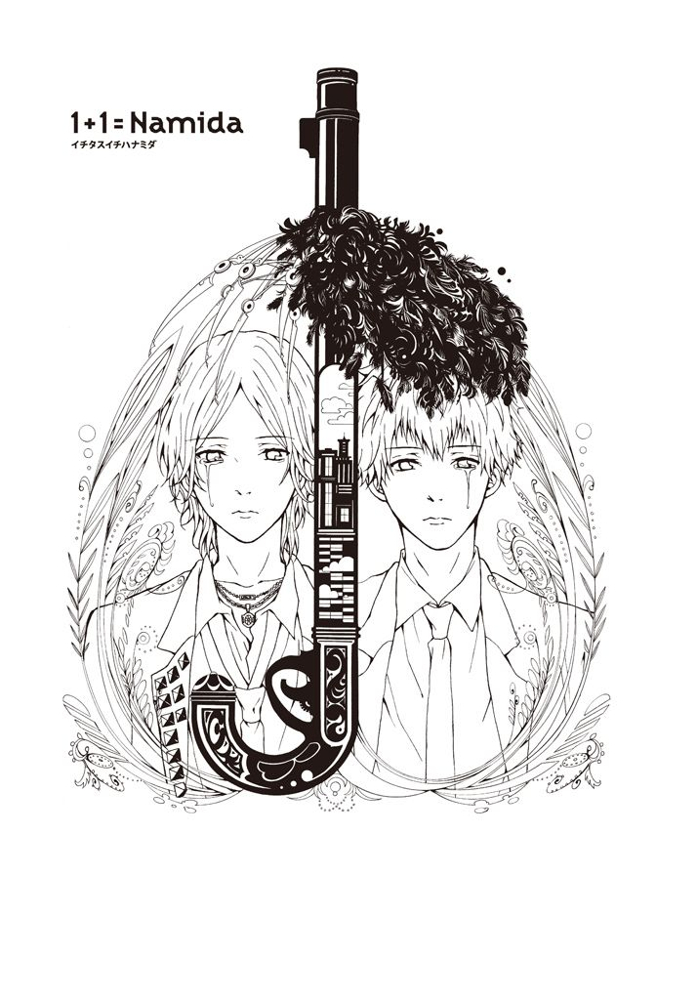
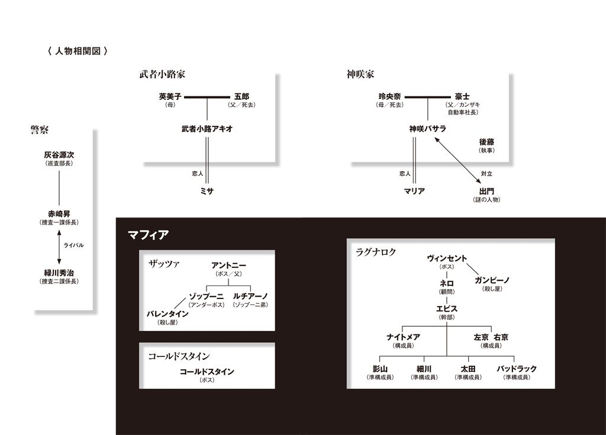
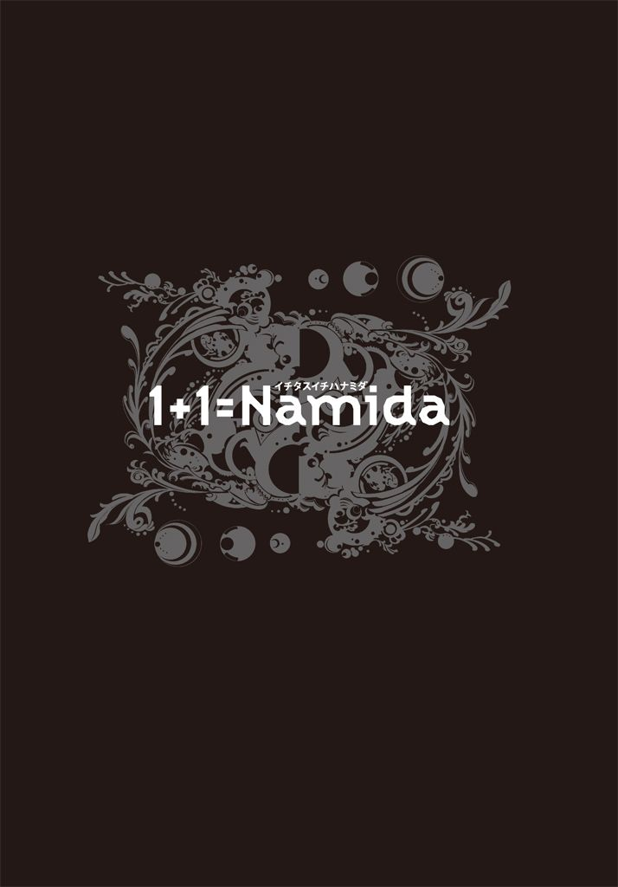
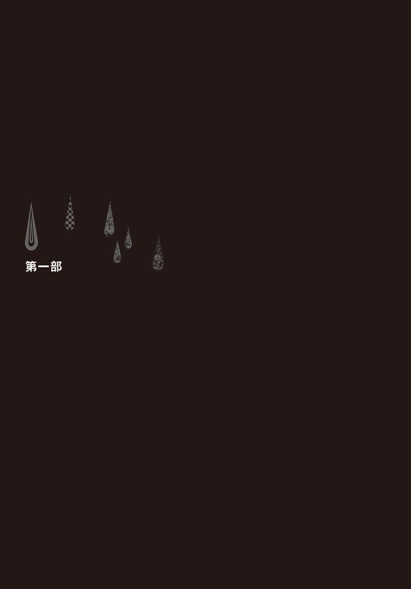
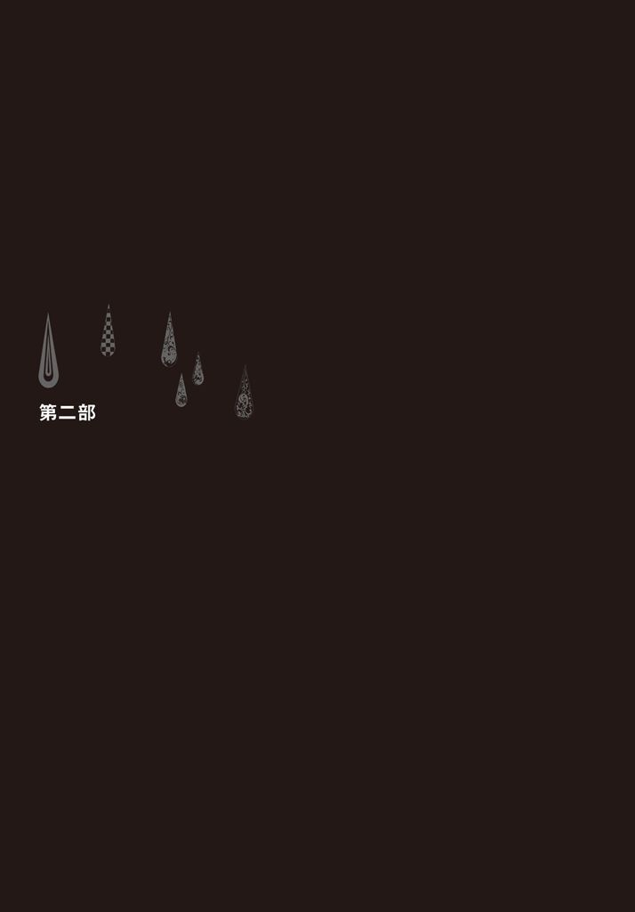

| 1+1=Namida イチタスイチハナミダ | |
| ｚｏｐｐ | |
| (2013) | |


カバー・本文イラストレーション 彩崎 廉

プロローグ
鳴り響いた携帯電話。それが悲劇の始まりだった。
夕方から降りだした雨は、時間が経つにつれて都会の喧騒をかき消すように激しさを増していた。
眠らない街、新宿の片隅に佇むバー『棚からテキーラ』。落ち着いた雰囲気を醸し出す 仄暗 い店内。真っ赤な壁紙、歩くたびに軋む床。年季の入ったカウンターの前には、これまた年季の入った丸椅子が、きっちり等間隔に並んでいる。酒棚には世界中から集められた色とりどりの酒瓶が、薄暗い店内でひときわ輝いている。カウンターの向こうでは、眼光鋭い店主がグラスを丹念に磨いている。丸椅子には、 緩 いパーマのかかった髪を顎まで伸ばし、黒スーツを着込んだ男、 神 咲 バサラが座っていた。
バサラは溜息をつくと、ワインを一気に喉に流し込んだ。カウンターに頬杖をついて目を伏せる。垂れ下がってきた前髪をかき上げ、ワインボトルに手を伸ばそうとすると、静寂を切り裂くように携帯電話が鳴り響いた。聞き慣れた着信音が、やけに耳障りに感じる。液晶を見ると『アキオ』と出ている。嫌な予感が胸をよぎる。
「どうした？ なにかあったか」
返事がない。聞こえてくるのは激しい雨音と荒い息遣い。
「お前、なんで外にいるんだ」
アキオはしばらくの間、西麻布にある隠れ家で身を潜めていなければならない理由があった。
『情けないぜ。助けてくれ。あいつらに追われてるんだ』
アキオが荒い息遣いで、途切れ途切れに言った。
「なんだと？ お前、あれほどじっとしてろって──」
そこでバサラは短くかぶりを振り、心の中で、落ちつけ、と自分に言い聞かせた。
「お前、今どこに──」
『待ち伏せされてた』
「分かった。分かったから。今どこにい──」
『もう駄目かもしれない』
その瞬間、乾いた破裂音がして、ぷつっと電話が切れた。耳元で鳴り続ける不通音が、ゲームオーバーを告げているようだった。バサラは店主を見やると、
「これ、つけといてくれ」
と言ってカウンターを蹴らんばかりに身を 翻 し、殴るようにドアを開け放った。
アスファルトを叩く激しい雨。もはや雨というより滝だ。上着を頭にかぶり、道路脇に停めてあった車へ走る。コバルトブルーのマスタングに駆け込み、キーを差し込んで 捻 る。
──あいつ、じっとしてろって言ったのに。
タイヤが水溜りを弾き飛ばしながら発車した。
マスタングが飛ぶような速さで車を追い抜いていく。
雨はいやになるくらい降り続けている。いくらワイパーを動かしても視界を良好にすることはできない。感覚だけで進んでいくしかなかった。
反対車線を走る車のハイビームで視界を奪われた。次の瞬間、ヘッドライトが照らす先に、傘をさした老婆が現れた。
華麗なハンドルさばきで、速度を落とすことなく彼女を避ける。
交差点の信号は赤。
交差点の左右からけたたましいクラクションの音がし、ヘッドライトが迫ってくる。 躊 躇 なくアクセルを踏み込む。
二台の車が紙一重の差で後方を通り過ぎていった。
やがて、目の前に薄気味悪く口を開けたトンネルが現れる。走り込むと、ようやく視界が鮮明になった。いつの間にか 強 張 っていた肩の力を抜いて大きく息を吐くと、規則正しく左右に動くワイパーを止める。再びアキオにかけてみるが、やはり出ない。
右カーブを曲がりきると、 橙 色に染まった無機質な空間の先に青黒い出口が見えてくる。アクセルを目一杯踏み込む。トンネルを飛び出すと、先ほどまでの激しい雨が嘘のように止んでいた。
しばらく走っていくと、フロントガラス越しに未来都市のような風景が見えてくる。 煌 々 と光るビルの群、虹色に輝く観覧車。その上に赤黒く染まった空が広がる。それを見つめながら、バサラはなぜかはるか昔のことを思い出した。

第一章 運命キッズ
熱気で 歪 んだ空気。 蜃 気 楼 が視界をぼかす。十四歳のバサラは、首をしめつける制服のネクタイを無造作に緩めた。体中から汗が滝のように流れる。鞄から水筒を取り出し、ひと口飲む。水はすっかり冷たさを失っていた。
海を横目に見ながら歩く。浜辺は海水浴客でごった返している。バサラは溜息をつくと、海岸沿いの道をひたすら進んだ。
いつまでもだらだらと続く坂道を上っていくと、大きな左カーブの道が見えてくる。その右手には 鬱 蒼 とした林がある。木漏れ日をもらす高い木々。その下には人の背丈ほどの雑木が、なにかを隠すように生い茂っている。バサラは辺りを見回してから中に踏み込んだ。
林の奥に進んでいくと、枝葉の間に光が見えてくる。その光を辿っていくと、突然左右に視界が開け、目の前に海のパノラマが広がった。
この岬は自殺の名所として知られているせいで、人の出入りがほとんどない。崖から見える景色があまりにも美しく、その美しさゆえに死にたくなる、といういわくつきの場所。だが、ここはバサラにとって特別な場所だった。誰も来ないこの場所に座ってひたすら海を眺める。そうすれば、なぜ母がここから身を投げたのか分かるかもしれない、と信じて。
しかしこの日は、そんな彼だけの聖域に先客がいた。「おーい！ ここだよ」と少年が海に向かって叫んでいる。
近づいていくと、少年がこちらを振り向く。バサラと同い年くらいだった。黒い短髪、垂れ目がかった瞳。肌が真っ黒に日焼けしている。やんちゃな子供の代名詞といった風体だ。そんな彼が恥ずかしそうに頭を 掻 く。
「いつから見てたの？」
バサラは思わず眉をひそめた。
「君、だれ？」
少年はにんまりと笑い、バサラが持っていた水筒を引ったくり、喉を鳴らしながら飲み干した。
「生き返るなぁ。ありがとう。ぬるかったけどおいしかった」。口元についた水を 拭 う。「おいら 武 者 小 路 。武者小路アキオ。君は？」
「神咲。神咲バサラ」
少年は口を尖らせて、ふうん、と首を縦に振る。
「バサラ君は、ここになにしにきたの」
「君こそ、なにしてるんだよ」
バサラはいかにも腹立たしそうに訊き返した。自分だけの場所に侵入され、勝手に水を飲まれ──いったいこいつはなんなんだ？
「おいら？ 学校が終わって、いつもと違う道順で帰ろうと思ったら迷っちゃって、気づいたらここに着いたんだ」。そこで 閃 いたような顔になる。「実は夕飯カレーなんだ。母ちゃんのカレーすごく 美 味 いんだ。母ちゃん、毎日仕事で忙しくて、あんま家にいないんだ。でも今日は休みで、母ちゃんと一緒に食べれるんだ」
バサラはうつむいて小さく肩を震わせ──母ちゃん母ちゃんてうるさいな。そもそもここに着いたこととカレーにいったいなんの関係があるっていうんだ。そんな苛立ちにも気づかず、アキオは続ける。
「あ、母ちゃんに買い物頼まれてたんだ。すっかり忘れてた。うちの母ちゃん、怒ったら怖いんだ。バサラ君のおかげで思い出したよ」
そう言ってアキオが肩に手をのせてきた。バサラはその手を乱暴に振り払う。
「君のお母さんの話なんてどうでもいいっ！ ここは僕の場所なんだ！ 出ていけっ」
アキオが目を見張る。
「え？ そうなの？ どこにも名前、書いてないよ？」
「そんなのあるわけないだろっ！ いいから早く出ていけよっ」
勢いよく踏み出し、アキオの胸に向かって両手を突き出したが、かわされてしまう。勢い余ったバサラは、崖っぷちで足を踏ん張り、飛べない鳥のように空をかく。アキオが慌てて腕を伸ばす。バサラの肩まで数センチというところで、崖からバサラの姿が消えた。
アキオが腹ばいになって恐る恐る崖を見下ろすと、バサラは突き出た岩に右手で掴まっていた。
「大丈夫？」
「だ、だ、大丈夫なわけないじゃないか」
アキオは身を乗り出して手を伸ばす。バサラはその手を 一 瞥 しただけで、目を 逸 らした。
「君には関係ない」
そう言い放ったものの自力では這い上がれない。見かねたアキオが、再び手を伸ばしてきた。バサラの腕が悲鳴を上げている。意地をはっている場合ではない。バサラは左腕を振り上げた。
アキオが引き上げようとした瞬間、バサラの手首が滑り抜けた。バサラは体勢を崩すが、なんとか 堪 えた。右手のひらに鋭い岩の 凸 凹 が食い込む。はるか足下では波が砕けて散る。
『死ぬってなに？ 生きるってなに？』
そんな言葉がバサラの脳裏によぎった。それはこの崖の先端に座りこんで、母に向かって毎日問いかけていた疑問だった。
アキオは手のひらをシャツで拭い、バサラの左手を掴んで上げる。次の瞬間、突風が殴るように吹きつけ、アキオは体勢を崩し、足を踏み外した。落ちる寸前、とっさに手を伸ばして崖の縁を掴んだ。
宙ぶらりん状態の二人。波が岩に砕ける音が生々しく聞こえてくる。
バサラは海を見下ろす。──このまま落ちれば母さんの気持ちが分かるのかな。そんなことを考えているとも知らず、アキオは体を引き上げようともがいている。
「いっせーので、上げるよ。いっせー」
「ほっといてよ」
予想だにしなかった言葉が返ってきて、アキオは目を 剥 いた。
「え？ なに言ってんの」
「いいんだ......。僕は死んだっていいんだ」
「そんなの駄目だっ!! 」
アキオが声を荒げて力強く握り返してくる。つい今しがた会ったばかりの自分を命がけで助けようとする彼の行動が、不思議で仕方なかった。
やがて、アキオの手が限界を告げるように震え始める。
「このままじゃ君まで落ちちゃうよ。僕はいいから......」
『死ぬってなに？ 生きるってなに？』、その答えがすぐ目の前に迫ってきていた。
──母さんに会えるのかな。
永遠の眠りについた母の顔が、一気に脳裏を埋め尽くしていく。
「弱虫っ！ そんなんじゃ母ちゃんが悲しむぞ!! 」
その言葉を聞いた瞬間だった。
『バサラ』
不意に遠くから声がした。目を閉じる。
『あなたには、これからたくさん、たくさん、 辛 いことが待っていると思うわ』
母の声だった。自殺をする前日に話してくれた言葉だった。
『いつかは、離れ離れになるかもしれない──』
そこで声が途絶えた。
涙が頬を滑っていき、海へ落ちていく。──母さんに会いたい。バサラが指先から力を抜いた。
「諦めちゃ駄目だっ」
アキオが張り上げた声が、さらなる記憶を呼び起こす。
『──でも、諦めないで。強い男の子になってね』
かっと目を見開き、手に力を込めた──。
絵に描いたような雲が、視界を右から左へゆっくり流れていく。
二人は仰向けになったまま空を見つめていた。
「なんで、助けてくれたの」
「なんでって......。助けるのに理由なんてないよ」
バサラの目じりからひと粒の涙が 零 れた。
＊
授業が終わると、バサラは鞄の中の水筒を確認し、外履きに履き替えて、足早に校舎を出た。
渋く深みのある赤レンガでできた外壁、屋上には巨大望遠鏡が設置されている。校舎と校門の間には大きな噴水があり、美しい虹を作りだしていた。
噴水の横を通り、校門に目をやると、三人の男子生徒がいた。おずおずと彼らの前を通り抜けようとする。
「なぁ、そんな急いでどこに行くんだよ？ 今日は遊んでくれないのか」
足を止めて横に目をやる。
太 田 博 。小太りなちび。金魚のフン。人の神経を逆撫でする能力抜群。
その横でひょろりと背の高い少年が、薄気味悪い笑みを浮かべてこっちを見ている。
細 川 宗 男 。 寡 黙 かつ冷静。
聞き流して通り過ぎようとすると、いきなりみぞおちを殴られる。腹を抱えてうずくまっていると、髪を掴み上げられた。
「おい、金は持ってきたのかよ」
影 山 鷹 人 。オールバックにした長い金髪。額には大きな傷跡。元ミドル級チャンピオンの父に憧れ、プロボクサーになることが夢。
「お金なんてない......」
「なんだと」
影山はさらに髪を引っ張り上げる。その様子を見て、太田が不愉快な笑みを浮かべ、
「島一番のおぼっちゃまに金がないわけないだろ。ママが寝ているすきに財布から金を盗んでこいって教えたよな？ あ、ママはいないんだっけ」
と言ってせせら笑った。
彼らは毎日のようにバサラに 絡 んでくる。絡む理由は三つ。父親が島一番の金持ちであること。影山よりも女生徒にモテること。学年で常に一番の成績であること。つまりバサラは、彼らだけではなく誰もが嫉妬してしまう存在なのだ。だが、それ以上に彼らの苛立ちを誘うのは、誰とも群れようとしない態度だった。
バサラは強い眼差しを向ける。
「こんなことして、なにが楽しいんだよ」
「おいおい。なんだその態度は」
影山は髪を掴んだままバサラを立たせ、両手で胸を突き飛ばした。そして、おもむろにファイティングポーズをとり、人差し指で、かかってこいよ、と挑発した。
今までのバサラは、一方的な暴力に屈していた。なぜなら、抵抗したところでなにも変わらないと痛感していたからだ。どうせ誰も助けてくれない。そんな冷めた目で周りを見ていた。しかし一週間前、岬で死と向き合い、飲み込まれそうになったとき、他人のまっすぐな言葉でそれを乗り越えられたこと、さらには母の言葉を思い出したことで、バサラの中でなにかが変わったのだ。
──諦めちゃいけないんだ。
バサラは弱音を閉じ込めるように口を真一文字に結び、身構えた。
今までとは違うバサラの態度を見て、影山が苛立ちを声にする。
「その生意気な目。気にいらねぇ。さっさとかかってこいよ」
バサラは勢いよく駆けていき、拳を突き出した。熱い衝撃が拳から全身に伝わっていく。拳が影山の頬を捉えていた。しかし次の瞬間、腹部に鈍器で殴られたような衝撃。続いて鋭い痛みが頬を走った。
バサラが砂煙を上げながら倒れた。
「勝てるとでも思ったか？ 俺の親父は『ミスターパーフェクト』影山 速 人 だぞ。さっきの一発はサービスだよ。お前の勇気に敬意を払ってやったんだ」
影山がゆっくりと近づいてくる。とっさに拳を握りしめた。手のひらに砂が握られていた。立ち上がり、再び身構えて刺すような視線を放つ。
「おいおい、どうした。いつもだったら地面に這いつくばってるのによ。なぁ」
そう言って影山が振り返ると同時に、バサラは駆け出す。振り抜いた拳は空を切り、そこに影山のカウンターの拳が......。
──あれ。
影山の拳がまだ自分の頬を打っていない。目を開けると、視界に映る全てがスローモーション再生しているように見える。不思議に思いながら、上半身をわずかに後ろに反らし、影山の拳が鼻先を通り過ぎていくのをまじまじと観察する。怒りに歪んだ影山の頬の筋肉が、目で見て分かるほど波打っている。握りしめていた砂をその顔めがけて投げつけた。
そこで視界の速度が元に戻った。目を押さえたままもがく影山の鼻っ柱に、 渾 身 の拳を叩き込む。さらに腹部へ膝蹴りを見舞う。よろけた影山が背中から倒れた。喜びもつかの間、影山が鼻を手で押さえながら、のっそりと立ち上がる。手には鼻から流れ出た血が、べっとりとこびりついていた。自分の血を見た影山の動きが、にわかに凍りついた。すると、その様子を見た細川が口を開いた。
「バサラちゃん。今のうちに逃げた方がいい。じゃないと後悔するよ。鷹人は自分の血を見るのが嫌いなんだ。親父さんがなんで『ミスターパーフェクト』って呼ばれたか知ってるかい」
バサラが首を捻ってみせると、細川が不敵な笑みを浮かべた。
「一滴も自分の血を流さずにチャンピオンになったからだよ。そんな親父さんみたいになるのが目標なんだ」。ひと呼吸置き尋ねてくる。「鷹人の額の傷、なんだと思う」
影山の額を見て、バサラは再び首を捻ってみせた。
「高校生にバットで殴られたんだ。すごい血が出てさ、その血を見た鷹人がいきなりキレて、相手をぼこぼこにしたんだ。助けてくれって泣いてたけど、結局病院送り。高校生だよ？ 凄いだろ」
細川の口調は恋人を自慢するようだった。
影山がゆっくりと顔を上げてこちらを 睨 み、いきなり突進してきた。今度はスローモーションにならない。あまりの速さに身動き一つ取れないでいると、顔面を殴られて吹き飛ばされる。起き上がろうとしたところに馬乗りになられた。そこからはどこをどう殴られているのか分からなかった。
初めはどうにか抵抗しようとしていたバサラの手が、地面にだらしなく伸びたのを見て、細川は急いで影山を 羽 交 い 絞 めにした。
「落ち着けよ。このままじゃ殺しちゃうよ」
影山は獣のように叫びながら、それでもバサラを殴ろうともがいている。細川が息を切らしながらバサラを見て声を絞り出した。
「早く行けよっ！」
バサラはふらつきながらもなんとか立ち上がって走り出す。校門を通り抜けると、背後から甲高い悲鳴がした。肩越しに見ると、影山が細川を殴りつけていた。すぐ横には腰を抜かしたのか、太田がしゃがみこんでいた。今の今まで気づかなかったが、校門にはたくさんの野次馬が集まっていた。
──きっと誰かが先生を呼びにいったはずだ。でも、今は逃げなきゃ。
バサラは無我夢中で走り出した。
逃げろ、逃げろ、逃げろ。
いくら心の中で唱えても、体は同調してくれない。口の中はすでに血の洪水だ。だが、鉄の味すらしない。それでも立ち止まらず、振り向かず、とにかく必死に走り続ける。
やがて海が見えてきた。見慣れた風景が気持ちを落ち着かせてくれた。立ち止まって、荒くなった息を懸命に整える。浜辺では子供たちが楽しそうに遊んでいる。その姿がいつにも増して眩しく見えた。
ふと来た道を見返ると、豆粒大の人影が迫ってくるのが見えた。目を凝らす。影山だった。
吐き気がするほどの暑い日にもかかわらず寒気がした。だが、呆然としている場合ではない。バサラは再び走りだした。
坂道を上がり、右手にある林へ入る。足が言うことを聞かない。木々にぶつかる。地面から頭を出した岩に足を取られて転ぶ。それでも必死で足を前に出す。枝葉が行く手を邪魔するが、かき分けながら進む。
辿り着いた場所。それは、あの岬だった。
糸の切れた操り人形のように倒れ込む。体力の限界はとっくに超えていた。
──ここまで来れば大丈夫。
安堵の息を漏らしたとき、林の向こうから枝を乱暴に踏み折る音がした。どんどん近づいてくる。影山の足音に違いない。急いで木の後ろに身を潜める。足音が止まった。辺りが静寂に包まれる。わずか数秒の静寂だが、永遠に感じるほど長い。
追ってきた足音が遠ざかっていく。
止めていた息をゆっくり吐き出す。木陰から様子を 窺 おうとしたときだった。地面についた膝の下で小枝が、ぱきり、と音を立てた。足音がいったん止まったかと思いきや、 憤 怒 を帯びて引き返してくる。
──終わった。
荒い息遣いが急接近してきて、真上で止まった。恐る恐る見上げると、怒りに膨らんだ影山の顔があった。
「バサラァ！ 手こずらせやがってぇ」
襟を掴まれ、容赦なく拳の連打を浴びせられる。受けるたびに世界は激しく揺れ、歪み、目の前が一気に暗くなっていく。
そのときだ。
「おいらの友達になにしてんだっ！」
誰かの怒声が聞こえ、拳の雨が止んだ。痛みを堪えて薄目を開けると、影山の肩の向こうにアキオが立っていた。影山が 咆 哮 し、アキオに襲いかかった。
「駄目だ。逃げて......」
バサラの呼びかけも虚しく、影山の拳がアキオに振り抜かれた。骨と骨とがぶつかり合う鈍い音がした。しかし、アキオは蚊が止まったほども動じることなく余裕の表情で立っている。影山が再び振り抜いてきた拳をかわし、がら空きになった腹部に拳を叩きこんだ。すると彼の口から、げぇ、という人間のものとは思えない声が漏れ、四つん這いになった。
「もう終わり？ おいらまだ全然本気じゃないよ」
影山は険しい目つきでアキオを睨むと、すぐさま立ち上がって反撃する。ジャブ、ジャブ、フックの連打。アキオが鍛え抜かれた肉体で全て受け止める。徐々に影山の顔に疲労と悲壮の色が浮かびあがってくる。
「なんでだ。俺のパンチをこれだけくらって、なんで──」
そこで無造作に突き出されたアキオの拳が、影山の声を 遮 った。骨が砕ける音がして鼻から血が噴き出る。続けざまに前蹴りが顎を突き上げた。影山の体が一瞬浮き上がり、鈍い音を立てて地面に落ちた。
バサラは何度も目をこするが、目の前には気絶した影山と、平然とした顔で彼を見下ろすアキオがいた。
「すごく強いんだね」
アキオが口角を上げ、力こぶを作ってみせる。
「毎日、海と山で鍛えてるんだっ」
「そうなんだ......」
アキオが近づいてきて顔をしかめた。
「痛そうだね。もっと早く助けられたのに、ごめん。あんまり暑いもんだから、林の中で涼んでたんだ。そしたらいつの間にか寝ちゃってさ。おいらが寝てなけりゃ......」
「いいんだよ。だって......」、バサラは一瞬考えてから、「ヒーローは遅れて登場するもんだしさっ」。
「ヒーロー......、そっか！ おいらヒーローか」
両手を上げてはしゃぐアキオを見て、バサラは苦笑いした。
＊
唐草の透かし柄の黒い 鋳 鉄 の 門 扉 。高さはゆうに十メートルはある。垂直にそそり立つコンクリートの塀。それがおそらく百メートルほどか、とにかく延々まっすぐ延びている。
「ここが、バサラ君の家？」
「うん。ここが表門で。ここから入って、しばらく歩くと家だよ」
「え？ 表門ってなに？」
バサラはアキオの問いかけに答えず、門扉の横にあるチャイムを押す。少しの間を置いてから、鉄門が重厚な音を鳴らしながら開いていく。アキオが両目を一杯まで見開いた。
「おおお！ 勝手に開いてる」
「そうだよ」。バサラは少し誇らしげに答えてから、「行こう」とアキオの手を取り、門をくぐった。
庭一面に広がる自動車。ビンテージカーからスーパーカーまで、世界中から集められた数百台の車が、綺麗に磨き上げられ、所狭しと置かれている。
「バサラ君ちって車の博物館なの？」
「違うよ。これはお父様のコレクションなんだ」
アキオが各車の名前を尋ね、バサラがそれに答える。そんなやりとりをしながら真っ白な砂利道を進んでいると、大きな噴水が見えてくる。その向こうには小高くなった丘があり、古城を思わす建物がそびえ立っていた。
玄関前、制服姿の男が、光沢のある黒のロールスロイスをせっせと磨いている。その隣で、背の高い初老の男が、笑顔を浮かべながら手を振っている。白髪交じりの髪をオールバックにし、綺麗なシルクの燕尾服を着た、いかにも老紳士といった風体だ。もう片方の手にはアタッシェケースを持っている。
老紳士はバサラの顔を見るや否や、泡を食った様子で駆け寄ってくる。
「ぼっちゃま！ お怪我をなさっているではないですか。すぐに病院に行かなければ!! 」
「ははは、爺や。これぐらい大丈夫だよ」
「ですがぼっちゃま！ 血が」
「大丈夫だってば。それより紹介したい人がいるんだ」。きょろきょろ視線を動かしているアキオの腕を取って、前に引っ張り出した。「アキオ君っていうんだ」
「初めまして、おいらアキオです」
爺やと呼ばれた男は 恭 しく頭を垂れると、優しそうな笑顔をアキオに向けた。
「アキオ様、初めまして。わたくし執事の 後 藤 と申します」
「ひつじ？」
「いえ、羊ではなく執事でございます」
顔をしわくちゃにしながらそう答えると、ちらりと腕時計に目を落とした。
「アキオ君。爺やはなんでも知ってるし、力持ちだし、足もチーターみたいに早いし、射撃もできるんだよ。ねっ」
「そうでございますね」。後藤は笑顔でそう応えると、ロールスロイスを一瞥して「ぼっちゃま。お話はこれぐらいにして、お部屋に戻られないと」
「あ......。うん。そうだね」
バサラが向き直ると、先ほどまでそこにいたはずのアキオが、 忽 然 といなくなっていた。周囲を見回すと、玄関ドアの前にその姿があった。
「お城みたいだ。やっぱりバサラ君ちは博物館なんでしょう？」
そう言ってアキオが振り返ったときだった。両開きの玄関ドアが内側から勢いよく開き、男が歩き出てきた。黒髪をびっちりとオールバックにし、彫りの深い顔で、眉間に深い皺を刻んでいる。男はアキオに目もくれず車を磨いていた男に向かって足早に歩いていく。
「準備ができたのなら、さっさと呼びに来ないかっ」
そう怒鳴りつけると同時に後藤が、「旦那様」と横からアタッシェケースを差し出した。
旦那様と呼ばれた男、神咲 豪 士 は、バサラの父親である。
豪士はケースを奪い取ると、向き直り、じろりと睨む。バサラが体をびくっとさせ、うな垂れた。それから豪士はアキオに目をやり、あからさまに不愉快な顔をした。その表情を悟ったのか、にわかにアキオが口を開いた。
「あ。ど、どーも、えっと、武者小路アキオです。初めまして。えっと、バサラ君は悪くないんです。学校で不良三人に絡まれて。それでえっと、いつもはやられっぱなしだったんですけど、今回は闘ったんです。凄いと思いませんか」
豪士は黙ったままだ。その沈黙がなにを意味しているのか、アキオ以外の二人には痛いほど分かっていた。
「相手は親父さんがボクシングの元チャンピオンで、本人もボクシングやってるらしくって。あ、でも、おいらの相手じゃなかったですけどね。へへへ」
しばしの沈黙を経て、豪士が重い口を開いた。
「私がいつ貴様に説明を求めた」
口だけでなく声のトーンも重い。
「え？ あ、いや、でも──」
「黙れっ！ 私の敷地に勝手に入ってくるな！ 後藤。この薄汚いゴミをさっさとつまみ出せっ」
「はいっ。旦那様」
後藤が深々と一礼し、申し訳なさそうな顔でアキオの腕を掴んだときだった。
「アキオ君は僕を助けてくれたんだ。そんな酷いこと言わないでよっ！」
声を荒げたバサラを見て、豪士が目を剥いた。今までバサラが歯向かったことなどなかったのだ。眉間の皺をさらに深くさせ、奥歯を噛み締めたまま絞り出すように言う。
「父親に向かって、なんだその口のきき方は」
「いくらお父様だからって許せないっ！」
空気を切り裂くような音がし、バサラはもんどりうって倒れた。後藤が駆け寄ってきたが、バサラは自力で起き上がり、豪士に強い眼差しを向ける。
「なんだその目は」。口調は落ち着いているが、豪士の表情は怒りに満ち溢れている。「口で言っても分からん奴は、こうしてやるっ」
そう言ってバサラの頬を平手打ちした。今度は倒れない。バサラは豪士から目を逸らさない。
「お前がその態度を改めるまでは止めんぞっ」
徐々に叩く手を早めていく。叩かれるたびにバサラの体が、風に吹かれる稲穂のように左右に大きくしなる。
やがて足元がぐらつき始める。もはや立っているのが精一杯といった感じだ。そのとき、アキオが声を張り上げた。
「やめて下さいっ！ おいらなんです。おいらが勝手についてきたんです。だから、だから、叩くならおいらを叩いて下さい」
涙ながらに訴えたアキオに豪士が向き直り、拳を固く握りしめた。バサラが止めようと手を伸ばすが、体が言うことを聞かない。声すら出ない。豪士の背中が遠くなる。その両肩は噴火寸前の火山のように震えていた。
「この薄汚いガキがっ」
一発、二発、三発、殴られるたびにアキオが「すいません、すいません」とかすれた声で謝る。
バサラはサンドバッグ状態になっているアキオを見つめることしかできない。その塞ぎかかっていた目からひと粒の涙が零れた。
殴られたアキオが無防備に地面に倒れ込んだ。もはや意識はないようだ。豪士が肩で息をしながら、さらに歩を進めようとしたとき、
「旦那様！ それ以上はいけませんっ」
後藤が間に割って入った。ようやく我を取り戻したのか、豪士は 懐 から取り出したハンカチで拳についた血を拭き取ると、 忌 々 しげに鼻を鳴らして投げ捨てた。すぐさま後藤が新しいハンカチを差し出す。
「 金 輪 際 この家に近づくなっ！ 分かったな!! 」
豪士を乗せたロールスロイスが、門に向かって飛ぶように走っていった。
ふと、後藤が玄関に目をやると、召使いたちがアキオを見て、なにやら小声で話している。彼はおもむろにアキオを抱き上げ、声を荒げた。
「この者は私が裏口から追い出しておきます。貴方たちはすぐに持ち場に戻りなさいっ」
その声色に怖気づいた召使いたちが、 蜘 蛛 の子を散らすように消えていく。後藤はその中の一人を呼び止め、バサラを治療するように指示した。
召使いに抱えられたバサラは、すれ違いざまに後藤のジャケットを握った。すると、後藤が小さくウィンクをした。良かった。そう思った途端、視界が真っ暗になった。
ドアを開ける。ほぼ正方形の部屋。壁には所狭しと猟銃が立て掛けてある。全て後藤が趣味で集めているものだ。左奥にベッドがあり、顔中包帯巻きのアキオが眠っている。その横で後藤が木製のロッキングチェアに座り、コーヒーカップを傾けていた。バサラに気づくと、後藤は立ち上がり、丸椅子をベッドの横に置いた。バサラは椅子に座り、眠っているアキオをしばし見つめてから、後藤に向き直った。
「爺や。ありがとう」
「とんでもございません。ぼっちゃまの大切なお友達ですから」。アキオ同様、顔中包帯巻きのバサラを見て、後藤が頬を緩める。「ぼっちゃま、ミイラみたいですね」
「ほんとだよね」
二人が屈託ない笑顔を向け合っていると、アキオが目を覚まし、ゆっくりと上体を起こした。
「バサラ君のお父さんって、怖いね」
「いつもはあんなことする人じゃないんだ。頭もいいし、みんなから尊敬されてるし......」、そこでひと呼吸置いて、バサラは眉間に皺を寄せた。「......でも、アキオ君にまであんなことするなんて酷いっ」
昔から豪士は厳格な父親だった。そんな豪士とは対照的に、母親の 玲 央 奈 はいつも優しく、笑顔の絶えない人物だった。バサラが泣いていると優しく笑いかけ、泣きやむまで抱きしめた。どこに出かけるときも一緒だった。バサラは母親が大好きだった。彼女がいるからこそ、父親の厳しさに耐えることができていた。
「ぼっちゃま。旦那様は大事な会議前で、苛立っておられたのです」
「そうだよね。あの人は僕なんかより会議が大事なんだよね」
「それは......」
バサラはシーツをしわくちゃに握り締める。
「もうあの人の言うことなんて聞かない！ 僕なんかどうでもいいんだっ」
「豪士様は不器用な御方なのです。どうか許してあげて下さい」
バサラは後藤へ向き直り、眉をしかめて尋ねる。
「なんで爺やはいつもあの人を 庇 うの」
後藤はうつむき、申し訳なさそうに押し黙った。
「ごめん......。爺やは悪くないのに」
後藤は、滅相もございません、というように首を横に振るだけだった。
「尊敬してたのに。だから......」
涙が止まらなかった。そんな自分を優しく抱きしめてくれた後藤に──これが本当の愛情なんだ。爺やは信じていいんだ。バサラはそう心の中で呟きながらすがりついて泣いた。
落ち着きを取り戻すと、アキオへ向き直る。
「怪我、大丈夫？」
アキオが笑みを浮かべながら 頷 く。
「アキオ君のお父さんは、優しい人なんだろうね」
「おいらんち、父ちゃんいないんだ」
「え......」。バサラは一瞬息を呑む。「ごめん。変なこと訊いて」
「気にしないでいいよ。父ちゃんは......。おいらがちっちゃい頃に、交通事故で死んじゃったんだ」
「そうなんだ」。うつむいてから、「僕も同じ......」と消え入りそうな声で言った。
「同じって？」
乾き切ったと思っていた瞳から再び涙が零れた。似たような境遇の持ち主であるアキオになら言える、とバサラは思った。
「お母さんが、いないんだ」
「そうなんだ......」
バサラは首を縦に振り、目をこすってから笑みを浮かべてみせた。
「さっきはありがとう」
アキオが、気にしないで、というように手を振り、小さな笑みを零した。
「おいら嬉しかったんだ」
バサラが、なんで？ というふうに両眉を吊り上げてみせる。
「おいらのこと、友達って呼んでくれたから」
「友達だよ！ 大事な、大事な友達」
「これでおいらたち、アミーゴだね」
「アミーゴ？」
「どこの言葉か忘れちゃったんだけど、友達、って意味なんだ」
「そうなんだ。うん、僕たちアミーゴだね」
微笑み合う二人を見て、後藤も目を細めた。
黒板の前、年甲斐もなく髪を茶色く染めた教師が、つまらない 駄 洒落 を交えながら熱弁を奮っている。バサラは机に頬杖をついて、窓の外に目をやる。薄紅色の花びらが、風にのって飛んでいく。期待と不安が入り混じる季節。この島で桜を見るのは、これが最後になるのかな。そんなことを考えているとチャイムが鳴った。
廊下に出ると、背後から「神咲先輩」と呼ばれた。見返ると、女生徒が二人、足早に近寄ってくる。濃紺のブレザーに 紅 い校章。二年生か。一人の女生徒が、恥ずかしそうにクッキーの入った半透明の袋と、ハートのシールで閉じられた手紙を渡してくる。受け取ると、彼女たちは黄色い声を上げながら足早に走り去った。バサラは溜息を漏らし、昇降口へ向かった。
下駄箱を開けると、手紙とプレゼントの箱が滝のように落ちてくる。
カンザキ自動車の 御 曹 司 、美男子、文武両道。そんな彼を女子が放っておくはずがなかった。しかも来年は、卒業して東京の大学に進学することが決まっている。みな最後のアプローチに必死だ。
バサラが呆れたようにかぶりを振りながら拾っていると、ツインテールの女生徒が、くりくりとした目を大きく見開いて覗き込んできた。薄い唇が開く。
「相変わらずモテモテだね。それなに？ 開けてみなよ」
そう言うが早いか、彼女は箱を開け始めた。
「なんだマリアか。ていうかお前、勝手に──」
「すごーい！ おいしそう！ 食べてもいい？」
彼女が手にしたチョコレートと同じ色とまでは言わないが、よく日焼けした肌が勢いよく近づいてくる。周りの女生徒たちが白い目を向けるが、彼女はそんなことお構いなしにじゃれてくる。もしかしたら、そう見られていることすら気づいていないのかもしれない。
マリアと初めて会ったのは、入学して間もない頃だった。美人というより可愛いと思った。笑顔が絶えない、活発な子という印象だった。今になって思うことは、ちょっと、いや、かなりの天然キャラだ。
「どうせ食べないし全部やるよ」
「やった！ さすがバサラ」
ひときわ目を輝かせるマリアに手紙と箱を投げると、彼女は目を白黒させた。
「さすがに手紙はもらえないよ。ちゃんと読んであげなよ」
バサラは「興味ない」と呟き、下駄箱から取り出した靴を履いた。
「えー。もう帰るの？」
マリアは口をへの字にし、わざとらしく目を 潤 ませた。
「そういう甘えん坊キャラは似合わないぞ。じゃあな」
バサラは肩越しに手を振りながら、校舎を出ていった。
「こらー。同級生なんだから子供扱いするな」
マリアはその背中に向かって、べえ、と舌を出した。
校門を出ると、濃い 鼠 色の、隆々とした筋肉を思わせる雲が、雲一つなかった空を侵食し始めていた。──降りそうだな。急ごう。バッグを肩に担ぎ、バサラは走り始めた。
＊
大通りが見えてくる。平日だというのに街は人で溢れている。
ここは、湾に面した海沿いの街である。様々なレストランやバーが立ち並んでおり、若者が集まるスポットとして有名だ。
しばらく歩くと、看板が斜め下にずれた店が見えてくる。看板には波に乗っているサーファーが描かれており、その横には『波乗りサニー』と書かれている。入口横にある駐輪場にスカイブルーの自転車が停まっている。アキオはもう来ているようだ。
店内はがらんとしていた。座席は四十席ほどあるが、客は一人もいない。店の奥にはカウンターがあり、それに平行して四人用の机が窓際に四つ並ぶ。カウンターの向こう側では、キャップ帽をかぶったウェイトレスが、のんびりとガラスコップを拭いている。すっきりとした目鼻立ちの、わりと大人びた顔。唇の厚さがそう見せているのかもしれない。スタイルは申し分ない。
声をかけようとすると、彼女は親指でトイレを指差した。目を向けると、ドアがちょうど開いて、男が出てくるなり、「遅いよ」と垂れ目がかった瞳をわざとらしく細めた。
「悪い悪い。それより開いてるぞ」
含み笑いをしながらバサラが指摘すると、アキオがそそくさとチャックを閉めた。
「後で言ってくれればいいだろっ」
灰色に染まった空。雨粒が窓を叩き始める。
バサラの前には汗をかいたアイスコーヒー。アキオの前には鮮やかな蛍光緑色のメロンソーダ。アキオが煙草に火を点け、煙をぷかぷかさせる。それに呼応するように炭酸の泡もぷかぷかと水面に上がっていく。
放課後、この店に集まるのが二人の日課である。ここを見つけてきたのはアキオだった。初めて来たとき、なぜアキオがこの店を選んだのか理解できなかった。人の出入りが少ないので、他校や地元のワルたちから襲撃される可能性が少ないから、と想像していたが、それは見当違いだった。この店を選んだ理由は、ウェイトレスを見つめるアキオの顔を見れば、火を見るより明らかだった。なんでも偶然店の前を通りかかったとき、窓を拭く彼女の姿にひと目惚れしたらしい。それから毎日のように通っているが、想いを打ち明ける気配は今のところない。
彼女の名前はミサ。バサラたちの一つ年上である。調理場にいる中年男性は、彼女の父親であり店長でもある。二人以外に店員はおらず、俗にいう親子経営である。ちなみに、二人はこの島の出身ではない。一年前、東京からやってきたのだ。
窓を叩く音が激しさを増す。いつの間にか地面には大きな水溜りができていた。それにもかかわらず店内は相変わらず閑散としている。
そんな店も、十九時を過ぎると客が押し寄せてくる。とはいえ、やってくるのは男性客のみだ。
小一時間もすると、店内は男だらけになった。特に名物料理があるわけでもないこの店に彼らがやってくる目的は一つだけ。それはミサだ。薔薇の花束を持ってくる者、高級シャンパンを持ってくる者、サラリーマンから漁師まで十人十色である。
アキオはその様子を横目で見ながら、
「ミサさんって、モテるよな」
愚痴るように呟いた。バサラも横目で見る。
「あの感じだと、東京でもモテたんだろうな」
「バサラだってモテるだろ。そういえば、好きな子とかいないのかよ」
バサラは頬杖をつき、 嘆 息 する。
「女なんて薄情なもんだ。ミサさんを見ろよ。あれだけ男たちが言い寄ってくるのに知らんぷり。そのくせプレゼントはもらう。ちゃっかりしてるよ」
「それは違う。全然違う。ミサさんはお袋さんがいなくて──」
バサラは、ぽんとアキオの肩に手をおき、「その話、耳にたこができるくらい聞いた」と一つ大きく頷いてみせた。すると、アキオが開いたままだった口を尖らせた。
「耳にたこ？ どこにそんなもんあるんだよ？ 見せてみろよ」
アキオが身を乗り出して耳を掴もうとする。バサラは「やめろよ」と笑いながら払いのけた。
アキオは腰を下ろすと、窓の外に目を向けた。
「もうすぐ、おいらたちも卒業か」
「急になんだよ」
「バサラは東京の大学に行くんだよな」
「まぁな。アキオはどうするんだよ？ 東京に行ってみたいって言ってなかったか？」
アキオは腕を組んで、うーん、と 呻 いた。
「おいらは島に残って働く。島を出る意味もないし、母ちゃんを一人にはできないからさ」
バサラが気まずそうに頷いたとき、カウンターから怒鳴り声がした。見れば背広姿の男とタンクトップ姿の男が、なにやら言い争いをしている。お互い酒も入っているせいか、口論は徐々に熱を帯びていく。だが、誰一人として彼らを止めようとはしない。むしろ 煽 っている。ミサは見て見ぬ振り。店主にいたっては、そそくさと厨房に消えてしまった。
顔を真っ赤にした背広姿の男が殴りかかるが、避けられ、別の男に当たってしまった。殴られた男が激高して殴り返すが、また別の男に当たってしまう。そんなやり合いを繰り返しているうちに、店にいるほぼ全員を巻き込んだ大乱闘に発展した。
バサラが、余計な揉め事はごめんだ、というように席を立った。ふと、カウンターに目をやると、小汚いオヤジがどさくさに紛れてミサにへばりついていた。すると、アキオが男たちを払いのけていき、またたく間にそのオヤジを叩き伏せた。そこからはアキオのワンマンショーだ。次々と男たちが打ち倒される様を、バサラは静かに見守った。
これが愛の力か。バサラがそんなことを考えているうちに、男たち全員が床に倒れていた。何人かはまだ意識があるようで呻いている。
アキオがカウンター内でへたりこむミサのもとに歩み寄った。
「大丈夫ですか？」
ミサはキャップ帽を拾い、小さく感謝の言葉を呟いた。
乱れたシャツの胸元から胸の谷間が見える。アキオはとっさに視線を逸らし、「いいんす、いいんす」と頭を掻いた。
そのとき、がんっ──鈍い金属音を立ててドアが勢いよく開き、黒スーツの五人組がぞろぞろと店に入ってくる。見るからに 堅 気 の人間ではない。先頭を歩くもじゃもじゃパーマの男が、倒れた客たちを蹴飛ばす。
「どけっ。邪魔だ」
すぐ後ろを歩く髪を七三に分けた男が、肩をすくめながらミサに目をやった。
「おやおや喧嘩ですか？ お怪我はないですか、ミサさん？」
「ナイトメア......。もう店には来ないでって言ったでしょ」
「やれやれ、困りましたね。来ないでと言われましても、これが仕事なので。おや、お父様はお留守ですか」
ナイトメアと呼ばれた男の背後には、金髪、長身、小男の三人組が立っている。どこかで見た三人組だとバサラは思った。そのとき、金髪の男と目が合った。すると、男が眉間に 刺 々 しい皺を寄せ、一歩踏み出してきた。
「ようバサラ。久しぶりじゃねぇか」
「やはり影山か。ということは......」、すぐ横に目をやる。「細川と、太田か」
長身と小男が笑みを浮かべながら頷いた。
「四年ぶりか。俺がいない間にすっかり偉くなったみたいじゃねぇか」
「お前がいてもいなくても変わらないけどな」
「バサラちゃん。ずいぶんと生意気になったね。昔は可愛かったのに」。細川が 哄 笑 した。
アキオが、ぽかんとした顔をしていると、それに気づいた影山が、アキオの目の前まで歩いていく。
「思い出せねぇか？」
アキオはしばしその顔を凝視してから、ゆっくりと首を 傾 げた。
「ごめん。誰だっけ」
影山は舌打ちをし、いきなり拳を振り抜いた。
アキオの体がカウンターを飛び越え、窓を突き破った。ミサが噛みつくように言う。
「あんたラグナロクでしょ！ この島で揉め事を起こしていいと思ってるの」
『ラグナロク』。その言葉を聞いた瞬間、バサラは眉をひそめた。
「うるせぇんだよっ」
影山が鼻筋に皺を寄せて野犬のように吠えた。
水溜りの泥にまみれたアキオが、割れた窓から顔を覗かせる。
「思い出した。お前、おいらに一発でやられた奴だ」
影山がアキオに向かって刺すような視線を放ち、「やっと思い出したか」と言って自分の鼻を指差した。「お前につけられた傷だ。この傷が 疼 くたんびにお前の間抜け面を思い出して、胸糞が悪くなるんだ」
アキオが水をしたたらせながら影山に向かっていくと、太田と細川が立ちはだかった。太田が口を開こうとしたとき、アキオは腹を蹴り上げ、間髪入れずに細川に拳を振り抜こうとした。そのとき、アキオはこめかみに鈍い衝撃を受ける。それから髪を掴まれ、顔面に拳が迫ってきた──。
影山はアキオの髪を鷲づかみにしたまま何度も顔面を殴り、腹部へ前蹴りを突き出した。アキオが呻き声を上げ、気を失っている太田の横に倒れた。
「島で最強なんて言っても、こんなもんか」。唾を吐き捨て、バサラへ向き直り、「次はお前だ」と唸った。
バサラは、興味ない、といった顔をしてみせる。
「アキオなしで俺に勝てると思ってんのか」
バサラは小さく口角を上げてみせる。
影山は奥歯を食い縛ったまま「この野郎ぉ」と唸り、駆け出した。
突然、黒い影が、影山の視界を遮った。
鼻がひしゃげる音がして、鼻孔から血が溢れ出る。膝をついた影山が鼻を押さえながら見上げる。アキオだった。すぐさま立ち上がった影山が、アキオに殴りかかる。
アキオは繰り出された影山の右フックを軽やかにかわし、続けざまに振り上げてきた蹴りを両手で防ぐと、その足首を掴んで砲丸投げのように回し、投げ放った。さらに壁に叩きつけた影山のもとへ駆けていき、追い打ちの拳を繰り出そうとした。そのとき、パァン──耳をつんざくような破裂音がした。
「そこまでです」
ナイトメアが上げた手には、黒々と光る拳銃が握られていた。銃口をアキオに向ける。
「アキオ君ですよね？ 本当に強いですね。地元じゃ負け知らず、というのは嘘じゃないですね。でも、これに勝てますか？ キルドバイソン。一発でバイソンを殺せる強力な銃です。素敵なネーミングですよね」、恍惚とした目で拳銃を舐めるようになぞり、「君たちがどんなに強くても、これには勝てない」、肩をすくめて口をへの字にさせて、「でも、まさか影山をこんなに簡単に倒してしまうなんて意外でした。ね、バッドラック」
もじゃもじゃパーマの男、バッドラックがバサラに目を向けたまま相槌を打った。
「東京、いや、日本最大のマフィア組織。ラグナロク」。バサラが話しながら、ミサの元まで歩いていく。「そんな奴らが、この店にいったいなんの用だ」
「表の顔はカンザキ自動車の御曹司、日本チェス選手権で最年少優勝し、おまけに高ＩＱ団体メンサの会員でもある超エリート。だが裏の顔は、常に相手の何手も先を読み、裏をかいて、島にいる 猛 者 たちを打ち破ってきたアウトロー。正反対の顔を持つ男。ついた 渾 名 が〝 堕天使バサラ〟 。君の噂もよく耳にします」
バサラは、ふんと鼻で笑ってみせた。
「まあまあ、まずは落ち着きましょう。私はミサさんのお父様に用があるんです。君たちと争うつもりはないですから」
「俺だってそんなつもりはない。元はと言えば先に手を出してきたのはそっちだろ」
「確かに。私の部下が無礼を働いたことは、申し訳ないと思っています」
「銃を向けたまま謝るのが、マフィアの常識なのか？」
「おやおや、これは失礼。君たちが邪魔をしなければ引金は引きませんから」
「邪魔？」
「仕事はもちろんですが、ミサさんと過ごす貴重な時間を邪魔しないで欲しいんですよ」
ナイトメアが満面の笑みをミサに向けるが、彼女は口を尖らせてそっぽを向いた。
「怒った顔も可愛らしい。ね、バッドラック」
バッドラックがバサラを凝視したまま肩をすくめた。
「親父さんとミサさん。いったいどっちに用があるんだ？ ミサさんは迷惑がってるようにしか見えないけど？」
「いちいちうるさい奴ですね......。ミサさんは恥ずかしがっているだけなんですよ」
ナイトメアの声色に苛立ちが混じった。どうやらこの男、ミサに惚れているようだ。
バサラはカウンターにあるビール瓶を見つめる。それからアキオを一瞥し、ミサに耳打ちした。ミサが小さく首を縦に振ったのを確認すると、次にナイトメアを見据えた。
「彼女、あんたと話すことなんてないみたいだけど？」
「いいからお前たちは出ていきなさい！ さもないと後悔しますよ」
明らかにナイトメアはムキになっている。ミサに惚れているのは間違いないようだ。
「おいらたちは出ていかないぞ」
口を挟んできたアキオを見やり、ナイトメアは一瞬だけ目を見張り、せせら笑った。
「私がこの引金を引くだけで、君を殺せるんですよ？ 分かってますか」
と言って銃口をアキオに向けると、アキオは苦虫を噛み潰したような顔をして、うつむいた。
「やれやれ、馬鹿にはちゃんと説明しないと伝わらないんですね」
ばりんっ──なにかが割れたような音がした。ナイトメアがとっさに音のした方に銃口を向けると同時に、アキオがナイトメア目がけて駆けだした。すぐさまナイトメアが、向き直って引金を引こうとする前に、アキオの拳が顔面に打ち込まれた。壁まで吹っ飛んだナイトメアはそこで気を失った。バッドラックは呆然としながらも、兄貴分がやられたときは習慣的にそうするのだ、といわんばかりに拳銃を抜いた。
「それ以上動いたら女の命はねぇぞ」
アキオは両手を上げるしかなかった。
「影山！ さっさとその筋肉馬鹿をやっちまえ！ 細川！ 兄貴に手を貸せっ」
影山がアキオを殴り始める。その様子を見たミサが、バッドラックに向かって 喚 き立てる。
「卑怯者っ！ 人でなしっ！」
「黙れ、黙ってろ、うるせぇっ」
細川がナイトメアの体を揺すっていると、ようやく意識を取り戻した。うっすらと開いた目をすぐさま見開き、「う、後ろだ」と声を絞り出した。
かちり──金属音がバッドラックの背後でした。
「動くな」
バッドラックの後頭部に銃口が当たる。バサラの手にはキルドバイソンが握られていた。
全てはバサラの計画どおりだった。
「早く捨てろ」
バサラが銃口をバッドラックの後頭部に押しつける。
「撃ちたきゃ撃てよ。だがな、女も死ぬぞ」
「お前には撃てない。その子はお前の兄貴にとって特別な存在だからな。ほら、見てみろよ」
黙って首を横に振るナイトメアを見て、バッドラックはやむを得ず拳銃を捨てた。
「君たち、ただじゃ済みませんよ」
ナイトメアが 怨 念 を込めるような口調で告げた。
「まずは、自分の心配をした方がいいんじゃないか？」
「なんだと」
「俺たちみたいなガキにやられたなんて聞いたら、あんたのボスはどう思うだろうな。俺だったらラグナロクの名を汚したあんたの責任を問うけどな」
ナイトメアが 憤 懣 やるかたないといった表情をしている。
「引きあげますよっ」
ナイトメアが足早に店を出ていき、バッドラックたちが金魚のフンのように後に続いた。外からエンジン始動音がし、音は徐々に遠くなっていき、やがて聞こえなくなった。ミサが大きく安堵の息を吐いてから、バサラとアキオを順番に見て感謝を告げた。
「ミサさんのことは、おいらが守りますから」
アキオが白い歯を見せて、自分の胸を叩いた。
「じゃあ、早速お願いしよっかな」。ミサはモップをアキオに手渡し、「片づけ手伝って」と告げてからバサラに目をやった。「あんたは地下室からお酒取ってきて」
「え？ なんで俺が」。それでもバサラが「はいはい」と渋々歩き出すと、キッチンドアが開き、ミサの父親が恐る恐る顔を出した。彼は困り顔で店内を見回すと、酒瓶を拾いながら気絶した客たちを起こし始めた。
＊
『波乗りサニー』で起こった出来事は、瞬く間に島中に広まっていった。が、噂話というのは往々にして尾ひれがつくものだ。
ある男は言う。「二人の高校生が、店にいた男たちと大喧嘩したらしい」
ある男は言う。「二人の高校生が、東京から来たマフィアから店を守ったらしい」
ある男は言う。「東京から来たマフィアと、その仲間の高校生が仲間割れをして銃撃戦になり、死人が出たらしい」
噂が膨らみ続けることで、いよいよ警察が動かざるを得ない状況になった。
バサラが校門を出ると、背広姿の男が二人、立ちはだかった。
「いきなりなんですか？ ゲンさん」
灰 谷 源 次 。通称ゲンさんは、短く刈り上げられた白髪混じりの頭を掻きむしりながら、鋭い刃で切り込んだような皺を動かして尋ねてくる。
「訊きたいことがあるんだ。ちょっと顔貸してくれんか」
バサラが後部座席に乗り込むと、車が走り出した。
沈黙が立ち込めた車内。耐えきれなくなったようにバサラが切り出す。
「訊きたいことってなんですか」
運転席に座っている男、 赤 崎 昇 が口を開いた。
「お前、『波乗りサニー』の事件について、なにか知ってるだろ」
「すいません。質問の意味が分からないんですけど」
「店でいったいなにがあったんだ」
「喧嘩に巻き込まれただけですよ。いつもと同じです」
バサラが顔色一つ変えず答えると、灰谷が頭を掻きむしった。
「いつもと同じなら、お前さんをこんなふうに連れ回したりせんよ。今回は話が違う。なんせ──」
「マフィアに拳銃だぞっ！ 今までお前が起こしてきた事件とは、次元が違うんだっ」
赤崎が口を挟んできた。バサラがバックミラー越しに彼の顔を見据える。
「マフィア？ 拳銃？ なんのことですか」
「とぼけるなっ」
「落ち着かんか赤崎。ちゃんと前見て運転しとけ。危ないだろ」
「すいません」
灰谷がバサラに向き直って穏やかな表情を作る。
「実は店にいた客から、ラグナロクの連中がその場にいたと聞いてな。心配になったんだ」
「心配？ なんでですか」
「なんでって、お前のお袋さんはなぁ──」
赤崎が、そこまで口にしてから、「しまった」と呟きを漏らした。バサラは身を乗り出した。
「おい、母さんがなんだよ」
赤崎は黙ったまま前を見据える。その肩を掴み、「答えろよ」と何度も揺らしていると、背後から灰谷の声がした。
「気にするな」
バサラは肩越しに振り返り、灰谷を睨みつけた。
「母さんとラグナロクになんの関係があるんだよっ」
「気にするなと言ってるだろうっ!! 」
灰谷が一喝した。灰谷の突然の剣幕に 気 圧 されそうになった。バサラは口を尖らせ、そっぽを向いた。灰谷が咳払いをし、内ポケットから写真を取り出し、見せてくる。
「こいつは 坂 東 六 郎 。普段はバッドラックと呼ばれている。そして、こいつは 内 藤 智 樹 。ナイトメアと呼ばれている。見覚えはないか？」
バサラがきっぱりとかぶりを振ってみせた。灰谷が写真をしまいながら言う。
「これはあくまでもワシの想像だ。 戯 言 だと思って聞いてくれ。あの夜、ナイトメアとバッドラックが店にやってきた。当然、丸腰ではなかったはずだ。店に来た理由は分からんが、とにかく揉め事を起こした。だが、お前さんたちが連中を追い返した。もし、これが本当だとしたら、たいしたものだ。なんせ相手はあのラグナロクだからな。だが、一つだけ気になることがある。連中がすごすごと帰ったということは、銃を失ったということだ。だが、店内に銃はなかった。そうなると、お前さんたちが持っていることになる」
「そんな奴らも銃も知らないです」
「本当か？ ワシは心配しているだけなんだぞ」
バサラは内心、やはり刑事の勘は鋭い、と思いながらも、あくまで平静を装った。
「大丈夫です」
灰谷が、ジッと心の奥まで見透かそうとするような、そんな視線を向けてくる。
「そうか。分かった。お前さんを信じるよ」
ちょうどそのとき車が停まった。車はバサラの自宅前につけられていた。会釈をして車を下りる。
遠くなるバサラの背中を、二人の刑事がぼんやりと見送る。
「このまま帰らせていいんですか」
「これ以上問い詰めたところで、なんも吐かんよ。店にいた奴らの裏も取れとらんからな。まぁ、あいつは賢い奴だ。もしハジキ（拳銃）を持っていたとしても悪用せんだろう」
「ラグナロクの方はどうするんですか？ もし、彼らの関与が事実ならば、報復しにくる可能性もありますよ」
「それは大丈夫だろう」。灰谷は何食わぬ顔で言った。
「なんでそんなことが言えるんですか」
「お前さんが心配することじゃない」
車はぐるりとＵターンして、来た道を戻っていった。
玄関ドアを開けると、光沢感のある革靴が目に入った。バサラは溜息をつき、部屋へ向かった。
ゲンさんがあんなに怒った姿を見るのは初めてだった。母さんとラグナロクになんの関係があるっていうんだ。そんなことを考えながら、バサラが自分の部屋のノブを捻ったとき、背後から豪士の低い声がした。
「あの車はなんだ」
振り返らずに部屋に入ろうとすると、襟を掴まれ、ぐいっと引き戻される。
「訊いたことに答えんか」
「ほっといてくれ」
「あれは警察の車だろう」。掴んだ襟をねじり上げてくる。「今度は何をした」
「警察からなんか連絡あったのかよ」
豪士は鼻から大きく息を吐き出す。「確かめただけだ」。手を離して乱れたバサラの襟を正す。「いずれ貴様はカンザキを引っ張っていく存在になるのだ。それがなんだ。毎日のように薄汚いゴミとつるみ、うじ虫以下の奴らと喧嘩をするなんぞ、愚の骨頂だ」
「それはあんたの都合だろ。何度も言ってるが、後を継ぐ気はない。それからアキオのことを薄汚いゴミなんていうな。俺からしてみれば、金と権力にしか目がないあんたの方が、薄汚いゴミだ」
ふっ、と豪士は鼻で笑った。
「貴様はまだ若いから想像もつかんだろうが、いずれは私の部下になるのだ。私が望んでではないぞ？ 貴様が望んでだ。私には見える。貴様が『薄汚い』と 罵 った男のようになる未来がな」
「あんたの敷いたレールにのって生きていくつもりはない」
そう告げて部屋に入っていく。
「まだ話は終わっていないぞ」
豪士がバサラの肩を掴むと同時に、低い振動音が響く。豪士が内ポケットから携帯電話を取り出した。急な仕事の連絡なのだろう、そのまま階段を慌ただしく駆け下りていった。ドアの閉まる音がし、すぐに車が急発進する音がした。
バサラは部屋に入ったその足でクローゼットへ向かう。両開きのドアを開けて、靴箱に目を落とす。フタを開くと、そこには二丁の拳銃が入っていた。
自宅裏にある広大な野原。バサラは紫色の空に向かって拳銃を構えた。
二羽の鳥が並んで飛んでいく。
響き渡る銃声。
二羽の鳥が散り散りに飛んでいく。
舌打ちしたそのとき、背後から「ぼっちゃま」と声がした。肩越しに見ると、後藤が立っていた。おもむろに手を差し伸べてくる。拳銃を隠し持っていたことを 咎 められる──そう思いながら拳銃を手渡した。だが違った。後藤は拳銃を受け取ると、すぐさま空に向かって構えた。
「動く物を撃つときにはコツがあります。標的に狙いを定め、集中する。そして、大事なのは先を読むことです。標的の視線、筋肉の動き、考え、そして」
響き渡る銃声。
散り散りになった一羽が急降下していく。
後藤が拳銃を返してくる。
大きく息を吸い込み、違う鳥に焦点を合わせる。すると、視界が徐々にスローモーション再生をしているようになっていく。
響き渡る銃声。
一羽が落ちていく。
「......豪士様もかなりの腕前ですが、ぼっちゃまはそれ以上ですね」
「爺や。俺にもっと銃のことを教えてくれないか」
後藤は少し驚いた顔をしてから、真剣な面持ちで承知した。
アキオが帰り支度をしていると、教室のドアが勢いよく開いた。
「アキオー！」
「母ちゃん？ なんで」
「あんた、今度はなにをしでかしたんだい」
アキオの母、武者小路 英 美 子 が、鬼の形相で教室に入ってくる。アキオの耳をつまむと、そのまま耳を引っ張って教室から連れ出した。
校長室前、英美子がドアを優しくノックし、返事を待ってから中に入る。
向かい合った黒革のソファの右側に校長が、左側に灰谷と赤崎がいた。
灰谷は店での出来事を説明し、バサラに尋ねた同じ内容の質問をして、ナイトメアとバッドラックの写真を見せた。だが、返ってきたのは口裏を合わせたかのような答えだけだった。灰谷はこれ以上問い詰めても無駄だと判断し、事情聴取を終えた。
刑事たちが廊下を歩いていく。英美子は二人の足音が聞こえなくなるまで頭を下げていた。
「母ちゃん。頭上げろよ。もうあいつらいないよ」
英美子はようやく頭を上げたかと思うと、今度は校長に向かって何度も頭を下げた。
校門に向かう途中、英美子は溜息をついては、「ラグナロクね」と繰り返し呟いていた。校門で母を見送ると、アキオはその足で駐輪場へ向かった。
歩いていくと、駐輪場に人だかりができていた。半円を描くように何かを取り囲んでいる。そこはちょうどアキオが駐輪した場所だ。人をかき分けていったその先には、壁に赤いペンキでこう書かれていた。
─ミサハアズカッタ ダイナナフトウデマツ─
アキオが血相を変えて自転車にまたがり、ものすごい勢いで校門を走り抜けていった。その様子を見ていた灰谷と赤崎が、人だかりに近づいていく。灰谷が壁に目を向け、頭を掻きむしった。
『波乗りサニー』が見えてくる。駐車場にはミサの父親の車が一台停まっている。入口のすぐ横にある駐輪場は空だ。珍しくアキオはまだ来てないようだ。どこかで道草でもくっているのだろう。そう思いながらドアを押すが、開かない。窓越しに店内を覗くが、人影はない。バサラが小首を傾げたときだった。
「娘が......」
振り返ると、顔を腫らしたミサの父親が立っていた。
「......連れ去られた」
そう言うと崩れるように倒れた。
「しっかりして下さいっ」
「く、黒スーツの男が......」
「黒スーツ......。どこに連れていかれたんですか」
「第七埠頭......」
と言い残し、眠るように目を閉じた。すぐさま病院に助けを呼び、再びアキオに電話をかけたが、聞こえてくるのは呼出音だけ。バサラは諦めて、大通りへ向かった。
視線を巡らす。ふとバイクが目に入った。近づいてみると、キーがさしっぱなしになっていた。エンジンをかける。唸るエンジン音。スロットルを回すと、後輪が砂煙を巻き上げ走りだした。
信号が手招きするように青に変わっていく。バサラは迷わずギアをトップに入れた。
＊
夜は濃く、月のない空。第七埠頭は漆黒に包まれていた。
第七埠頭とは通称である。実際はコンテナターミナルと呼ぶのが 相応 しい。主に本島に出荷される荷物の荷役が行われる領域。コンテナ船が接岸して、コンテナを積み下ろしする専用の岸壁を備えている。
たくさんのコンテナが所狭しと積み重ねられている。そのコンテナの積み下ろしを行う赤いガントリークレーンが、巨大な塔のようにそびえ立つ。
アキオが風を切りながら第七埠頭に近づいてくる。ゲートを走り抜け、高層ビルのようにそびえ立つコンテナエリアで止まった。滴り落ちる汗をシャツで拭いながら辺りに目を配っていると、どこからか声が響いた。
「バサラはどこだ」
声の主を探す。すると、ひときわ高くそびえ立つコンテナに小さな人影があった。
「バサラ？ あいつもここにくるのか？」
「あいつの学校にも同じメッセージを残したんだ。お前連絡しなかったのか」
携帯を取り出す。バサラからの着信が連続して並んでいた。
「着信があったみたいだけど、気づかなかった」
そう言ってコンテナを見上げた。
雲に隠れていた月が顔を出し始める。人影の顔が徐々にあらわになっていく。太田だ。
「今すぐ電話しろっ」
「ミサさんはどこだ」
「うるさい！ まずは電話しろっ！ 女がどうなっても知らないぞ」
電話をかけたが、やはり出ない。アキオが首を振ってみせると、太田がトランシーバーに向かって話し始めた。
「バサラは来てないみたいです。はい。アキオだけです。え？ ちゃんと書きましたよ。あ、はい、すいません。はい、はいはい。分かりました」
アキオは我慢できずに声をかける。
「ミサさんはどこなんだよ」
「うるさいっ！ せっかちな奴だ」。岸壁の方を指差した。「このまままっすぐ歩いていけ」
指示どおり歩いていくと、景色が開けていき、岸壁が見えてくる。そのときだった。
唐突に乾いた破裂音がし、足音が迫ってくる。暗闇からぬうっと銃口が現れ、それから包帯でぐるぐる巻きになった顔が浮かび上がった。全身にまとっていた影がめくれると、黒スーツを着た男だと分かった。少し遅れて見覚えのある男とミサが現れた。細川だ。彼は左腕をミサの首に絡めて羽交い絞めにしていた。
「ミサさんを離せっ」
一歩踏み出すと、銃声とともに足元で火花が散った。思わず足を止め、包帯男を睨みつける。
「おまえ誰だ。包帯なんかで顔隠しやがって」
「俺だよ」
聞き覚えのないしゃがれた声にアキオは小首を傾げた。
「分かんねぇか。影山だよ」
あんな包帯だらけになるまで殴ったつもりはないんだが。大袈裟な奴だな。そんなことをアキオが考えていると、影山が内ポケットから手錠を取り出して足元に投げてきた。
「はめろってことか」
影山が黙ったまま頷いた。
手錠を拾い上げて左手首にはめ、次に右手首にもはめようとすると、
「おい、後ろだ。後ろではめろ」
影山に言われたとおり手錠をはめて、後ろを向いてみせた。
「これでいいのか」
影山が一つ大きく頷いて、一歩前に踏み出した。
「俺はガキの頃から親父に憧れ、親父みたいなボクサーになるのが夢だった。ジムに通って必死こいてトレーニングしてきたのに、四年前、お前に負けた。どれだけはらわた煮えくりかえったか、お前には分からねぇだろ。あれからお前をぶちのめすことだけを考えて生きてきた。だが......、また負けた。お前には勝てないって分かった」
影山はアキオの前で立ち止まり、拳を振るった。倒れるまで幾度となく。
「でもな、思いついたんだ」。アキオの髪を掴み上げ、悪魔のような笑みを浮かべた。「お前を殺しちまえばいいんだってな。そうすりゃ俺は負け知らずだ」
そう言うと狂ったように笑い始めた。アキオが睨みつける。
「お前はそれで満足なのか？」
「正直、勝ち負けなんてどうでもいい」
影山はアキオの髪を離して立ち上がると、海に目を向けた。
「学校での乱闘事件の後、お前らのせいで俺は退学になった。それからすぐに親父の命令で、俺は東京に移された。親父は俺の頭がおかしくなったと思って、精神病院に入れやがった。俺なんかよりも自分の 面 子 の方が大事だったんだ。ある日、細川が面会に来た。必死こいて俺を探してくれてな......。細川の力を借りて病院を脱走した。それから俺は仕事を探した。だが、ガキだった俺を雇ってくれる店なんてなかった。なんとかありつけた仕事は、クラブの雑用係。当時の俺にできることなんて雑用ぐらいなもんだった。お袋が聞いたら泣くだろうな」
影山が肩を揺らしている。笑っているのか、いや泣いているのかもしれない。
「ある日、トイレを掃除していたら、酒くせぇ客が取っ組み合いながらなだれ込んできやがった。俺は黙って仕事を続けたよ。だが、そいつらの蹴りが俺に当たった瞬間、キレちまった。正気に戻ったとき、俺の拳は真っ赤だった。そいつらはぐったりしててよぉ、そのまま二人とも死んじまった。......そうだよ、俺が殺しちまったんだよ」
影山が悲鳴に似た笑い声を上げる。次の瞬間、激しい雷鳴が 轟 き、雷光が落下した。それが合図だったかのように雨が激しく降り出す。
「不思議と後悔はなかった。むしろ、そこにいた客を全員ぶち殺してやろうと思ったら、ナイトメアが現れた。あの人はこんな俺に手を差し伸べてくれた。殺しは揉み消してくれたし、弟みたいにかわいがってくれた。くそ親父とは大違いさ。嬉しかったよ。あの人のためならなんだってしようって思った」
アキオを見下ろし、勢いよく腹を蹴る。
「俺はあの人を心底信じてたんだ。なのに、なのに......」
影山が一心不乱に蹴り続ける。口元を覆った包帯が赤黒く滲み始める。細川が憂いを帯びた表情を浮かべる。
「そんぐらいにしとけよ。お前の体が心配だ」
細川の心配をよそに影山は蹴り続ける。どすっという低い音がするたびに、アキオの口から血が飛び出す。ミサが泣き叫んでいる。
「それで満足なのかって訊いたな？ ああ満足だよ。お前らのせいで俺の人生は狂っちまったんだ。責任は取ってもらうぞ。まずはあの女の頭をぶち抜いてやる。それを拝ませてから、お前を殺してやる。死体は仲良く海に沈めてやるよ。ありがたく思え」
影山が蹴るのをやめ、拳銃を取り出し、ミサに向かって歩き始めた。
「待てよっ！ ナイトメアにバレたら、お前、ただじゃすまないぞ」
影山の足がぴたりと止まった。「そうか」。振り返った影山の目が、 獰 猛 にきらめいた。「この女を殺せば、あいつも、お前も悲しむわけだ。すげぇ、ある意味最高の女だ」
「なんだよそれ。どういうことだよ」
「あいつはこの女に惚れてんだよっ」
眼球が零れ落ちそうなくらい目を見開き、銃口をミサのこめかみに突きつける。
アキオは顔を伏せた。
銃声が雨音を貫くように鳴り響く。
その直後、目の前でアスファルトを叩く硬い音がした。恐る恐る目を開けると、目の前に拳銃が落ちていた。銃身はえぐられたように、いびつにへこんでいた。視線を上げると、ミサと目が合った。手前では影山が片膝を地面について手首を押さえている。
「やっぱりお前たちだったか」
その声を聞いてアキオが 破 顔 する。
「おせぇよ」
暗闇から姿を現したのはバサラだった。バサラは銃口から上がる煙をガンマンのように吹き、口元に微かな笑みを浮かべた。
「ヒーローは、遅れて登場するもんなんだよ」
影山がトランシーバーを取り出す。
「太田！ お前なにしてたんだっ！」
「太田なら、そこらへんで伸びてるんじゃないか？」
影山がバサラをぎろりと睨みつけてから、トランシーバーを地面に叩きつけ、うな垂れた。
「お前の考えてることなんて、全部お見通しなんだよ」
ミサが細川の腕を振り払い、脇目もふらずにアキオの元に駆け寄っていく。
「ナイトメアからの命令か？」
影山は顔を伏せたまま、なにも答えない。
「兄貴分が惚れてる女を殺そうとするなんて、お前、とうとう頭がおかしくなったのか？」
すると突然、影山が頭を振り上げて吠えた。
空気がびりびりと震動し、コンテナも恐怖しているかのように震える。
影山が顔に巻かれた包帯を乱暴にほどき始めた。包帯が水溜りに落ちて、白蛇が海に還るように流れていく。暗がりで顔が見えない、と全員が思った瞬間、稲光が顔を照らし出した。その顔を見て、ミサが悲鳴を上げた。
＊
『波乗りサニー』を後にした影山たちは、小型船に乗って東京に向かっていた。
揺れるキャビンには複雑な肌触りの沈黙が垂れ込んでおり、エンジン音だけが血気盛んに響いていた。やがて、ナイトメアが沈黙を破った。
「いいですか。今回の件、誰にも話してはいけませんよ。こんなことが上層部にバレたら私たちはおしまいです」
全員が真剣な面持ちで頷く中、影山だけが腑に落ちない顔をしていた。それに気づいたナイトメアが、どうした、と目で尋ねる。
「俺たちが黙ってれば、バレないんじゃないんですか」
「やれやれ、甘いですね。噂はウィルスみたいなもの。あそこにいた人間が一人でも話せば、あっという間に島中に広まり、すぐに東京に伝わってきます」。ここが大切なポイントだ、とでもいうように指を立てる。「しかも噂というのは、フンコロガシのフンみたいに、転がれば転がるほど大きくなるんです」
「それじゃ俺たちが黙っていても、いずれバレてしまうんじゃ......」
「でしょうね。ですが、私たちがあの店にいたという証拠はない。なにか訊かれたら、私に言われたとおりに話せばいい。分かりましたね。じゃあ、説明しますよ──」
影山の頭から不安は消えなかったが、この人ならなんとかしてくれる、と自分に言い聞かせた。
高速道路を走る車。
運転席に細川、助手席に太田、後部座席に影山が座っている。助手席で貧乏ゆすりをしていた太田が、席と席の間から顔を覗かせた。
「影山さん。今回の呼出しって、『波乗りサニー』のことっすよね」
影山は窓の外を流れるネオンを見つめながら、「だろうな」と他人事のように答えた。
高速道路を下りて繁華街を通り抜けると、オフィス街が見えてくる。煌々と電気を灯すビル群の中、一つのビルだけが生気を失ったように光を灯していない。そのビルの前に、三人を乗せた車が停まる。
このビルは二つの顔を持っている。昼は廃墟ビル。夜はラグナロクが麻薬や銃器の取引、密談場所として使用する。
玄関に入ると、二人組の男がボディチェックをしてくる。それが済むと、男が廊下の先に顎をしゃくった。
仄暗い廊下を進んでいくと、エレベーターホールが見えてくる。そこだけはわずかに明かりが灯っていた。丸々と太った男が、その体格にはそぐわないパイプ椅子に座っている。男は影山たちを 瞥 見 すると、エレベーターボタンを押した。そして、抑えのきいた声で「十三階だ」と呟いた。
十三。十三日の金曜日。十三階段。そんな不吉なキーワードばかりが影山の脳裏をよぎる。
エレベーターの速度は酷く遅かった。実際は違ったのかもしれないが、三人にはそう感じられた。
十三階に着くと、ドアが不気味な金属音を立てながら左右に開いていく。そこから見える景色が、三人の体を自然と強張らせた。
がらんとしたフロア。広々とした空間に闇が立ち込めていた。フロアの真ん中、机を挟んでソファが二つ向かい合っており、その横に小さなパイプ椅子が三つ並ぶ。机に置かれた小さな照明器具が、蛍のように光を灯す。その光の届かないところに無数の影が立っている。ファミリーの人間だろう。近づきながら相手を観察する。目を凝らし、順番に。向かって左側のソファに、ナイトメアとバッドラック。右側のソファに、見知らぬ男女の二人組。
アップにした長い黒髪、縁なしの眼鏡、いかにも頭脳 明 晰 といった顔立ちの女性。黒のスーツジャケットに白いシャツ、スリットの入ったひざ下丈のスカート。スリットからすらっとした美しい足が見える。肌は不気味なくらい白い。マネキンのような白だ。
もう一人は、少し禿げかけた髪を短く刈り上げ、一見、間の抜けた顔立ちだが、眼光が鋭く威圧感のある中年男性。黒のダブルスーツ。いかにもマフィアといった風体だ。ヘリウムガスで膨らんだような腹の上で組んだ両手が上下している。
ナイトメアが座るように目配せしてくる。影山たちが席につくと、女がグロスで光る唇を開いた。
「影山、細川、太田ね。初めまして。私は内部監査役を任せられている 星 野 よ」
横に座っている男が肘で彼女をつつく。彼女は、はいはい、というように頷く。
「この方は、エビス。カポ・レジーム（幹部）の一人よ。ナイトメアの上司にあたる人。つまり、貴方たちの上司の上司にあたる人よ」
ラグナロクは、東京に存在する三大ファミリーの中で、最大規模のマフィア組織である。その勢力は止まることを知らず、今や日本最大のマフィア組織である。
その昔、ヤクザと呼ばれた組織は、アメリカ、ロシア、イタリアから移住してきた外国系マフィアたちとの抗争に敗れ、合併ないし吸収された。いわゆるハーフヤクザ、ハーフマフィアのような形になったのだ。ラグナロクはイタリア× 日本系マフィアである。
マフィア組織は『ファミリー』と呼ばれ、ボス（首領）をトップにして、その下にアンダーボス（若頭）がいる。さらに下にいくと、複数のカポ・レジームがおり、彼らが率いる二次組織にソルジャー（構成員）がいる。それぞれのソルジャーの配下には、アソシエーテ（準構成員）がおり、ピラミッド型の構成になっている。その他にコンシリエーレ（顧問）と呼ばれる職が置かれている。弁護士などがこの職につき、ボスの相談役になる例が多い。組織が大きくなると、内部での揉め事が増えてくるため、内部監査役を設けることもある。
ナイトメアはソルジャー。バッドラックや影山たちはアソシエーテである。
エビスが内ポケットから取り出した葉巻をくわえると、すぐさま背後にいた男が、火の灯ったジッポーを差し出した。葉巻の先を火にあて、エビスがすぱすぱと小刻みに吸っては吐いてを繰り返している。大量の煙が辺りを包み込む。星野が煙たそうな顔をしながら話を切り出した。
「なぜ、貴方たちがここに呼ばれたか分かるわよね」
影山たちが頭を横に振る。
「島にある店で、ラグナロクの人間が地元の高校生と銃撃戦を繰り広げた結果、銃を奪われ、おめおめと逃げ帰った......。こんな噂、聞いたことないかしら」
影山が頭を横に振り、ナイトメアに船内で指示されたとおりに説明し、
「島での一件は噂であって、俺たちは何も知らないです」
と締めくくった。
「本当に噂なのかしら？」
星野が背後にいる男に目をやると、男が書類を手渡した。彼女はそれを見ながら尋ねる。
「貴方たち、あそこの島出身よね」
「はい」
「最近、島に戻った？」
「四年前に島を出てからは、一度も戻ってません」
「あら？ どうして」
「特に理由はありません」
「そう......。ところで、その顔の傷はどうしたの」
「これは......」。影山が顔を引き 攣 らせる。「絡まれて......」。引き攣った顔が歪む。
「ナイトメアと後の二人の傷は？」
「他のファミリーの奴らに......」
「島で負った傷じゃないの？」
「そんなわけないじゃないですかっ。俺が嘘をついているとでも言いたいんですか」
声を荒げた影山を見て、星野が鼻で笑う。
「あなたが嘘をついているか、ついてないかなんてどうでもいいの。私は事実、いえ、真実が知りたいだけなのよ」
そこでナイトメアが口を挟んできた。
「やれやれ、星野さん。私のかわいい部下を、そんなにいじめないで下さい」
「いじめるですって？ 失礼なことをおっしゃるのね。私は調査をしているだけよ」
「なにか確固たる証拠があるんですか？ 考えてもみて下さい。なぜ彼らが島に行って事件を起こすのですか？ 我々には血の掟があるんですよ？ それを彼らが破るとでも？」
影山が眉間に皺を寄せてナイトメアを一瞥する。その表情を星野は見逃さなかった。
「彼らはその掟を知っているのかしら？」
「知って......ますとも」
「そう」。小さく頷き、それから星野がひときわはっきりとした声を上げた。「分かったわ」。その快活な声が影山をさらに不安にさせた。星野が「彼を」と背後にいる男に告げた。
ほどなくして、暗闇から中年男性が現れ、おもむろにポケットから携帯電話を取り出した。星野がそれをひったくるように奪い、液晶画面をナイトメアに向けた。
「これは誰かしら」
液晶にはナイトメア、バッドラック、影山、細川、太田。そしてバサラ、アキオが写っている。
「これじゃ証拠として不十分かしら」
星野が矢で射るように質問を投げかけた。その矢が喉元を貫いたかのように、ナイトメアは言葉を詰まらせた。
「い、ました......」と絞り出すような声で答え、うつむいた。
「なに？ 聞こえないわ」
「店にいましたっ！」
声を張り上げたナイトメアを見て、星野がソファに背中を預け、細い足を組んで、笑みを浮かべた。勝利を確信した顔だ。
「そう。じゃあ、聞かせてくれるかしら？ 真実を」
「やれやれ、実はですね......」。ナイトメアはひと呼吸置いて、影山たちを指差した。「彼らにどうしても島に行きたいとせがまれましてね」
影山たちが一斉に驚愕の表情をナイトメアに向ける。
「もちろん私は止めましたよ？ でも、彼が......」。今度は影山だけを指差した。「その店で働いている女に惚れてましてね。私の注意を無視して、勝手に島に行ったんです。そのことを後から知りまして、急いで島に向かいました。ね、バッドラック」
バッドラックは、間違いありません、というようにきっぱりと首を縦に振った。
「しかし、私たちが店に着いたときには、すでに収拾がつかない状態でした。それでもなんとかして止めようとしたのですが......」、顔の傷を指差して、「このザマです」。
「嘘だっ！ 取り立てのために行っただけじゃないですかっ」
ナイトメアが太田に冷ややかな目を向ける。
「おやおや、飼い犬に手を噛まれるとは、まさにこういうことなんですね」
「嘘じゃないっ！ ちゃんと借用──」
「おい」
エビスが渋いバリトン声で遮った。葉巻を投げ捨てると、どっこいしょ、と言って立ち上がり、太田の前まで歩み寄ると、いきなり拳を振るった。太田は足が地面から浮き上がるほど吹っ飛ばされた。起き上がろうとする彼の頭を、エビスが踏みつけ、
「うるせぇんだよ」
そう吐き捨てるように言うと、影山と細川に向き直った。
「お前ら、言いたいことがあるなら今のうちだぞ」
二人は沈黙するしかなかった。なにか発言したところでエビスに殴られるのがオチだ。
エビスは満足そうな笑みを浮かべ、影山を指差しながら星野に目をやった。
「こいつが全部悪い。それでいいよな？」
星野は釈然としない表情をしながらもこくりと頷くと、そそくさと立ち上がり、ヒールを鳴らしながら闇に消えていった。エレベーターの閉まる音がすると、エビスが舌打ちした。
「ったく、めんどくせぇ女だ。じゃあ、これで解決だ」
「待って下さい」。細川が震えた声で尋ねる。「血の掟って、なんですか」
「知りたいか？ いいだろう、教えてやる」。エビスは腕を組んだ。「島で揉め事を起こすべからず！ あそこの島にはファミリーを引退したお偉方が住んでいてな。その方のために決められた掟だ」
細川は黙って頷くしかなかった。
「おい、ナイトメア。今回は庇ってやったが、次はねぇぞ。その女のことは忘れるんだ。いいな」
「え、そんな......」
「これは命令だ」
エビスがひときわドスのきいた声で告げると、ナイトメアは渋々首を縦に振った。
エビスが小さく顎をしゃくると、男たちが影山の両腕を掴んで、彼の前に 跪 かせた。エビスは大きく両手を開いて、オペラ歌手のように唱え始める。
「我々の掟に反した者は、その者の血をもって償わなければならない。その罪は深く、汝の肉体に永久に残る傷を与える。汝はその傷を抱え、ファミリーから追放されることによって償う」
細川が目を剥いた。
「追放？ それじゃあんまりだ！ せめてファミリーに残してやって下さい」
そう言って掴みかかろうとするが、すぐさま男たちに押さえ込まれてしまった。
「ナイトメアさん。なんとかしてやって下さい。これじゃ影山が......」
ナイトメアが無言のまま歩き去っていく。
「ひとでなしがっ！ 鷹人はあんたを信じてたんだぞっ!! 」
響き渡った細川の叫びが消えると、遠くでエレベーターの開閉音がした。
エビスは透明の液体が入った瓶を受け取ると、
「これがマフィアってもんなんだよ」
と言って、影山の髪を掴んで上を向かせ、瓶を傾けた。瓶から液体が零れ、影山の顔に落ちていく。
悲しみと怒りが混在した叫び声が、フロアに響き渡った。
＊
影山の顔面は見るも無残に焼け 爛 れていた。
「そのまま置き去りにされた俺を、細川が病院に運んでくれた」
バサラは眉を上げ、だからなんだよ？ と挑発するような顔をしてみせた。
「家族に捨てられ、ファミリーにも見捨てられ、俺は全てを失った」。影山が早口でまくし立てる。「お前たちのせいだ。お前たちさえいなければ、こんなことにはならなかった。俺は幸せに暮らしていたはずなんだ。返せっ！ 俺の人生を、俺の幸せを返せっ」
バサラはわざとらしいくらい長い溜息をついた。
「もとはといえばお前のせいだろ」
「なんだと？ お前さえいなければ......、お前さえいなければ！」
叫びながら走ってくる影山の右太腿を撃つ。が、ひるまず走ってくる。左太腿も撃った。が、両太腿から血を撒き散らしながら、手負いの獣のように襲いかかってくる。気づけば、影山に 胸 座 を掴まれていた。
「お前に人を殺せるわけねぇ」
影山が充血した目を大きく見開き、拳を振り抜いてきた。
拳銃が夜空を舞う。
バサラが水溜りに突っ込んでいく。
影山の足元に拳銃が落ちた。
「運命の女神が、ようやく俺に微笑んでくれた」。拳銃を拾い上げて構える。「まずはお前だ。それからアキオと女。そして東京に戻って、ナイトメアとバッドラック。最後はあの豚野郎だ」
影山が引金を引こうとした瞬間、大きな光が彼を照らした。そして、拡声器を通した声がする。
「警察だ。今すぐ銃を下ろしなさい」
影山が顔の前に手をかざし、光を遮ろうとしている。
「銃を下ろして、投降しなさい」
拡声器を持っているのは赤崎だった。その傍らには頭を掻きむしる灰谷。太田はすでに捕まっていた。灰谷の背後で小さくなっている姿が見える。その後ろには回転灯を光らせたパトカー。機動隊員の姿も見える。
「早く銃を下ろすんだっ！ さもなければ撃つぞ」
「うるせぇ！ うるせぇんだよ!! 」
影山が喚きながらパトカーに向けて闇雲に発砲した。それから銃口をバサラに向けた。
「誰にも邪魔させねぇ。お前は俺が殺すんだ」
そう言って引金を引こうとしたときだった。
ひゅんっ、という音とともに影山の首に小さな穴が開いた。その穴から赤い飛沫が、噴水のように散ってバサラの顔に降りかかる。
細川が倒れた影山に駆け寄り、抱き起こした。影山の首から、ぶくぶくと血があとからあとから噴き出してきていた。
赤崎がミサのもとに走り寄っていき、毛布をかけた。彼のＯＫのジェスチャーを合図に、機動隊員たちが流れ込む。
「細川......。迷惑ばっかりかけちまって、すまねぇ」。影山は震えた声でそう言うと、細川の頬に触れる。「今まで俺みたいな奴について来てくれて、ありがとうよ」
細川は無言のまま頷く。
「さみぃなぁ......」
激しく震えている影山を、細川が抱きしめた。
「そんなんじゃ、全然あったかくねぇよ」
影山が口の端で笑った。
「それ以上話すな」
焦点の合っていない目をした影山が、漆黒の空に向かって手を伸ばして、なにかを探すように指を動かす。
「おい。細川。どこいったんだ」
「鷹人、俺はここにいるぞ」
「真っ暗だ......。なんも見えねぇ、なんも聞こえねぇ。寒くもねぇ。なんでだ......」
細川がさらに強く抱きしめる。
「お袋？ 親父？ 迎えに来てくれたのか？ おい、待ってくれよ。どこ行くんだよ。置いて行かないでくれよ。悪かったよ。許してくれよ。なぁ、なぁ......。ごめんよ......、父さん、母さん......」
伸ばしていた影山の手が落ちていく。
瞳に雨粒が落ちるが、影山は目を見開いたまま動かなくなった。細川は影山の顔を上から下へと手のひらで撫でると、夜空に向かって泣き叫んだ。
当初は「第七埠頭で殺人事件」「第七埠頭でマフィアの抗争」と様々な噂話が飛び交っていたが、そんな話はあっという間に忘れ去られた。なぜなら、未成年が事件の中心人物だったため、警察がマスコミに対して一切情報を漏らさなかったからだ。拳銃所持、バイクの盗難については、三人組の罪として処理され、バサラやアキオは無罪放免になった。事件の主犯格である影山の遺体は、両親に引き取られた。細川と太田は逮捕された。
授業が終わり、バサラが昇降口に向かっていると、不意に肩を叩かれた。振り返ると、見覚えのない少年が立っていた。肩まで伸びた髪。両目は前髪で隠れていて見えない。微かに見える頬は、えぐれたように痩せていてミイラのようだ。制服の上からでも体の細さが窺える。
「バサラ君ですよね？」
体つきだけでなく声も酷くか細い。
「そうだけど......、誰？」
「知らないのも無理はないですよ。でも、僕は君のことよく知ってます」
ケケケと薄気味悪く笑っている。
「あのさ、なにか用かな」
「実はですね、第七埠頭であった事件について訊きたいことがあるんです」
「俺に？ なんで」
「だってバサラ君、事件に関わってるでしょ？」
「関わってない。変な言いがかりはやめてくれないか？」
「おかしいですね。バサラ君がバイクに乗って埠頭に入っていくのを見ましたよ」
どうしてそれを、と危うく掴みかかりそうになるのを必死に堪えた。
「へぇ......。ところで君は、そこでなにをしてたんだ」
「話題をすり替えないで下さい。バサラ君がなにをしていたかを知りたいんです。答えられないということは、事件に関わっていたってことですよね」
黙りこくったバサラを見て、少年は白い歯を見せた。
「やっぱりそう──」
「本当に俺だったって言いきれるのか？」
少年が眉根をひそめた。
「事件があったのは深夜。その時間の埠頭は真っ暗だったはず。しかも、バイクに乗っていたとなると、相当なスピードだ。その状況で運転手の顔を識別するなんて不可能じゃないかな？ それとも君、事件現場にいたのかい？」
「いや......」、親指の爪を噛み始めた。「なんでもないです。気にしないで下さい」。少年は頭を下げ、 踵 を返して廊下を歩いていく。
──どの新聞にもバイクのことは載っていなかった。ということは、こいつあのとき現場にいたのか。
彼が埠頭にいたのか。いたのならばなぜそこにいたのか。そして、なによりも話しかけてきた目的を問いただしたい、とバサラは思った。
少年が足を止めて首だけで振り返り、口元を不気味に緩めた。
「影山君、死んじゃったんですね」
「え？」
バサラは思わず声を発してしまった。
──間違いない。こいつ、知ってるくせにとぼけたんだ。
「ケケケ、いい顔してますね。じゃあこれはどうです。君のお母さん......」
バサラの眉間に深い縦皺が刻まれる。
「......自殺じゃないですよ」
途端に思考が止まった。落ち着け、と自分に言い聞かせるが、せり上がってくる感情を抑えられない。顔が歪んでいくのが自分でも分かる。
「賢いバサラ君にも知らないことがあったなんてね。ケケケ」
バサラは思わずうつむいた。
──母さんは自殺じゃない、だと。
顔を上げると、すでに少年はいなかった。昇降口へ歩を進めながら物思いに 耽 る。
──馬鹿げてる。なにを言ってるんだあいつ。俺を試してるんだ。そうに決まってる。
下駄箱に手を伸ばしたとき、再び肩を叩かれる。バサラは鬼のような形相で振り返った。
「ど、どうしたの。怖い顔しちゃって......」
マリアだった。
「いや、ごめん。人違いだ」
「そっか。ならいいんだけど。......実はさ、相談したいことがあるんだよね」
「相談？ なんだよ」
「ここじゃちょっと話せないんだよね。......校舎の裏で待ってるからさ、そこで話そ？」
そう言うとマリアはそそくさと走り去ってしまった。
「なんだよあいつ。ここで話せばいいのに」
校舎裏に行くと、うつむいたマリアがいた。
「話ってなんだよ」
その問いかけにマリアはしばしまごついてから、口を開こうとした。そのとき、バサラのポケットの中で携帯電話が鳴った。アキオからだ。バサラは、ごめんと手で謝ると電話に出る。
「どうした」
『あのさ......。いや、やっぱなんでもない』
「なんだよ。なんかあるなら言えよ」
『実は今日さ、ミサさんに......。こっ、こっ、告白しようと思ってるんだ』
「やっとか。まあ、振られたら俺が胸貸してやるよ」
『縁起でもないこと言うなよ』
「ははは。とにかく頑張れよ」
電話を切り、携帯をポケットにしまった。
「えっと。どこまで話してたっけ」
「まだなにも話してない」。マリアが頬を風船のように膨らませた。
「悪い、悪い」
「バサラはさ、好きな人とかいるの」
「好きな人？」
マリアが頷いて頬を赤らめた。
「あたしは好きな人いるんだ」
「そうなんだ。相談っていうのはそれか」
「相談っていうか、なんていうか......。実はさ、あたしバサラのことが......」
そこで再び携帯が鳴った。画面を見てみると、またもやアキオからだ。再び、ごめんと手で謝る。
「なんだよ」
『告白ってさ、はっきり言うべきかな？ それとも遠回しの方がいいのかな』
「どっちだっていいだろ」
『そうだけどさ。......あ！ バサラが告白されるなら、どっちがいい』
「告白か......」
バサラの脳裏に少年の突然の告白が蘇る。
『君のお母さん。自殺したんじゃないですよ』
──自殺じゃないってことは事故か？ 事故だとしたら、崖から落ちるなんておかしい。まさか......、殺されたのか。
『おい、バサラ？ バサラくーん』
「あああ、悪い。なんでそんなこと俺に訊くんだよ」
『モテ男の意見を参考にするんだよ』
「その呼び方やめろ」。それから、うーん、と間を置いてから「俺ならはっきり言われる方がいいな」。
『そうか。うん......。そうだよな。助かったわ』
携帯をしまい、マリアに目を向けたときだった。
「好きです」
あまりにも突然のことに、バサラは 呆 気 にとられる。
「え？ なにが」
「バサラのことが好き」
「え？ ごめん。ちょっと待って」。そこでバサラは、はっとした。「分かった。さっきの話聞いてたんだろ？ 冗談だろ。全然笑えないぞ」
マリアの表情が途端に険しくなる。
「冗談なんかじゃないよっ。本当にバサラが好きなんだよ。なのに冗談って、酷い......」
彼女の瞳から零れる涙を見て、冗談じゃないと悟った。
「ほんとに好きなんだよ......」
涙が頬を伝って地面に落ち、それを追いかけるようにまた涙が頬を伝っていく。バサラは地面の染みを見つめるしかなかった。
「なんか言ってよ。黙ってちゃ分かんないよ......」
鞄に入っていたハンカチを手渡すと、マリアはそれで涙を拭った。
「なんで、俺なんかが好きなの」
「なんでって。好きになるのに理由なんてないよっ！ 好きだから好きなんだよっ！ バサラは誰かを好きになるとき、綺麗だからとか、お金持ちだからとか、スタイルがいいからとか、なにか理由が必要なわけ？」
「いや、そういうわけじゃないんだけど......」
「じゃあ、どういうわけなのよっ!! 」
ハンカチをバサラに投げつけて、マリアは走り去ってしまった。ハンカチを拾うと、そこには悲しみと怒りに濡れた跡がくっきりと残っていた。
「理由なんてない、か」
アキオはドアの前で大きく深呼吸してから、押し開けた。
相変わらずこの時間の店内は 閑 散 としている。ミサはいつもどおりキャップ帽をかぶって、グラスを拭いている。
「いらっしゃいませ。ってアキオか。今日は早いね」
アキオは笑顔で応えた。正確には、緊張のあまり声が出なかった、というのが正解だ。
いつもの席に座ると、鞄の中からしわくちゃになった煙草とライターを取り出した。火を点けようとするが、手が震えて上手く点かない。ようやく点いた火に煙草の先を近づけるが、やはり震えてしまって灯せない。なんとか灯すと、深く吸い込み、濃い一服を吐き出す。ミサが近づいてくる気配を察し、慌ててメニューを手に取って広げる。
「今日なんか変じゃない」
「そんなことないっすよ。いたって普通っすよ」
「いたって普通っすよ、って言われてもねぇ......」
ミサが 訝 しそうな目でメニューを見る。
「なんかおかしいっすか」
「あんたが手に持ってるメニュー見てみなよ」
上下逆さまになっていた。急いで持ちかえて、苦笑いをしてみせた。
「やっぱ、なんか変。メニューなんていつも見ないでしょ」
「気分転換っすよ」
「ふぅん。で、注文は？ まだお父さん来てないから、ドリンクオンリーね」
「えっと。じゃあ......」、目でメニューを探り「メロンソーダ」と答えた。
「いつもと同じじゃん」
「え、あ。そうっすね」
「はいはい。メロンソーダね」
「ういっす。あと......」
「なによ」
「いや、なんでもないっす」
そう言ってメニューに顔を隠した。ミサは小首を傾げ、カウンターに戻っていった。
ひと粒の汗が額を滑り、頬を滑り、顎の先端から零れ落ちた。それを合図に、滝のように汗が流れ落ちてくる。両手で拭うが、汗は止まらない。
「落ち着け、落ち着け。今度こそ言うぞ」
小声で自分に言い聞かせていると、ミサが戻ってきた。
「はい、どうぞ」
目の前に置かれたメロンソーダにはバニラアイスが浮かんでおり、その上には真っ赤なさくらんぼが乗っかっている。
「メロンクリームソーダ。アイスとチェリーはおまけだよ」。そう言ってミサは小さくウィンクした。
──天使だ。
アキオは勢いよく立ち上がり、ミサの両肩を掴んだ。ミサが目を見張る。
「好きです。世界中の誰よりも好きです！ 世界中を敵に回してもミサさんを守ります!! 」
彼女は大きく見開いた目を、小刻みにしばたたかせている。
「それって、付き合ってってこと......だよね？」
アキオが大きく頷いてみせると、ミサは少し唇を尖らせた。
「遅いよっ」
「え？ 彼氏とかいるんすか」
ミサが大きくかぶりを振る。
「アキオが言ってくれるの、ずっと待ってたんだよ」。穏やかな笑みを浮かべる。「あたしもアキオが好きだよ」
アキオは思わずミサを抱き寄せた。反動でキャップ帽が脱げ落ちる。
「痛いよ」
「すいません。でも......」
「分かってる。もっときつく抱きしめていいよ」
そのときドアが開く音がし、二人は慌てて離れた。ミサの父親が 怪 訝 な顔つきで入ってくる。ミサが、なによ、といった顔で見返すと、首を傾げて調理場に消えていった。
「危なかったね」
無邪気に笑うと、唇を近づけてくる。今まで経験したことのない柔らかな感触が、唇を包み込んだ。頭が真っ白になる。
「今日はここまで。続きはまた今度ね」
アキオは座席に、すとんと腰を下ろした。ちょうどそのとき、バサラが店に入ってきた。ぼんやりと宙を見るアキオを見て、慌てて横に座る。
「振られたのか？」
カウンターに目をやると、ミサが嬉々とした顔でこちらを見ている。
「満面の笑みで振られたのか......」
バサラは憐れむような顔で向かい側に座った。
「注文は？」
いつの間にかミサがすぐ横に立っていた。
「えっと、じゃあ、いつもの」
ミサは伝票にペンを走らせると、いきなりアキオの頬にキスをした。アキオの体が、びくんと跳ね上がる。それから目を丸くしたバサラにウィンクした。
「なるほど。そういうことか」
バサラは頬杖をついて、情けない顔をしたアキオを見つめていた。
＊
アキオとミサは夜の浜辺を歩いていた。もうすぐ夏とはいえ、まだ夜は少し肌寒い。空に散りばめられた星は、ダイヤモンドのように輝いている。それを映し出す海。まるで星空のパノラマだ。
「綺麗だね」
瞬いては開くミサの瞳は暗闇でも美しく、夜空で 煌 めく星々よりも輝いて見えた。
「ミサの方が綺麗だよ」
「なにそれ。まぁ、嘘でも嬉しいよ」
「嘘じゃないよ！」
「そうやってすぐムキになるところ、好きだよ」。はにかんでいたミサが、ふと真顔になる。「ねぇ、アキオ。なにがあってもあたしのこと好きでいてくれる？」
「当たり前だよ」
「遠くに行っちゃっても、好きでいてくれる？」
「遠くに行っちゃうって、なんだよそれ」
アキオが茶化すように言うと、ミサがいつになく真剣な眼差しを向けてきた。
「そんなの決まってるじゃん。世界中を敵にしたって守るってことは、世界中どこに行ったって好きだってことだよ」
ミサは笑みを浮かべると、やにわにアキオの胸元を押す。バランスを失ったアキオが、ひっくり返って海に尻餅をついた。
「つめてっ。なにすんだよ」
「ごめんごめん」
アキオは笑うミサの腕を取って、海に引きずり込む。
「ちょっと。やだ。やめてってば──」
海風が吹き抜ける浜辺。ずぶ濡れになった二人が、肩を寄せ合って座りこんでいる。不意にミサが呟く。
「ねぇ、アキオ。今日、うち誰もいないんだ」
「一人で留守番するのは怖いよ～。お化けとか出てきちゃうよ～」
「もういいっ！ あたし帰るっ」
ミサが立ち上がり、浜辺を足早に歩いていく。
「ちょ、ちょ。うそうそ。冗談だって」
振り返ったミサは、 拗 ねた子供のように唇を尖らせていた。
「じゃあ、来てよ......」
少し照れた素振りをみせたミサが、どうしようもないくらい可愛く見えた。
アキオが頷いてみせると、ミサが手を握ってきて、嬉しそうに微笑んだ。
＊
夜の学校は静寂に支配されていた。校門を飛び越えると、バサラは忍び足で校舎裏に向かった。
学校に忍び込んだのには理由がある。実はあの日以来、マリアはすれ違っても会話はおろか、目すら合わせてくれなくなった。まずは謝らなければと思い、話がしたいとメールしたところ、『今夜十時に校舎の裏で待ってる』と返信があったのだ。
校舎裏に向かう角を曲がると、人影が一つ見えた。マリアだろうか。近づいていくと、人影が逃げるように走り出した。急いで後を追いかける。
人影は校舎に入り、廊下を直進して、階段を勢いよく駆け上がっていく。バサラが階段を上がり切ると、屋上へ出るドアが風に揺れていた。
屋上には横殴りの風が吹いている。辺りは闇が垂れ込んでいた。目を凝らすと、右奥の隅に人影があった。近づいていく。
「来ないで」
マリアだった。
「お前が呼んでおいて、なんで逃げんだよ」
マリアは顔を伏せたまま黙りこくっている。
「なんとか言えよっ」
マリアがにわかに顔を上げた。怒りと憂いが同居した複雑な表情だった。
「どうせあたしのこと嫌いなんでしょ？ うざい女だって思ってるんでしょ？ 分かってるんだから！ どうせあたしのこと振るんでしょ？ そんな話聞きたくないっ」
走り去ろうとするマリアの腕を、すれ違いざまに掴んだ。腕を振りほどこうと暴れるマリア。そんな彼女を強引に抱き寄せて、口づけをした。
マリアは目を見開いたまま硬直している。二人の唇が惜しむように離れていく。
「今の、なに？」
マリアがまっすぐ見つめてくる。バサラは急に気まずさがこみ上げ、たまらず視線を外した。
「お前が、暴れていうこと聞かないから」
「ごめん......」
「俺の方こそ怒鳴ったりして、ごめん」
「結果的には良かったのかも......」。マリアは唇を撫でながら無邪気に笑った。「それで、話ってなに」
「え？ いや、あれだよ。分かるだろ」
「分かんない」
「おま......、分かってるくせに」
「分かんないもん」
「あれだよ。あれ......、俺も、嫌いじゃないよ」
「嫌いじゃない？ なにそれ、よく分かんないんだけど」
マリアが 悪戯 っぽい笑みを浮かべながら、
「まあ、いいや。ねぇねぇ、もっかい」
と言って瞳を閉じた。バサラは首筋を掻きながら、それでも唇を近づけていった。
アキオとミサは、魚のようにベッドで寄り添っていた。ミサは微笑みながら優しくアキオの頭を撫で、頬に口づけをすると、タオルケットを体に巻きつけて窓際へ向かう。
窓から見える空は泣きたくなるくらい美しい。
ミサは窓際にある椅子に体育座りすると、祈るように呟いた。
「離れたくない......」
目を覚ましたアキオが上体を起こすと、夜空を見上げているミサが目に入る。その瞳からは涙が零れて、月光に照らされて光っていた。こちらに気づくと、慌てて涙を拭い苦笑いした。
「見てた......よね？ 悲しいからとかじゃないよ。空がすごい綺麗だったから」
遠い存在だったときは、相手の行動や言葉から真意を感じ取ることなどできなかった。しかしたった一度、心と体を重ね合わせただけで、自然と相手の真意が垣間見えてしまう。知りたいことも知りたくないことも。
目が覚めるまではあんなに幸せだったのに、今はどうしようもないくらい不安だ。ほんの少ししか離れていないのに遠く感じる。本当は、なんで泣いてたの、と訊きたかった。だが、実際に口から出た言葉は違った。
「そうなんだ......」
ミサは小さく頷くと、抱きついてきた。二人の胸で同じリズムで刻まれる鼓動。
ミサの瞳から、すっと一筋の涙が零れた。
＊
瓶底眼鏡をした教師が、教壇でぼやくように授業を進める。しかし、誰も彼の話に耳を傾けていない。居眠りをする者、おしゃべりをする者、漫画を読む者、十人十色だ。
窓際の一番後ろの席にアキオが座っていた。まだ昨日の余韻に心がそわそわしていたアキオは、携帯電話を開いてメールセンターに問い合わせする。だが、液晶には『新着メールはありません』と表示されるだけだった。いつもならば、朝一でミサからメールが届く。とっくに昼を過ぎているにもかかわらずなんの音沙汰もない。忙しいのだろうと自分に言い聞かせていたが、いよいよ堪えきれなくなり、電話をかけた。呼出音が鳴り続け、やがて留守番電話サービスに 繋 がる。何度かけ直しても同じことの繰り返し。アキオはいてもたってもいられず教室を飛び出した。
いつもならば、とっくに開店している時間にもかかわらず、『波乗りサニー』は閉まっていた。店を後にしたアキオは、ミサの家の前にいた。再度電話をかけてみるが、結果は同じだった。塗装も 剥 げて色あせた木製の玄関ドアを叩く。返事はない。隣に住む老婆がその姿を見て声をかける。
「お兄さん。そこの家の人ならさっき出てったよ。なんでも引っ越すらしいよ」
「は？」
アキオの声はあまりの驚きに裏返った。
隣人の話によると、ミサが家を出たのは一時間ほど前で、港へ行ったとのことだった。
アキオは感謝を告げ、港へ向かった。
港に着いた頃には、日が暮れかけていた。
あちこち視線を巡らすが、ミサは見当たらない。慌ただしく行き交う人々。アキオは自転車を置き去りにし、走り始めた。
出港場所では、すでに大勢の人が船に乗り込み始めていた。その中にミサの後姿が......。アキオは走り寄って肩を掴んだが、別人だった。
「すいません。人違いでした」
アキオが人波の中で途方に暮れていると、汽笛が出港五分前の合図を告げる。
ひと目でいいから逢いたい。「どこに行くの」「なにしに行くの」「いつ戻ってくるの」、訊きたいことは山ほどあるけど、今はひと目でいいから逢いたい。そう願って空を仰いだときだった。
「アキオッ」
ミサの声がした。船に乗り入れるためにかけられた橋の手前にミサが立っていた。潮風に煽られて彼女の長い髪が舞い上がる。たなびく髪を手で押さえて微かに笑っている。
突然、周りの風景が無声映画のようになる。
「なんでだよ？」
答えない。黙ったまま下を向いている。ミサを抱きしめた。彼女の手から鞄が落ちる。
「行くなよ」
ミサの頬を透明の 雫 が滑り落ちる。
「ごめん......」
たったひと言だが、なによりも重い言葉だった。それが合図かのように、世界が音をかき鳴らし始める。人々の足音、声、汽笛の音。
アキオはゆっくりと腕を離した。ミサが後ずさりしてから顔を上げた。流れ落ちる涙をそのままに精一杯の笑顔を見せた。その笑顔があまりにも痛々しくて、なにも言えない。
「行かないと......」
ミサは鞄を拾い上げて、橋を渡り始めた。
「なんでだよっ」
離れていくミサの背中に向かって叫んだが、彼女が振り返ることはなかった。
＊
夏休みということもあり、たくさんの観光客が島にやってきていた。ビーチは水着姿の人々でごった返している。水遊びを楽しむ家族、日焼けに夢中の若者たち、その客たちを相手に商売をする路面店。繁華街も同様だった。
遅めの夕食を済ましたバサラとマリアが、繁華街を歩いていると、車道の向こうに『波乗りサニー』が見えてくる。正確にいうと『元・波乗りサニー』だ。
ミサがいなくなってからというもの、アキオはすっかり塞ぎ込んでしまった。彼女が島を出ていった理由を尋ねても、首を横に振るだけだった。父親の姿もなく、『波乗りサニー』はひっそりと短い歴史に幕を閉じた。
その後、二人は他の店で会っていたが、アキオはミサを失い、バサラにはマリアがいる。その状況に我慢できなかったのだろう、ある日を境にアキオは姿を現さなくなった。二人の関係は次第に希薄になりつつあった。
先日、アキオの母親から連絡があった。アキオは学校にも行かず家にも帰ってこないらしい。なんとかして欲しいと頼まれ、アキオに連絡をしてみたが、今のところなんの音沙汰もない。
「あの店さ。閉店するまでは、毎日アキオと一緒に行ってたんだ」
「アキオ君って、最近なにしてるか知ってる？」
「ああ、まあ」
「あのさ......。いや、なんでもない」
「なんだよ」、マリアの腕を掴んで引っ張る。「なにか知ってるのか」
「実はさ......。この前、変な噂を聞いたんだ」
「変な噂？ アキオのか？」
「うん。最近、クラブみたいなとこで働いてるんだって」
「どういうクラブなんだよ、それ」
「えっと、レスリング部があるじゃん？ そこを退部させられた人がいるんだけど、その人の彼女があたしの友達なのね。で、その人入院しちゃったらしいの。ご両親やお医者さんには階段から落ちたって説明したらしいんだけど、本当は違うの」
相変わらずマリアの説明は要領を得ない。バサラは少し苛立っていたが、黙っておいた。
「実は彼が怪我したのは、そのクラブだったんだって」
「喧嘩でもしたのか？」
「喧嘩......。んー。そうだといえばそうだけど、違うといえば違う」
まだ我慢だ。
「つまり？」
「つまり、アングラなの」
「アングラ？」
「アンダーグラウンドファイトの略。地下闘技場なんだって。お金を賭けて殴り合うんだって。そこで彼が闘った相手が、アキオって呼ばれてたらしいの」
「それがあのアキオだっていうのか？」
「分からないけど。とにかくケタ違いに強くて、あっという間にやられちゃったらしいよ」
だったらアキオに違いない、とバサラは思った。しかし、なぜそんな危険な仕事をしているのだろうか。
「どこにあるのか知ってるのか？ そのクラブ」
「うん。あそこ」
彼女が指差した先にあったのは、『波乗りサニー』だった。
──『波乗りサニー』が賭博場か。なにやってんだ、あいつ。
ちょうどそのとき、男たちが店の裏口に向かう姿が見えた。
「俺ちょっと様子見てくる。一人で帰れるよな」
「えー。あたしも行きたい」
「いいか、これは遊びじゃないんだ。友達の彼氏が病院送りにされたんだぞ」
「バサラがいれば、アキオ君はなにもしてこないでしょ」
「アキオがそうでも、他に悪い奴らがいるかもしれないだろ。そんなところにマリアを連れていけない」
そんなもっともらしい説明をしても、聞く耳を持たないのは顔を見れば分かる。あまり言いたくはない台詞だが、おとなしく帰ってもらうためには仕方ない。
「愛する人を、危険な場所に連れていけないだろ」
マリアが目を丸くした。家まで見送ってやりたいが、そうもいかない。財布から一万円札を取り出して手渡す。
「なにこれ」
「タクシー代」
「大丈夫だってば」
「愛してる。だから、な？」
マリアはうっとりとした表情を浮かべ頷いた。
急いでタクシーを拾い、マリアを後部座席に押し込んだ。
店の裏手に回る。蛍光灯にぼんやりと照らし出された鉄扉が見えた。男が一人、鉄扉の横にいる。見張り番だろう。なにか訊かれると思ったが、男は黙って鉄扉を開けた。階段を下りていく。
下りきると、そこは男たちで溢れ返っていた。少なく見積もっても百人はいる。コンクリートが剥き出しの広い地下室。かつては酒棚やダンボールなどが、天井まで詰め込まれていたので気づかなかったが、ここも店と同じくらいの広さがあるようだ。奥には扉が見える。
しばらく所在なく立っていると、不意に肩を叩かれる。肩越しに振り返ると、がっしりとした体格の男が立っていた。髪は五分刈り。目元に影ができるほど彫りが深い。いかにも用心棒といった風体だ。
「もうすぐ始まるぜ。どっちにする」
あたかも常連に話しかけてくるような口調だった。初めて来たことを伝えると、男は回りくどい上に、分かりづらい説明をしてくれた。
彼の話をまとめるとこうだ。一対一の殴り合い。どちらかに金を賭ける。敗者に賭けられた金から手数料を引いて、勝者に賭けた人数で分配。試合は全部で四回。今から始まるのは三戦目だ。
「そろそろだな。この次がメインだからな」
そう言い残し、男が群衆の中に入っていった。観客たちがみな一様に叫びながら金を渡していく。男はズボンのポケットに入れてあった紙切れと鉛筆を取り出し、なにやらメモをしている。預かった額と名前を書き留めているようだ。
しばらくすると、観客たちが大きな円を作るように広がった。その中心に眼鏡をかけたサラリーマン風の男と、筋骨隆々な大男が歩み出た。大男がタンクトップを脱いで咆哮すると、観客たちが呼応する。
どう 贔 屓 目 に見ても大男が勝つだろう、とバサラは思った。しかし、サラリーマンがワイシャツを脱いで上半身を露わにしたとき、彼が只者ではないことに気づいた。それは無駄のない筋肉のつき方だ。実戦的と呼ぶに相応しいその肉体は、 喩 えるならミドル級の総合格闘家のそれだろう。それに比べて大男の体は、いわゆるボディビルダーのような見世物の筋肉だ。
試合開始のゴングが鳴った。
大男が拳を振り回す。サラリーマンが殴られるたびに、観客たちが歓喜の声を上げる。やはり大多数の客が大男に賭けているようだ。倒れたサラリーマンをよそに、大男が余裕たっぷりに肉体美を見せつけている。「とどめを刺せっ」。観客たちが声を揃えてそう叫ぶと、大男が不敵な笑みを浮かべ、岩のような拳を振り抜いた。が、拳は不様に空を切り、サラリーマンのカウンターパンチが顎の正面にめり込んだ。大男の黒目が 瞼 の裏に上がって真っ白になると、前のめりに倒れた。
先ほどまでの歓声が嘘のように静まり返る。勝負アリだった。
大男が引っ越し荷物同然に運ばれる。観客たちがそれに向かってブーイングを浴びせかける。一方では賭けに勝った少数の客が、サラリーマンを讃えている。彼は無表情のまま、次が本番だ、とでもいうような顔でシャドーボクシングをしている。どうやら勝ち抜き戦のようだ。先ほどの大男は二戦目の勝者だったのだろう。こういう説明をしないあたりが、あの用心棒風の男の使えないところだ。そうこうしていると、その使えない男が紙を頭上に掲げた。
『チャンピオン一・五倍、チャレンジャー五倍』
なるほど。最終戦はオッズ（倍率）式か。確かにチャンピオンが強者の場合、賭けが片寄ってしまう。大穴狙いの観客は挑戦者のオッズを見て、一獲千金を目指すというわけか。バサラが冷静に分析をしていると、横にいる二人組の会話が聞こえてきた。
「おい、今回の挑戦者、珍しくオッズが低くないか」
「確かに、これはチャンピオン交代の可能性が高いってことだよな」
「でも待てよ。それが狙いかもしれないぜ。ここはアキオに賭けた方が安全だろ」
──やはり、アキオがチャンピオンか。
「馬鹿野郎。俺はさっきの賭けでほとんどすっちまったから、勝負するしかないんだよ」
「そうか......。よし、俺も勝負しよう」
まさに元締めの思うつぼだ。さっきの試合は布石だ。大男とサラリーマン。誰が見たって大男が勝つと予想して大金をつぎ込む。そこでサラリーマンを勝たせて金を巻き上げる。そしてこの試合、挑戦者のオッズを低く設定することで、すった客に、もしかしたら、という淡い期待を抱かせる。ギャンブル好きの心をくすぐる常套手段だ。
予想どおりほとんどの客が挑戦者に賭けている。ということは次の勝者はチャンピオン。つまりアキオだ。やはり、どう考えてもこんなことをアキオが考えたとは思えない。誰か別にいるはずだ。あいつを利用している誰かが。
扉が勢いよく開いた。観客たちの視線が一点に注がれる。しばしの静寂を経て、灰色のパーカを着た男が現れ、右腕をまっすぐ上げた。深々とフードをかぶっているので顔は見えないが、体つきを見る限りアキオに違いない。そのままの恰好で歩いていくと、自然と観客たちが左右に割れる。映画『十戒』の海が割れるシーンを 彷 彿 とさせる。アキオとサラリーマンが円の中心で向かい合うと、観客たちがアキオコールを始めた。それに応えるようにフードを脱ぎ、アキオが両手を高々と上げた。
バサラが呆れた笑みを浮かべていると、用心棒風の男が近づいてきた。
「よう、最後だぜ。どうするよ」
「挑戦者にするよ」
男は金を受け取ると、意味深な笑みを浮かべながら去っていった。
試合開始のゴングが鳴る。
まずは、サラリーマンのパンチがアキオの顔に当たる。男は立て続けに拳を繰り出す。拳が当たるたびに観客たちが歓喜の声を上げる。
振り抜いてきた男の手首をアキオが掴んだ。男が懸命に逃れようともがくが外れない。アキオが男の鼻っ柱に向けて拳を突き出した。男が鮮血を撒き散らしながら後ずさりしていく。素早く間合いを詰め、両手で男の頭を押さえつけて膝を振り上げた。容赦なく何度も振り上げる。そのたびに男の下半身が浮き上がる。やがて男が両膝をついて、うつ伏せに倒れた。その後頭部を踏み潰すように足を振り下ろす。が、寸前で回避され、足を払われて尻餅をついた。
男がアキオの手首を掴み、関節技をかけた。苦悶の表情を浮かべるアキオ。どんなに打たれ強い人間でも関節は鍛えられない。勉強になるな。今度あいつがいうことを聞かなかったら、関節技を決めてやろう。しかし、そんなバサラの思惑を 覆 すのがアキオである。
アキオは掴まれていない手で体を支えながら立ち上がり、男ごと右腕を持ち上げて地面に叩きつけた。男の手から力が抜けた隙に右手を引き抜いた。ダメージが深いのか、アキオは左腕だけで構えた。それを見た男が余裕の笑みを浮かべて襲いかかる。速さを生かして小刻みに攻め立てる。アキオは防戦一方だ。その様子に観客たちは大盛り上がりである。
バサラは、どこかに黒幕がいるはず、と辺りに視線を巡らせる。だが、それらしき人物は見当たらない。ふと天井の隅に目をやると、監視カメラがあった。なるほど。黒幕は別室で高みの見物か。
視線を試合に戻すと、アキオは絶体絶命の危機に瀕していた。 痣 だらけの体。息はあがり、足は小刻みに震えている。
男はアキオを中心にして円を描くようにステップを踏む。そのさまは獲物を狙うハゲタカを彷彿とさせる。タイミングを見計らって、アキオの下半身に向かってタックルを仕掛ける。アキオが避けようと身を翻した瞬間、男は上体を起こして隙だらけになった両目を指で突いた。アキオが目を押さえたまま 仰 け 反 ると、男は素早く背後に回り込み、背中にまたがった。そこから右手首をアキオの顎の下に滑り込ませ、それを自分の左腕に絡ませて一気に絞り上げた。アキオの顔色がみるみるうちに赤くなっていく。
サラリーマンの勝利を確信したのか、観客たちが飛び跳ね歓喜の声を上げている。しかし、そんな思惑を覆すのも、やはりアキオである。
アキオは首を大きくしならせて後頭部を男の顔面に叩きつけた。男の鼻がひしゃげ、再び大量の血が流れ出るが、それでもひるまずに力を込め続ける。
うっすらだがアキオの目が開くと、男を背負ったまま駆けだした。虫の群れが散るように、観客たちが左右に割れる。そこを走り抜け、勢いよく頭から壁に突っ込んだ。
ごんっ── 棍 棒 で壁を殴ったような鈍い音がした。
壁には頭大の血痕が一つだけ残っていた。二人は重なり合うようにして、うつ伏せに倒れている。観客たちが 固 唾 を飲んで見つめていると、サラリーマンが立ち上がった。どっと歓声が湧き上がる。男が振り返り、口角を上げたときだった。額一面に滝のように血が垂れ落ち、崩れるように倒れた。次にアキオがのっそりと立ち上がった。一瞬にして室内が静まり返る。その沈黙を破るようにアキオが咆哮し、男に馬乗りになって拳を振り下ろす。右、左、右、左と振り下ろし続ける。
体格のいい男たちがアキオに駆け寄っていく。おそらくさっきの彫りの深い男と同様、ここのスタッフだろう。一人の男が羽交い絞めにすると、アキオが突き上げた頭に顎を砕かれ、ひるんだところに拳が振り抜かれた。男は壁に体ごとぶつかり、気絶した。アキオは再びサラリーマンに拳を振り下ろし始める。他の男たちは気まずそうな顔を向け合うだけで、止めに入ろうとしない。
アキオが目一杯上体をしならせて、とどめの一撃を振り下ろそうとしたときだった。
「やめろアキオッ」
拳はサラリーマンの顔面寸前で静止した。
「バサラ？」
アキオがバサラに目を向けた瞬間、サラリーマンが薄目を開け、アキオの顎にかするように拳を振り上げた。振り抜かれた方向に顎が微小に揺れ、アキオの目が焦点を失い、白目を剥いて男に覆いかぶさった。勝負アリだった。
観客たちは一瞬だけ息を呑んでから、破裂しそうな歓声を上げた。
バサラが人の荒波をかき分けて、アキオの傍らに跪いた。
「おい。アキオ。起きろ」
頬を叩き続けると、アキオが目を覚ました。
「あれ？ バサラ？ なんでここにいるんだ」
「マリアから聞いたんだよ」
手を差し伸べるが、アキオはそれを払いのけた。
「お前が邪魔しなけりゃ、勝てたのにさ」
「勝てたってお前、あのままだったら殺してたぞ」
拳についた血を見たアキオが、眉間に皺を寄せた。
「なんでこんなことしてるんだ？ なんかあるなら俺に相談しろよ」
「ほっといてくれっ！ 余計なお世話なんだよ」
「そうか......。好きにしろ。でもな、お袋さんにだけは心配かけんなよ」
アキオは目をそらし、石のように押し黙った。
バサラが溜息をついて、出口に向かおうとすると、用心棒風の男が立ちはだかってきた。
「なんだよ？ さっきの金ならやるよ」
男を避けて進もうとするが、再び行く手を遮られた。
「悪いがここを通すわけにはいかない。あの方の命令だ」
男が目を向けたのは、髪の長い人物の後ろ姿だった。どこかで見たことがある、とバサラは思った。思い出す前に相手が振り返った。その顔を見た途端、全身の毛が逆立った。
「ケケケ、ようこそアングラへ。ケケケ」
学校の廊下で話しかけてきた少年だった。
「なんで、お前がここに......」
「なんでって。僕がこのアングラの創設者ですから。ケケケ」
「なんで、お前にこんなことができるんだ」
「金と刺激、あとは少しの頭脳さえあれば、誰にだってできますよ」
「こんなことしていいと思っているのか」
「本気で言ってますそれ？ 君とアキオ君がしてきた数々の悪事に比べれば、可愛いものだと思いますけどね。ケケケ」
「悪事だと？ ふざけるな。俺たちは降りかかってきた火の粉を払いのけてきただけだ」
「火の粉を払いのけているうちに、地元じゃ負け知らずの存在になったわけですか？ 物は言いようですね。ケケケ」
いちいち 癇 に 障 る野郎だ、そう思いながらも、自分を苛立たせて主導権を握ろうとしているに違いないと思い、冷静に対応する。
「ここで見たことは誰にも言わない。だから、帰らせてもらえるかな？」
「ケケケ、そうはいかないです。まぁ、奥でゆっくり話をしようじゃないですか」
少年がベルボーイのような身のこなしで黒い扉に手を向けた。バサラはこれ以上話しても無駄だと判断し、黙殺したまま出口に向かう。
「君の大事な彼女が、どうなっても知らないですよ？ ケケケ」
振り返ったバサラの表情は、先ほどまでとは一変して、憤怒の形相になっていた。
「ケケケ。怖い怖い。君も気づいたと思いますけど、ここだけじゃなく、いたる所に監視カメラが設置されています。君の可愛い彼女が、ばっちり入口のカメラに映ってましたよ」
「あいつはタクシーに乗って帰った」
「ケケケ。心配だったんでしょうね。君の後をこっそり追いかけてきたんですよ。健気な子です」
──はったりか？ いや待て。マリアのことだ。タクシーを降りて、後をついてきた可能性は高い。
バサラは溜息をつくと、扉に向かった。
耳障りな音を響かせながら扉が開く。薄暗い部屋。壁沿いに小さな液晶画面がいくつも並んでいる。賭けに勝って狂喜乱舞する観客や、地面に座り込んだアキオが映っている。その横には映像を保存するためのパソコンがある。部屋の中央には、四つの椅子に囲まれる状態で丸型の木製机が置かれており、煙草の吸い殻が山盛りになった灰皿、飲みかけの酒瓶、そしてトランプがばらまかれている。鼻をかんだティッシュのような紙幣が、そこここに転がっている。
部屋には少年の部下が六人。そのうちの一人がバサラに歩み寄り、ボディチェックを始める。問題ないことを確認すると、バサラの元に椅子を引きずってきた。
「彼女はどこだ？ どうせ口からでまかせなんだろ」
少年が親指の爪を噛みながら顎をしゃくる。男がリモコンを液晶に向けると、並んだ液晶の一つにマリアが映し出された。ガムテープで口をふさがれパイプ椅子に縛られていた。
「これでも口からでまかせですか」
バサラは奥歯を固く噛んで、椅子に腰を下ろした。
「ケケケ、よろしい。では本題に移りましょう。さっきの試合、本来ならばアキオ君が勝って、馬鹿な客たちから金を巻き上げるはずだったんです。でも君が邪魔をしたせいで、まさかの大損害です。どうしてくれるんですか」
バサラは鼻で笑った。
「金なら準備する。だからさっさと彼女を自由にしろ」
「そうですか」。少年が口をヘの字にし、「じゃあ、百万です」と悪びれた様子もなく言った。
「百万？ ......分かった。いつまでに払えばいい」
「いつまで？ 今すぐですよ」
「今すぐ、だと？」。喉まで出かかった、「ふざけるな！」を呑みこんだ。「分かった。今からＡＴＭに下ろしにいくから、誰か一人つけてくれ」
「そんなに待てないです。ケケケ」
バサラはうんざりしたように顔をしかめた。
「なんだそれ？ ふざけるな。こんな茶番に付き合ってられるかっ！」
「怒らせちゃいましたか。でも、バサラ君ならそれくらいポケットマネーで持ってると思ったんですけどね。払えないならどうしましょうかね。ケケケ」
バサラが財布を地面に投げると、男たちが餌に飛びつく豚のように群がった。
「ケケケ、君たち馬鹿ですか？ 財布の中に百万も入ってたら笑っちゃいますよ」
そう言って少年はケタケタと笑いだした。
「いい加減にしろよ......」
奥歯で怒りを噛み殺しながらそう呟くと、両肘を太腿において頭を垂らした。
「ん？ なにか言いましたか」
少年が不愉快な笑みを向けるが、バサラは下を向いたままなにも答えない。
「バサラ君？ 聞いてますか」
微動だにしない。
「すねちゃいました？ あ！ たった今、素晴らしいアイデアを思いつきました」
少年が嬉々とした顔を向けるが、バサラは固まったままだ。
「ケケケ、本当はどんなアイデアか聞きたいんでしょ？ 素直じゃないですね。仕方ない。僕の素晴らしいアイデアを披露しましょう」
男たちがバサラの両腕をとって、部屋から連れ出す。
扉を開けた途端、観客たちが「早く金を渡せ」と飢えた獣のように男たちに詰め寄る。少年が手を叩いて彼らの注目を集めようとするが、誰一人見向きもしない。少年が部下たちを睨みつけると、「黙れ、うるさい、痛い目にあいたいのか」と男たちが観客に向かい口々に怒鳴り声を上げた。
室内が水を打ったように静まり返ると、改めて少年が手を叩いた。観客たちの目が一斉に注がれる。少年は隠微な笑みを浮かべると、両手を大きく広げた。
「レディース・エーン・ジェントルメン、ボーイズ・アン・ガールズ。今宵はスペシャルナイト！ なんと......」
観客たちは固唾を飲んで少年を見つめる。
「スペシャルファイトがありますっ！」
状況を理解できていないのか、観客たちは黙りこくっている。
「スペシャルファイトの内容は、新チャンピオンへの挑戦権を賭けた闘いです」
にわかにざわめき始める。
「注目のカードは......」。もったいぶらせるようにわざと間を空ける。「堕天使バサラッ」。少年が指を差すと、観客たちの視線が一気にバサラに向けられた。「対戦相手は......」。再び両手を広げ、たっぷりと間を空ける。「元チャンピオン武者小路アキオォォォ」
観客たちが一斉に歓喜の声を上げ、少年は満足そうな顔でおじぎをした。それからバサラの元まで歩いていき、耳打ちをした。
「君が勝ったら彼女は自由です。でも、このことはアキオ君には秘密ですからね。ケケケ」
バサラは少年を払いのけ、人垣の中に歩を進める。観客たちが値踏みをするかのような目を向けてくる。
「こんな奴にアキオが負けるはずがねぇ」。「大丈夫かよこいつ」。「あの目つき、只者じゃないぞ」
様々な意見が耳に飛び込んでくるが、バサラは顔色一つ変えずに進む。
騒然とする中、オッズが発表された。
『アキオ一・五倍、バサラ十倍』
観客の大半がアキオに賭けるだろう。俺が勝てる可能性はゼロに等しいからな。それでもあいつがこんな勝負をふっかけてきたのは、不確定要素があるからだ。あいつは俺たちの関係を知っている。つまり、アキオがいつもどおり闘えない可能性がある、と踏んでいるわけだ。下手すれば手を出さずに負けるかもしれない。おそらくそこまで計算している。俺が勝てば丸儲け、負ければ百万。どちらに転んでもあいつに損はない。
戸惑いの色を浮かべたアキオの元に少年がやってくる。
「楽しませて下さいね」
「こんなの無茶苦茶だっ」
「この試合に勝ったら、ミサさんの居場所を教えてあげます」
「本当か？」
少年がアキオの元に現れたのは、一ヶ月前のことだった。少年はミサの写真を見せ、彼女の居場所を知っている、と告げた。そしてアキオに、この夏の間、アングラで闘うことを条件に、ミサの居場所を教えると持ちかけたのだった。
「もちろんですとも。でも、君にバサラ君が倒せますかね。バサラ君を倒せば、君たちの関係はおしまい。でも、倒さなければミサさんの居場所は分からない。さぁて、君は友情と恋のどちらを選ぶのかな？ ケケケ」
そう言い残して、少年は観客の波に紛れていった。
「おいらはどうすりゃいいんだ......」
そんなアキオの迷いをよそに時間はやってきた。
観客たちがかたどった円の中心で、向かい合う二人。試合開始のゴングが鳴り響いた。
バサラは大きく深呼吸すると、精神を集中し、内なる能力を全開にした。相手はあのアキオだ。
視界がスローモーション化する力。それは、校門で影山と喧嘩をしたときに、初めてバサラが体験した能力だ。その後も何度か経験するうちに、この能力がどのような条件下で発動するのかが分かってきた。この現象が頻繁に起こるのは、緊張感と集中力が極限に達したとき、自分が危機に瀕したときだった。特に重要なのは集中力だ。バサラは精神を研ぎ澄ます訓練を重ね、現在では思いのままに能力を発揮できるまでになっていた。
バサラの繰り出した拳が、アキオの頬を捉える。観客からどよめきが上がる。その後もバサラの一方的な攻撃が続く。それに対してアキオは、反撃せず防御するだけ。やがてどよめきは、非難の声に変わる。それでもアキオは手を出さない。そのあからさま過ぎる様子に見かねたバサラが、挑発を試みる。
「ミサさんに捨てられたのがそんなにショックだったのか」
「なっ。おいらは捨てられてなんかないっ」
「捨てられたに決まってるだろ」
「うるせぇっ」
たまりかねたアキオの拳が、うねりを上げて迫ってくる。視界がスローモーション化するが、それでも速い。それだけアキオの繰り出すパンチスピードは、常人離れしている。避け続けているが、徐々にスピードが増してくる。いきなり拳が目の前に迫ってきた。とっさに両手でガードする。衝撃が全身を走る。バサラは吹き飛ばされ、観客たちに突っ込んでいった。
──なんてパンチだ。まともに食らったら終わりだな。
自分の下敷きになった人を見ると、気を失っていた。周りを見ると何人か同じように気絶しているようだ。
バサラは、なにか閃いたかのように笑みを浮かべた。円の中央まで戻り、アキオを見据える。
「お前なんて最初からミサさんに相手にされてなかったんだよ」
顔を真っ赤にしたアキオが突進してくる。バサラは衝撃に備えてしっかりとガードを固めた。先ほど同様に観客たちに突っ込む。それに巻き込まれて数人の男が気絶した。中には用心棒風の男もいた。バサラがほくそ笑んでいると、アキオにぐいっと襟を掴まれ、引っ張り上げられた。そのままの体勢で首を絞め上げられる。
見下ろしたアキオの顔は、怒りに歪んでいた。どうやら予想以上にキレてしまっているようだ。とっさにアキオの上腕と前腕の繋ぎ目に親指をめり込ませた。アキオが痛みに顔をしかめて襟を離した隙に、素早く両目を指で突いた。先ほどのサラリーマンにならった形だ。
アキオが両目を手で押さえ、 悶 え苦しんでいる。視界を失ったアキオが闇雲に拳を振り回してくるが、それはバサラではなく観客たちに向けられた。一人また一人と餌食になっていく。
観客たちが血相を変え、押し合いへし合い逃げ始めた。瞬く間に出入口の階段は、満員電車の乗車口のようになった。中には、我先にと周囲の人間を殴る者もいる。
地下室は 阿 鼻 叫 喚 の 巷 と化した。
少年が騒ぎを鎮めるよう喚くが、部下たちは人波に飲まれて身動きが取れない。やがて少年も人波に飲み込まれ、突き飛ばされ、踏み潰された。
バサラはというと、混乱が起こる前に地下室を首尾よく脱出して、一階の『元・波乗りサニー』のドアの前にいた。音を立てないように開け、店内に体を滑り込ませる。
蒼然たる店内。バーカウンターの裏にある調理場へ忍び足で向かう。
キッチンドアには小さな円形のドアガラスがついており、うっすらと光が漏れている。
壁に背中を預けたまま近づいていき、中を覗き込む。人影が二つ。一つはバットを持った大男、もう一つはマリアだった。どうやら見張りは一人しかいないようだ。次の瞬間、男がこちらに向き直って歩いてくる。見回すが、身を潜められそうな場所はない──。
キッチンドアが開いた。大男が左右を見る。誰もいないことを確認すると、「便所、便所」と呟きながら足早に歩いていった。キッチンドアが閉まると、ドアの影に身を潜めていたバサラは、止めていた息を大きく吐いて、急いでドアを押し開ける。マリアが、んーんー、ともがいている。口を塞いでいたガムテープを剥がした。
「良かった！ バサラなら絶対助けにきてくれるって信じてた」
「帰れって言っただろ」
マリアが少し唇を尖らせ、「だってさ」と力なく目を伏せた。口論をしている場合ではない、バサラは大急ぎで紐をほどき始めた。
「早く！ 早く」
なかなかほどけない。
「バサラ！ バサラ」
肩を叩かれる。
「マリア。邪魔しないでくれ。そんな余裕があるなら......」
そこまで言って、異変に気づき、バサラはほどく手を止めた。恐る恐る振り返ると、バットを持った大男が笑みを浮かべていた。
「お取り込み中に悪いな」
男がバットを振り下ろしてくる。バサラは横転して回避した。
「バサラ、気をつけて！ 頑張れっ」
バサラは男が繰り出す遅鈍な攻撃を避けつつ反撃するが、 微 塵 も効いている様子はない。
やがて、先ほどまで避けられていた攻撃が、体をかすり始めた。視界のスローモーション化が狂ってきたのだ。アキオとの闘いで負ったダメージは、想像以上にバサラの体を痛めつけており、精神を研ぎ澄ますことができなくなっていた。
腹にバットの先が叩き込まれた。呼吸ができず、バサラは喉の奥で呻いた。声というよりも音が口から漏れたといった方が正しいだろう。そして膝を折り、うつ伏せに倒れた。
男が煙草の吸い殻を潰すようにバサラの頭を踏みつけ、バットを振り上げた瞬間だった。マリアが椅子ごと男に体当たりした。男は勢いよく転げ、冷蔵庫の角に頭をぶつけると動かなくなった。
「バサラ、大丈夫？」
返事がない。
「バサラ？ ねぇ、バサラってば......。死んじゃったの？」
「勝手に殺すな......」
バサラはのっそりと起き上がり、椅子ごとマリアを起こし、再び紐をほどき始めた。
「返事しないから、死んじゃったのかと思ったよ......」。大男に目をやる。「この人大丈夫かな？ 全然動かないけど」
「息はしてるみたいだ。当分は目を覚まさないと思うけどな」
紐をほどくと、マリアをしっかりと抱きしめた。
「ど、どうしたの」
「俺のせいで危険な目に、ごめんな」
マリアがぶんぶんと大きく首を振る。
「バサラは悪くない。あたしが勝手に追いかけてきたんだもん」
「でも、原因は俺にある」
両手で優しく肩を支えてやると、マリアは頬を赤らめた。
「でも、結果的には良かったのかも......」
バサラが小首を傾げる。
「ううん。なんでもない。好きだよ。バサラ」
バサラは口元に微かな笑みを浮かべてみせると、マリアの手を握りしめてキッチンを出た。
表に出ると、さっきまでの修羅場が嘘のように静けさが広がっていた。辺りの様子を窺う。少年や用心棒たちの気配はないようだ。アキオの安否が気がかりだが、今はマリアの安全が先決だ。バサラはマリアの手を取って大通りに向かった。
通行人たちは傷だらけのバサラに気づくと、声にならない驚きの叫びを上げ、気味が悪い、怖いといった表情を浮かべて避けていく。その様子に腹を立てたマリアが、べえっと舌を出す。
空車ランプを点灯させたタクシーが見えた。乗り込み、マリアの自宅住所を告げた。
緊張感から解放されたせいか、それとも疲労のせいなのか、やけに眠い。うつらうつらしていると、マリアが肩を叩いてきた。無邪気な顔で自分の太腿を叩いている。膝枕をしてくれるのか。普段ならば丁重にお断りするところだが、今回だけは彼女の好意に甘えた。
やがて睡魔に屈して眠りに落ちそうになったとき、鈍い金属音とともに車体が前後に揺れた。男の怒声がする。うるさいな。そう思った次の瞬間、鋭く乾いた音を伴う衝撃で頭が膝から跳ね上がり、下に叩きつけられた。頬に焼けるような痛みが走った。瞬時に視界が開くと、マリアの顔があった。
「大変だよっ!! 」
マリアが言った。バサラは状況が把握できないまま起き上がり、後ろを見ると、強い光が目を 眩 ませた。手で光を遮りながら目を凝らす。後続車に乗っている人物を見て、バサラは目を大きく見開いた。あの少年だった。その横、運転席には用心棒風の男もいる。
車が再び突っ込んでくる。空き缶がひしゃげるような音がした後、運転手の叫び声がした。前を見ると、フロントガラスの向こうの景色が横に揺れ、ガードレールが迫ってくる。
危ない──。
こめかみ辺りがひどく痛み、目が覚めた。体を起こすと、各所に鈍痛が走る。ぼやけた視界が徐々に鮮明になっていくと、斜め前の運転席が目に入る。運転手がハンドルに突っ伏し、その頭からは血が流れていた。マリアはと思い、横に目をやると、彼女はドアに体を預けた状態で気を失っていた。肩を掴んで振り向かせると、右側頭部に赤黒い血がべっとりとついていた。ドアウィンドウにも同様に血が。
「マリア！ マリア!! 」
反応がない。永遠の眠りについた母の顔が脳裏にちらつく。それを振り払うようにかぶりを振る。
「マリア！ マリア!! 」
救急車を、そう思って携帯に手を伸ばそうとしたとき、なにか焼け焦げるような臭いがした。まさか、と思いフロントガラスの向こうに目をやると、ボンネットから黒煙が立ち上っていた。バサラは急いでドアを開け、マリアを抱えたまま走り出し、彼女に覆いかぶさる恰好で地面に伏せた。次の瞬間、背後で爆発音がした。
＊
ソファに座り、バサラが「手術中」と書かれた赤ランプを見上げている。頭には包帯が巻かれ、顔には所々バンドエイドが貼られている。検査の結果、打撲、擦り傷以外に目立った外傷はないものの、念のためバサラは入院することになった。
灰谷と赤崎が手術室前までやってきた。灰谷が話しかけても、赤崎が肩を揺らしても、バサラはただ赤ランプを見つめているだけだった。
やがて、すらりとした長身の中年男性が、鬼の形相で向かってくる。端整な顔を歪めたその男は、バサラの目の前で立ち止まると、胸座を掴んで拳を振り下ろした。赤崎が止めに入ろうとするが、灰谷が「マリアの親父さんだ」と制止した。
「娘に、マリアに......」
マリアの父親はその場に泣き崩れた。そのとき赤ランプが消え、手術着姿の医師が現れた。
「ご家族の方ですか」
「はい、父親です」
「他の方たちは......」
灰谷と赤崎は黙って警察手帳を掲示した。
「大事なお話があるので......」
医師が横目でバサラを見た。それに気づいた赤崎が、バサラの肩を掴むと、バサラは駄々をこねる子供のように抵抗する。そんなことには目もくれず、マリアの父親がすがるように尋ねる。
「娘は無事なんですよね」
バサラも同様に尋ねる。
「無事なんですか？ それだけでも教えて下さい」
「命に別状はありません」
「良かった......」
バサラとマリアの父親は、同時に床にへたり込んだ。
「それじゃあ、大事な話があるので、君は外してもらえるかな」
バサラは小さく頷くと、廊下を歩き出した。その様子を見た灰谷が、追いかけるよう赤崎に目配せした。
手術室を後にしたバサラと赤崎は、一階にあるカフェテリアで向かい合って座っていた。二人以外に一組、夫婦らしき中年の男女が座って談話している。
「いったいなにがあったんだ？ ただの交通事故じゃないんだろ？」
赤崎が腕を組んでこちらを見据えてくる。うるさい。答えたくもない。バサラはだんまりを決め込んだ。
「人が死んでるんだぞ」
「......」
「聞いてるのかっ!? 」
思わず立ち上がって声を荒げた赤崎が、はっとして肩越しに振り返る。中年の男女が驚いた顔をして彼を凝視していた。赤崎は愛想笑いを浮かべながら頭を下げ、そっと席につくと、今度は声を潜めた。
「あの子、助かって良かったな」
バサラが小さく首を縦に振った。
しばらくすると、疲労感を顔に浮かばせた灰谷がやってきて、椅子に腰を下ろした。
「赤崎、コーヒーを買ってきてくれんか」
赤崎がコーヒーを片手に戻ってくると、灰谷はひと口飲んでから話し始めた。
「マリアは、頭を相当強く打っているらしくってな。しばらくは面会謝絶だ」
「しばらくって、どれくらいですか」
「分からん」
バサラの問いかけに、灰谷は首を振った。灰谷が隠し事をしているのは、表情や態度から分かった。彼は嘘をつくのが下手だ。警察のお偉いさん方は息を吐くように自然に嘘をつくが、彼のように現場一筋の人間は違う。それも仕方ない。彼の本来の仕事は逆に、嘘をついている人間から真実を問いただすことだからだ。
「それだけの話でこんなに時間がかかったっていうんですか」
「今後の検査のことやらなんやら専門的な話をしていたんだ」
「専門的ってどんなことですか」
「専門的なことをワシに訊かれてもなぁ」
嘘をつくのは下手だが、口は堅いようだ。
「おっと、もうこんな時間か。今日は大目にみてやるが、今度はちゃんと説明してもらうからな」
灰谷は立ち上がり、赤崎を連れて病院を出ていった。
一週間後、バサラの退院が決まった。
後藤は毎日足繁く見舞いに来てくれたが、親父は結局一度も来なかった。どうせ仕事で忙しいのだろう。今に始まったことではない。帰り際にマリアに会いに行ったが、看護師に止められて会うことは叶わなかった。
退院後も毎日通っていたが、やはり会わせてはもらえない。もしかしたらマリアは重傷なのかもしれない。だから会わせてくれないんだ。もしくはマリアの父親が、面会を許していないのかも。そんなことを考えながら歩いていると、灰谷と赤崎が病院から出てくるところに出くわした。二人はバサラを見るなり表情を曇らせた。
「マリアは元気なんですか？ なんで会えないんですか？ いつ退院するんですか？」
バサラは灰谷に矢継ぎ早に尋ねた。
「あの子に会えない辛さは分かる」
「ひと目でいい。ひと目でいいから会わせてくれよ」
「今は無理だ。だが、あの子が今どんな状態なのかは教えてやる」
「灰谷さん。それはまずいですよ」
「お前さんは黙ってろ」。灰谷はそう赤崎に言い放った。「教えてやってもいいが、条件がある」
バサラは激しく首を縦に振った。
「事故についてお前さんが知っていることを、洗いざらい話すんだ」
バサラの表情が途端に曇った。
「今のところ目撃者が全くいない。だが、爆発したタクシーを調べた結果、車のケツに黒い塗装痕が残っていた。つまり、黒い乗用車がタクシーの後ろから衝突したのが、事故原因ということだ」
バサラは黙って聞いている。
「どうなんだ？」
「実は俺......、事故前後の記憶がないんです」
「なんで始めからそう言わなかった」
「最初はそれどころじゃなかったんです。それに、そのうち記憶が戻ると思って......」
赤崎が疑いの目を向けてくる。
「なんだよ？ 俺が嘘をついてるとでも言うのかよ？ なんで俺が嘘つかなきゃならないんだよ。マリアをあんな目に合わせた奴がいるんだったら、話すに決まってるだろ」
バサラのしごくまっとうな意見に、赤崎は返す言葉がなく沈黙した。
「一時的な記憶喪失か......。疑ってしまってすまん」
「いいんです。それよりマリアのこと教えて下さい」
灰谷が真剣な眼差しを向けてきた。真実を明かそうとしている目だ。
「彼女も、お前さんと同じだ」
「俺と同じって......？」
「症状はお前さんよりも酷いがな......」
「待って下さい。俺と同じってどういう意味ですか」
「あの子も記憶喪失なんだ」
バサラは全身から血の気が引くのを感じた。
「一時的なものなんですよね」
「そうかもしれんし、そうじゃないかもしれん。分かっていることは、今現在ほとんどの記憶がないということだ」
「嘘だっ！ もし俺を 騙 しているんだったら、ただじゃおかないぞ」
吐き捨てるようにそう言うと、バサラはマリアの病室に向かって一目散に駆け出した。
「追いかけろ。きっとまた面倒を起こしちまう」
バサラを追う赤崎の背中を見つめながら、灰谷は大きな溜息をついた。
バサラの姿を見た警備員が、行く手を遮ろうとするが、跳ねのけ、強引に駆けていく。
病室の前に着くと、いったん深呼吸をしてから、スライド式のドアをゆっくりと開ける。
日差しの中、マリアはベッドに座った状態で窓の外を眺めていた。痛々しい包帯姿。ベッドの手前に座っていたマリアの父親が、こちらに気づくと険しい表情で歩み寄ってくる。
「勝手に入ってくるんじゃないっ」
「すいません。少しでいいんです。少しでいいから彼女と......」
言葉は父親に向けられているが、バサラの視線はマリアを一点に見つめている。
「頼む。娘には近づかないでやってくれ。そっとしといてくれないか」
マリアの父親は体をはって通そうとしない。
「マリア、俺だよ」
マリアは振り返らない。
「お得意のどっきりだろ？ そうだろ？ 今だったら許してやるから、いつもみたいに笑ってくれよ」
マリアはぼんやりと窓の外を眺めているだけ。彼女の父親を払いのけ、マリアを抱きしめた。
「俺だよ。分かるだろ」
少しの間を空けて、
「初めまして」
とマリアは応えにならない返事をしてきた。
「え？」。声が震える。「どういう意味だよ」
いつの間にかバサラの頬は涙で濡れていた。熱い雫が次から次へと溢れ出てくる。
「なんだよそれ」
涙がゆっくりと頬を滑り、マリアの病衣に落ちた。
「嘘だろ？ バサラだよ。バサラ」
両肩を掴んで瞳をまっすぐ見つめ、説得するように話しかける。
「バ......サ......ラ」
マリアはそう呟いた途端、頭を抱え、正気を失ったように叫び始めた。すると病室のドアが勢いよく開き、赤崎と看護師がなだれ込んでくる。赤崎が呆然とするバサラを羽交い絞めにし、強引にマリアから引き離した。マリアは激しく体を震わせている。
「マリア。どうしたんだよ」。バサラは赤崎の腕を振り払うように暴れる。「離せよっ！ おい！ マリア！ 大丈夫か？ マリアァァァ!! 」
バサラはそのまま引きずり出される。マリアの震えはさらに激しくなり、ぴたっと動きが止むと、気を失った。
＊
真っ赤な夕陽に染められ、バサラは崖の先端で一人立ち尽くしていた。
マリアの喜んだ顔、拗ねた顔、照れた顔、怒った顔、泣いた顔が脳裏を走馬灯のように駆け巡る。
もうあの頃には戻れない。マリア。お前を失ってから、世界は輝きを失ってしまった。毎朝目が覚めるたびに、悪い夢だったんじゃないかって願うけど、現実なんだよな。これからどうするべきなのか考えたけど、なかなか思いつかない。でも、一つだけ決めたことがあるんだ。マリア。俺は今夜それを実行する。
真っ赤に染まっていた空は、すでに眠ったように黒を抱いていた。薄闇に佇む『元・波乗りサニー』。瞬く蛍光灯。それに照らし出された鉄扉。その前に立つ見張りの男。階段を下りていくと、そこには刺激を求めた人々が集まっていた。
別室では、少年が退屈そうな顔をしながら監視カメラの映像を見つめていた。
「退屈だ。アキオ君も来ないし、バサラ君も最近学校に来ない。なんか面白いことないですかね。あの日みたいな刺激、あれに代わるものなんてないですよね」
少年が席を立った直後、入口を映し出している画面にバサラが映り込んだ。見張りの男がバサラを制止しようとしていた。
「今日はもう帰ります」
少年が部下にそう告げたと同時に、なにか 爆 ぜるような音がした。
少年が急いで別室に戻ると、部下たち三人が、画面を食い入るように見つめていた。彼らを払いのけて、並んだ複数の画面に目を配る。入口にいた見張りの男がいない。階段部分の映像に目を向けると、地下室にいた観客たちが、目の色を変えて階段を上がっていく。地下室の映像に目をやると、拳銃を構えるバサラがいた。
「あれ？ あれれれれ？ もしかして、バサラ君？」
退屈そうだった少年の顔が、一瞬にして嬉々とした顔に変わった。部下たちに向き直る。
「なにやってるんですか？ さっさと彼を出迎えてあげて下さい」
だが、部下たちは困惑した顔で立ち尽くしたまま動かない。少年が嘆息を漏らす。
「ねぇ、君たち僕の部下ですよね」
「しかし、相手は銃を......」
「だからなんですか？ 君たちを撃ったりしないから大丈夫ですよ」
全員が画面に目を向けたとき、バサラを制止しようとした部下の一人が、太腿を撃たれた。
顔を真っ青にした用心棒風の男が、少年を見る。
「撃たないんじゃ......」
「ケケケ。かなり怒らせちゃったみたいですね」
ノブが捻られる音が一つした。鍵は閉まっているはずだった。が、扉が開いていく。少年が急いで戻ってきた際に、鍵を閉め忘れたのだ。鉄扉が開ききると、拳銃を構えたバサラが立っていた。ゆっくりと部屋に入ってくる。その表情を見て、少年が小さく笑う。
「ご立腹ですね。もしかしてマリアさん、死んじゃいましたか？」
バサラは少年の目の前に立ち、銃口を額に押しつけた。
「その笑い方、 虫唾 が走る」
バサラは拳銃のグリップを少年の脳天に振り下ろす。少年が声も立てずに地面に倒れた。逃げ出す男たち。そのとき、銃声とともに一つの液晶が鋭い音を立てて割れた。その音で、男たちは静止ボタンを押されたように止まった。
「動くんじゃない」
バサラは迷うことなく用心棒風の男に向かっていき、目の前に立って顔を覗き込む。男が慌てて目を逸らした。
「お前の顔は忘れもしない」
そう言って、拳銃のグリップで男のこめかみを殴りつけ、気絶させた。そして、残った二人の部下たちに刺すような視線を放ち、少年と用心棒風の男の拘束と、映像データが保存されたパソコンを破壊するように指示した。それが終わると、バサラは尋ねる。
「駐車場にある車はどっちのだ」
二人が互いにバツの悪そうな目配せを行ってから、一人が気まずそうに手を上げた。バサラは、少年と用心棒風の男を銃口で指し、彼らを車に運ぶように命令した。
二人は少年たちをトランクに入れ終えると、バサラに目をやった。バサラは彼らを運転席と助手席に座らせ、自分は後部座席に乗り込んだ。
鬱蒼とした林の前で、バサラたちを乗せた車が停まる。
バサラは、気絶からさめた少年と用心棒風の男をトランクから下ろさせ、残りの二人は帰らせた。
バサラはナイフを取り出し、少年たちの足を縛っていたコードを切り、立たせて、林の中に進むよう命令した。
林は夜の漆黒を抱え込んでいる。足を踏み出すたびに、自分の体だけではなく心も黒く染まっていく。
波の音が聞こえてくる。林を抜けると、墨汁のように黒光りする海が広がった。用心棒風の男が 懺 悔 をする横で、少年は不気味な笑みを浮かべていた。肝試しに来たのを楽しんでいるような、そんな笑みだった。
銃口を向けたまま二人を崖の先端へ誘導する。そこで少年が、なにかに気づいたように首を縦に振りながら呟いた。
「さすがバサラ君。実に賢い」
「お前、いったい何者なんだ？ 目的はなんだ？ お袋のなにを知ってるんだ」
「ケケケ、気になりますか？ 僕を殺したら正体も、お母さんのことも分からないままですよ？ いいんですか」
「お前の正体なんて、お前が死体で見つかればニュース番組が報道してくれる。お袋のことだって......、いつか突き止めてみせる」
「決意は固いようですね......。その覚悟に敬意を表して、教えてあげましょう。僕の名前は 出 門 。ある組織の命令でこの島に来ました」
「組織って、まさか......」
「ケケケ。さすが察しがいいですね。そうです。ラグナロクです」
「あの二人組の命令か」
「二人組？ ああ、バッドラックさんと、ナイトメアさんのことですかね。いいえ違います」
「じゃあ、誰だ」
「ケケケ、残念ながらそれは教えられません」
「お袋は？」
「知りたいですか」
「頼んでるつもりはない」
バサラは出門の頬に銃口を強く押しつけた。
「ズボンのポケットに箱が入ってます。その中に君のお母さんの情報が入っています」
そう言って、出門がズボンのポケットに手を伸ばそうとしたところで、
「待て。俺がとる」
バサラは出門のポケットに手を突っ込み、箱を取り出した。それは結婚指輪を入れるような箱だった。躊躇なくフタを開ける。すると突然、白煙が噴き出し、視界を奪われた。次の瞬間、誰かが腹の辺りに突っ込んできて、押し倒される。そして、筋肉質な腕で首を絞められた。なにかが切れるような音がした。おそらく彼らを拘束していたコードを切ったのだろう。それから、カチャリと金属音がした。
「ケケケ。まさかこんな簡単に騙せるとは思ってもいませんでした。調査どおり母親の話になると冷静でいられないようですね」
拳銃を手にした出門がほくそ笑む。バサラは用心棒風の男に裸絞めにされていた。痛みで目を開けることができない。
「ケケケ。大丈夫ですよ。ただの催涙ガスです」
「このまま 殺 っちまっていいですか」
「いいえ。せっかくですから、バサラ君のアイデアをいただきましょう」
「アイデア？ 銃でやっちまうんですか」
「ケケケ。君は馬鹿ですね。いいですか、賢いバサラ君は、自殺に見せかけるために、僕たちをここに連れてきたんです。そうですよね？」
バサラはなにも答えない。
「ケケケ。痛みに耐えるのがやっとみたいですね。仕方ない。代わりに僕が説明しましょう」。手品師が種明かしをするような口調で続ける。「この崖は、有名な自殺スポットなんです。そのせいで夜はおろか、昼でさえ人が寄りつかないんです。つまり人目につかない恰好の場所であり、自殺者が出ても不思議じゃない場所なんです」
「だからなんなんですか」
出門が眉毛をハの字に、口をへの字にさせた。
「君は本物の馬鹿ですね。つまり、ここから僕たちを落とせば、誰もが自殺したとしか思わないんですよ」
合点がいったのかどうか分からないが、用心棒風の男は相槌を打った。出門が溜息をつく。
「もういいです。さっさと用事を済まして、帰りましょう」
バサラは吊り上げるようにして立たされる。抵抗するバサラを見ながら出門が告げる。
「そうだ。冥土の土産に、君のお母さんの話をしてあげましょう」
バサラの動きが止まる。
「この崖から落ちたのは事実です。でも、自殺なんてしてないんですよ。君のお母さんは......」。そこで出門がわざとらしく間を置く。「ラグナロクの人間に殺されたんです」
いきなり、頭のてっぺんから氷水を浴びせられたようだった。内側からも冷たいなにかが込み上げてくる。なんとか抑え込もうとした瞬間、脳裏に優しく笑いかける母の顔が浮かんだ。その顔が徐々に歪んでいき、突如ブラックアウトしたかと思うと、血の涙を流した母の顔が現れた。
バサラは頭を抱えながら絶叫すると、スイッチが切れたように押し黙った。出門が肩を上下に揺らしながら笑う。
「どうかしてしまったのかな？ お気の毒に。ケケケ」
出門が顎をしゃくると、男が崖の先端にバサラを引きずっていく。崖っぷちまでくると、出門がバサラの顔を覗き込む。
「ゲームオーバーです。なかなか楽しめましたよ。さようなら」
出門が、殺れ、というように顎を振ってみせると、男がバサラの首から回していた腕を外した。
そのとき、林から人影が飛び出した。その人影は肩をぶつけるようにして用心棒風の男の横をすり抜け、落ち始めていたバサラの手を掴み上げ、そのまま引きずりながら後ずさりしていく。
崖っぷちで体勢を崩した男が、出門の腕を掴んだが、出門は容赦なくその手を振り払った。
男は叫び声を上げながら海面に落ちていった。
出門は体勢を立て直し、拳銃をバサラに向けて撃った。
放たれた弾丸がバサラ目がけて飛行していく。着弾する寸前で人影がそれを遮った。
「裏切るつもりですか、アキオ君」
出門が苦虫を噛み潰したような顔になる。
「お前の味方になったつもりなんてないっ」
そう言い放つと、アキオは左肩から溢れる血をそのままに出門に向かって駆け出した。出門が引金を引く。弾丸がアキオの右腕をかすめて肉を削り取っていくが、ひるまず直進していき、拳を出門の顔面に叩き込んだ。出門の体がバック宙するように空中で一回転し、顔から地面に落ちた。次の瞬間、地面がひび割れた。
アキオがバサラの元に歩み寄り、許しを乞うように手を差し出した。バサラがその手を強く握り返した。数々の困難をともに乗り越えてきた二人だからこそ成し得る無言での和解だった。
うつ伏せになっていた出門が、顔を上げてバサラに銃口を向ける。
「ケケケ。この僕があんな奴らに負けるわけがない。最後には僕が勝つんだ」
震える指で引金を引こうとした瞬間だった。
地面にできたひびが稲妻のように走り、崖の先端が崩れ始めた。 雪崩 のように崩れていく地面とともに出門も落ちていく。もがきながらなんとか崖の縁に両手をかけた。
宙ぶらりん状態の出門。眼下には真っ黒な海が底のない穴のように広がっていた。体を持ち上げようとするが、彼の貧弱な腕では持ち上げきれない。そのままの恰好で声を上げる。
「お願いです。助けて下さい」
アキオが助けに行こうとしたが、バサラは手でそれを制止する。
「お袋を殺したのは誰だ」
「誰が殺したかまでは知らないです......」
「じゃあ、お前に用はない」
「本当なんですっ！」。出門の声が泣き声に変わる。「アキオ君。助けて下さい。僕はもう......」
崖っぷちを掴んでいる出門の指が、激しく震えている。
アキオが哀れみの表情をバサラに向ける。
「助けてやろうよ」
「なに言ってるんだ。あんな奴ほっとけ」
「助けてくれたらミサさんの居場所を教えます。だから──」
出門がそこまで言ったところで、再び地面が崩れ始めた。
いつの間にかアキオは駆け出していた。身を投げ出して出門の腕を掴んだ。引き上げようとするが、力が入らない。銃創から流れてきた血が、腕をつたって指先へ滑り落ちていく。その血で出門の手が徐々に滑っていく。
「ミサさんは東京にいます。ラグナロクの──」
そこまで言いかけたところで、出門の手が滑り抜けて漆黒の海に落ちていった。
誰が母さんを殺した。なぜ、母さんを殺した。そもそも、本当に母さんは殺されたのか。出門が言ったことを信じるなんて、俺もどうかしている。......だが、赤崎が母さんのことを口走ったとき、ゲンさんはあきらかにムキになっていた。ただ接点があったくらいなら、あんなにムキにならないはず。やはり母さんは、ラグナロクの誰かに殺されたのか......。だとしたら、警察が発表した『自殺』は嘘になる。なぜ、嘘をついた。そうか......。繋がったぞ。ラグナロクの誰かが母さんを殺し、その真実を明かさぬように、警察組織に働きかけたんだ。じゃあ、そこまでして母さんを殺す理由は、いったいなんなんだ......。
かつて、日本の闇社会を牛耳っていたヤクザはもういない。なぜなら、海外からやってきたマフィアたちに吸収されたからだ。当時、都内はもちろん日本全域を股にかけていた 白 鳳 組を吸収して一躍有名になった組織が、イタリア系マフィアのラグナロクだ。ボスの名前は、その名のとおりラグナロク。先代も、先々代もその前も、ずっとラグナロクだ。常に身内が後継者になっている。血筋を重んじるイタリアマフィアならではだ。
その後、バサラはありとあらゆる情報機関にハッキングしたが、ラグナロクと母親を結びつける情報はなかった。途方に暮れていたバサラの脳裏に、一つのアイデアが浮かんだ。残された道はそれだけだった。
早朝、アキオが鬱蒼とした林を抜けると、海を見据えるバサラの背中が見えた。
「相談ってなんだよ」
振り返ったバサラの表情は、いつになく真剣だった。
「あれから、お袋のこと調べまくったんだ。......でも、なにも分からない」
バサラの目は充血していた。たぶん、今日も徹夜で調べていたんだろう。あの崖の夜、お袋さんがラグナロクに殺された、とバサラから聞かされた。
「だから俺、東京に行く」
「東京？ なにしに行くんだよ」
「ラグナロクに入るんだ」
あまりにも突拍子のないバサラの発言に、アキオは思わず目を剥いた。
「なっ、なに馬鹿なこと言ってるんだよ。もっと冷静になって──」
「冷静に考えたさっ！」。あの冷静なバサラが珍しく声を荒げた。「こうするしかないんだ」。どうやら本気のようだ。
「そうか......。で、いつ行くんだよ」
「一週間後」
「そんな急に？ もうすぐ卒業じゃないか」
「卒業なんてどうでもいい。それより......お前も一緒に東京に行かないか？」
「おいらが？」
「ああ。お前が一緒なら心強い。それにミサさんも東京にいるんだろ？ 会いたくないのか？」
「そりゃ、会いたいさ。会いたいけど、母ちゃんがさ......」
「お袋さんか。そうだよな。......体調はどうなんだよ」
アキオはなにも答えない代わりに目を伏せた。
「そうか......。分かった。しばらく考えてみてくれ。また連絡する」
アキオの心の中では、もう答えは決まっていたが、頷くことしかできなかった。
バサラが島を出る日まで、あと三日。
アキオは湯気の上がる野菜スープと、少し焦げついたパンがのったお盆を持って、階段を上がる。ドアを開けると、英美子が小さな明かりを頼りに内職に励んでいた。
夫を失った英美子は、アキオを連れて島に引っ越し、女手一人でアキオを育ててきた。朝は港の魚屋で働き、それが終わると夜中まで居酒屋で働いていた。そんな彼女が病気で倒れたのは、一ヶ月前のことだった。
「母ちゃん、寝てないと駄目じゃないか」
「そんなこと言ったって、あんた。働かないと食っていけないじゃないか」
「そうだけどさ......」
英美子は内職の手を止めると、アキオが運んできたスープとパンを食べ始めた。
「おいしいよ」
「だろ？ まだまだ母ちゃんにはかなわないけどね」
英美子は嬉しそうに笑い、食事を続けた。
英美子の食事がひと段落したのを見計らって、アキオはおもむろに口を開いた。
「なぁ、母ちゃん。おいら学校辞めて、働こうと思ってるんだ」
「ん......。そうかい。迷惑かけちまって......、すまないね」
そう言うと瞳から大粒の雫を零した。
「泣くなよ母ちゃん。心配すんなって。学校なんて行ったって意味ないしさ」
「じゃあ、バサラ君と一緒に東京に行くんだね」
「ううん......。島で働く。あいつなら一人でもやっていけるし」
英美子がしばし考え込んでから、顔を向けてきた。
「あんたに話さなきゃいけないことがあるんだ」
「なんだよ、急に怖い顔して」
「お父さんが交通事故で死んだっていうのは、嘘なんだ」
「嘘？」
「あんたは父ちゃんが大好きだったから嘘ついたんだ。実はね、あんたの父さんは、 龍 禅 組っていう暴力団の一員だったんだ。組に入ってすぐ、ラグナロクとドンパチ（抗争）が始まってね......」。遠くを見るような目で話を続ける。「負けは見えてたんだ。だから組長は、鉄砲玉を送った。その鉄砲玉が、あんたの父さんだったんだ。でも──」
粘りつくような闇の濃い夜。降りしきる雨の中、黒スーツの二人組が、道沿いに停まった黒塗りの車に歩いていく。そこに派手なシャツを着た男が、水溜りを踏みながら走り寄る。彼がアキオの父、武者小路 五 郎 である。五郎は二人から五メートルほど距離をとって立ち止まると、拳銃を構えた。ボルサリーノハットをかぶった男が、とっさに五郎ともう一人の男の間に立って盾になった。五郎が構えた拳銃が、寒さに凍えるように震えているのを見て、ボルサリーノハットの男が、冷ややかな笑みを浮かべる。
「それでちゃんと撃てるのか」
「うるさいっ」
ボルサリーノハットの男の肩越しに、表情のない肌色のゴム仮面をかぶった男が見えた。
「ラグナロクだなっ」
そう叫ぶと目をつぶり、立て続けに引金を引いた。
放たれた弾丸は二人にかすりもしなかった。
カラを告げるように拳銃が、かちかち鳴る。五郎は目を開けて拳銃を見つめ、再び引金を引く。しかし、結果は同じだった。五郎の顔に苦渋の色が広がる。拳銃を叩きつけるように投げ捨て、一目散に逃げ出した。
乾いた破裂音がし、五郎の背中がささくれた。倒れざま、五郎の胸ポケットから写真が舞う。水しぶきを上げながら水溜りに倒れ込んだ。
ボルサリーノハットの男が近づいていき、倒れた五郎の頭に鉛を撃ち下ろした。
赤く染まっていく水溜りに、満面の笑みを浮かべた子供の写真が浮かんでいた。
「──あえなく返り討ちさ。あたしは悔しいよ。あいつら、人の命をなんだと思ってんだい......」
英美子が悔しさの滲んだ声で言った。アキオは目を伏せたまま、口を真一文字に結んで震えていた。
「あたしの心配なんていい。あんたの好きなように生きるんだ」
「母ちゃん......」
英美子が時計を一瞥して、目を大きくさせた。
「もうこんな時間か。あたしはこれ片づけてから寝るから。あんたも早く寝なよ」
アキオは小さく頷いて、部屋を後にした。
バサラが島を出る前日の朝。
洗い物を終えたアキオがリビングでうとうとしていると、玄関からノック音がした。寝ぼけ眼のまま玄関ドアを開けると、バサラが立っていた。
「どうしたんだよ」
「お前な......、電話には出ないし、メールの返事もない。だから会いにきたんだよ」
「そっか。ごめん......。ここんところ色々忙しくってさ。入ってくか？」
バサラが小さくかぶりを振る。
「おう。そうか......」
それっきり二人は黙り込んだ。不自然な沈黙。耐え切れなくなったバサラが口を開いた。
「明日の六時、 時雨 浜 の桟橋から出る」
「港じゃないのか？」
「痕跡を残さないためだ。俺の行先を知ったら親父や、後藤が連れ戻しに来るかもしれないからな」
「本当に行っちゃうんだな......」
「ああ。ミサさんのこと、なにか分かったら連絡する」
「うん......」
「今まで、ありがとうな」
バサラが手を差し出してきたが、アキオは握り返せなかった。握ってしまうと、それが最後になってしまうような気がしたからだ。バサラが両眉を上げ、差し出した手を顔の辺りまで上げると、「じゃあな」と笑って引き返していく。
徐々にバサラの背中が遠くなっていく。アキオが叫ぶ。
「戻ってくんだよな」
バサラが一瞬だけ振り返って首を捻ると、再び背を向けて歩き出した。アキオはバサラの背中が見えなくなるまで見つめていた。
「一緒に行ってあげないのかい？」
驚いて振り返ると、英美子が立っていた。アキオは小さく首を横に振った。
窓の外はすっかり暗くなっていた。アキオはベッドに座り込んで時計を見つめる。どんなに見つめたところで、時間を止めることはできない。時計の針を止めたって、時計を壊したって、時間は無情に過ぎていく。
時計がちょうど二時を指したときだった。ノック音がし、浮かない顔をした英美子が、部屋に入ってくる。
「本当にいいのかい」
「うん、まあね」
「そうかい......」。しばし間を置いてから、英美子が大きな溜息をついた。「なんだい、行かないのかい。それは困ったね......。ずっと黙ってたけどね、あんたみたいにろくすっぽ働きもしないくせに、大飯食いが家にいると、金がかかって迷惑なんだよっ」
あまりの母親の豹変ぶりにアキオは声を失った。
「聞いてんのかい」
「それ......、本気で言ってんのかよ」
「あー、本気だとも。昔っから問題ばかり起こして、あたしがどんだけ肩身の狭い思いをしてきたか」
「そりゃ昔はそうだったけど、今は母ちゃんのために頑張ってるじゃないか」
「なんだいその恩着せがましい言い方は？ どうせこんな生活長続きしないのさ。そのうち仕事先で喧嘩して、あたしが謝りにいくことになるのさ。これ以上面倒はごめんだよ！ さっさと出ていきなっ！」
「待てよ。そういう言い方はないだろっ！」
「ほうら、その態度。こうやって仕事先でも喧嘩するのさ」
「それは母ちゃんが──」
英美子は有無を言わさずアキオの耳を掴んで、玄関まで引っ張っていく。
「いってーな。なにすんだよ」
そう言って思わず英美子の手を払いのける。すると英美子がバランスを崩し、背中から床に倒れた。
「あ、ごめ──」
「親に暴力まで振るうのかい。さっさと出ていきなっ」
英美子が親の仇を見るかのような鋭い視線を向ける。
その状況に耐え切れず、アキオは思わずノブに手をかけた。
「もう二度と戻ってこないからなっ」
「そうあって欲しいもんだよ」
吐き捨てるように言った英美子を見て、アキオはたまらず顔をしわくちゃにした。
「ばっきゃろー」
アキオは家を飛び出した。
英美子は遠くなっていくアキオの背中を、脳裏に焼きつけるようにじっと見つめる。見えなくなると、 堰 を切ったように泣き崩れた。
「あんた......。これで良かったんだよね？ あの子の人生は、あの子のものなんだから......」
夜明け間近の仄暗い桟橋に、旅行鞄を手にしたバサラがいた。
腕時計と道の向こうを交互に見ていると、背後から声がした。
「おい、にいちゃん。そろそろだぜ」
振り返ると、痩せ細り肌が黒ずんだ中年の男が、腕時計を人差し指で叩いている。
「もうちょっと待ってくれ」
やがて、眩しい光が水平線から顔を出した。予定の時間を過ぎたが、アキオは現れない。バサラは舌打ちをして、船に乗り込んだ。
桟橋が徐々に遠くなっていく。離れていく島を見つめながら溜息をついたときだった。遠くから小さな影が走ってくるのが見えた。目を細める。
「アキオ？」
間違いなくアキオだ。走りながら大きく手を振っている。
「見送りなんていらないぞー」
「おいあおいうおー」
「えー？ なんだって」
アキオが一層声を張り上げる。
「おいらもいくよー」
「おせぇよっ」。バサラは嬉しそうな顔をしながら怒鳴ると、すぐさま男に向き直った。「船、戻してくれないか」
「バカ言ってんじゃねぇ。今更戻れるかよ」
「いいから戻れよ。客は俺だけだろ」
「あんたの都合で、この荷物を危険にさらすわけにはいかねぇんだ」
バサラが桟橋を振り返ったちょうどそのとき、アキオが躊躇なく海に飛び込んだのが見えた。
船はどんどん速度を上げていくが、アキオも負けてはいない。イルカのごとき泳ぎで、みるみるうちに近づいてくる。
バサラが手を伸ばすが、あとちょっとのところで掴めない。
「せめてスピード落としてくれよ」
男は黙ってかぶりを振るだけだった。遠くからサイレンの音が近づいてくる。パトカーが列をなして、猛スピードで桟橋に近づいてくる。バサラが訝しそうに男を見ると、彼は目を細めて言う。
「サツにパクられたら、あんたも共犯になる。だから、スピードは落とせねぇ」
バサラは説得を諦め、再びアキオに手を差し伸べた。あと数センチ、だがその数センチを詰めることができない。
次第に船とアキオの距離が広がっていく。
バサラは向き直り船内に目を配る。そこから 投 網 を手に取り、アキオに向かって放り投げる。が、全く見当違いの場所に着水してしまった。もう一度投げる。今度は狙ったとおりの場所に着水した。アキオが網を掴んだのを確認すると、一気に引っ張る──。
ずぶ濡れになった二人が、大の字になって荒くなった息を整えている。互いに顔を向け合った途端、二人は大笑いし始めた。アキオが笑いながら言う。
「危なかった」
「相変わらず無茶するよな」
アキオが体を起こし、父親とラグナロクについて話し始めた。バサラは神妙な面持ちで耳を傾ける。
「──だから、おいらも父ちゃんを殺した奴を知りたい！ そんで、父ちゃんの仇を取る!! 」
「お袋さんのことはいいのか？」
「母ちゃんは、おいらが東京に行きたがってたこと、気づいてたんだと思う。だから、わざと怒って......」
涙目になったアキオが鼻をすする。バサラが確信めいた顔で言う。
「俺たちが出会ったこと。俺たちの親がラグナロクに殺されたこと。これは偶然じゃない」
アキオが頷く。
「俺たち二人で犯人を見つけよう！」
「二人でだぞ！ 約束だぞ!! 」
アキオがアームレスリングのように手を差し出してくる。バサラも同じようにして手を握り返す。
「おう、約束だ!! 」
バサラは立ち上がって空を見上げる。
「見ろよあの空。俺たちの門出を祝ってるみたいだ」
アキオも立ち上がって空を見上げた。
雲一つない青空。水平線の向こうでは、金色の太陽が顔を出していた。
これがバサラとアキオの波瀾万丈な新しい物語の幕開けだった──。

第一章 変革プレリュード
叩きつける雨が、街に溜まった汚れを 穿 つように降り注ぐ。
真っ黒な水溜りを革靴が踏み潰していく。
まさか待ち伏せされているとは思ってもいなかった。こんなことならアジトでじっとしていれば良かった。そんなことを考えながらアキオは大通りを走っていく。
空車のタクシーが目に入る。タクシーはファミリーの息がかかっているから駄目だ。
路地を曲がると、水色の大型ごみ箱が壁に沿って並んでいた。そこに身を隠す。しゃがみ込むと、肩に痛みが走った。ジャケットをめくると、白いワイシャツの肩部分に血が滲んでいた。かすり傷だ。乱れた息を整えながら頭を整理する。なんとかまいたみたいだな。バサラは、おいらを探してくれてるかな。とりあえず携帯を探しにいくか。
歩いていると、ふと公衆電話に気づいた。受話器をとって硬貨を流し込む。０９０まで押してから指が止まる。バサラの番号は......。覚えてねーし。叩きつけるように受話器を戻した。小銭が釣銭口に落ちてくる音と同時に、ブレーキ音が響き渡った。水溜りにタイヤを滑らせたのか、車が路肩に乗り上げていた。見ると、その車の向こうに見覚えのある背中があった。太田だ。
忍び足で背後から近づいていき肩を叩く。こちらを向くや否や、みぞおちに拳を叩き込んだ。ぐほっ、と呻いてその場にうつ伏せに倒れた。体をひっくり返し、叩くようにボディチェックをする。内ポケットから長さ十センチほどのサバイバルナイフが出てきた。なんだこれ。こんなもんなにに使う気だ。他のポケットも調べてみる。出てきたのは財布、煙草、ジッポライター、携帯電話。携帯の電話帳を開いてスライドしていったが、バサラの名前はなかった。なにかの役に立つかもしれないと携帯をしまい、太田を脇道へ引きずっていった。
その頃、バサラが運転する車は汐留を走っていた。
アキオがアジトを抜け出してまで向かう場所で、ファミリーの奴らが知っている場所といえば一つしかない。ミサのマンションだ。あいつが危険を承知で向かう場所なんてあそこくらいだ。赤信号を無視してハンドルを右にきった。後方で車が衝突する音がしたが、気にせずアクセルをさらに踏み込んだ。
やがて、ひときわ高くそびえ立つ純白の高層マンションが見えてきた。その前に車を停める。
表玄関へ足早に向かう。一つ目の自動ドアを 跨 ぐ。二つ目はオートロックだ。部屋番号を押してチャイムを押す。しばしの沈黙を経て、インターホンから『どうしたの』とミサの声がした。
「話があるんだ」
『分かった』という返事の直後、電子音とともに自動ドアが開いた。
入口を跨いで、エレベーターホールまで歩いていき、エレベーターボタンを押す。階数表示を見上げ、ライトが三階を過ぎたあたりで脇のホルスターから拳銃を抜いた。ドアが左右に開く。中には誰もいない。乗り込んで十五階のボタンを押し、「閉」のボタンを押した。十四階を過ぎたところで、再び拳銃を構えた。ドアが開く。息を殺したままゆっくりと出る。素早く左右に銃口を向け、誰もいないことを確認すると、拳銃をしまった。
一五一〇号室の前、呼び鈴のボタンを押す。間もなくドアの向こうに人の気配がした。鍵が開く音がし、ドアチェーンを外している音がする。ドアが開くと、ミサが怪訝そうな目で見てくる。少し乱れた髪。化粧ばっちりの顔。紫色のベロア生地の上下ジャージを着ている。かなりタイトなデザインのため、体の曲線美が服の上からでもはっきりと分かる。
案内されたのはだだっ広いリビング。床には王宮に敷かれているような 絨 毯 。壁には絵画が掛かっている。名前はモネだかマネだか忘れたが、大層な値段の絵画が、これまた大層な額縁に入れられている。ソファに腰かける。後ろに沈み込むほど柔らかい。なにか飲むか訊かれたが丁重に断った。
ワイングラスを持ったミサが、机をはさんで正面に腰を落ち着けるなり、バサラは切り出した。
「小一時間前、アキオから電話があった。君が一番知っていると思うが、あいつは今ファミリーに追われる身だ」
ミサが、それぐらい知ってるわよ、といった顔で頷く。
「だが、アジトを抜け出してどこかに行った。そして、そこで待ち伏せしていたファミリーの奴らに見つかってしまった」
「そうなんだ......。でも、大丈夫だったんでしょ？」
バサラが溜息をついてみせると、ミサがにわかに表情を曇らせた。
「なにかあったの」
バサラは手短に一部始終を説明した。話し終えると、ミサが納得したように頷いた。
「それでまっ先に私のところに来たのね」
「一刻を争うんだ。もし知って──」
「一時間前までいたわ」
「やっぱりそうか」
バサラは両膝に手をついて立ち上がり、足早に玄関に向かった。ノブを捻った瞬間、ミサの呼び止める声がした。
「怒らないの？」
バサラが振り返りながら訊き返した。
「なんで俺が怒るんだ」
「だって、全部あたしのせいじゃないっ」
バサラは鼻で溜息をつく。
「正直、君のせいじゃないとは言わない。でも、君だけのせいじゃない。あいつにも責任はある」。そこでひと呼吸置いてから、「俺は誰かを愛する方法を忘れてしまった。忘れたというより、捨てたと言った方が正解かもな。だから正直、君やアキオが羨ましい」。一瞬だけ表情を緩めたが、すぐに真顔になる。「でも......」
「でも、なによ」
「君のせいであいつの身になにかあったら......」
「あったら、なんなのよ」
二人を包む空気が一気に重くなる。バサラはそれ以上なにも言わずにドアを開け、早歩きでエレベーターに向かっていく。
「言いたいことがあるなら、はっきり言いなさいよっ」
ミサが他にもなにか叫んでいたが、バサラは無視してエレベーターに乗り込んだ。
アキオが辺りを見回しながら、駐車場に近づいていく。
そこは金網フェンスで囲まれており、車用の出入口と、人間用の出入口が、一つずつある。精算機は設置されていない。専用駐車場なのだろう。二十台近く駐車スペースがあるが、現在は二台の車が駐車されているだけだ。いくつか電灯があるものの、携帯電話を探すには十分な明かりとは言えない。
地面を這うように探したが、携帯電話は見つからなかった。アキオが途方に暮れていると、内ポケットで携帯電話が鳴った。液晶には『細川』という表示。溜息をつき、しまい込んだ。音が止むと同時に、なにかを思いついたように再び携帯電話を取り出した。そして、自分の番号を入力して耳にあてた。呼出音が鳴り始めたと同時に、駐車場に聞き覚えのある着信音が鳴り響いた。聞き耳を立てながら歩き回っていると、突然着信音が止み、耳元で鳴っていた呼出音も止んだ。
『もしもし』
アキオは思わず息を呑んだ。しばしの沈黙を経て、
『アキオだろ』
聞き覚えのある声。細川だ。
携帯電話を投げ捨てて出口に向き直ったとき、背後でそれが鳴り始めた。同時に暗闇から声が近づいてくる。
「もしもし。もしもし。あれ出ないな？」
暗闇から携帯電話を耳にあてた細川が現れた。背後には太田と、長く伸びた髪を後ろで結び、頬がえぐれたように痩せた男が立っていた。細川が不敵な笑みを浮かべ、耳にあてていた携帯を差し出してきた。
「君が探しているのはこれだろ」
アキオが出口に目を向けると、複数の人影が立っていた。視線を巡らす。いつの間にか駐車場は人影に取り囲まれていた。
「さっき、君がミサのマンションから出てきたとき、神様に感謝したよ。君をこの手で葬り去ることをどれだけ夢見ていたか......。ようやく鷹人の仇が討てる。鷹人が死んでから、君たちに復讐をすることばかり考えてた。でも、君たちが島にいる限りは手が出せなかった。そして三年前、君たちは島を出て、ラグナロクに入った。これは予想外だった。俺は絶望したよ。ファミリー内での殺し合いはタブーだからね。復讐は諦めていた。でもあの夜、君とミサの密会を見かけた......。涙が出たよ」
「お前がチクったのか」
「そうだよ。だってこれをボスに報告すれば、気兼ねなく君を殺せるからね。君がいなくなればバサラちゃんはおしまいだ。昔から君たちは、良い意味でも悪い意味でも二人で一つだった。こと君たちにおいては、１＋１＝ ２じゃなくて、１＋１＝∞ だった。逆に、どちらかが欠ければ機能しない。つまり、君さえいなくなれば、バサラちゃんを完全に封じ込められる。そうすれば彼に復讐する機会もすぐにやってくる」
アキオは眉間に皺を寄せ、細川を殴った。
駐車場を取り囲んでいた男たちが、一斉に銃口を向けてきた。
細川が血の混じった唾を吐き捨てる。
「冷静になれよ。今すぐ蜂の巣になりたいのか？ 俺はそれでも構わないけど、君の殺し方は決まってるんだ」
細川が薄気味悪く笑い、内ポケットからサバイバルナイフを取り出した。続けて太田も不愉快な笑みを浮かべながらナイフを取り出した。頬のこけた男は無表情のままナイフを取り出した。
「三人が一回ずつ標的を刺す。その名も『裏切り者には三度のキスを』さ。ファミリーの掟の一つだ」
アキオは笑みを浮かべた。
「なにがおかしい？」
「あの世で影山に会ったら伝えておくよ」
「俺に殺されたことをか？」
「いや、お前がどれだけ影山鷹人を 愛してたか ってことだよ」
アキオは強調するように一語一語ゆっくりと声にした。
細川が、へ？ と両眉を吊り上げる。
「影山のこと、愛してたんだろ」
駐車場を取り囲んでいる男たちが、ひそひそと話し始める。
「ふざけるなっ」
青筋を立てた細川が、アキオの胸座を掴んだ。
「バサラが言ってた。お前の財布の中に影山の写真が入ってるとか、今でも毎日あいつに向けて愛の言葉を──」
そこで突如、アキオが声を失った。
「それ以上、喋るな」
細川が奥歯を食い縛り、小さく息を吐くように言った。
霧雨だった雨が、突如激しさを帯びてきた。
アキオが視線を下にやると、腹にナイフが刺さっていた。途端に腹部が発火したかのように熱くなり、痛みが染みわたってきた。顔を上げると、目を充血させた細川が笑っていた。
「痛いか？ これからが本番だぞ」
そう言うとナイフを押し込んだ。アキオの口から言葉にならない声が漏れていく。細川を突き飛ばす。アキオの腹からナイフが抜け、白いワイシャツがみるみるうちに赤く染まっていく。下腹部を手で押さえながら出口に向かう。
細川が太田に目をやると、太田は大きく首を縦に振り、アキオの背後に近づいていく。しっかりとナイフを握りしめ、奇声を上げながらアキオの背中に追突した。
アキオは肘で太田を突き飛ばすと、水溜りに尻餅をついた。座り込んだまま背中に刺さったナイフの柄を握りしめると、大きく深呼吸をし、息を止めて一気に抜いた。投げ捨てる。立ち上がろうとするが、水溜りに足を取られてうつ伏せに倒れた。そのままの姿勢で地面を這う。
「バサラ。なに、やってんだよ。早く助けに、来いよ。このタイミングで現れるのが、ヒーローだぞ」
這いずった後の水溜りが、うっすら赤みを帯びていく。
「こんなんじゃ死なねぇぞ」
アキオがふらつきながらもなんとか立ち上がり、足を踏み出す。足取りはさきほどよりも不確かだ。
太田が頬のこけた男に目をやる。男は白い歯を剥き出しにし、アキオの背後に近づいていき、肩を掴んでナイフの刃を背中の真ん中に突き立てた。
「ぐぁぁぁ」
アキオの体が大きく反り返る。男がゆっくりとナイフを抜き取ると、アキオは糸の切れかけた操り人形のように力なく地面に両膝をつき、ゆっくりと前方に傾いていき、水溜りに倒れて動かなくなった。すると、駐車場を取り囲んでいた人影が、一人また一人と闇に消えていく。アキオをしばし見下ろしてから、細川たちも静かに闇に消えていった。
──おかしいな。痛くない。寒くもない。
赤みを帯びた水溜り。そこに水滴が落ちて水が跳ねる。
コンクリートを叩く音が、ぴたりと途絶えた。
──なんでだろう、なにも見えない。
マンションを後にしたバサラは、周辺でアキオが立ち寄りそうな場所を 虱 潰しに探していた。ふと、歩道を歩く黒スーツの二人組が目に入った。ハンドルを切って車を路肩に停め、ドアを蹴るように開け放った。
二人組の後を追う。徐々に歩く速度を速めて距離を縮めていく。二人が路地を曲がったところで駆け出した。壁際から覗き込むと、そこは人気のない路地裏だった。雨音の隙間を縫うように二人の笑い声がする。
「ありゃ、間違いなく死んだよな」
「そりゃそうだろ。三回も刺されたんだぜ。いくらアキオさんだって助からないだろ」
バサラは溢れ出そうな怒りを抑え、足早に二人の背後に迫っていき、拳銃を構えた。
「おい、お前ら」
二人がしかめっ面で振り返り、途端に表情を曇らせた。
「今、アキオの話をしてたよな」
「え......？ なんのことですか」
バサラは躊躇なく男の太腿を撃った。
「救急車を呼んでくれ」
男が腿を押さえながら泣き叫んでいる。バサラは無言のまま、もう一人の男に銃口を向ける。
「ちゅっ、駐車場です」
「どこの？」
「すぐそこの自動車工場です」
男は声を震わせながら工場までの道のりを説明した。
説明されたとおりに進んでいき、路地を左折する。自動車がかろうじて一台通れる程度の細い通りだった。 饐 えた匂いがする。ネズミたちが穴の開いたゴミ袋に群がっている。
路地裏を抜けると、金網に囲まれた駐車場が見えてきた。金網越しにアキオの名を叫ぶが、返事はない。聞こえるのはアスファルトを叩きつける雨音だけだ。アキオが三回刺されたと言っていた。聞いたことがある。ファミリーの掟の一つ、裏切り者に対して行われる、簡単には死なせない残酷な儀式だ。ということは、アキオが生きている可能性はある。
駐車場内に足を踏み入れると、がらんとした駐車場のほぼ中央に、うつ伏せになって地面に横たわる人影が見えた。アキオだった。
走り出そうと一歩踏み出した瞬間、破裂音とともに足下で火花が散った。向き直ると、薄暗闇の中に黒スーツの男が立っていた。頬のえぐれた男。
「お前、誰だ？」
男は無表情のまま歩み寄ってくる。近づくにつれて口角が上がっていく。
「ケケケ、バサラ君。お久しぶりです」
バサラは背後から亡霊に抱きすくめられるような感覚に陥った。
「その笑い方......。出門か？ お前は海に落ちたはず......」
「はい。落ちました。まあ、アキオ君に落とされたも同然ですけどね」
「アキオのせいだっていうのか」
バサラは顔をしかめた。
「だってそうでしょ？ 世の中、結果が全てです。あの後、すぐにでも復讐するつもりでした。でも、まさか君たちがラグナロクに入るなんて想像もしていなかったです。ファミリー内では、君たちを入れることに対して反対意見もあったようですけど、ボスが決めたことには誰も反対できません。だから、僕は復讐を諦めるしかなかった。目的はなんですか？ 君のことだ。なにか狙いがあるのでしょう？ まさか、お母さんを殺した犯人を探しているとか？ ケケケ」
バサラは何も答えない。
「図星ですか。本当にお母さん子なんですね。まぁ、でも、残念ながら犯人を探すことはできませんよ。アキオ君はもちろん、君も彼を 匿 っていた罪で殺します!! 」
出門が目を剥き、引金を引いた。
視界がスローモーション化する。迫ってくる弾丸を避けながら拳銃を抜き、引金を引いた。
弾丸が出門の手をえぐった。拳銃が弾け飛び、彼の背後に鈍い音を立てて落ちた。
出門が身を翻して拳銃を拾い上げようとした瞬間、黒い革靴がその手を踏み押さえた。顔を上げると、銃口が目と鼻の先にあった。
「とどめを刺さないんですか」
「お前なんか殺すにも値しない」
バサラは拳銃のグリップを振り下ろした。ぐうっ、と唸って出門がその場に突っ伏した。出門の拳銃を拾い上げ、アキオの元に駆け出した。
白かったはずのアキオのワイシャツは血に染まり、真っ赤になっていた。屈んでゆっくり抱き起こし、
「おい、アキオ！ アキオ」
呼びかけるが反応はない。首元に手をやる。微かだが反応がある。頬を叩きながら呼び続けていると、アキオがうっすらと瞼を開き、微かな笑みを浮かべた。
「へへっ、やられちまった......」
「それ以上話すんじゃない。すぐに救急車を呼んでやる」
バサラが携帯電話を取り出して救急にかける。
アキオの状態と現在地を告げ、電話を切ったときだった。銃声とともにアキオの左肩から血しぶきが上がり、バサラの顔に跳ねた。アキオが顔を歪ませ呻き声を上げた。
顔を血に染めた出門が、拳銃を構えながら歩いてくる。
「ケケケ。油断しましたね。予測不能の事態に備えて、いつも予備の銃を──」
言い終える前にバサラが撃つ。出門の右腕部分が小さくささくれた。その傷に目もくれず、出門は歩を進めながら、
「どこを狙ってるんですか」
胸の真ん中を銃口で叩いてみせる。
「ここを狙わないと僕は死にませんよ？ ほら、撃って。ほら」
バサラが引金を引くのを躊躇していると、
「君は僕を殺せない。影山君のときもそう、崖のときもそう、ファミリーに入ってもそう。君には人を殺せない。愛する女も、親友も守れない──」
そこで大きく深呼吸をして、
「ただの腰抜けなんですよっ!! 」
声を張り上げて再び引金を引いた。
アキオの腹が、ぼつっと小さくささくれた。
「ケーッケッケッケ。ほらね。なぁんにもできない。君のせいで彼は死ぬんです。心配はしなくてもいいです。すぐに君も彼の後を──」
バァン──銃声が出門の言葉を遮った。
出門は足を止め、腹部に視線を落とした。ワイシャツに穴が空いていた。途端に白いワイシャツに赤が滲み上がっていく。視線を上げると同時に銃声がして、今度は肩が弾けた。
「ケケケ。そうですよ。そうじゃなきゃ......」
続けざまに銃声がする。弾丸が出門の胸、腹、腕、腿をえぐった。
「これで君も立派なマフィアです......」
そう言って大量の血を吐き出し、背中から倒れた。
バサラの心臓が強く脈打つ。その震動が指先まで震えさせる。構えていた拳銃が手から零れ、感情のない音を立てて落ちた。
──殺した？
鼓動がうるさい。震えが止まらない。
──人を、殺した。
地面を裂くような雷鳴がし、我に返った。アキオを見ると、瞼が閉じきっていた。
「おい、アキオ。起きろ！ もうすぐ救急車が来る」
さっきよりも強く頬を叩いた。アキオがうっすらと瞼を開いた。
「いてぇなぁ......、まだ生きてるよ」
「なんだよ。心配させんなよ」
アキオが口の端で笑った。
「なぁ、バサラ」
「なんだ」
「おいら、約束、守れ、ないや」
「なに言ってんだよ。らしくないぞ」
「一人で、死ぬ、のは、恐かった。でも、お前が、来てくれて、嬉しいよ」
「馬鹿野郎。縁起でもないこと言うなよ。お前が死ぬわけないだろ」
震えるアキオの手のひらを強く握った。
「なぁバサラ、帰りたい、な。あの、頃に」
風船の空気が抜けるようにアキオの手から力がなくなっていく。
「俺たちずっと一緒だろ！ 二人で一つだろ」
アキオが最後に一瞬だけはにかんで、ゆっくりと瞼を閉じた。
「アキオ？ おい」
頬を叩く。
「ふざけるなよ！ 目開けろよ」
叩いても、揺すっても起きない。
「アキオ......。俺を一人にしないでくれよ」
バサラの瞳から涙が零れる。アキオを抱きしめながら空を見上げた。
「死ぬんじゃねぇぇぇ」
＊
病院の廊下は静けさで支配されていた。頭を抱えたバサラが、手術室の前にあるベンチに座っていた。ときおり遠くで看護師の声や、 忙 しない足音が聞こえる。
赤ランプが消える音がして、バサラが立ち上がる。自動ドアが開き、手術着姿の男が出てきた。
「ご家族ですか？」
「いえ、友人です。お袋さんがいるんですが、入院中で......」
手術医が仕方ない、といった顔で話を切り出す。
「臓器が数ヶ所損傷していましたが、傷口は全て縫合しました。手術は成功です。しかし......、ここに運び込まれた時点で、かなりの出血量で......、なんとか一命は取り留めてはいるものの、依然予断を許さない状態です」
「助かるんですよね？」
「正直......、今夜が山です」
バサラは手術医の服を掴んで前後に激しく揺らす。
「俺の血ならいくらでもやるから！ 助けてやって下さい」
手術医は眉根をひそめるだけだ。
「頼むよ！ 頼むから......」
バサラは跪いて頭を垂らした。
「こちらとしては、できる限りのことはしましたので......」
手術医は頭を小さく下げると歩き去っていった。
蛍光灯が煌々とついた集中治療室にバサラはいた。中にはベッドが五つ並んでおり、三番目のベッドに酸素マスクをつけたアキオが眠っている。
ベッドの前に立っていると、女性看護師が折りたたみの椅子を持ってきてくれた。軽く会釈をしてそれを受け取ると、ベッドの傍らに置いて腰を下ろした。
「覚えてるか？ 俺たちがラグナロクに入って最初にした仕事。俺が刺されそうになったとき、お前がかばってくれたよな。病院に連れてったら、こんなのかすり傷だって、唾でもつけときゃ治るって。......馬鹿だよな。意地はってよ。でも、感謝してるんだぜ」
ベッドに頬杖をついてアキオの頭に手をやる。
「 郷 田 、覚えてるか？ あいつめちゃくちゃ強かったよな。俺の計画を力技で打ち破りやがってさ、最終的にはお前とタイマンになって、ずっと殴り合ってたよな。あのときもお前が助けてくれた」
バサラが懐かしむように笑みを浮かべる。
「それから 坂 崎 。追い詰めたと思ったら逆にはめられて、ガスが充満する部屋に閉じ込められてさ。あのときはさすがに終わりだって思ったよ。でも、またお前が助けてくれた」
アキオの髪を撫でる。
「俺がピンチのときはいつでもお前が助けてくれた。初めて会ったときも、出門に追い詰められたときもそうだった。......なのに俺は助けてやれなかった」
ふと出門の声が脳裏によぎる。
『愛する女も、親友も守れない、ただの腰抜けなんですよっ!! 』
奥歯で悔しさを噛み潰す。
「俺が臆病なせいで、お前をこんな目に......。ごめんな」
瞳から涙が零れ落ち、アキオの手の甲で弾けた。そのとき、アキオの手が微かに動く。それに気づいたバサラは体を乗り出して、アキオの顔を覗き込む。
「アキオ？ 俺だ！ バサラだ！ 分かるか？」
その声に呼応するかのようにアキオの瞼が震える。
「看護師さん！ アキオがっ」
女性看護師が駆け寄ってきて、身体を揺らしながらアキオの名前を呼ぶ。その横でバサラも呼びかけ続ける。やがて震えていたアキオの瞼が、ゆっくりと開き、黒目をぐるぐると動かす。バサラに気づくと小さく口を開いた。
「せっかく、寝てたのに。うるせぇよ......」
「大丈夫なのか？ 俺が分かるか？ お前病院にいるんだぞ？ 分かるか」
「 びょおいん ？」
背後で看護師が誰かと話している声がする。相手は主治医だろう。アキオが彼女に目をやり、微かに口元を緩めた。
「天使がいるから、天国かと思った......」
「ほんとに馬鹿野郎だな、お前は......」
思わずバサラは笑みを零した。
建ち並ぶビルが墓石のような鼠色の街が、次第に 彩 を帯びていく。どこかで悲劇が起こっていても朝は平等にやってくる。バサラは携帯を取り出し、耳にあて呼出音を聞く。
『もしもし』
「あ、ゲンさんですか。バサラです」
『おお。バサラか。島を出て以来だな。元気にしとったのか』
「なんとかって感じです」
『そうか。ならいいんだが、どうした』
「実は、お願いしたいことがあって......」
バサラは、ミサがボスの愛人ということ、アキオとミサが再会したこと、その後の関係、アキオがファミリーに殺されかけたこと。さらには今までの経緯、自分とアキオの親が、ラグナロクに殺されたこと。その犯人を見つけるために、二人がラグナロクに入ったことを説明した。
『そうか。それが理由だったのか。お前さんがラグナロクに入ったと聞いたときは耳を疑ったが、やはり真っ当な理由があったんだな。うむ......。お袋さんはラグナロクに殺された可能性が高い。実は、事件から三年経ったある日、親父さんがラグナロクから送られてきた脅迫状を、お袋さんの部屋で見つけたんだ。自殺だと思われていた事案が、他殺の線になり、再調査が始まった。すると、いきなり上から圧力が掛かってきてな。調査は 急 遽 中止になった。おかしいと思ったが、上に背くことはできんかった......。無力なワシを許してくれ......』
「そんなことがあったんですね......。まぁ、それが組織ですよ。俺も今じゃ組織の一員。ゲンさんの気持ちが痛いくらい分かります」
『そう言ってもらえると助かる......。それで、頼みっていうのはなんなんだ？』
「アキオを預かってもらえないですか」
『預かる？』。灰谷は声を裏返らせた。『別に構わんが、うちは狭いぞ』
「ゲンさんの家にじゃないです。警察に預かって欲しいんです」
『待て待て待て。相変わらずお前さんは無茶を言うな』。そう言ってから、しばし黙る。『アキオのことを考えれば、どこかファミリーの目の届かない場所に住まわせた方がいいんじゃないか』
「二人で犯人を見つけようって約束したんです。だから、アキオは東京にいないと駄目なんです」
『そんな約束があったのか......。とはいえ、警察に入ったら、それこそすぐにアキオの 面 （顔）が割れてしまうぞ？』
「それなら大丈夫です」
『相変わらず自信たっぷりだな。なにを考えてるんだ』
「あいつを別の人間に仕立てるんです」
『別の人間に？ どういうことだ』
「この街には、死んでいるにもかかわらず、行方不明という形で片づけられている人間が山ほどいます。そいつらの身分をあいつに与えるんです。幸い俺の知り合いで、その道のプロがいるので」
『そして、アキオが死んだことを大々的に報道させることで、ファミリーの人間も一応は死んだと信じる、というわけか』。そこで深い溜息が聞こえる。『お前もすっかり一人前のマフィアになったんだな』としみじみと言った。『うむ。話は分かった。だが、一つだけ問題がある』
「なんですか？」
『ワシはもう引退している』
「えっ......」
『まぁまぁ、心配するな。こんな老いぼれでも助け舟くらいは出せる』
「本当ですか？」
『もちろんだ。それを期待して連絡してきたんだろう？ お前さんがワシの引退を知らないわけがない』
「バレてましたか」
バサラが苦笑いをしながら答えた。
『赤崎を覚えてるか？』
「あの口うるさい奴ですよね」
灰谷がげらげらと笑う。
『あいつはあいつで色々あるんだよ。それは置いておいてだ。あいつな、ワシが引退した後、東京に戻ったんだ。その後、めきめき頭角を現してな。今は本庁（警視庁）の捜査一課にいるらしい。知らんか』
「赤崎......。もしかして捜査一課係長の赤崎が、あの赤崎だっていうんですか？」
『知ってるのか？』
「こっちに来てから会ってないです。でも、捜査一課の赤崎といえば、俺たちの界隈では頭のキレる刑事で有名です」
『そうか。あいつは信用がおける男だ。昔から警察組織の腐敗を良しとは思っておらんかった。よし。連絡先を教えてやる。簡単には引き受けてくれんと思うが、相談してみるといい。番号は──』
番号をメモすると、感謝を告げて電話を切った。すぐさま番号を入力し、発信ボタンを押した。呼出音を聞く。出ない。一度切り、かけ直してみる。今度は呼出音が聞こえる前に、低い声がした。
『誰だ？』
「赤崎さんですか？ 神咲です」
『カンザキ？ ......どのカンザキだ』
「神咲バサラです」
『神咲......、バサラ。お前か。ラグナロクのホープが俺に電話してくるなんて、いったいどういう風の吹き回しだ』
「実は、相談がありまして......」
『相談？ 俺を担いでいるつもりか？ それより、なんでこの番号を知っている？ 職場の人間ですら知らない番号だぞ』
「ゲンさんから聞きました。赤崎さんが普段使ってるのは、盗聴されてますから」
『盗聴されては困るようなことか。いったいなにを企んでる』
「企むって......、そんなんじゃないです。信じて下さい」
『信じろだと』と声色を強くした。そこから一気に早口になる。『俺が今まで何回お前に 苦 汁 を飲まされたと思っているんだ！ この前だってそうだ。品川で──』
「聞いて下さいっ！」
バサラは声を荒げた。赤崎が黙り込む。バサラは咳払いをし、落ち着いた口調で話し始める。
「ラグナロクの人間としてじゃなく、一人の人間として、島の人間として頼みがあるんです」
『島の人間としてか......。いいだろう。とりあえず聞いてやる』。と言ってから念を押すように『言っておくが、お前を信じてるわけじゃないからな』。
バサラは灰谷にしたのと同じ話をした。
『そうか。あのとき俺が口を滑らせたせいで、お前はラグナロクに......』
「気にしないで下さい。お袋の仇が討てるんですから、むしろ感謝してます」
『よく言うぜ。よし分かった！ いいだろう。預かってやる』
多少の責任を感じているとはいえ、彼の即答ぶりに、怪しい、なにかあるな、と思いながらも話を合わせる。
「本当ですか？」
『ああ。俺に任せておけ。ただ......』、そこでひと呼吸置く。『一つだけ条件がある』
──そらきた。
「条件ですか」
──こいつ。いったいなにを要求してくるつもりだ。
『ラグナロクの内部情報を流してくれ』
「赤崎さん、いくらなんでもそれは無茶だ」
『そう答えを急ぐな。お前にとっても悪くない話だ』
「分かりました」
『いいか。考えてみろ、もしアキオを失ったら、お前はどうなる？ とてもじゃないが今の地位を維持できないだろ？ だったら周りの奴らをはめて、お前の地位を確立していけばいいじゃないか。もちろん、お前の身の安全は約束する』
「なるほど」
つまり、俺が成果をあげられなくても、周りがヘマをすれば、俺の立場は揺るがないわけだ。
『俺はな、今の立場に満足なんてしてない。もっと上にいって、腐敗しきった警察組織を変えたいんだ。そのためには、もっと実績が必要だ。アキオを警察に入れるのは、お前たちの親殺しのホシ（犯人）を調査させるためでもあるんだろ？ 俺も手伝ってやる。どうせアキオ一人じゃろくな調査もできんだろ。それでどうだ』
バサラの考えはお見通しだった。さすが捜査一課の係長までスピード出世した男だ、とバサラは内心感嘆した。
「ギブ＆テイクですか。確かに悪くない話です。......分かりました。その条件、呑ませてもらいます」
『さすが物分かりがいいな』
「ところで、アキオはどこの部署に入れてもらえるんですか」
『部署？ ああ、まあ、刑事部のどこかにするつもりだが』
「そうですか......。あいつならＳＡＴが向いていると思うんですけど」
『ＳＡＴ？ なぜだ』
特殊急襲部隊・ＳＡＴはテロ、ハイジャック、人質立て籠もり事件への対処を任務とする強行突入専門部隊である。
「あいつの天性の身体能力に、ＳＡＴの技術が加われば鬼に金棒です。すぐにトップクラスの隊員になります。そうすれば、赤崎さんにとっても頼れる存在になると思いまして」
『確かに......。だが、それだけが狙いじゃないだろ？ ＳＡＴは所属隊員の氏名から経歴から全てを 秘 匿 する組織だ。友人、恋人はもちろん、家族にまで所属していることを他言してはならない。でかいヤマ（事件）ならば隊長クラスは面を出すが、隊員はバイザー付きのヘルメットをしているから顔が分からない。つまり、うちで最も面が割れにくい部署だ。そこならアキオの存在が公になる可能性が低い。念には念をということだろ。お前の考えていることなんてすぐに分かる』
「おっしゃるとおりです。さすが赤崎さんですね」
『お前に褒められるとは光栄だよ』
「では、また連絡します」
アキオが病院に運び込まれてから一週間が経過した。主治医の予想に反し、アキオは驚異的な速さで快方に向かっていた。
病室のドアを開けると、アキオが酷い恰好で眠っていた。壁によりかかった折りたたみの椅子を、そっとベッドの横に置く。
「バサラか」
「悪い、起こしたか。これ、見舞いだ」。果物の詰め合わせをベッドの簡易机の上に置く。「すっかり元気になったみたいだな」
「あれだけの傷を負って、生きているのがおかしいんだろうな」
「確かにそうだな」
バサラは一瞬だけ笑みを零してから、タイミングを見計らって切り出す。
「大事な話があるんだ」
「なんだよいきなり」
「実は今日、お前のことでアンダーボスに呼び出されたんだ。その場にいたカポ（幹部）の連中は、お前が殺されたことを嬉しそうに話してたよ」
「殺された？」。アキオが小首を傾げる。「待てよ。おいら生きてるぞ」
バサラは新聞紙を机の上に置いた。アキオが上から順番に見ていき、一面の下の方にある小さな死亡記事で目を留めた。
「武者小路アキオさんが死亡？ 本当だ。おいら死んでる。って待てよ。なにがなんだかさっぱり分からないよ」
「俺が警察に根回しをして、お前を死んだように偽装した」
「待てよ。そんな大事なこと、おいらに相談なしで決めるなよ」
「落ち着け。考えてみろ。お前が生きてると分かったら、奴らは黙ってない。死ぬまで追われるぞ」
「確かにそうだけど......。おいらはこれからどうすればいいんだ？ 島に帰るのか？ それとも国外逃亡でもするのか」
「どっちでもない」
バサラは、ここが大事なポイントだ、とでもいうように指を立てた。
「アキオは、ユキオになるんだ」
「おいらが、ユキオになる？ えっと......」
「つまりだな──」
バサラは赤崎と話したこと、今後についてのことを簡潔明瞭に説明した。
「なんだよそれ無茶苦茶だっ！ おいらアキオでいたいよ！ 警察なんてやだよ」
そう喚きながらも、これが最善の方法だと本人も悟ったのだろう。最終的には首を縦に振った。
「じゃあ、俺そろそろ行くよ。詳しいことはまた今度な。今回は脱走すんなよ？ 分かったな」
そう言って睨みつけると、アキオは叱られた子供のような顔で小さく頷いた。
バサラは病室を出て、廊下を歩きながら、ある決心を固めていた。
大切な人を守るためなら、どんな苦労だっていとわない。人を殺さなければならなくても......。
六年後。
平日にもかかわらず、ドーム型の野球場には多くの観客が集まっていた。それもそのはず、今日はライバルチームとの首位攻防戦だ。スタンドは鮮やかなオレンジとイエローに分かれていた。
試合中盤、エースピッチャーの投げ合いで〇対〇が続いていた。
息詰まる投手戦を緊張した面持ちで見つめる観客たちの中にバサラがいた。黒い背広、白いワイシャツ、黒いネクタイ。まるで葬式のような装いだが、ラグナロクファミリー全員が同じ服装をしている。いわば制服のようなものだ。
バサラの背広の内ポケットで携帯電話が鳴る。引っ張り出して耳にあてる。
「とっくに時間は過ぎてるぞ。三十一番ゲート？ バルコニー席？」
顔を上げると、黒スーツの男たちがバルコニー席にいるのが見えた。
三十一番ゲートから中へ入り直し、右手にあるホテルのフロントのようなカウンターに一瞥をくれながら、絨毯敷きの廊下を進んでいく。一番奥のドアの前、黒スーツの立ち番が三人いる。近づくと、 強 面 の男が手のひらで制止してくる。おもむろにボディチェックをし始めた。両脇のホルスターには、五十口径デザートイーグルと九ミリベレッタ。そして、足首のホルスターにはデリンジャー。男は三丁の拳銃を受け取ると、隠しマイク発見機で体をなぞっていく。問題がないことを確認すると、「どうぞ」と言ってドアを開けた。
中へ入ると、そこは応接間だった。右の壁際に長い四人掛けのソファ、二つのコーヒーテーブルの向かい側に一人掛けのソファが二つある。奥はガラス張りになっており、球場内部がそこから見える。他にも冷蔵庫やバーカウンターがあり、いたれりつくせりといった感じだ。
ガラス張りのドアを開けると、球場全体を一望できる景色が広がる。カポ・レジームのエビス、ソルジャーのナイトメアとバッドラック、それと数名のアソシエーテがいた。階段を下りていき、空いているシートに腰を下ろす。短い脚を組んだエビスが、すぐ横に座っているナイトメアと話している。こちらに気づいているにもかかわらず、くだらない話を続けている。俺の存在自体が気に食わないのだろう。わざとらしく咳ばらいをすると、ようやくエビスが振り返った。
「バサラじゃないか。いつの間に来たんだ」
「悪いがこっちは忙しいんだ。さっさと用件を話してくれないか」
エビスが苦笑いを浮かべて首を掻いた。
「それは悪かったな。じゃあ、さっさと話を済ましちまおう。お前も知ってると思うが、ここんところ大事な商談をことごとくサツに邪魔されている。おい、例のやつを」
バッドラックがジュラルミンケースを開け、ファイルをエビスに手渡す。
「まだ断定はできないが、ファミリー内にイヌ（密告者）がいる」。エビスは意味もなくファイルをぺらぺらとめくり、「それでだっ！ お前を呼んだのは他でもない」。ファイルを閉じる。「そのイヌを見つけだして、始末してくれ」
バサラはファイルを受け取り、ひととおり目を通した。
「ボスの命令ならば仕方ない」
「そうだ。ボスはお前の情報網の広さを買って下さっている。期待に応えるんだぞ」
そう言うとエビスは向き直り、試合に没頭し始めた。
バサラが階段を上がっていくと、名前を呼ぶ声がした。はたと立ち止まって肩越しに見ると、ナイトメアと目が合った。
「なんだ？」
「期待してますから」
「お前に期待なんてされたくない」
バサラがあからさまに不愉快な表情をしてみせると、バッドラックが勢いよく立ち上がった。そのとき、バサラの懐から着信音がした。携帯電話を取り出して見るや否や、バサラは足早に階段を上がっていった。
バッドラックは腰を下ろすと、ナイトメアの耳元で 囁 く。
「あいつ、完全に調子に乗ってますよ」
「やれやれ、仕方ないですよ。今や彼はカポです。ソルジャーの私たちは従うしかないです」。そこで小さく溜息をついてから「アキオが死んだ時点で、足を洗うと思っていたんですけどね」と独り言のように呟いた。
バサラとアキオの仕事は、裏切り者の始末、抗争、取り立てといった実務的なものだった。だが六年前アキオを失ったことで、バサラはそこから身を引き、その 類 稀 なる知識を活用して新しいビジネスモデルをいくつも編み出し、ファミリーを裏から支え続けた。
しかし一年前、突如として最前線に戻ってきたのだ。ファミリーを裏切ったカポに麻薬売買の罪をかぶせ、邪魔だった東南アジア系の麻薬密売グループとともに警察に逮捕させた。ファミリーにとって目の上のたんこぶだった二つの存在を一網打尽にしたのだ。さらに、敵対するロシア系マフィア、レチコフとの抗争の際、ラグナロク対レチコフの構図を警察対レチコフに変え、ファミリーに一切の被害を出さずに勝利させるなど、今や飛ぶ鳥を落とす勢いだ。
その一方、母親を殺害した犯人探しは難航していた。ラグナロクに入ったものの、それだけでは有力な情報を得るには不十分だった。しかし、幹部になったことで、それまで知り得なかった情報が手に入るようになった。バサラは確かな手応えを感じていた。
廊下に出たバサラは、立ち番の男から拳銃を受け取り、頭と肩で携帯を挟みながら、両脇、足首、と順番にしまい込んでいく。
「くれぐれも無茶はするなよ。終わったら連絡くれ」
携帯をしまい廊下を進んでいくと、真っ青なパオを着た狐目の男が、屈強な体格の男二人を両脇に従えながら歩いてくる。向かって右側の男の手にはアタッシェケースが握られている。すれ違う。バサラは歩きながら肩越しに彼らを見ると、不敵な笑みを浮かべた。
作業帽を目深にかぶり、口元に無精髭を生やした清掃員が、廊下の向こうから近づいてくる。立ち番の男が訝しそうな顔で言う。
「おい、にいちゃん。こっちはいいからよ」
しっし、と手で払うが、清掃員はうつむいたまま歩みを止めない。男が詰め寄っていき、頬を歪ませながら「聞こえねぇのか」と清掃員の胸座を掴んだ。その瞬間、歪んだ頬に清掃員の拳が振り抜かれた。男は壁に頭を打ちつけ、その場に突っ伏した。
他の立ち番が呆気に取られている隙に、清掃員は間合いを詰め、手前の男のみぞおちに向かって拳を振り上げる。男は眼球がこぼれ落ちそうなほど目を見開き、そのまま前のめりに倒れ込んだ。一人残った男が発砲した。清掃員の頬に細長い傷が走った。男がさらに引金を引こうとする前に、清掃員は俊敏に接近し、拳を振り抜いた。男は壁に体を打ちつけ、その体を壁に滑らせながら落ちていき、動かなくなった。倒れた男たちに目をくれてから、清掃員は袖を口元にもってきて、
「オールクリア」
と呟いた。それを合図に、防弾バイザーつきのヘルメットをかぶり、黒に近い紺色の突入服を着た機動隊員たちが、廊下になだれ込んでくる。左胸に白い文字で『ＳＡＴ』と書かれている。
突然の銃声に、はっと身を起こしたエビスが、バッドラックに鋭い視線を向けた。バッドラックが無言で頷き、足早に階段を上がっていった。
バッドラックが応接間を通ってノブを掴もうとすると、なんの前触れもなくドアが開き、人波が押し寄せてきた。その波に突き飛ばされ尻餅をつく。
「なんだお前ら」
隊員たちは有無を言わさぬ様子で応接間を通り抜けていく。
「おい。待て！ 誰が入って──」
そこまで言いかけたところで、後頭部を殴られ失神した。
ガラスのドアが開く。
「ＳＡＴだ。全員動くな」
エビスが首だけで振り返ると、自動小銃を構えた隊員たちが立っていた。
「なんだぁ？ 俺たちは野球観戦してるだけだぜ」
隊長らしき男が一歩踏み出した。
「ここでシャブ（覚醒剤）の取引が行われているという情報を入手してね」
「シャブ？ 勘弁してくれよ。こんな場所で、そんなことする馬鹿がいるか？」
「なら、ケースの中身を見せてもらおうか」
「分かった、分かった」
エビスは、どっこいしょとケースを拾う素振りを見せながら、静かにレッグホルスターに手を伸ばし、拳銃を抜き取って引金を引いた。それが銃撃戦始まりの合図になった。
弾丸がバルコニー席を飛び交う。
観客たちはなにが起こったのか分からず、バルコニー席を静かに見つめる。騒ぎが冗談や寸劇ではないと気づいた一部の観客が、悲鳴を上げながら走り出す。その悲鳴を合図に、球場中の観客たちが一斉に逃げ始めた。悲鳴と怒号がさんざめく。
アソシエーテたちが、一人また一人とＳＡＴの銃弾に倒れていく。
ボディガード二人を失った狐目の男は、シートの陰に身を潜めていたが、あえなく捕まった。それに気づいたナイトメアが、彼に向けて発砲する。弾丸は左胸に命中。呻き声を上げて狐目の男はこと切れた。生かしておけば面倒になるという判断だろう。隊員の一人がケースを脇に抱え、狐目の胸元を掴んで引きずっていく。ナイトメアは弾丸と隊員たちの腕をかいくぐって追走する。
悔しさを眉根に刻んだエビスが、バルコニーから跳躍し、華麗に着地した。体型からは想像できない機敏さだった。そして、そのまま混乱する観客たちに紛れ込んだ。
意識を取り戻したバッドラックが、慌ててバルコニーに向かおうとすると、ガラス張りのドアが開き、隊員が狐目の男を引きずりながら入ってきた。隊員はバッドラックに気づくや否や拳銃を構えた。しかし次の瞬間、隊員の首に刃先が滑り、血しぶきが天井まで噴き出た。隊員が前のめりに倒れると、そこにはナイトメアが立っていた。バッドラックはケースを拾い上げ、廊下に向かう。ナイトメアがそれに続く。ドアを開けると、作業帽を目深にかぶった清掃員が立っていた。
「なんだお前？ 邪魔だ。死ね」
バッドラックが拳銃を抜くよりも早く清掃員が拳を振り抜いてきた。ソファまで吹っ飛ばされる。ケースが宙を舞い、ナイトメアの足下に落ちた。
「なんつーパンチしてやがんだこいつ」
バッドラックが拳銃を抜くが、即座に清掃員に手を蹴られ、拳銃が壁に飛んでいく。それでもひるまずに殴りかかる。しかし、突き出した拳を避けられ、そこに清掃員のカウンターパンチが見舞われた。バッドラックの体が吹き飛び、窓を突き破って床に落ちた。立ち上がった瞬間、無数の弾丸が体中を穿ち、バッドラックは血を吐き出して倒れた。
清掃員が周囲に目を配る。ナイトメアが忽然と消えていた。廊下に出ると、廊下奥の非常階段のドアが、ばたんと音を立てて閉まった。清掃員が袖を口元に持っていく。
「マル対（対象者）が非常階段から逃走した。繰り返す、マル対が非常階段から逃走した」
言い終えると、清掃員は廊下を駆け出した。
ケースを持ったナイトメアが階段を跳ぶように下りていく。階段を上ってくる足音を察知し、踊り場で立ち止まってナイフを取り出した。一段下の踊り場に隊員たちが現れるや否やナイフを投げ放った。隊員の肩にナイフが突き刺さる。他の隊員が躊躇している隙に、ドアを開けて屋内に戻る。
『マル対は屋内に戻った』
階段を下りてきた清掃員のイヤホンから声が漏れた。清掃員がドアを開け放って左右に目を配る。
「見失った。出入口付近はどうだ」
『駄目です。見当たりません』
「くそっ」
清掃員は壁を蹴った。
清掃員が球場を出ると、外は逃げ延びた観客、野次馬、報道陣で溢れ返っていた。制服姿の警察官たちが観客たちの誘導、対応に追われている。それを横目に見ながら駐車場に向かう。
駐車場につくと、周囲に誰もいないことを確認してから、携帯電話を耳にあてた。
『もしもし』
「アキオだ。残念ながらエビスとナイトメアは取り逃がした」
『相変わらず逃げ足の速い奴らだ。バッドラックはどうなった』
「銃撃戦に巻き込まれて死んだよ」
『そうか。面倒な奴だったし。ちょうど良かった』
「そういうこと言うなよ......」
アキオはポケットからキーリモコンを取り出し、メタリックブラックのクラウンに向けてボタンを押した。キュキュッという電子音とともにライトが点滅する。乗り込む。
『お前の責任じゃない。気にするな』
アキオが溜息をつく。
「相変わらずバサラは冷静だよな。おいら庁舎に戻んないといけないから、もう切るよ」
電話を切ると、助手席に携帯電話と作業帽を投げた。作業着と防弾チョッキを脱ぐと、丸くふくらんだ胸筋と 鋼 のような腹筋が露わになる。腹部と背中には、六年前細川たちに刺された傷跡、出門に撃たれた傷跡が残っていた。
＊
夜の歌舞伎町。全国チェーンのファミリーレストランに、外国人男性が入っていく。身長は百九十センチ前後あるだろう。肩幅の広いがっちりとした体格は、アスリートを思わせるほどにたくましい。黒のニット帽をかぶり、丸いサングラスをかけ、黒のロングコートを着込んでいる。
無愛想なウェイトレスの問いかけに目もくれず、男は奥に向かった。店内を見回し、窓際の席に座っている男性に目を留めた。男性は短い髪を金色に染め、黒縁眼鏡をかけている。歯はサメの歯のように尖っている。白いワイシャツの上に、これまた白いジャケットをはおっている。
サングラスの男が音も立てずに正面に座ると、黒縁眼鏡の男は食べる手を止め、ワインを水のように飲みほし、紙ナプキンで口を拭った。
「ファミレスにしては美味いんだこれが」
サングラスの男は相槌を打つだけ。黒縁眼鏡の男が、白いジャケットの内ポケットから写真を取り出し、
「相変わらず無口だね、バレンタイン。今回の標的はこいつだよ」
と言ってサングラスの男、バレンタインの前に置いた。そして、顔を前に突き出して潜めた声で言う。
「警視庁副総監、 黒 田 涼 。ずっとうちと関係を持ってたんだけど、最近になって連絡が取れなくなってね。たぶん、僕との関係がバレたんだろうね」
バレンタインは黙って写真を見つめている。
「色々喋られると面倒なんだ。だから......」
そう言うと首を手で切ってみせた。バレンタインは無言のまま席を立った。
黒田がマフィアと関係を持ち始めたのは二年前だった。ギャンブル、とりわけ競馬好きだった彼は、毎日のように競馬場に通いＶＩＰ席で豪遊していた。
あるとき、ギャンブル業界に影響力を持っている男と出会い、関係を持ち始めた。その男とはザッツァファミリーのアンダーボス、ゾップーニである。彼から賄賂を受け取る見返りに、違法ギャンブルに対する農林水産省からの圧力を弱めるよう働きかけていたのだ。しかしその関係が、公安委員会の耳に入ってしまった。とはいえ公安の手元には、まだ確固たる証拠はなかった。黒田は今のうちに、と証拠隠滅に奔走した。特にゾップーニとの関係を知られるわけにはいかないと判断し、彼との連絡を断絶して関係解消を試みた。しかしゾップーニが、黙ってそれを受け入れるわけがなかった。
漆黒の夜空に輝く満月。黒田邸は、港区白金の閑静な住宅街の一角にある。二百坪ほどあるその土地は、四方を高い壁で囲まれており、敷地のほとんどが緑に覆われている。その中心に西洋風の屋敷がぽつんと佇んでいる。そんな敷地内のあちこちに、黒服の男たちが配置されていた。一見ＳＰ（セキュリティ・ポリス）に見えるが、彼らはボディガードだ。本来ならば警視庁警備部警護課に属するＳＰが、彼を護衛するのが通例である。しかし今回の場合、黒田が声を大にして、自分の身に危険が及んでいる、とは言えない状況のため、ボディガードを雇わざるを得ないのであった。
黒田がリビングで落ち着かない様子でいると、外から銃声がした。黒田が 狼 狽 していると、ボディガードたちが一斉にトランシーバーを取り出した。現状把握に努めようとするものの、外に配置した者たちからの応答が次々と途絶えていく。リーダー格の男、 五 味 が黒田に尋ねる。
「相手は何者なんですか？ 私の部下がこんな簡単にやられるなんて信じられない」
黒田はただ狼狽するだけだった。五味は問いただすのを諦め、奥の部屋にある監視室へ向かう。もともと黒田邸のセキュリティは万全だった。しかし黒田が、念には念を、と家の中に監視室を作ったのだ。八台ある液晶を順番にチェックする。息絶えた部下たちが、次々と映し出される。最後の画面に人影があった。手元のレバーを動かすと、映像も同じ方向に動いていく。ロングコートを着た男が、倒れた部下を見下ろしていた。すると、監視カメラが動く音に気づいたのか、男がカメラに近づいてくる。無精髭にサングラス。男がおもむろに拳銃を構えて引金を引いた瞬間、映像が激しく乱れて砂嵐に変わった。
「何者なんだ......」
五味がひとりごち、背後に気配を感じたのか、にわかに振り返った。そこには顔を真っ青にした黒田が立っていた。
「あいつはヒットマンだ。私たちはもう終わりだ」
「知ってるんですか？ 相手は何人ですか」
「あいつはいつも一人だ。一人で相手を......」
そこで突然、照明と液晶が消えた。急いで部屋を出ると、廊下のライトも消えていた。ブレーカーを落とされたのだ。
五味はペンライトで照らしながらリビングに戻ると、部下たちに手で合図した。すると部下たちが、一階にある全ての窓とドアの前で拳銃を構えた。それを確認すると、五味はペンライトを消した。
薄暗い部屋に月明かりが射し込み、人影を生み出す。部屋の中は唾を飲み込む音さえ響きそうなほど静まりかえっている。そのときだ。玄関横の窓ガラスが割れ、人間大の塊が飛び込んできた。全員がそれに向かって一斉に撃つ。明滅し続ける部屋。壁に人影が映っては消える。明滅が止む。五味の部下がうつ伏せになったそれを仰向けにすると、見張り番の一人だった。そのとき、割れた窓の向こうから乾いた音が鳴った。その音がするたびに、部屋にいた男たちが次々と倒れていく。五味は呆然としている黒田の腕を掴んで、二階に引っ張っていく。被弾を免れた部下たちも後に続く。
玄関ドアがゆっくりと開くと、バレンタインが立っていた。床に倒れた男たちが、呻き声を上げている。そんな彼らを虱潰しに撃っていく。やがて呻き声は止んだ。バレンタインはマネキンと化した男たちを跨いで進む。地面に足をつくたびに水音が鳴る。辺りは血の海と化していた。
二階廊下の一番奥にある寝室に五味たちはいた。薄暗い部屋には全部で六名。黒田、五味、残りは五味の部下たちだ。五味が配置につくように手で命令する。そしてキングサイズのベッドを壁にするように床に立て、黒田とともに身を隠すと、潜めた声で尋ねる。
「いったい何者なんですか」
「あいつの名はアレッサンドロ・バレンタイン。通称『サイレントキラー』。サイレンサーが奴の名刺代わりだ。無音、無表情、無言で標的を殺す恐ろしい男だ......」
ドアの向こうから、他の部屋のドアを開ける音がし、その後に足音がする。それが徐々に近づいてくる。五味たちは息を呑んでドアを凝視する。寝室の前で足音が止まり、ノブが動く音と同時に五味が引金を引いた。それを合図に全員が一斉に発砲する。銃声が止み、硝煙が晴れていくと、蜂の巣になったドアが音を立てて倒れた。そこにバレンタインの影はなかった。五味が廊下を調べるように命令する。部下の一人が忍び足で歩いていき、恐る恐る廊下を覗く。左右の廊下、階段に伸びる廊下にも人影はない。男が首を傾げて振り返ったとき、ぱしゅっ、という乾いた音がし、彼の額から弾丸が飛び出した。その向こうでバレンタインが音もなく着地し、頭を撃ち抜かれた男の後襟を掴み上げ、盾にしながら撃ってくる。五味たちの撃ち返す弾丸は、盾となった男の体を穿つだけだった──。
頭を抱えたままうずくまっていた黒田が、おずおずと目を開くと、こちらを見据えた五味と目が合う。彼は目を見開いたまま息絶えていた。思わず、ひっ、と声を漏らして尻餅をつき、とっさに手のひらで口を覆い、叫び出しそうになるのを必死で押さえ込んだ。そのとき、喉元にナイフが押し当てられた。
「頼む......。殺さないでくれ」
バレンタインは何も応えない。
「いくらもらったんだ？ 倍払おう。それでどうだ」
刃先が食い込み、すっと血が垂れる。
「待て。待ってくれっ。分かった、分かった。三倍でどうだ」
刃先がさらに食い込む。
「じゃあ十倍でど──」
「悪銭身につかず」
バレンタインはそう呟くと、黒田の喉を切り裂いた。
＊
赤崎が足早に廊下を歩いていく。きっちりとオールバックにした髪、灰色の背広に赤いネクタイを下げている。刑事部がある六階からエレベーターに乗り込む。
警視庁本部庁舎の高層階には、警視総監室、東京都公安委員会などといった重要部署が入っている。
刑事部長からの呼び出しがあったのは今朝のことだった。なんでも警視総監がお呼びだとか。おそらく例の事件についてだろう。そんなことを考えながら歩いていると、目的の部屋の前に着いた。ノックして中に入る。会議用机に四人の男が座っていた。
「刑事部捜査一課管理官、赤崎昇です」
「ご苦労」
そう言ったのは、一番奥に鎮座していた警視総監だった。左側に警備部長（警視監）が、右側には刑事部長（警視長）と参事官（警視正）が座っている。そうそうたる面子だ。
警察界には九つの階級が存在する。上から順に警視総監、警視監、警視長、警視正、警視、警部、警部補、巡査部長、巡査。警視庁本部は警視総監、副総監の監督の下、九つの部および犯罪抑止対策本部が置かれている。総務部、警務部、交通部、警備部、地域部、公安部、生活安全部、組織犯罪対策部、そして赤崎が所属している刑事部。刑事部内にはいくつかの課が存在しており、赤崎が所属している捜査第一課は花形である。管理官（警視）は課長、理事官に次ぐナンバースリーのポストである。
赤崎の目の前に椅子が二つ並んでいた。
「君の活躍はよく耳にするよ。さ、座りたまえ」
社交辞令でも警視総監から直に言われると嬉しいものだ。赤崎は右側の椅子に座り、もう一つの椅子を怪訝そうな目で一瞥した。
赤崎が入室してから十分ほど経過した頃、背後から尖ったノック音がした。ドアが開き、男が 颯 爽 と入ってくる。ぴっちりと七三に分けた髪、シャープなパーツのそろった顔、フレームのない眼鏡、濃紺のスーツに緑のネクタイ。
「刑事部捜査二課管理官、 緑 川 秀 治 です」
「我々を待たせるとは、相変わらずだなお前は......」
刑事部長が溜息交じりに言った。
「申し訳ありません。色々とヤマが建て込んでおりまして」
警視総監が刑事部長を横目で見ながら笑う。
「さすが捜査二課史上、最高の逸材と呼ばれるだけあるな」
赤崎は黙ってやりとりを見守っていたが、心中穏やかではいられなかった。なぜなら、ここに呼ばれたからには、自分が今回のヤマを任せられる、と思っていたからだ。
刑事部長が書類を見ながら厳しい表情で話を切り出した。
「二人とも『黒田副総監殺害事件』については知っているな」
頷いた二人を見て話を続ける。
「いまだ調査中ではあるが、現状分かっていることを説明する。副総監殺しのホシと思われる人物は、ザッツァ・ファミリーの者と判明した。副総監は二年前から彼らと癒着関係にあり、先日その件が公安委員会で問題になったばかりだった。その直後に殺害されたことから彼らの仕業でほぼ間違いない」
「ザッツァ・ファミリー」───三大ファミリーの一つ。ボス、アントニー・ザッツァは、 老 翁 のためか争いごとを好まなくなり、ボスとしての威光をすっかり失っていた。実質ファミリーを動かしているのは長男のゾップーニである。彼は暴力的思考の持ち主で、若かりし頃からその暴力性をいかんなく発揮してきた。類は友を呼ぶと言うとおり、そんな彼の元には暴力を生き甲斐にする者たちが集まってくる。そのためザッツァは、ボスの意向に反して武闘派集団として知られている。東京に存在するマフィア組織の中では、ラグナロクに次ぐ第二の勢力である。
現在東京の裏社会は、暴力団を掃討ないし吸収した外国系マフィアが牛耳っている。アメリカ、ヨーロッパ諸国が衰退する一方、中国は一気に世界の頂点に躍り出た。それによって各国のマフィアたちは、みなこぞって母国を離れ、中国を目指した。しかし、地元マフィアの抵抗が手強く、進攻できずにいた。そんな中、中国に進攻する上での拠点にされたのが日本だった。
警視総監が大きく咳払いをする。
「君たちを呼んだのは他でもない。ずばり、このヤマを解決してもらいたい」
赤崎が眉根をひそめて言った。
「待って下さい。マフィアが関わっているとなると、我々ではなく 組 対 （組織犯罪対策部）が担当するべきではないでしょうか」
「うむ。そうなんだが、なにせ黒田が組対出身だからなぁ......」
「つまり、組対を信じておられないと？」
赤崎がそう尋ねると、警視総監の唇の端がめくれ上がった。
「実に率直な質問だ。だがね、そういうわけではない。ただ、念には念を、だ」
立場上公言しないだけであって、本音は疑惑の目で見ているのだろう。
「ということで今回は、刑事部でも二大エースと呼ばれる君たちに指揮を執ってもらう。もちろん警備部の全面バックアップつきだ」
警備部長が呼応するように真剣な面持ちで 首 肯 した。すると、それまで沈黙を守っていた緑川が口を開いた。
「なるほど。大変光栄なことなのですが......」。緑川は赤崎を一瞥してから「私一人で指揮を執らせていただけませんか」と言った。
赤崎は喉の奥まで出かけていた言葉を、なんとか飲み込んで平静を保った。
警視総監は眉をひそめて厳しい表情を作る。
「緑川君。私はね、君たちに合同捜査をしてもらいたいわけではないのだよ。いいかね、これは競争だ。各自特捜本部（特別捜査本部）を設置し、この事件を解決した者には、それ相応のポストを与えるつもりだ」。そこで立ち上がって語気を強めた。「手段は問わない！ どんな方法を使ってでも犯人を逮捕するんだ！ 我々警視庁の威信がかかっている。頼むぞっ」
二人は立ち上がって敬礼し、会議室を辞した。男たちの静かで熱い闘いが始まった。
＊
バサラは車を路肩につけた。『棚からテキーラ』の前には、メタリックブラックのクラウンがある。どうやらアキオはすでにいるようだ。
店に入ると、レザージャケットに野球帽をかぶったアキオが、カウンターでメロンソーダを飲んでいる。
「いつものを」
と店主に告げ、アキオの横に座った。
「来週、ラグナロク、ザッツァ、コールドスタインの三大ファミリーが集まってコミッション（委員会）が開かれる。議題はもちろん副総監殺しについてだ」
「赤崎さんから電話があったよ。犯人はザッツァの人間らしい」
店主がワイングラスを置いた。バサラは確信ありげな顔で語り始める。
「間違いなく奴らの仕業だ。副総監は金のためにザッツァと癒着していたんだ。それ自体、珍しい話じゃない。政治家、警察官、会社社長、権力を持った人間は、なにかしらマフィアと関係を持っているからな。おそらく、癒着が公安委員会の耳に入ったことで、ようやく目が覚めたんだろう。副総監は関係を切ろうとした。その矢先でこの事件だ。間違いなくザッツァの仕業だ。だが、問題は誰が殺したかだ。副総監はボディガードを二十人近く雇って警護させていた。それが全員殺されたということは、相当な数の人間が事件に関与しているだろう」
頷くものの、アキオは浮かない顔をしている。
「どうした」
「あの事件さ。表向きは全員が殺害されたって報道されたんだけど、実は、助かった奴がいるんだ。そいつが、犯人は一人だって証言したんだ」
「犯人が一人？ そいつ気が動転してたんじゃないか」
「かもな......。ちなみにその犯人、副総監を殺る前に、アクセンミニなんとかって言ってたそうだ」
「アクセンミニ......。悪銭身につかずか......。そいつ、犯人の顔は見なかったのか」
「暗かったから顔ははっきりとは見てないらしいけど、たっぱが百九十センチくらいで、黒のロングコートを着て、夜なのにサングラスをしてたそうだ」
バサラが沈思黙考する。アキオがその顔をじっと見つめていると、バサラが目をかっと見開いた。
「思い出した。バレンタインだ。アレッサンドロ・バレンタイン。通称、サイレントキラー」
「聞いたことないな」
「警察は知らないだろうな。だが、俺らの界隈じゃ有名だ。数々の有名どころを暗殺してきた男だ」
「見たことあるのか」
「いや、ない。あいつの顔を見た人間は、十中八九この世にはいないからな。おそらく......陰で糸を引いているのはゾップーニだ」
「ゾップーニ!? 」
アキオが声高に叫んだそのとき、ガラスの割れる音がした。どうやら店主が磨いていたグラスを落としたようだった。彼は小声で「申し訳ございません」と陳謝した。バサラはアキオに向き直り、潜めた息だけの声で言う。
「声がでかい。もしも、マスターがザッツァの人間だったらどうすんだよ」
「ごめん、ごめん」アキオもバサラにならって声を潜めた。
「ゾップーニなら辻褄が合う。あいつはギャンブル業界に精通してる。副総監は大の競馬好き。出会いは必然だ。なんとなくあいつが怪しいと思ってたんだ。バレンタインが関わっていることで確信した。ゾップーニとバレンタインは旧知の仲だからな。コールドスタインの奴にこの情報を流せば、今回のコミッションで槍玉に挙げられるはず。そうなれば、ザッツァはゾップーニを出頭させるしかない」
「じゃあ、事件解決だ」
そう言ってアキオが煙草をくわえた。
「だといいんだが、ゾップーニが黙って従うとは思えない。下手したら戦争になる」
「そうならないことを願うよ......。そういえば、親父さんがテレビの取材を受けてるの観たよ。こっちに来てるみたいだな」
「興味ない」
バサラの心中を察したのか、アキオは気まずそうに頷き、口をつぐんだ。
碁盤の目のような建物の群れ。その中でもひときわ高くそびえ立つホテルの一室にて、三大ファミリーコミッションが行われていた。
王宮で使われているような長机を囲むようにして、ゴム仮面をかぶったラグナロク、ザッツァ、コールドスタイン、そして、この会のために日本全国から集まったボスたちが鎮座している。
ラグナロクの後ろに座っている立派な口髭をたくわえた男が、おもむろに立ち上がる。彼は 大 久 保 ネロ。ラグナロクのコンシリエーレであり、日本最大手の弁護士事務所の代表でもある。
「ザッツァさん。そしてコールドスタインさん。コミッションの実現に協力して頂き感謝いたします。そして、全国からお集まり頂いたボスの皆様にも感謝いたします。本日集まって頂いたのは、他でもない副総監の事件についてです。今まで幾度となく警察との揉め事はありました。しかし今回は、それとは比べ物にならない大惨事です。このまま犯人が見つからなければ、警察組織は全力をあげて我々を一掃してくる、とボスは心配なさっています」
「ラグナロク。まずは会議の実現に感謝する。いったい誰がこんな悲劇を招いたのか私には分かりかねる」
そう言うとザッツァは頭を抱えた。コールドスタインがきつい口調で尋ねる。
「ザッツァ。あんた、ちゃんとファミリーの内情を把握できてんのか」
「私は老いた。ボスという肩書きも飾りに過ぎない。とはいえ、ファミリーの内情は把握しているつもりだ」
「つもりじゃ困るんだよ。なぜだと思う？ それはな......」。拳を机に叩きつけ、ザッツァを指差した。「今回の事件の首謀者は、あんたのファミリーにいるんだよ」
ザッツァが驚きの眼差しでコールドスタインに訊き返す。
「いったい誰だと言うんだ」
「ゾップーニだよ」
ザッツァが飛び上がるように立ち上がった。コールドスタインが言う。
「癒着関係だった副総監が、関係を切ろうとしたのが気に入らなかったんだろうよ。ヒットマンを雇って殺しやがったんだ。おまけにそのヒットマンは、あのバレンタインだっていうから驚きだぜ」
にわかに辺りがざわめく。
「そんな馬鹿な。証拠は......、息子が関与している証拠はあるのか」
「証拠だと？ あんたは知らないと思うが、二人が癒着関係にあったのは有名な話だ。あいつのシマだけやけに取り締まりが緩かったし、二人が夜な夜なクラブで豪遊してるのを、多くの人間が目にしてるんだよ」
コールドスタインがスーツの内ポケットから数枚の写真を取り出し、机の上にばらまいた。そこには、黒田とゾップーニが親しげに話している様子や、ゾップーニが札束を黒田に手渡している様子が写されていた。
その場にいた全員が、顔面蒼白になったザッツァに冷めた目を向ける。
「そうか、そうだったのか......。息子には出頭するように私が説得する。それで許してはくれないか」
そう言って悲痛な面持ちで一人一人に目を配る。その場にいた全員の目が、ラグナロクに向けられた。
「私は構わない」
ラグナロクが変声機を通したような声でそう答えると、ザッツァはラグナロクのそばまで歩いていき、跪いて彼の手の甲に唇をうずめた。
黒雲に覆われた空から枝状の稲妻が落ちる。高台に建つザッツァ邸が稲光で明滅する。
すでに幹部クラスの男たち全員が集められていた。短い髪を金色に染め、黒縁眼鏡をかけた男、ゾップーニが入ってくる。
「パパ。今夜は大事な仕事があるっていうのに、いったいなんの用なんだい」
ザッツァは机上に両肘をつき、組み合わせた両手で口元を隠していた。その手をほどくと、先日あったコミッションの詳細を語った。そして最後に、ゾップーニに出頭するよう命令した。
ファミリーに身を置く者にとって、ボスの命令は絶対だ。ゾップーニは黙って頷き、うつむいたまま体を震わせていた。ザッツァは彼の元に歩み寄り、両頬に優しく手を添えて顔を上げさせた。目を真っ赤にさせたゾップーニを見て、ザッツァは顔をしわくちゃにして抱きしめた。
その日の深夜。ザッツァは眠れずに何度も寝返りを繰り返していた。やがて溜息をつき、ベッドから下りた。明滅する稲光を頼りに、ベッドの向かいに置かれた酒棚へ向かう。クリスタル製のブランデーボトルを手に取り、グラスに注いだ。ひと息にそれをあおると、音を立ててグラスを置いた。長い溜息をつき、ベッドに戻ろうと歩き出したときだった。部屋が数秒明るくなり、その直後ばりばりばりっと音がした。「落ちたか」と呟いて窓に目をやると、シルエットが映っていた。慌てて振り返ると、ゾップーニが立っていた。
「お前か......。驚かせおって。こんな夜更けにどうした」
「パパ。やっぱり納得いかないよ」
ザッツァが抱きしめようと手を伸ばしたが、ゾップーニは払いのけた。
「パパは、僕が出頭すれば満足なのかい」
「満足もなにも、己が招いたことだ。仕方なかろう」
「僕はファミリーに全てを捧げてきたんだよ？ こんなの酷いじゃないか」
「この決断こそがファミリーのためなのだ。お前が出頭しなければ、ファミリーは潰されてしまう」。両手で顔を覆った。「私がいけないんだ。私がしっかりしていれば......。息子よ。許して欲しい」
そう言うとザッツァが床に膝をついた。ゾップーニは震えるザッツァの頭を抱き寄せ、そのまま両手に力を込めた。息ができなくなったザッツァは、しばし両手を暴れさせたが、やがて動かなくなった。
「お休み。パパの仇は必ずとるからね」
さらに激しさを増して明滅する稲光が、小刻みに震えるゾップーニの顔を照らしては消していく。その顔は悪鬼と化していた。
＊
厳戒態勢がしかれる中、アントニー・ザッツァの葬儀は盛大に行われた。全国各地のボスたち、政財界のトップたち、各界の著名人たちが献花にやってきた。
その日の夜。ザッツァ邸では次期ボスを決める会議が行われ、満場一致で次男のルチアーノが選ばれた。しかし、そこにゾップーニとバレンタインが乱入し、弟と幹部たちを皆殺しにした。
翌朝の新聞の一面───「ザッツァ邸が血の海！ 次男ルチアーノ・ザッツァ銃殺される」。
新聞とファイルを小脇に抱えた灰谷が、芝生を歩いていく。やがてマリアの自宅が見えてくる。玄関の横に吊るされた子供用のブランコに、マリアとアキオが座っていた。
「久しぶりだな、アキオ」
「お久しぶりです。今日はどうしたんですか？」
「お前さんが来るとマリアから訊いてな。久しぶりに顔を見ようと思って寄ったんだ。しかし、お前さんも大変だな」
「あいつの数少ない頼み事ですからね」
「あいつ？ 誰のこと？」
マリアが不思議そうな顔でそう尋ねると、アキオが微笑みを返した。
「マリアの知らない人だよ」
「そういえば、読んだぞ」
灰谷が小脇に抱えていた新聞を手に取り、振ってみせる。
「本庁は大騒ぎですよ。すぐにおいらも東京に戻ります」
「そうか。ワシが現役だったらな......」
「なに言ってるんすか。心配しないで下さい。おいらとバサラでなんとかしますから」
そう言ってからアキオは、あっと口元を右手で覆った。
「痛い......、いやぁぁぁ」
マリアが頭を両手で抱えて震えていた。叫び声を聞きつけた父親が、血相を変えてやってきて、マリアに寄り添いながら家に入っていった。
「まだ治らないのか？」
灰谷が尋ねると、アキオが物悲しい表情で頷いた。
「通常のＰＴＳＤ（心的外傷後ストレス障害）なら時間とともに治るんです。事実、記憶障害はもうほとんどないんです。でも、バサラの記憶だけが戻らなくて、しかもあいつの名前を聞くと、酷い頭痛に襲われるみたいで......」
アキオが厚みのある封筒を取り出して、玄関先に置いた。
「それはなんだ」
「バサラから預かった金です。毎月、同じ金額、島を出てからずっとです。マリアの親父さんには、バサラからっていうのは言ってないですけどね」
「罪滅ぼしってやつか......」
灰谷が小脇に抱えたファイルに目を落とした。アキオもつられて視線を向ける。
「それって事件ファイルですよね？ なんで、まだそんなの持ってるんですか」
灰谷が頭を掻きむしる。
「どうも、気になる点があってな。再調査しとるんじゃ」
アキオが怪訝そうな目を向けてくる。
「たいしたヤマじゃない」
「無茶だけはしないで下さいよ。もう歳なんですから」
「分かっとるわい」
アキオが「それじゃ」と言って芝生を歩いていく。その後ろ姿を見送ると、灰谷は空を見上げた。
「罪滅ぼしか......」
真っ黒な空のキャンバスに見事な満月が描かれた頃、コールドスタインは子分たちに先導されながらレストランを出て、車に乗り込んだ。その前後にはジープタイプの車が一台ずつ停まっている。
前の車がエンジンをかけた瞬間、フロント部分が木っ端微塵に爆発した。呆気に取られている運転席の男に、コールドスタインが怒鳴る。
「早く出せ」
燃え盛る車の横をすり抜けたところで、黒いセミトレーラーが行先を遮った。セミトレーラーのドアが開く。そこから降りてきた人物を見て、コールドスタインはその目を大きくさせた。
「ゾップーニじゃねぇか......」
ゾップーニは不敵な笑みを浮かべ、車から降りてきたコールドスタインの子分たちを、サブマシンガンで次々と蜂の巣にしていく。
気づけば、子分たちは全員地面に横たわっており、残ったのはコールドスタインだけだった。
コールドスタインは車を降りて発砲する。だが、弾丸は一発たりともゾップーニに当たらない。やがて弾丸が尽きると、舌打ちをして、ポケットに手を突っ込んだ。弾倉を取り出そうとしたとき、銃口が額に突きつけられた。
ゆっくりと視線を上げると、ゾップーニが悪魔のような笑みを浮かべていた。もはやコールドスタインは跪き、命乞いをするしかなかった。
「黙れっ！ パパが死んだのはお前のせいだ。お前がパパを殺したんだっ」
ゾップーニは容赦なく引金を引いた。コールドスタインの頭が木っ端微塵に吹き飛び、ゆっくりと後方に倒れた。すでに息絶えた肉の塊に向かって何度も引金を引く。弾切れすると、カラになったそれを勢いよく肉の塊に叩きつけた。ゾップーニの肩が震え出す。口の端を上げ、堪えきれなくなった笑いを空に放った。そして、天を仰ぎ、両手を広げて、天国にいるであろう父と弟に伝えるように叫んだ。
「気持ちいい。最高の気分だよ」
広い敷地に余裕を持って建てられた一軒家が点在している。そんな市街地の一角に、ひときわ大きな門構えのコールドスタイン邸がある。レンガの壁に囲まれた広大な敷地内には、プールやテニスコートがあり、中央部分に要塞のような屋敷がある。玄関付近には五台のベンツが停まっていた。
ボスが殺害された一報を受け、復讐心に駆られた子分たちが、銃器を手に玄関前に停まっていたベンツに次々と乗り込んでいく。
車は砂煙をあげながら門扉をくぐり抜け、夜に消えていった。
閉まりかける門扉。その隙間を人影がすり抜けた。
バレンタインがサイレンサーつきの拳銃で、門番の男二人を撃ち抜いた。しかし、撃たれた男はこと切れる前に、懐に忍ばせていたスイッチを押した。それと同時に、敷地内にけたたましい警報音が鳴り響く。強面の男たちが一斉に屋敷から飛び出してくる。しかし相手が悪かった。一人また一人と、バレンタインの餌食になっていった。
高速道路を走る五台のベンツが、前を走る車をぐんぐん抜いていく。
一台目──高速道路のジャンクションにて、本車線に合流してきた黒いセミトレーラーが、最後尾のベンツに体当たり。バランスを失ったベンツに、後続車が突っ込んでき、ベンツは横滑りしてそのまま横転した。さらに後続車が突っ込んでいく。怒鳴り合うクラクション。泣き叫ぶブレーキ音。粉砕されるボディ。飛び散るガラス。大規模玉突き事故に発展した。
二台目──黒いセミトレーラーがスピードを上げて、今度は先頭を走るベンツの横につけた。後ろのコンテナの側面が開いていくと、両手にサブマシンガンを持ったゾップーニと、部下たちが立っていた。ゾップーニがにやりと口角を上げて引金を引いた。それに続いて部下たちも撃ってくる。弾丸が窓を突き破り、タイヤ、シート、男たちを引き裂いていく。突如車がバランスを失った。後部座席の男が、運転席に目をやると、運転手がこめかみから血を流しながらハンドルに突っ伏していた。運転手が足元に崩れ落ちた瞬間、車が右にスライドしていき、安全地帯を飛び越え、勢いよく反対車線に突っ込んでいった。けたたましいクラクション、急ブレーキ音、激しい衝突音がした。
三台目、四台目──ゾップーニが他のベンツに向けてマシンガンを撃ちまくる。コールドスタインの男たちも撃ち返す。タイヤを撃たれたベンツが態勢を崩し、防音壁にピンボールの球のようにぶつかって、 独 楽 のように回転。そこにもう一台のベンツが乗り上げて跳ね上がり、落下した。それを避けようとした大型トラックが急ブレーキを踏む。タイヤが金切り声を上げながら横滑りしていき、ゆっくりと横転した。トラックは行先を塞ぐ壁と化した。
五台目──運転手がブレーキを目一杯踏み込み、横たわったトラックの前ギリギリで停車。乗っていた男たちが、ドアを盾にしながら応戦する。コンテナから舞い降りたゾップーニが、壁と化したトラックの腹に向かってサブマシンガンを乱射。すると、トラックが 轟 音 を立て爆発。爆風に吹き飛ばされ、男たちは動かなくなった。
どす黒い煙が夜空に上がっていく。
「おっきなキャンプファイアだね！ 最高の気分だよ」
ゾップーニは炎上するトラックを見つめながら高らかに笑った。
＊
翌朝の新聞の一面───「コールドスタイン壊滅！ 首都高が地獄絵図と化す」。
レストランのカウンターで、灰谷が新聞を読んでいると、エプロン姿のマリアがモーニングセットを持ってきた。
「はい、お待ちどおさま」
「ありがとう」
マリアが新聞を覗き込み、眉間に皺を寄せた。
「マフィアって最低だね」
「人間は争う生き物なんだ」
「なんで争うの？ 意味が分かんないよ」
「お前さん、小さい頃、水泳の選手だったろ」
「そうだよ。それがどうしたっていうの」
「試合に負けたら、悔しくなかったかい」
「悔しかったけど......、もっと頑張ろうって思うだけだよ」
「それはつまり、次は相手を負かしてやるってことだろ」
マリアが「まぁねぇ」と唇を尖らせた。
「ワシら人間は負けを認めることができないんだよ。それが本能ってもんなんだ」
「だからって殺しちゃ駄目でしょ」
「うむ。そうだな。しかし本能は、ときに抑えられんもんなんだよ」
「そんなの法律なんて意味ないって言ってるのと同じじゃん。ゲンさんは元刑事なんだから、正義の味方でしょ。そんなこと言っちゃ駄目だよ」
マリアは口をへの字にさせたまま調理場へ戻っていった。灰谷は事件ファイルに目を落とす。
「正義の味方......、か」
瀟 洒 な屋敷が競い合うように並ぶ高級住宅街。それを見下ろすように高台に佇む洋風の屋敷。それがラグナロク邸である。六百坪の広大な敷地面積を誇り、門扉から玄関までまっすぐ伸びる道は、数十メートルはあるだろう。途中には直径十メートルはありそうな噴水が、優雅に水しぶきを上げている。
ネロの部屋にアンダーボス、カポ・レジームたちが集められていた。どの面子も突出した能力を持つ者ばかりだ。
おもむろにネロが立ち上がる。
「みんな知っているとは思うが、コールドスタインは消滅した。コールドスタインは殺され、残党たちは全員ザッツァに下った。だが、それで満足するような奴らではない。奴らの次の標的は我々ラグナロクだ」。ひと呼吸置く。「これは戦争だ。どんな手を使っても構わない。一秒でも早くゾップーニを抹殺するんだっ」
ネロは今後の方針と、組分けを発表した。ファミリーを戦闘部隊と探索部隊の二つに分け、バサラは探索部隊に組み込まれ、主にゾップーニの交友関係を当たることになった。
『ラグナロク対ザッツァ』の全面戦争が始まった。
抗争は東京を舞台にして、昼夜問わず、そこかしこで繰り広げられた。民間人も巻き添えにあい、死傷者は増えるばかりだった。コールドスタインの残党を加えたザッツァは、予想以上に手強かった。すでにラグナロクは、有能な幹部を何名も失い、劣勢に立たされていた。特に、探索部隊のリーダーの死は、ラグナロクに大打撃を与えた。それ以上にファミリーに衝撃を与えたのは、ボスがバレンタインに襲撃されたことだった。幸い、大事に至らなかったが、十名以上のソルジャーが、彼の身代わりになった。ネロは失われつつある勢いを取り戻すために、探索部隊のリーダーにバサラを抜擢した。
そのバサラはというと、自宅でのんびりとワインに舌鼓を打っていた。テレビをつけると、深夜ニュースがやっていた。男性キャスターが緊張した面持ちで原稿を読み上げていた。画面下に『六本木交差点で深夜の銃撃戦』というテロップが出ている。
『昨夜未明、六本木の交差点で起こった銃撃戦に巻き込まれ、十名以上の一般市民が死亡。重軽傷者は、二十名以上にのぼりました。私たちはいつになれば平穏な日々を取り戻すことができるのでしょうか。抗争は昼夜問わず繰り広げられます。繁華街への外出は、なるべく避けて下さい』
これだけニュースで注意を促しても、外出する者は絶えない。まさか自分が巻き込まれるなんて露ほども思っていないのだろう。
と、キャスターの手元にメモが手渡された。彼はメモに目をやると、その目を大きく見開いた。
『緊急ニュースです。カンザキ自動車の社長、神咲豪士さんが交通事故に遭い、病院に緊急搬送されました。繰り返します──』
バサラの手元からワイングラスが落ち、白い絨毯を真っ赤に染めていく。
『──幸い、命に別状はないとのことです』
バサラは安堵の溜息をつくと、口をへの字にして眉根をひそめた。
──なんで動揺してるんだ俺。
夕刻、アキオを含めたＳＡＴの面々が、第六機動隊本部の戦術室に緊急招集されていた。
赤崎による現状説明が始まる。
「ゾップーニの隠れ家が、芝浦埠頭にある廃工場と、歌舞伎町にあるマンションの二ヶ所に絞られた。どちらにいるかはまだ特定できてない。とはいえ早急に取る（逮捕する）必要がある。そのため、二ヶ所同時に踏み込むことになった。我々は歌舞伎町のマンションだ。戦術内容をしっかりと頭に叩き込んでおけ。いいな！」
芝浦埠頭には、緑川が編成したＳＡＴが突入する。
赤崎が戦術室を出ると、緑川とばったり出くわした。赤崎が尋ねる。
「君が手に入れた情報らしいじゃないか。手柄を独り占めしなくていいのか？」
緑川が眼鏡のブリッジを押し上げた。
「ここまで大ごとになっているんだ。争っている場合じゃないだろ。ここは協力して、早期解決を目指そうじゃないか」
半信半疑だったが、赤崎は口の端を強引に上げて頷いてみせた。
街が眠りに落ちる頃、アキオたち第二小隊のメンバーを乗せたＳＡＴの移動用バスが、新宿を駆ける。助手席に座るアキオは、ドアウィンドウの外を流れる街の煌めきを静かに見つめていた。
薄汚れたマンションの裏口でトラックが停車した。
一個班を六名で編成された制圧班。第一小隊制圧一班をＡ班、アキオが組み込まれた二班をＢ班、狙撃班をＣ班、技術支援班をＤ班とする。
作戦は屋上と一階からの挟撃。屋上からの突入はＡ班、一階からの突入はＢ班とＤ班。Ｃ班は向かいの建物から中継役と援護射撃を担当する。
頭上でヘリコプターが轟音を立てながら屋上に急接近する。
『作戦開始』
赤崎の合図とともに、Ａ班がヘリから垂れたロープを伝って屋上に着地した。
向かいのビルの屋上からは、Ｃ班が狙撃用ライフルを構えている。
Ｄ班がドアを 破 城 槌 で破壊すると、アキオを先頭にしてＢ班が突入。勢いよく階段を駆け上がっていく。目的階につき、勢いそのままに外廊下を走っていく。曲がり角まできたところでいったん身を潜め、向こう側を覗き込む。Ａ班がいた。あまりに順調過ぎる。こっちは外れかもしれない。そう思いながらも慎重かつ迅速に五〇五号室のドアまで進んでいく。
「こちらＢ班。ドアの前に到着。Ａ班もいる」
音声は右耳の下にある骨伝導マイクが拾ってくれる。
『本部了解。Ｃ班動きはあったか』
『こちらＣ班。窓際での動きなし』
『本部了解。Ａ班Ｂ班は合図があるまで待機』
「Ａ班了解」「Ｂ班了解」
なかなか次の命令が出ない。Ａ班の隊長を見るが、彼は小首を傾げるだけだった。そのとき、
『こちら本部。鍵が開いているか確かめろ』
「Ａ班了解」「Ｂ班了解」
Ａ班の隊員が確かめるよう手で合図してきた。アキオは頷くと、息を呑み、ノブに手をかけた。ゆっくりと回転させ、そっと手前に引いた。鍵はかかっていなかった。
「こちらＢ班、鍵は開いている」
『本部了解』。五秒ほどしてから、『Ｂ班、突入。Ａ班は出入口から援護、Ｃ班は待機』
「Ａ班了解」「Ｂ班了解」『Ｃ班了解』
アキオを先頭にしてＢ班が部屋の中の廊下を忍び足で進んでいく。シャワーの音がする。廊下の奥から光が漏れている。アキオは、三名は奥へ、二名はついてこい、と手で合図する。進んでいって浴室のドアに向けてサイレンサーつきの拳銃を構える。ついてきた二名は、ドアを挟んで壁沿いに背中を預け、そのままの体勢で待機する。水しぶきの音が止むと、左の隊員に頷いてみせる。隊員が音を立てないようノブを捻り開けると、すりガラスがはめ込まれた折れ戸が視界に入る。その向こうに人の輪郭を確認。進んでいき、片手で開けると「きゃっ」と悲鳴が上がった。ゾップーニじゃない。女だ。振り返ろうとしたので、「動くなっ」と警告すると、彼女は静止ボタンを押されたように止まった。
「こちらＢ班。マル対じゃない」
「その声、......アキオ？」
そう言うと彼女は、ゆっくり顔だけでこちらを振り向いた。なんでその名前を、と彼女を凝視する。すらりとした脚、引きしまったウエスト、そしてふっくらとした形の良い唇。
「ミサ？」
緑川を乗せたバス型の移動式本部車両が、芝浦埠頭に到着した。ＳＡＴの小隊長を呼び、現状を確認する。隊員たちは各所に配置されており、すでに工場を包囲していた。工場内の人数は確認できていないが、ＳＩＴ（特殊捜査班）が仕掛けたコンクリートマイクで、内部にそれらしき人物がいることは確認済みだった。
突入が開始される。緑川は車両内にあるモニターから、中の様子を見つめる。映っているのは隊員たちのゴーグルに装着された小型カメラからの映像だ。技術支援班の隊員が、鍵のかかったドアにプラスチック爆弾を仕掛ける。爆発音。その後、制圧一班が速やかに突入していく。
寝そべるドラム管、埃をかぶった機械の山、ベルトコンベア。
『目標確認。銃を所持しています』
緑川は無線機をオンにして声を上げた。
「確保しろ。抵抗するようなら撃ち殺しても構わん」
先頭にいる隊員が 閃 光 弾を投げ入れる。工場内を閃光が染める。直後、銃声が聞こえた。どうやら相手が撃ち返してきたようだ。銃撃戦が始まった。そこで制圧二班が窓を突き破って倉庫に突入した。ゾップーニの一味が、一人また一人と倒れていく。銃声が止むと、隊員たちが倒れた者たちの脈を確認する。
『終わりました』
緑川が足早に工場内に入っていく。暗闇の中、隊員たちが倒れた男たちの顔を懐中電灯で照らしていた。
「ゾップーニはいたか」
小隊長が怪訝そうな顔で近づいてきてかぶりを振った。緑川は舌打ちをし、携帯電話を取り出した。ちょうどそのとき、遠くから緑川を呼ぶ声がした。
「どうした」
「ば、爆弾が......」
「なんだと？ 至急、爆発物処理班を呼べっ」
「もう時間がありません」
爆弾に仕掛けられていた電子時計は、残り五秒をさしていた。
隊員たちが一斉に逃げ出す中、緑川は呆然と立ち尽くしていた。
「はめられたのか......」
ひととおり部屋を調べ終わると、アキオ以外の隊員たちは出ていった。なにかを察した彼らが気を遣ってくれたか──。アキオがそんなことを考えていると、バスローブを着たミサが、怪訝そうな顔で覗き込んでくる。
「本当にアキオなの？ 死んだって......」
「偽装したんだ。それからおいらは警察に入って、うん......」
「なんで教えてくれなかったのよ」
「色々事情があったんだ......」
「もう、あたしなんてどうでも良かったの？」
「そんなわけないだろ！ ミサを忘れたことなんてない。逢いたかった。でも......」
「でも、なによ」
「......」
「あたしがボスの女だからでしょ？ そうなんでしょ？」
それが全てではない。だが、ミサの言うことも間違ってはいない。それだけにアキオは目を伏せるしかなかった。
ミサがアキオの胸を叩き、そのままへなへなと泣き崩れた。アキオがしゃがんで彼女の肩に手を伸ばそうとしたときだった。ぴしっ、とひび割れる音がし、壁に穴が空いた。ミサを抱きしめたままソファの後ろに飛ぶ。続けざまにひび割れる音がし、壁や家具を穿っていく。アキオは骨伝導マイクをオンにした。
「窓から銃撃を受けている。応援を頼む」
アキオのその依頼に赤崎が応える。
『無理だ。他の隊員たちも襲撃を受けている。はめられたようだ。なんとか一人で切り抜けろ。緑川と連絡がとれない。おそらくあっちも罠だったんだろう』
「切り抜けろって」
アキオはぼやきながらソファから窓に目をやった。ちょうどそのとき、窓を突き破って人影が飛び込んできた。サングラス、黒のロングコート、手にはサイレンサーつきの拳銃。
「まさか、バ──」
バレンタイン、と口に出そうとした瞬間、銃口がこちらを向いた。慌てて顔を引っ込める。ソファを穿つ音がする。
ミサは目をきつくつぶっていた。アキオは彼女の手を取り、「ミサ。銃は？」と尋ねると、涙を拭きながら頷いた。「よし」と拳銃を渡し、「三つ数えたら援護を頼む。撃ちまくるんだ。いいな」と告げると、今度は大きく頷いた。
「よし。一、二、三」
ミサがソファの陰から連射する。バレンタインが側転しながら避けていき、着地した。そこにアキオの拳が待ち受けていた。
サングラスと拳銃が宙を舞う。
床を一回転し、そのままの勢いで立ち上がると、いきなりコートの前を大きくはだけた。見ると、コートの内側には無数のナイフがぶら下がっていた。
「 暖 簾 に腕押し」
呟くと同時にナイフを投げ放ってくる。アキオは紙一重でかわしたが、続けざまにナイフが飛んでくる。なんとか避け続けるものの、徐々にナイフの刃がアサルトスーツを刻んでいく。銃声がした。ミサの援護射撃だ。バレンタインは後転して弾丸を避けきった。
「能ある鷹は爪を隠す」
呟くと同時にミサに向かってナイフを投げ放った。立ち尽くす彼女の前に、アキオが身を投げ出した。左肩に鋭利な痛みが走った。倒れ込むが、すぐさま顔を上げる。いつの間にか刃先が目の前にあった。
「バレンタインだな？」
「風前の灯」
バレンタインは口角を少し上げると、窓から飛び降りた。駆け寄っていき、窓の下を覗き込んだ。だが、バレンタインの姿はなかった。
「あいつ、なんでとどめを刺さなかったんだ」
右斜め向かいのビルの屋上、望遠レンズつきのカメラを持った男が、アキオを撮ると足早にその場を去った。
朝 靄 に包まれた芝浦埠頭。黄色いテープが入口を塞いでいた。アキオは見張りの制服警官に警察手帳を見せ、テープをくぐった。真っ黒に焼け焦げた工場が見える。中に入ると、地面の所々に人間の輪郭をかたどったマークがある。周りでは鑑識課の人間が、調査に 勤 しむ姿が見える。その中に、立ち尽くす赤崎がいた。
「被害状況は？」
「緑川と数名を除いて、ほぼ全滅だ」
赤崎が視線を地面にやったまま答えた。
「緑川さんの容態は？」
「全身火傷を負って意識不明だが、一命は取り留めたようだ。お前はどうなんだ」
「こんなの傷のうちには入りませんよ」
アキオは肩に触れて微かに笑ってみせた。
「そうか。お前の部隊にもかなり負傷者が出たな。すまない......」
「仕方ないです」
「さっき総監と話したが、どうやら緑川は偽情報を掴まされたようだ」
「偽情報ですか。いったい誰に」
「おそらくゾップーニの息のかかった人間だ。厄介なことにその情報提供者は、内部の人間らしい。ということはだ、ゾップーニはお前の正体を知ってるぞ」
「なんでそういうことになるんですか」
「考えてもみろ。お前が突入した先に彼女がいるなんて、偶然にしちゃできすぎだろ。なにが狙いなのか分からんが、お前の正体が上層部にバレたら大問題だ。とにかくこれ以上ゾップーニを野放しにはしておけないぞ」
そう言い残して赤崎は現場を去った。バサラに伝えなきゃと携帯電話を取り出すと、ちょうどそのバサラから電話がかかってきた。
『大丈夫か？』
「ああ。それより、......ミサに会った」
『ミサに？ どこで？ どうやって』
アキオは経緯を説明した。
『なるほどな......。赤崎の言うとおりだ。ゾップーニはお前の正体を知っている。おそらく緑川は、その情報提供者から、あらかじめ芝浦にゾップーニがいると、そして歌舞伎町には罠が仕掛けられていると言われたんだろう。だから、赤崎に歌舞伎町を任せた。緑川は赤崎を毛嫌いしていたんだろ？ 手柄をあげつつ邪魔者を消せれば一石二鳥だ。そんなことを情報提供者は囁いたんだろう。案の定、緑川はそうした。それはつまり、お前を歌舞伎町に行かせるためのものだったんだ。赤崎の言うとおり、ミサがいるのは偶然にしちゃできすぎだ。これは全てお前とミサを遭遇させるために仕掛けられた巧妙な罠だ。お前たちを遭遇させたかった理由を考えれば、これはあくまでも布石に過ぎないことが分かる。奴の本当の目的は、仲間割れだ』
「仲間割れ？ 誰と誰が？」
『俺とラグナロクだ。いいか、死んだはずのお前が生きている。それはつまり、俺がファミリーを 欺 いていたことになる。幹部連中はもちろん、ボスも黙っちゃいない。おそらく俺を消そうとするはずだ。もちろんお前もな。とはいえ、俺がおとなしく殺されるわけがない、とゾップーニは踏んでいるんだろう。そうなることで、ラグナロク内で潰し合いが始まり、戦力ダウンに繋がる』
「弱ったところに、攻撃を仕掛けるってわけか」
『そうだ。窮地に立たされているゾップーニの奥の手だろう』
「待て、待て、待て。だったら最初からラグナロクにチクればいいじゃないか」
『証拠がなければ誰も信じない』
「写真とかは？ 俺の正体を知ってるなら簡単なことだろ？」
『とっくに写真も撮られてるさ。ミサの自宅を襲撃させたのは、お前の写真を撮るためだろう。でも、それだけじゃ証拠としては弱い。ただ似ているだけだって突っぱねられるからな』
「写真じゃ駄目なら......。あ、もしかして」
『そう、証人だ。写真と、お前をよく知る人物の証言があれば、誰もが納得する』
「それが、ミサか......」
『そうだ』
「どうするんだよ」
『まずは、ミサをうちの人間に渡さないことが先決だ。後はゾップーニだ。急がないと』
「分かった。とりあえずミサのことはなんとかする」
電話を切ると、アキオは駆け出した。
同時刻、細川がネロの部屋に入っていく。眼鏡をかけたネロが、口髭をいじりながら書類を眺めていた。物音に気づいた様子もみせず、書類に目を落としたまま尋ねてくる。
「どうした」
「ボスの耳に入れておかなければならない話がありまして」
「私から伝えておく。なんだ？」
細川のようにファミリー内で立場が下の人間は、ボスと直接話すことは叶わない。なにか伝えるためには、コンシリエーレのネロを通さねばならないのだ。
「ボスのおかげんが悪いと聞きましたが」
「大丈夫だ。それで、話とはなんなんだ」
「実は、六年前に死んだはずのアキオが生きていました。今はユキオという名前でＳＡＴにいます」
ネロが顔を上げて眼鏡を外し、険しい表情をみせた。
「ほう......。確かな情報なんだろうな？」
細川は内ポケットから写真を取り出して見せた。
「これが証拠です。こいつは間違いなくアキオです」
写真には、窓から顔を出したアキオが写っていた。歌舞伎町でバレンタインに襲撃された直後の様子だ。
目を細めて見ていたネロが、細川に目をやる。
「そうか。この話、私以外に話したか？」
「いいえ、誰にも漏らしていません」
「そうか。よく知らせてくれた。私からボスに伝えておく。お前は下がっていいぞ」
細川が部屋を出ようとノブを掴んだとき、乾いた音がした。振り返ると、ネロがサイレンサーつきの拳銃を構えていた。
「な、なんで......」
ネロは無言のまま再び引金を引いた。
細川が息絶えたことを確認すると、ライターで写真に火をつけ、灰皿に置いた。内ポケットで着信音がする。
「どうした？ うむ。そうか。じゃあうちの人間をやれ。裁判所の方には私が連絡しておく。くれぐれも内密にな」
本庁に戻ると、アキオはまっすぐ取調室へ向かう。
薄っぺらいドアを開ける。窓のない小部屋。中央にはスチール机。そこに突っ伏していたミサが顔を上げた。
「どういうこと？ なんで私が取り調べを受けなきゃいけないの」
アキオは溜息をつくと、机を挟んでミサの正面に座った。
「ミサは共犯者ってことになってるんだ」
「共犯ってなによ？ そんなのおかしいじゃない。私はなにも知らないわ」
「そうかもしれないけど、上からの命令なんだ。おいらにはどうすることもできない」
「おいらにはどうすることもできない、ねぇ」
ミサは 鸚 鵡 返しにアキオの言葉をなぞって、鼻で笑った。
「なにがおかしいんだよ」
「六年か......。あんた変わってないわね」
アキオは彼女の言っている意味が分からず、首を傾げた。
「昔から嘘つくの下手だった。今だってそう......。顔を見ればすぐ分かるわ」
アキオは思わず振り返って、鏡で自分の顔をまじまじと見つめる。なにも顔には出てないと思う。ミサに向き直ると、彼女は再び鼻で笑った。
「とにかく、ここにいてくれ。それと、アキオって呼ばないでくれ。今は 南 條 ユキオなんだ」
「南條ユキオね......」
尖ったノック音がした。ドアが開き、ライトグレイの縦縞スーツを着た男が、背筋をぴんとさせ、鼻息荒く入ってくる。襟元で弁護士バッジが光っている。どこかで見たことがある、とアキオは思った。
「ちょっと、あんた誰だよ。勝手に入ってくるなよ」
男が勝ち誇った顔で、ミサが事件に直接関与していないこと、むしろ被害者であること、そして、このように拘束することは不当な扱いであることを告げ、ミサを連れて出ていった。アキオはそれを黙って見送るしかなかった。
アキオが赤崎のオフィスのドアを殴るように押し開け、拳を机に叩きつけた。書類がふわりと浮き上がる。
「どうなってるんですかっ！ なんなんですかあの弁護士はっ」
「こんなに早く弁護士が嗅ぎつけてきたということは、内部の人間の仕業だ。おそらく緑川のときと同一人物だろう」
「あいつ見たことあります。ネロが経営する弁護士事務所の一人ですよ」
「ネロだとっ？ もしミサがお前の正体を話したら、俺たち三人ともおしまいだ」
最悪のシナリオだ。あとはミサが口外しないことを祈るしかなかった。
歌舞伎町、芝浦での一件から十日が経った。抗争が長引くにつれて、ザッツァは劣勢に立たされていった。緑川の仇討ちに躍起になる警察。バサラの活躍で勢いを増したラグナロク。ラグナロク対ザッツァの構図は、ラグナロクと警察対ザッツァに変わっていた。
都内屈指の高級住宅地、 松 庵 。立ち並ぶ豪邸の中に、ゾップーニの隠れ家はあった。まさかこんな場所に隠れ家があるとは誰も想像しまい。それがゾップーニの狙いだった。
地下はホームシアタールームになっており、そこにゾップーニ、バレンタイン、部下たちが集まっていた。ゾップーニが苛立ちを剥き出しにして叫ぶ。
「どうなってるんだい？ ちゃんとアキオの情報は流したのかい」
「流しました。しかし、ミサって女も、ラグナロクの奴らもチクってないみたいで......」
部下が声を震わせながらそう答えると、ゾップーニは両手のひらを机に叩きつけた。
「バレンタインにアキオを殺させなかったのは、あいつの存在をラグナロクにバラすためなのにっ！」
そう叫んでから、机の上の皿やビール瓶をところ構わず投げる。男たちが逃げ惑う。バレンタインが首を横にしてビール瓶を避けると、独り言のように呟いた。
「取捨選択」
「そうだね。こうなったら手段は一つしかない。アキオを直接ラグナロクに送りつけてやる。彼がこの戦争の鍵を握っているんだ」
深夜〇時。アキオたち第二小隊のメンバーを乗せたＳＡＴの移動用バスが、新宿副都心のオフィス街を走っていく。
一時間ほど前に新宿のオフィス街で、都バスがハイジャックされたとのことで、緊急出動命令が出たのだ。
四方を高層ビルに囲まれた交差点に着くと、所轄のパトカーが五台到着していた。さらに捜査用ＰＣ（覆面パトカー）、特殊班の機材車両が停まっていた。その向こう、交差点のど真ん中にバスが見える。ハイジャックされたバスだ。すでに現場周辺にはマスコミや野次馬が、砂糖に群がる 蟻 のように集まっていた。辺りに一般車は見当たらない。どこかで検問をはって、足止めしているのだろう。そんなことを考えていると、私服警官と話していた中隊長が戻ってきて、状況説明をし、作戦内容を明かした。
バスの中には武装したハイジャック犯が三名、人質は運転手を含め五名。ＳＩＴが交渉をし続けたものの、犯人は聞く耳を持たないため、強硬手段を取るとのことだ。
アキオたち制圧班六人がバスへ近づいていく。技術支援班、制圧二班が後に続く。上空にはヘリコプターが旋回している。
突然、バスのドアが開き、運転手と乗客四名が飛び出してきた。隊員たちが彼らを保護すると、バスから犯人らしき男たちが飛び出してきて、発砲してきた。アキオたちが応戦し始めた途端、後方で爆音がした。振り返ると、機材車両が炎上している。続いてパトカー、捜査用ＰＣが一台ずつ爆発し、爆風で跳ね上がった。
アキオは呆気にとられながらも、無線に呼び掛ける。
「どうなってるんだ」
『自分にも分からないで──』
不意に爆ぜるような音がして声が途絶えた。振り返ると、先ほど保護された運転手と乗客たちが、隊員たちを撃っていた。銃口はマスコミと野次馬にも向けられ、彼らは大騒ぎしながら逃げ惑っている。まさに地獄絵図だった。
アキオが加勢しようと一歩踏み出したとき、バラバラと落ちるものがあった。高層ビルの窓から降り注いでいるものすごい量の弾丸だ。隊員たちが懸命に応戦するが、抵抗も空しく地面には真っ赤な水溜りができていく。
黙々と引金を引く男たちの横で、ゾップーニが笑いながらマシンガンを連射している。
「気持ちいい。最高の気分だよ！ 本当に警察って馬鹿だよね。何回騙されたら気が済むのかな？ いいかいみんな、アキオだけは生け捕りにするんだよ」
アキオは弾丸の雨をかいくぐってパトカーに身を隠した。弾倉を交換しながら叫ぶ。
「ヘリ部隊！ 援護を頼む」
すると頭上で轟音がし、ヘリコプターがミニガンで援護射撃を始めた。
「うっとうしいなぁ」
ゾップーニはバズーカ砲を構え、発射させた。ミサイルがヘリコプターに向かってまっすぐ飛んでいく。ヘリコプターが回避しようと旋回したが、後部に被弾し、回転しながらビルの側面に激突した。
上空からガラスの破片が 雹 のように降ってくる。それとともにヘリコプターも落下してきて、地面に叩きつけられ爆発し、夜の闇を焦がした。
アキオは炎上するヘリコプターを呆然と見つめる。ヘルメットを脱いで四方を見る。仲間たちはみな地面で息絶えていた。他にも倒れている人がいる。巻き添えになった一般人だ。
アキオが途方に暮れていると、四台の車が燃え盛る車をすり抜けてきて、ヘッドライトを正面にしてアキオを取り囲んだ。
ビルの入口からゾップーニが姿を現し、部下をぞろぞろと引き連れながら歩いてくる。その光景は、さながら百鬼夜行だ。ゾップーニが目の前で立ち止まると、
「やあ、アキオ君。いや、ユキオ君だったっけ？ まあ、どっちでもいいんだけど」
と肩をすくめてケラケラと陽気に笑う。
「なんでおいらがアキオだって分かったんだ」
「彼に見覚えはないかい」
ゾップーニが親指で指差した男は、『棚からテキーラ』の店主だった。
「あんた......、ゾップーニの仲間だったのか」
「そうだよ。彼から君たちがバーで話していた一部始終を聞かされてね。色々と調べた結果、おおいに利用する価値があると思ったんだ。さ、一緒に来てもらおうか」
店主が近づいてきて、銃口を脇腹にねじ込むと、車に乗るよう顎をしゃくった。アキオが一歩踏み出した瞬間、エンジン音が聞こえた。向き直ると、一台の車が轟音を立てながら猛スピードで迫ってくるのが見えた。バサラのマスタングだ。
「なんだよあれ？ ここには誰も近づかせるなって言っただろ」
ゾップーニの言葉に部下たちが小首を傾げた。
「使えない奴らだよ、全く」
そう言うと、ゾップーニはすぐ横の男からマシンガンを奪い、車に向かって乱射する。
マスタングは火花を散らしながら直進してくる。
バサラはドアウィンドウを開け、拳銃を抜くと、ブレーキを踏みながらハンドルを切った。車が横滑りしていく。
バサラの視界がスローモーション化する。ゾップーニに狙いを定めて、引金を連続して引いた。
ゾップーニは頬を小さく歪めて舌打ちすると、横にいる男の胸座を掴んで盾にした。
バサラはすぐさま車の態勢を整え、アクセルを強く踏み込んだ。
速度を上げながらまっすぐ突っ込んでくる車を見て、男たちが逃げ惑う。
交差点に進入すると同時に、バサラはドアを開け放って身を投げた。無人と化したマスタングが、勢いそのままに突っ込んでいく。アキオと店主は左右に横っ飛び。マスタングは手前の二台の横腹を削りながら突き抜け、奥の車のフロントに突っ込むと、空中を前転し、地面に落ちて爆発した。
バサラはすぐさま立ち上がり、爆発を免れたパトカーに乗り込んだ。
「アキオ！ こっちだ」
アキオがすぐさま立ち上がって駆け出し、パトカーの後部座席に乗り込んだ。
ゾップーニが起き上がり、遠くなるテールランプに向かって、「邪魔しやがってっ」と怒鳴ると、トランシーバーを取り出した。「逃げられた！ プランＢに変更だ」
パトカーがサイレンを鳴らしながら、前方の車をぐんぐんと追い抜いていく。
「なんであそこにいるって分かったんだよ」
後部座席のアキオが尋ねた。
「お前たちの無線を傍受していた。それにテレビやラジオでも派手に実況してたからな」
「そっか。しっかし、相変わらず無茶するよな」
バサラは不敵な笑みを浮かべた。
「なに言ってんだ。全て計画どおりだ」
大通りから裏道へ入ると、ヘッドライトの向こうに横向きに停車したバンが見えた。バンのドアウィンドウが下りると、 雁 首 揃えた銃口が現れて一斉に火を吹いた。二人は同時に頭を下げる。フロントガラスに蜘蛛の巣状の亀裂ができた。
バンから降りた男が、手榴弾のピンを抜いて投げてきた。
バサラはブレーキを踏みながらハンドルを一気に切り、強引に車をＵターンさせる。
「しっかり掴まってろよ」
力任せにアクセルを踏み込んだ。後方で手榴弾が爆発。爆風で揺れる車内。そのまま大通りに走り出る。
突然、何かがルーフに落ちた音がした。それがルーフを転がっていき、拳大の影がフロントガラスを滑り落ちる。手榴弾だ。バサラが慌ててハンドルを切って振り払い、アクセルを目一杯踏み込んだ。後方で爆音。爆風。激震。スピンするパトカー。シートベルトをつけ損ねたアキオが、洗濯機の中に放り込まれたように後部座席で転がる。バサラは見事なハンドルさばきで車の態勢を整えた。
カーチェイスは続く。後方から襲いかかってきた弾丸がリアウィンドウを貫く。アキオは拳銃でリアウィンドウを砕き、そこから応戦する。
一方通行の道をサイレンを鳴らしながら疾走する。カーブを曲がると前方に踏切が見えた。左右に点滅する赤いライト。閉じきった遮断機。電車が勢いよく横切り始めた。バサラはバックミラーに目をやる。相変わらずバンが金魚のフンのようについてくる。前方に視線を戻す。遮断機の前に止まっているのは、上下合わせて七台は乗せられるキャリアカー（自動車運搬用車両）だった。運搬をし終えた後なのか、一台も車が積まれていない。バサラは左手でハンドルを握ったまま、拳銃を握った右手をドアウィンドウから出す。昇降スイッチに狙いを定め、引金を引いた。
放たれた弾丸は見事にスイッチに命中し、上段の昇降台が下にスライドしていき、坂道になった。
「おいおい、バサラ。待て、待てって」
「しっかり掴まってろ」
バサラは目一杯アクセルを踏み込んだ。スピードメーターがぐんぐんと右にスライドしていく。
坂道になったキャリアカーの上段部を勢いよく駆け上がっていって宙を飛んだ。横切る電車を飛び越え、大きく跳ねながら着地した。バンも同様にキャリアカーの上段部を上がっていって宙を飛ぶ。が、後輪が電車のルーフに引っ掛かり、遮断機内に落下した。ひっくり返った亀状態。車内の男たちが急いでドアを開けようとしていると、そこに逆方向からの電車が猛スピードで迫ってきて、バンの横っ腹に激突した。バンは子供の手から投げられた玩具のように宙を舞い、線路横に落下して爆発した。
有名海外ブランドが軒を連ねているファッション街を走っていくと、前方の交差点から黒のハマーが勢いよく曲がってくる。反対車線の車を弾き飛ばしながらこちらに向かってくる。ゾップーニたちだ。すれ違いざまに相手のフロントバンパーがボディをかする。バックミラーに目をやると、ハマーが大きな体を一八〇度回転させて追走してきた。
日本最大のスクランブル交差点。深夜にもかかわらずたくさんの人々が行き来している。
遠くからタイヤの悲鳴がした。交差点を渡ろうとした人々が足を止め、音のした方に目をやる。パトカーとハマーが猛スピードで向かってくる。二台の車は信号待ちする車を避け、反対車線を走り、タイヤの摩擦音をさせながら横滑りしていき、交差点の真ん中で向かい合うように停車した。急に辺りが静まり返る。前触れもなく男たちが一斉に車から飛び出してきて銃撃戦を始めた。
通行人、交差点に面した店舗から何事かと飛び出てきた店員たちが、悲鳴を上げながら逃げだす。信号待ちをしていた車からも次々と人が降り、四方八方に逃げていく。流れ弾を浴びた人々が、次々と地面に倒れる。すぐそばにある交番から制服の警察官がやってきた。だが、ゾップーニの部下たちが、有無も言わさず撃ち殺した。アキオが怒りを露わにし、すぐさま彼らに突進した。
バサラとゾップーニは車のドアを盾にしながら撃ち合う。同時に弾切れし、身を屈めて弾倉を交換すると、再び撃ち合う。再び弾切れした。屈んだゾップーニがポケットから弾倉を取り出して、「これが最後の一つか」と呟くと、ライフルを撃ちまくる店主の男に顎をしゃくってみせた。そして、彼がやってくるなり額を撃ち抜き、 木 偶 の坊と化した彼の首根っこを掴み、盾にして駆け出した。
バサラは突進してくる背中に向かって撃ち続ける。血だらけになった背中が飛んでくる。避けきれず、押し潰される形で地面に倒れた。
バサラの手から離れた拳銃が、Ｊ字を描いて地面を滑っていく。
覆いかぶさった死体を振り払うと、バサラの視界がスローモーション化する。目の前に拳銃を構えたゾップーニが立っており、「死ね」と引金を引いた。鼻っ面に突撃してくる弾丸を紙一重でかわして、ゾップーニが構えた銃を蹴り飛ばした。間髪入れずに掴みかかってくる相手の腕をかいくぐり、脇腹に拳を叩き込む。
すれちがいざま、ゾップーニがよろめきながらバサラの後頭部に肘を振った。互いに倒れる。
同時に地面に転がっている拳銃へ視線を向け、同時に立ち上がり、ビーチフラッグスのように拳銃に向かって走り出し、同時に体を投げ出した。
拳銃を手にしたのはゾップーニだった。拳銃をバサラに向けたまま立ち上がり、不敵な笑みを浮かべた。バサラも不敵に笑い返す。
「なにがおかしい」
そう尋ねてからゾップーニは、バサラの視線が自分ではなく、頭の後ろに焦点を結んでいることに気づいた。首だけで振り返ると、アキオの顔があった。とっさに銃口を向けようとするが、その前にアキオの拳が彼の顎を突き上げた。首ごと跳ね上がり、空中で一回転して、仰向けに落ちた。
ゾップーニが地面に這いつくばったまま辺りを見回す。部下たちは全員やられていた。
「どいつもこいつも、役立たずばかりだっ」
バサラは落ちた拳銃を拾い上げ、ゾップーニに突きつける。のっそりと顔を上げたゾップーニが、べっとりと血のついた歯をみせながら言った。
「奥の手は、最後までとっておくもんだね」
突如頭上で轟音がした。アキオの叫ぶ声がした。
「バレンタインだっ！」
バサラは空を見上げて目を細めた。サングラスをかけた、黒のコートをたなびかせた男が見える。
「あいつが秘密兵器か」
目線を下ろすと、さっきまでそこにいたはずのゾップーニが、忽然といなくなっていた。エンジン音がした。交差点の真ん中に停まっていたハマーが走り出した。
バサラは、逃がすか、といわんばかりに眉をひそめ、ホルスターから五十口径デザートイーグルを取り出した。深呼吸をしてゆっくりと構える。
視界がスローモーション化する。走りだしたハマーの後輪に狙いを定めて引金を絞る。爆音とともに弾丸が発射され、右後輪が吹っ飛んで横転した。
バレンタインはバサラを見て、微かに口角を上げた。そして、地上二十メートルを旋回しているヘリコプターから跳躍し、音もなく着地した。着地と同時に勢いよく駆け出す。まるでチーターのような躍動感のある走りだ。
アキオはその華麗な動きに目を奪われながらも、拳銃を抜き連射する。バサラもそれに続く。
バレンタインは走る速度をいっさい落とさず、すり抜けるように弾丸を避け、パトカーをハードル跳びし、流れるような動きでサイレンサーつきの拳銃を取り出して連射した。
バサラとアキオの拳銃が弾き飛ばされた。
弾丸が再び襲来。避けるようにバサラたちは横っ飛びした。
地面に横たわるハマーの窓が派手に割れて、中からショットガンを手にしたゾップーニが這い出てくる。地上に足をつけると、千鳥足で歩きながら闇雲に引金を引く。
一発目──信号を破壊。
二発目──閉店した本屋のシャッターに無数の風穴を作った。
「これで二対二だね。決着をつけようじゃないか」
ゾップーニがフォアエンドを引いて、にやりと口元を歪めた。
バレンタインがアキオ目がけて走ってくる。銃口がこちらを向くが、なにも発射されない。どうやら空になったようだ。それでもそのまま走ってきて大きく跳躍した。そのさまは往年のマイケル・ジョーダンを彷彿とさせた。アキオはその光景に目を奪われ、金縛りにあったように固まってしまった。空中を歩いていた靴底が、いつの間にか眼前に。次の瞬間、脳が砕けるような衝撃が走った。
アキオが吹っ飛ぶ。バレンタインは弾倉を装填し直して引金を引いた。
アキオの防弾繊維に弾丸がめりこんだ。肺を押し潰すような衝撃。アキオは一瞬息を失いかけるが、ひるんでいる場合ではない。すぐさま立ち上がって駆け出す。休む暇もなく弾丸が襲いかかってくる。腕をかすっても腹に被弾しても構わず走り続け、正面からタックルした。そこからは超接近戦だ。相手が拳銃を構えて引金を引くと同時にその手をさばく。払った手を掴んで手首を外側に捻る。バレンタインは痛みで拳銃を離すが、左拳をジャブのように小刻みに突き出してくる。ひるまず殴り返すと、脇の下に腕を通され、背負い投げの要領で投げられた。倒れたところにバレンタインが馬乗りになってきて、拳を振り下ろしてくる。軌道を見ながら頭を振って避ける。何度目かの拳が降ってきたところで、タイミングを合わせてカウンターの拳を突き出す。バレンタインのサングラスが飛んでいく。相手が仰け反ったところに蹴りを喰らわせる。立ち上がりざまに右フック、左フックの連打。相手が身を屈めて避けた顔面に膝を突き出す。鼻がひしゃげる音とともに鮮血が飛び散った。そして、ひときわ大きく振りかぶり、脇腹目がけて拳を振り抜く。脇腹の下から骨が悲鳴を上げた。さらに追い打ちの拳を振り抜くが、紙一重でかわされ、片足を蹴られてバランスを失う。頬に衝撃が走り、仰け反ったところにパンチのラッシュを浴びる。でたらめに突き出した拳は空気を殴り、いきなり側頭部に硬いものが当たった。体がふわっと浮いた感覚に襲われ、目の前の世界が横になった。いつの間にか地面が目の前に迫ってきた、と思った瞬間全身に衝撃が走った。
アキオが立ち上がれないでいると、バレンタインはコートの襟で顔の血を拭い、懐からナイフを取り出した。
地面に転がるデザートイーグルを目で追いながら、バサラは交差点を駆け回る。
「ちょこまかしやがってぇ」
ゾップーニが再び撃ってくる。
三発目──ハチ公の頭を吹っ飛ばした。
四発目──タクシーのボンネットを穿った。
バサラが地下鉄に繋がる階段に駆け込んだ。
五発目──ＱＦＲＯＮＴビル一階部分の窓ガラスを砕いた。
ガラスの破片が、屈んでいたバサラの頭に降ってくる。あのショットガンの装弾数は全部で六発。ということは、残りはあと一発だ。バサラはただ逃げ回っていたのではない。そんな素振りをみせながら相手の武器を把握し、残弾数を数えていたのだ。
「さっきまでの威勢はどうしたんだい？ このまま逃げ回る気なの？」
するとバサラが地下鉄入口から姿を現して駆け出した。
六発目──エンジン音を立てたままの車の窓を砕いた。
砕け散る破片が頬や服を切り裂くが、構わずデザートイーグルに向かって走る。
「そうはいかないよ」
ゾップーニが引金を引いたが、弾切れ音がした。
「あれ」
バサラがデザートイーグルを拾い上げ、流れるように構えて引金を引いた。
ショットガンが地面に落ち、それに赤黒い血が滝のように零れていく。ゾップーニはなにが起こったか分からない、といった顔で手に目をやると、手首から先がなくなっていた。零れ落ちそうなほど目を大きく見開いてから、気を失った。
バレンタインがナイフを振りかざしたときだった。銃声がして、彼の右手が風船が割れるように破裂した。声も上げずに片膝をつき、バサラを一瞥してからゾップーニに目をやった。
手首を失くしたゾップーニが仰向けに倒れ、体を 痙 攣 させていた。
「動くな」
バサラは拳銃を構えたままバレンタインに歩み寄り、諭すように言った。
「お前の雇い主は虫の息だ。もういいだろ」
「仕事の失敗は死を意味する」
バレンタインが新たなナイフを取り出し、向かってくる。
視界がスローモーション化し始める。バレンタインの右膝目がけて引金を絞る。轟音が彼の右膝を飲み込むように吹き飛ばした。
「お前の負けだ。諦めろ」
顔を真っ青にしたバレンタインが、地面を這いながら口を開いた。
「その卓越した銃さばき......。誰から教わった」
「うちの執事だ。なんでそんなことを訊く？」
バレンタインが小さく口角を上げた。なにかを懐かしむような、そんな笑顔だった。
「冥土の土産話だ......。お礼にいいことを教えよう」
動く気力を失ったのか、バレンタインが這うのを止めた。
「お前たち。親殺しの犯人を探しているな」
バサラとアキオが目を剥いた。
「そんなことまで知っているのか」
「もちろんだ。お前たちのことは全て調べた。知りたくないか？ お前たちの親を殺した犯人を」
「誰なんだ？」
「その昔、ラグナロクには『マーダーコーポレーション』という殺し屋組織があった。俺もその組織の一員だった。その組織の頂点にいたのが『伝説のヒットマン』と呼ばれる男。そいつがお前たちの親を殺した犯人だ」
「まだ生きているのか？ 名前は？」
「まだ生きている。彼の名前は──」
バレンタインが名前を言いかけたところで、彼の額に風穴が開き、額を地面に打ちつけた。撃たれたのだ。が、銃声はしなかった。いったいどこから撃ったんだ。そう思いながらバサラはつぶさに辺りを見回す。しかし、それらしき人影は見当たらなかった。
翌朝の新聞の一面──「新宿のオフィス街、渋谷交差点で銃撃戦 ゾップーニ逮捕」。
新宿と渋谷を合わせると死者二十五名、重体三十二名、重傷九十六名、軽傷二百名以上、被害者は三百五十名以上にのぼった。
緊急搬送されるゾップーニの写真。警視総監と握手する赤崎の写真。
灰谷は誇らしげな笑みを浮かべながら、タクシーの中で新聞を読みふけっていた。すると突然、タクシーが乱暴に止まった。なにごとかと思い前を見ると、運転手と目が合った。
「お客さん。悪いんだけどさ、こっから先は進めないんだわ」。道の先を指差す。「昨日の今日だからね」
ドアウィンドウから顔を出す。酷い交通渋滞だ。クラクションと 罵 声 が飛び交っている。
このまま待っていても 埒 が明かない。灰谷は支払いを済ませてタクシーを降りた。
渋谷のスクランブル交差点は、見渡す限りどこもかしこも人で溢れ返っていた。人波をかき分けながら進んでいく。立入禁止の黄色いテープの手前で、制服姿の警察官が近づかないよう指示している。テープの向こう側には、死者の輪郭をかたどったマークがいくつも地面にある。現場にいる捜査員を確認していくと、見覚えのある顔を見つけた。アキオだ。制服の警官を呼び、アキオを指で示した。
「君。彼を呼んでくれんか」
「お知り合いですか」
そうだ、と首を縦に振ってみせると、警察官が不審げな目を向けてくる。
「ユキオを呼んでくれんかな。南條ユキオだ」
名前を告げたことで、ようやく彼も信用したのか、足早にアキオに向かっていく。アキオがこちらに気づいて近づいてくる。
「ゲンさん、こんなとこでなにしてるんですか」
「観光だ。たまたま近くまで来てな。そんなことより、大変だったみたいだな......」
「はい。隊員と警察官のほとんどが殉職しました。一般人も相当数が......」
「そうか......」
「こっちで手一杯なんで、観光には付き合えないですけど......」
「ああ、ワシは一人で大丈夫だ。お前さんの手は 煩 わせんよ。しっかり仕事しろよ！」
そう言うと灰谷は踵を返し、手を振りながら駅方面に歩き出した。
渋谷のスクランブル交差点での銃撃戦から三日後。
赤崎は事件を解決に導いたということで、二階級特進を果たした。通常、二階級特進するのは、殉職者が慣例とされている。赤崎の場合は特例中の特例なのだ。これで赤崎は警視から二つ上がって警視長になった。さらに刑事部から組織犯罪対策部に異動が決定した。階級が上がれば、別の部署に異動させられるのが通例である。
アキオは南條ユキオとして功労を高く評価され、警視総監賞を始めとする数々の賞が贈られた。さらに一階級特進も果たした。巡査から一つ上がって巡査部長になり、ＳＡＴからＳＩＴに異動することが決定した。
緑川はいまだに意識不明の状態。回復の見込みは今のところない。
ゾップーニは警務病院のＥＲにいる。一命は取り留めたものの昏睡状態が続いている。
バレンタインは死亡。検死の結果、バレンタインの頭を撃ち抜いた弾丸は、レミントンＭ七〇〇だと判明した。狙撃手はいまだ不明である。
ラグナロク邸では祝勝会が行われていた。
ほろ酔い顔のアンダーボスが、シャンパングラスを片手にバサラに話しかける。
「大活躍だったな。これからも頼りにしているぞ」
「ありがとうございます。ところで、ボスの容態は？」
「問題ない。だが、今夜は来られないみたいだ」
ネロが会話に加わってくる。
「次期ボスと、次期アンダーボスの二人じゃないか！ ファミリーの明るい未来について話しているのかな？ なんせコールドスタインもザッツァも壊滅した今、この街は我々の独壇場だ！ 今まで以上に忙しくなるぞ」
ふと、深紅のドレスを身にまとったミサが、バサラの視界に入った。彼女はこちらに気づくと、とっさに目を逸らした。
バサラは「失礼します」と会釈し、足早にミサに近づいていき、耳元で囁くように尋ねた。
「アキオのこと誰かに話したのか」
ミサが潜めた声で返してくる。
「話してないわよ。でも、納得できる説明をしてくれないと、バラすわよ」
ミサの目は本気だった。
「分かった......。全部話すよ」
両開きの窓を開け、ミサをバルコニーに連れ出した。
「いったい何を企んでいるの」
バサラはラグナロクに入った理由からアキオを警察に入れた理由まで、隠すことなく語った。ミサは驚いたり悲しんだり、そのつど表情を変えながら聞き入っていた。
「あいつは、まだ君のことが好きだ。全てが終わったら、必ず迎えにくる」
「そっか」とミサが頬を 綻 ばせてシャンパンを飲み干し、夜空を見上げた。「じゃあ、あたしもそろそろ愛人契約を解消しないと」
バサラは一瞬だけ笑みを漏らし、それから真顔を作った。
「ずっと疑問に思ってたことがあるんだ」
「なんで黙って島を出たか、でしょ」
バサラは頷いた。
「あの島に引っ越す前、父さんは東京で小さな居酒屋を経営してたの。でも、不景気の煽りを受けて、あっという間に借金だらけになっちゃってね。返済の期日がくるたびに、他から借金をして返済に充ててたわ。そんなことを繰り返しているうちに、もうどこもお金を貸してくれなくなった。どうにもならなくなって最後に行き着いたのが、ラグナロクの息のかかった闇金だったの」
バサラは黙ったまま話に耳を傾ける。
「お金を受け取ったその日の夜、私たちは東京を出て、島に向かった。父さんは嬉しそうに『これでやり直すんだ。きっと上手くいく。父さんを信じろ』って言ってた。......初めから返済するつもりなんてなかったみたい。しばらくは平和だったわ。でも、そんな時間は長くは続かなかった。どこで嗅ぎつけたのか知らないけど、一年もしないうちにラグナロクの借金取りがやってきたの」
「それがナイトメアたちか」
「うん、そう。もう終わりだなって思ってた矢先、ある男が店に来たの」
「ボスか」
「そう。借金を帳消しにする代わりに、愛人になれって言われたの。......それで東京に、ってわけ」
つかの間の静寂。
「あたしって最低の女だよね。お金のために愛する人を裏切るなんて」
「大事なのは過去よりも未来だと思う」
「確かにそうよね」
「ところで、ボスの容態はどうなんだ」
「知らない。全然会ってないの。所詮あたしはたくさんいる愛人の一人に過ぎないから。最近は若い女とばっかり。昔は高級住宅街のマンションに住んでたのに、今じゃ歓楽街にあるマンション。分かるでしょ？」
「じゃあ、愛人契約を破棄するにはちょうどいいかもな」
そう言ってバサラは苦笑いしてみせた。
「ほっといてよ！」
ミサは声を出して笑った。こんなに嬉しそうに笑うミサを見るのは何年ぶりだろう。彼女が笑い終えるのを待ってからバサラは尋ねた。
「ミサさ、伝説のヒットマンって聞いたことないか？」
「伝説のヒットマン......」
しばし考え込む。そして、なにかを思い出したように口を開いた。
「そうだ！ 何年も前の話だけど、ナイトメアとバッドラックが店に来たときに『島で伝説のヒットマンと会った』って話していたわ」
「島で会ったって言ってたのか？」
「そう。有名人と会ったみたいな口調で話してた」
──ということは、今も島にいるってことか。もっと情報が必要だ。とりあえずナイトメアに訊いてみよう。
翌日の深夜、六本木のナイトクラブの前に赤のポルシェが停まった。バサラが運転席から降りると、路上をうろついていた派手な化粧の女が体をすり寄せてくる。だが、バサラは目もくれずに入口へ向かった。
七色に光る店内。充満する煙。爆音。なにかに取り憑かれたように踊り狂う女たち。そんな彼女たちに目をぎらつかせる男たち。人混みを押しのけながら進んでいくと、ＶＩＰルームに座るナイトメアが見えた。両脇に露出度の高い服を着た女をはべらせている。バサラはおもむろにナイトメアの向かい側に座った。
「こんな場所にいらっしゃるなんて珍しいですね」
「お前に訊きたいことがあってな」
「おやおや、私にお答えできることならばなんなりと」
バサラは身を乗り出して、ずばり切り出す。
「伝説のヒットマンは誰だ？」
ナイトメアの表情が一瞬にして凍りついた。
「伝説のヒットマン？ なんですかそれは？ 聞いたこともありませんね」
「本当か？」
「本当ですよ」
作り笑いをしている。態度も口調もよそよそしい。間違いなくなにか知っている風だ。とはいえ、そう簡単に吐きそうもない。バサラは席を立った。
「もうお帰りですか？ なにか飲んでいかれませんか」
バサラは見向きもせずに出口へ向かった。
バサラが店を立ち去るのを確認すると、ナイトメアは携帯電話を取り出した。
「やれやれ、エビスさん。バサラが来まして。伝説のヒットマンについて訊いてきました。はい......。どうすればいいですか？ はい......。はい......。分かりました」
携帯電話を閉じると、厄介ごとだというように首を振りながら立ち上がった。
バサラがバックミラーを見る。先ほどから一台の車が、不自然に後をついてきていた。信号を無視して交差点を右折した。けたたましい抗議のクラクションと、悲鳴のようなブレーキ音が聞こえた。バックミラーを見る。まだついてきている。バサラはアクセルをさらに踏み込んだ。
芝浦埠頭が見えてくる。
追走してくるヘッドライトをバックミラーで確認し、路地を曲がる。そこでブレーキを踏み込み、シフトレバーをＲに入れ急バックさせ、追走してきた車の鼻にぶつけた。
すぐさまドアを開け、フロントガラスに向かって拳銃を構えた。ナイトメアがエアバッグに埋もれ、もがいている。こちらに気づくと、ゆっくりと両手を上げ、そのままの体勢で車を降りてくる。
「撃たないで下さい」
ナイトメアの体を調べ、内ポケットと足首に忍ばせていた拳銃を奪い取る。
「なんで尾行した」
「尾行？ そんなつも──」
容赦なく引金を引いた。甲高い悲鳴を上げ、ナイトメアが太腿を押さえながら跪いた。
「いきなり、撃つなんて......」
「尾行していた理由を言え。それとも今すぐ死ぬか？」
「......エビスさんに命令されたんです」
「なんでエビスが俺を尾行させた？」
「それは......」
言葉を詰まらせた瞬間、もう片方の太腿を撃った。濁音の混ざった叫び声を上げながら尻餅をつくと、待って下さい、というように両方の手のひらを突き出してきた。
「本当に知らないんです。伝説のヒットマンの話をする奴がいたら、連絡をしろとエビスさんに言われてたんです。それで連絡をしたら、あなたを殺すよう命令されたんです」
「なんだと？ そんな理由で俺を殺せと言ったのか？」
ナイトメアは黙って頷く。
「お前、その伝説のヒットマンに会ったことあるんだろ」
小刻みに速く首を横に振る。
「おかしいな、ミサから聞いた話とは違う」
白々しくそう言うと左腕を撃った。泣き叫び、ナイトメアが涙と 涎 を垂れ流しながら答える。
「はい、会いました。会いましたよ」
吐け、と言う代わりに銃口を右腕に向けた。
「う、撃たないで下さい。言います。言います。名前はガンビーノ。白髪で、年齢は七十歳くらいかと。それ以外は知りません」
バサラは首を傾げた。ガンビーノ。聞いたことのない名前だ。年齢を考えれば、俺のデータベースになくても不思議ではないか。
「エビスを呼べ。死にたくなければ、余計な真似はするなよ」
ナイトメアが電話をかけようとしてから、涙ながらに懇願してくる。
「呼んだら、助けてくれますか」
この期に及んでまだ助かる気でいるのか。心の中で盛大に呆れながらも、バサラは頷いてみせた。
「私です。はい。片づけました。遺体ですか？ 車のトランクで眠っています。え......？ 大丈夫です。足を撃たれまして。はい、やれやれです。じゃあ、待ってます」
そう言ってナイトメアが電話を切るや否や、バサラは引金を引いた。絶叫が響き渡る。
「助けてくれるって言ったじゃないですか」
銃声が立て続けに三回鳴ると、静寂が辺りを包み込んだ。
ヘッドライトが近づいてき、ナイトメアの車の後方で止まった。運転席から葉巻をくわえたエビスが降りてきて、ナイトメアの車に近づいていき、運転席にいるナイトメアに話しかける。
「おい、ナイトメア？ おい」
下がり切ったドアウィンドウ。エビスが手を伸ばしてナイトメアの肩を揺らすと、ししおどしのような動きで傾いていき、ハンドルに突っ伏した。エビスが慌てて内ポケットに手を伸ばそうとしたとき、後頭部に銃口がキスした。
「バサラだろ？ 聞いてくれ、これには理由が──」
バサラはエビスの脳天をグリップの底で殴りつけた。倒れたエビスの腹を蹴り飛ばすと、襟を掴み上げて車の窓枠に頭を叩きつけ、再び顔面をグリップで殴った。
エビスが目を覚ますと、両手首がハンドルに、体はシートにガムテープでぐるぐる巻きに縛りつけられていた。助手席のバサラに気づくと、声を上げた。が、言葉にならない。ガムテープで口を塞がれていた。正面を見ると、フロントガラスの向こうに漆黒の海が広がっていた。
バサラがガムテープを乱暴に剥がすと、エビスが悪鬼のような形相で怒鳴り散らす。
「こんなことをして、どうなるか分かっているんだろうなっ」
「伝説のヒットマンは誰だ」
「どういうつもりだって訊いているんだっ！」
バサラは無表情のままエビスの人差し指をへし折った。エビスが絶叫する。
「俺が訊いたことにだけ答えろ」
エビスは涎を垂らしながら 喘 いでいる。
「もう一度訊くぞ」
バサラは一語一語に十分な間を空けて尋ねる。
「 伝説のヒットマンは誰だ 」
太った鯉が餌を求めるようにエビスが二、三度口をぱくぱくさせてから、ようやく声を絞り出す。
「......なにも知らない。知らないんだ......。信じてくれ」
今度は中指をへし折る。エビスが絶叫し、涎をしたたり落とす。バサラが薬指を掴む。
「ま、待ってくれ。教える、全部教える。名前はガンビーノ。歳は七十歳くらいだろう。それから、それから......」、肩を上下させながら自問自答する。「それぐらいだ。ああ、そうだ。とにかく謎だらけの男なんだ」
後部座席にあるエビスの背広から着信音がするが、バサラは気にせず尋ねる。
「そんなことはナイトメアに聞いた。それより、そいつは今どこで何をしている」
「分からない。俺はただ上の命令に従っているだけだ」
どうやら嘘はついていないようだ。指を離すと、エビスが尋ねてくる。
「なぜ奴のことを知りたがる」
バサラは少し間を置いてから、口を開いた。
「ラグナロクに入ったのは、お袋を殺した犯人を突き止めるためだ。その犯人がガンビーノだからだ」。そこでひと呼吸置いて、「ちなみに、サツに情報を流していたのは俺だ」。
「な、てめぇ、この」
怒りからくる興奮が、彼の 呂 律 を回らなくさせているようだ。再び後部座席で携帯が鳴るが、無視して続ける。
「なぜ、ガンビーノの存在を隠そうとするんだ」
「知るかっ！ さっきも言ったが、俺はただ上の命令に従っているだけだ」
「お前に命令したのは誰だ」
「ネロだよっ！」
意外な人物の名前だった。コンシリエーレがなんでそんな命令を下すんだ。あいつはあくまでも相談役だろ。......まぁ、本人から聞き出せばいいか。
バサラは考えをまとめ終わると、銃口をエビスのこめかみに押しつけた。どうやら覚悟を決めたのだろう、エビスは落ち着き払っている。
「最後にいいか？」
「なんだ」
「葉巻を吸わしてくれ」
後部座席にあるエビスの背広から葉巻とジッポーを取り出し、くわえさせて火を点けてやる。エビスは目を閉じ、味わうように吸っては吐く。
そのとき、ばんっという銃声とともにドアウィンドウが赤く染まった。
バサラは車を降りて、体で車を押す。タイヤがゆっくり回り始め、エビスを乗せた車が海に落ち、泡を立てながらゆっくりと沈んでいった。
埠頭に着信音が響いた。液晶を見ると、ネロからだった。
「はい。ナイトメアとエビスが行方不明？ 連絡もつかないんですか？ 分かりました。探します」
仕事を終えて帰宅したネロが、ネクタイを無造作に緩めながら、真新しいフローリングの廊下を歩いていく。ドアを開ける。そこは洗面所と浴室とトイレが一緒になった部屋だった。
顔を洗い終えて正面の鏡を見ると、拳銃を構えたバサラがすぐ後ろに映っていた。
「バサラ......。どうした」
「訊きたいことがある」
「なんでも答えてやるから、そんな物騒なものはしまってくれんか」
「ふざけるな。こっちはあんたの命令で殺されかけたんだぞ。あんたもナイトメアやエビスの後を追いたくなければ、おとなしく言うことを聞け」
びくん、とネロの眉が跳ねる。
「殺したのか？」
「いいから質問に答えろ。なぜ俺を殺せと命令した」
「殺せだなんて......、なにかの間違いだ。私はそんな命令をした覚えはない」
「とぼけるなっ！」。ネロの胸座を掴み上げて、銃身を口に突っ込む。「さっさと言えっ！ そうすれば命だけは助けてやる」
ネロが「あっ、つっ、なっ」と言葉にならない声を発する。銃身を引き抜くと、彼は肩で息をしながら、「私には、お前がなんの話をしているのか分からない」と額の汗を拭った。
「しらばっくれるな！ 伝説のヒットマンを知ってるだろ。そいつを調べ始めた途端、俺は殺されそうになったんだぞ」
途端にネロの表情が変わった。妙に落ち着き払っている。
「そのことか......。ガンビーノはラグナロクの宝だ。彼を 詮 索 するのは誰だろうと許されない。もし詮索しようものなら殺すしかない」
「詮索しただけで殺すのか」
「ガンビーノがそう望んだからだ。彼は長年ラグナロクを裏から支えてきた、いわば功労者だ。マフィア、政府の要人、政治家、企業の社長、彼の手で殺された人間は数知れない。彼なしでは今のラグナロクは存在しないといっても過言ではない。しかし、そのせいで彼は、たくさんの罪を背負うことになった。そんな彼が引退するときに望んだのは、彼の存在を消し去ることだった。ヴィンセントはその要望を快く受け入れ、ファミリーの掟にしたんだ」
「ヴィンセント？」
「ヴィンセント・ラグナロク。ラグナロクのボスだ。そうか、君は彼の名前を知らされてなかったか。不思議なことじゃない。彼の名前を知っているのは一部の者だけだ。もともとラグナロクはコールドスタインや、ザッツァのように血筋を重んじるファミリーだった。しかし、先代のボスが亡くなられたときに、本家の人間をボスに推す者たちと、ヴィンセントを推す者たちの間で、ボスの座を巡る抗争が勃発した。もし、血筋を重んじ先代の息子をボスにすれば、ファミリーが崩壊するのは火を見るより明らかだった。彼は度胸も才能もなく、親の七光で幅を利かせているだけだったからな。ヴィンセントは違った。彼はカリスマの塊だった。ほとんどの人間が彼を支持していた。私もそのうちの一人だ」
「全く違う血筋の男が、ラグナロクを名乗ってたわけか......。それで、ガンビーノはどこにいるんだ」
ネロはしばし考えると、何度も小さく首を縦に振り、「普段は東京にいないが、数日前から品川埠頭の廃工場にいるはずだ」と呆気なく吐いた。
あまりにも素直な反応に、バサラは眉をひそめた。
「本当か？ ボスが決めた掟をこんな簡単に破っていいのか」
「確かに掟は大事だが、己の命には代えられないだろう？ しかし、なぜそこまでして彼のことを知りたがる」
「それは──」
「お前の母親を殺したからか？」
バサラは思わず目を剥いた。
「なっ。知ってたのか」
ネロが不敵な笑みを浮かべた。
「知っているとも。君がファミリーに入った目的も。そして、アキオがユキオとして生きていることもね」
「いつから知っていた」
「アキオが生きていることは、だいぶ前から知っていた。ザッツァとの抗争中に、細川や他の人間から『アキオが生きている』と進言されたときは困ったよ。ゾップーニが内部抗争目的で、噂を広めているのが明白だったからな」
「殺したのか？」
「仕方のないことだ。内部抗争はゾップーニの思うつぼだったからな」
「そうか」
そう呟いて、バサラは胸ポケットから録音機を取り出した。
「全て録音させてもらった」
途端にネロが青ざめ、弱々しく跪いた。
「これで、あんたはファミリーからも警察からも追われる立場になった。自首するなり、高飛びするなり、自殺するなり、あんたの好きにしろ」
そう言い残すと、バサラはその場を後にした。
外に出るなり、バサラは携帯電話を取り出し、耳にあてた。
アキオの携帯電話が震えるのと同時にチャイムが鳴ったせいで、着信に気づかないままアキオは玄関へ向かった。開けると、そこにはミサが立っていた。目が合った途端、抱きついてきた。耳たぶ、首筋を愛撫してくる。アキオは気を失いそうになる自分を奮い立たせ、ミサを引き離した。
「どうしたんだよ？ いきなりやってきたかと思え──」
声はミサの唇で閉ざされた。六年前の感覚が蘇る。ずっと欲していた感触。その口づけは鍵だった。アキオの体を縛る戸惑いという鎖を繋ぎとめていた南京錠の鍵。鎖が音を立てて落ちていく。
アキオは腹を空かせていた獣のように抱きつき、そのまま彼女の体を壁に押しつけた。言葉はいらなかった。破るように服を脱がし合い、本能を剥き出しにした熱い抱擁、口づけ。そして──。
薄暗い寝室。タオルケットの中でうごめく二つの塊。甘い吐息と荒い息が漏れる。次第に二つの塊が静かになる。
寄り添うミサの柔らかい髪を指に絡ませる。甘い香水の匂い。陽だまりのような優しい温もり。
「夢みたいだ」
「夢じゃないよ。ほら」。そう言うと、ふくよかな胸を押しつけてきた。「聞こえるでしょ？」
「うーーん......、柔らかい」
「ばかっ」とミサが叩いてくる。ふと腹部の傷を見て、指先で撫でてくる。「これって、あのときのよね」。
「ああ、まあ」
「あたしのせいよね......」
「ミサのせいじゃない」。そこで上体を起こす。「喉渇いたな。飲み物とってくる」
リビングに行くと、暗がりの中で携帯電話が小さく緑のライトを点滅させていた。誰だろう、と思い開いてみると、バサラからの着信表示が並んでいた。すぐさま折り返す。
『アキオ。ようやく見つけた。見つけたぞ』
バサラの声はいつになく高揚している。
「見つけたって......。まさか、誰か分かったのか？」
バサラは熱に浮かされたように話し始めた。話し終えると、
『俺は今から品川埠頭に向かう。どこの廃工場かも目星はついている。地図は後で携帯に送っておく』
「品川埠頭か。分かった。準備してすぐ向かう」
アキオが支度を済ませてノブを掴んだとき、背後からアキオを呼ぶ声がした。振り返ると、心配そうな顔をしたミサが立っていた。
「どこに行くの」
「ちょっと、コンビニに......」
「嘘つき！ あたし聞いてたんだから。品川埠頭に行くんでしょ」
「バサラが待ってるんだ。行かなきゃ......」
アキオは言いにくそうな表情で答えた。その表情で全てを悟ったのだろう、ミサはアキオの袖を掴んで、
「やだよ」
とぼそりと呟き、うつむいたまま涙を零した。アキオはミサを抱きしめ、そのままベッドに戻った。シングルベッドで寄り添う微熱。
やがて、泣き疲れたのかミサが寝息を立て始めた。──綺麗だ。
闇夜に震える携帯電話。バサラからだ。溜息を一つついて電話に出る。
「悪い。少し遅れる」
そう言うと電話を切り、ベッドから下りて玄関へ向かう。
ドアが閉まる音がすると、寝息を立てていたミサが目を開けた。
＊
品川埠頭は東京湾に浮かぶ小さな島である。港清掃工場や東京入国管理局や品川火力発電所がある。それ以外はコンテナヤードと工場があるだけだ。そんな工場地帯の一角に、廃墟となった工場はあった。
冷たい風がバサラの頬を引っ掻いては過ぎていく。工場を見上げると、一つの窓にだけ明かりが灯っていた。防弾チョッキを着込んだアキオと頷き合うと、入口に足を向けた。
シャッターが開け放たれている。剥き出しのコンクリートの床に、壁は塗料が剥げ落ち、湿気でたわんでいた。奥に赤く錆びついた鉄の螺旋階段がある。そこを上ると、別棟に繋がる廊下が伸びていた。
別棟は居住空間になっていた。住み込み労働者のための施設だったのだろう。暗い廊下、左右に等間隔にドアが並んでおり、一番奥のドアから光が漏れていた。ドアの前まで行くと、アキオが目で合図してきた。以心伝心。アキオがノブをそっと捻って微かに押した。鍵がかかっていないのを確認すると、勢いよく蹴り開けた。まずはバサラが踏み込んで正面に向けて銃口を構え、それに続いてアキオが踏み込んで左右順番に銃口を向けた。
綺麗に整理整頓された部屋。広さは約三十畳といったところだろう。正面の壁に窓、その手前には年季の入った一人掛け用の木椅子とランプテーブルがある。左の壁には棚が二つあり、一つにはブランデーやウォッカのボトルが所狭しと並んでいる。もう一つの棚には本がびっしりと並べられている。右の壁にはレミントンＭ七〇〇が立て掛けられていた。
アキオは立て掛けられていたレミントンＭ七〇〇を手に取った。
「これ、バレンタインを狙撃したのと同じ銃だ」
「バレンタインを殺したのもこいつということか」
室内を物色していると、廊下で足音がした。二人同時に息を呑む。足音が近づいてくる。二人は頷き合うと、同時に銃口をドアに向けた。人影がドアの前で立ち止まった。その顔を見て、バサラは己の目を疑った。
「ご、後藤......」
「ぼっちゃま？」
黒いデニム、淡い青のワイシャツ、黒のジャケット姿の後藤。手には大きな氷が一つ入ったウィスキーグラス。 細 面 の顔には以前よりも深い皺が刻まれている。
「なんで、ここにいるんだ」
「ぼっちゃまこそ、こんなところでなにをなさっているのですか」
バサラは目を細めた。それから、なるほど、なるほど、というように小刻みに頷く。
「そうか。あんたがガンビーノだったのか」
「ガンビーノ？ なにをおっしゃっているのか私には......」
「あんたの銃の腕前、知識、身のこなし......。納得だ」
「なにか勘違いをされておられるのでは？ わたくしは後藤です」
「じゃあ、なんでお前がここにいるのか説明してみろっ！」
後藤は落とし物を探すように地面に目を這わせる。
からん──氷がグラスを叩く音がした。
「後藤......。あんたは優しかった。辛いとき、いつも支えてくれたし、なんでも教えてくれた。俺にとっては親父以上の存在だった」。そこで一気に語気が強まる。「なぜだ？ なぜ、お袋を殺したんだ!? 」
「わたくしではありません」
バサラは全身がわななくのを感じた。失望と憤怒が同時に体の奥から突き上げてきた。必死に正気を保とうとしたが、無意識にベレッタを構えていた。
「ぼっちゃま。どうか落ち着いて下さい」
「あんただけは信じてたんだぞっ!! 」
言い放つと同時に引金を引いた。 薬 莢 が横に飛び、銃口から弾丸が唸りを上げて発射された。
後藤は華麗な身のこなしで避け、薬莢が地面を跳ねる音とグラスが砕ける音をかき消すことなく、静かに着地した。
「バレンタインの動きにそっくりだ......。やっぱり、あんたがガンビーノなんだな」
「ぼっちゃま、お願いです。話を......」
「黙れっ!! 」
問答無用だと言わんばかりに撃ち続けるが、後藤は新体操の選手のように側転、後転、宙返りをして避ける。拳銃がカラになったことを音が告げた。すぐさま弾倉を補填して撃つ。だが、棚に並んだボトルが割れて、不気味なメロディを奏でるだけだった。
宙返りをして着地した後藤に、アキオが拳を振り抜いた。顔面を捉えたと思った瞬間、相手が消えた。いや消えたのではない。屈んだのだ。腕を掴まれ、そのまま背負い投げされて、背中から本棚に突っ込んだ。並べられた本が、アキオの頭に 雪 崩 れてくる。
バサラは狙いを定める。視界がスローモーション化する。後藤の筋肉の動き、動きの先を読んで引金を引いた。後藤は体を後方に反って回避し、そのままの体勢で懐に手を忍ばせた。次の瞬間には、銃口がこちらに向けられており、すでに弾丸が目と鼻の先まで迫ってきていた。ぱすっと背後で音がした。頬を液体が伝っていく。
バサラは思わず後ずさった。後藤が拳銃を抜き、構えて、引金を引く、その一連の動作を目で追うことができなかった。
「なんて速さだ......」
「あなたに銃の扱い方をお教えしたのは、わたくしですよ？」
「黙れ。黙れ！ 黙れっ!! 」
一心不乱に引金を引く。後藤が少し遅れて引金を引く。
二人の間、部屋の中央部分で火花が散る。空中で弾丸と弾丸がぶつかり合い弾けたのだ。
バサラがさらに撃つが、再び弾丸がぶつかり合った。
「何度やっても同じですよ」
──俺の撃った弾を狙い撃ちしてるっていうのか。
バサラは奥歯を強く噛んで眉間に深い皺を寄せると、再び引金を引いた。
みたび弾丸は空中で 爆 ぜた。その火花の中から、弾丸が飛び出してくる。
──しまっ......。
そう思ったときにはすでに遅かった。弾丸が銃口を削り、ベレッタが宙を舞って、地面にキスをした。そう、後藤はバサラが撃った弾丸を狙い撃ちできるのだ。その上、バサラが一度引金を引く間に、後藤は二度引くことができるのだ。
「う、嘘だろ......」
「だから言ったじゃありま──」
そこで後藤の体が横に折れる。アキオが脇腹にタックルをしたのだ。そのまま壁まで走っていき、後藤を壁に叩きつけ、拳銃を突きつけた。
「あんたなのか？ あんたが父ちゃんを殺したのか」
後藤が黙って頷いた。アキオが撃つのを躊躇していると、後藤が目にも止まらぬ速さで撃った。
弾かれた拳銃が床を滑っていき、壁にぶつかった。
アキオは膝をつき、「なんでだよ！」と叫んで四つん這いになった。
「お父様がボスを撃とうとしたので、撃たざるを得なかったのです」
アキオはそのままの姿勢で拳を床に叩きつけた。
「アキオッ！ そんな奴に耳を貸すんじゃない」。後藤を射抜くほど睨みつけ、「人殺しを正当化しやがって」。デザートイーグルをするりと抜き、撃った。
後藤は後転して避けると、乱れた上着の襟を直して、咳払いを一つ挟んだ。
「正当化とおっしゃいましたね？ では、これまでぼっちゃまが葬ってきた者たちの死は、どう説明されるのですか」
心臓を、ぎゅっと鷲掴みにされたような気がした。それはバサラが最も恐れていた問いだった。
バサラは顔を歪ませ、忙しなく目を動かしている。
「俺は母さんの、母さんの......」
後藤は神父が懺悔に来た者を諭すような口調で言う。
「玲央奈様のためならば許されるとでも？ それこそが正当化ではないのでしょうか」
「うるさい！ 黙れ！ 黙れ!! 」
闇雲に連射する。バサラはすっかり冷静さを失っていた。弾丸は後藤の体をかすりもせず、窓を割り、壁に大きな弾痕を残すばかり。拳銃がカチカチと補填を求める。弾倉を取り出そうと、ポケットに手を突っ込んだ。
「聞く耳を持っていただけないのならば仕方ありません」
後藤が勢いよく駆け寄ってくる。装填し終えて構えた瞬間、目の前から後藤が消えた。次の瞬間、腹部に衝撃が。続けざまに胸、顎、最後に足を蹴り払われ跪かされた。振り上げられた拳銃が見えたとき、バサラはそれを受け入れるように見つめるしかなかった。頭頂部に鈍い衝撃を受け、視界はブラックアウトした。
「しばらくそこで頭を冷やして下さい」
そう呟いた直後、後藤の拳銃が蹴り上げられた。アキオだった。後藤は上がったアキオの足を腕で支え、もう片方の足を蹴り払う。アキオが仰向けに倒れたところに拳を振り下ろすが、避けられ床を殴った。再び拳を振り下ろそうとしたが、アキオが突き上げてきた蹴りを避けるのが精一杯だった。
アキオはすぐさま立ち上がり、駆け出した。
互いに打撃の応酬。後藤の右ストレートを左手で受け止め、右の拳を 肘 詰 目がけて振り下ろす。後藤が痛みで唸る。ひるんだボディに左の拳を振り上げる。体が縦に折れ曲がったところに、右の拳を頬に振り下ろした。後藤は地面に顔面を打ちつけたが、すぐさま立ち上がり、殴り返してくる。続けざまに手刀をしならせてくるが、両手で防御した。
互いに駆け出し、すれ違いざまに後藤の後頭部に裏拳を浴びせたが、後藤がひるむことなく大きな弧を描いて、後ろ上段まわし蹴りをしてくる。側頭部に衝撃。一瞬だけ意識が飛ぶ。そこで髪を鷲掴みにされ、二発、三発と壁に顔を打ちつけられる。アキオはがら空きになっていた後藤の腹部に拳を突き上げた。後藤がよろめいたところに頭突きを食らわせる。続けてもう一度頭突き、次に肘鉄、さらに 掌 底 。相手が壁まで後退していき、膝が一瞬崩れたところに、とどめの前蹴りを突き出す。が、防御された。
刹那、互いに同タイミングで拳を振り抜く。二人の顔が歪む。互いに一歩も引かず、ノーガードで拳を振り抜き続ける。
次第にアキオの振り抜く速さが上回り、拳が偶発的に後藤の顎を捉えた。後藤が虚ろな目になったところに、左右の拳を叩き込んでいく。無意識に拳を振り抜いてくるが、簡単にさばいて腹に膝を振り上げる。後藤が腹を押さえながらよろよろと後退していく。逃がすまいと渾身の拳を振り抜いた。後藤が吹っ飛んでいき、壁に打ちつけられてうつ伏せに倒れる。勢いよくそこに向かって駆けていき、大きく跳躍して、背中に膝を落とすと、ごぐっ、といううめき声を出し、後藤が沈黙した。
アキオは鼻で大きく息を吸い込み、口から大きく吐いた。そのとき、背後に異様なまでの殺気を感じ、思わず身震いした。振り返ると、目の前に砲丸のような塊が。衝撃。鉄球がぶつかってくるような、信じ難い力で壁に叩きつけられた。
巨 軀 の男が立っていた。膝から下を粗雑に切り取ったジーンズ。上半身は裸。岩のような筋肉をまとった体、こけた頬、肩まで伸びた黒髪。血走った眼でこちらを睨んでくると、その体格からは想像もつかない俊敏さで襲いかかってきた。横っ飛びして回避しようとしたが、足がふらついて転ぶ。大きな手のひらで首根っこを掴まれ、壁に押さえつけられて、そのまま軽々と持ち上げられる。
「ぐっ、だ、誰だ......」
男は不気味な笑みを浮かべ、無言のまま力を込めてきた。
抵抗していたアキオの手足が、勢いを失いかけたとき、爆音が部屋を震わせた。男の右肩が、血しぶきをあげながら破裂した。男はアキオを吊るし上げたまま振り返り、デザートイーグルを構えたバサラを見て、不気味に笑った。
「ケケケ」
バサラの背中に悪寒が走る。
「その笑い方......、お前、まさか出門か」
「ケケケケケケ」
六年前からは想像もつかない、筋骨隆々な体。首、胸板、腕、太腿、 脹 脛 、どこを取っても当時の五倍は優にあるだろう。身長は二メートル以上はある。最後に見たときは、百六十センチくらいだったはず。いったいどうやったらこんな体になるんだ。
「アキオを離せ。さもないと、腕ごと撃ち抜くぞっ」
聞く耳を持たないといった表情で笑っている。部屋が爆音で再び震えた。出門の左手首が破裂し、血しぶきがアキオの顔を染めた。出門が煙草の吸い殻のようにアキオを投げ捨て、手首から先がなくなった腕をまじまじと見つめる。自分の腕だと認識していないかのような目だ。
「なんだこいつ......」
バサラがそう呟いた瞬間、銃声とともにデザートイーグルが弾き飛ばされた。 痺 れた手を押さえながら振り返ると、後藤が拳銃を構えていた。
「彼は、生まれつき痛覚がありません」。後藤は口元の血を袖で拭いながら話を続けた。「六年前、ぼっちゃまに撃たれた後、半死状態のままラグナロクの人間に発見され、病院に搬送されました。なんとか命を取り留めたものの、心肺停止状態が長かったため脳に障害が残りました」。眉間にある深い皺をさらに深くさせた。「その後、ボスの命令で肉体改造を施されました」。後藤の目に微かな涙。「ドラッグの過剰投与、常人では耐えられない手術やトレーニングでしたが、痛覚がない彼には関係ありませんでした。完全な肉体を手に入れた彼を、ボスは生物兵器にしようとしました。しかし、精神状態が安定しなかったため、命令に背くばかりでした。最終的には使い物にならないと判断され、ここに閉じ込められたのです」
後藤が出門の体を優しく擦ると、出門はまるで飼いならされた犬のように甘えた。
「この子は......私の息子です」
予想だにしない告白に、バサラは目を見張った。
「なんで息子をマフィアなんかに......」
「蛙の子は蛙。ぼっちゃまと同じです」
「なんだと？ どういう意味だ」
「ご自分の胸に手を当てて考えてみて下さい」
「ふざけるな！ どういう意味だって訊いてるんだよ」
後藤は力なく目を伏せるだけだ。
「俺とあいつが同じだと？ ふざけるなっ！ あんな自分勝手な金の亡者と一緒にするなっ」
依然として後藤は黙りこくったままだ。
「いいだろう。吐かせるまでだ」
「不可能です。ぼっちゃまが一番わかっていらっしゃるのでは？」
後藤が肩をすくめた。
「なんだとぉ」
そう唸りながらも、彼を倒せないことは痛感していた。そのとき、アキオが肩に手を置いて横に並んでくる。
「落ちつけ。おいらがついてる」
そう言って拳銃と弾倉を手渡してくる。アキオのおかげで、なんとか冷静さを取り戻せた。
「アキオ。お前がいてくれて良かった」
「おいらたちは、いつでも二人で一つだ」
二人は微笑み合ってから、後藤と出門を見据える。そして、バサラが放った銃声が再戦の号砲になった。
後藤が地面に落ちていた拳銃を掴み、構え、引金を引く。先ほどまでは追うことができなかった後藤の動きが、仔細に見える。冷静さを取り戻したことで、視界のスローモーション化が完全に正常に機能し始めたのだ。バサラは弾丸を回避し、応戦する──。
アキオは出門と 対 峙 する。拳を強く握り締めて駆け出す。出門の砲丸のような右拳をくぐり抜け、顎に向かって左ハイキック。出門が平然とした顔で、手首から先を失った左手を振り抜いてくる。その腕は拳一つ分届かず空を切った。アキオは大きなモーションをかいくぐると、間髪入れずに脇腹、背中、後頭部に拳の連打を浴びせる。いったん手を止め、どうだ、といわんばかりに出門を見上げる。だが、振り返った出門の顔は平然そのものだった。不意に死角から出門の右の裏拳が襲いかかってきた。避けようとするが、側頭部に衝撃を受け、地面に倒れ込んだ。意識に翼が生えて飛んでいきそうになる。そこで大きな手のひらが首を掴んでき、持ち上げられ、腹部に経験したことのない衝撃が走った。胃の中のものが逆流してくるのをなんとか抑えたが、再び衝撃が。今度は抑えきれなかった。思わず吐く。真っ赤な液体だった。みたび衝撃が走る。もはや意識は遠い彼方に飛んでいってしまった。
ぐったりとしたアキオの腹を出門が殴り続ける。その様子を見たバサラが、銃口を出門に向けようとするが、後藤はそうはさせまいと絶え間なく攻撃してくる。
「他人の心配をしている暇なんてありませんよ」
出門が日曜大工に勤しむように、アキオの腹を殴り続けている。このままでは殺されてしまう。バサラが危険を顧みずに銃口を向けようとしたときだった。入口付近に人影が見えた。ミサだった。
ミサはアキオを見るなり、一目散に駆け寄っていき、出門を叩いた。
「やめて！ アキオを離して!! 」
その声でアキオが意識を取り戻した。
出門が狂気を帯びた目でミサを見下ろし、蚊を振り払うように手首のない腕を振る。吹き飛ばされたミサが、頭を壁にぶつけて気を失った。
頭から血を流すミサを見て、アキオの目の色が変わった。
「この野郎ぉ」
アキオが出門の右肘を勢いよく蹴り上げた。腕が曲がってはいけない方に曲がり、首元を掴んでいた手から一気に力が抜けた。アキオは床に足をつくや否や、人差し指と中指でピースサインを作り、出門の目に向けて突き上げた。視界を失った巨体が、闇雲に腕を振り回す。こうなると、もはやただの木偶の坊だ。アキオは横から膝にまわし蹴りを喰らわせる。ごりっ、骨が外れる音がし、巨体が跪いた。頭上にあった顔がアキオの目線まで下りてきたところで、背後に回り込み、躊躇なく後頭部に拳を突き出した。これは脳を直接揺らすのに効果的な攻撃なのだ。後頭部は頭蓋骨が薄いため、ボクシングなどでは反則とされている。出門の充血した白目の真ん中にあった黒目が、ぐるりと上がっていき、仰向けに倒れた。アキオが馬乗りになり、顔面に拳を振り下ろす。ぐしゃっとアルミ缶がひしゃげるような音がした。
「この野郎！ この野郎！ この野郎！」
右、左、右、左と交互に拳を振り下ろし続ける。
その様子を横目で見た後藤の顔が、途端に曇った。バサラが邪魔はさせない、とばかりに連射する。後藤はそれを避けもせず、アキオに向き直って引金を引いた。後藤の首を弾丸がえぐると同時に、その手から弾丸が放たれた。
弾丸がアキオの額に目がけて一直線に飛んでいく。
突然、人影が弾道を遮った。
アキオが殴っていた手を止めて見上げる。覆いかぶさってくる背中。アキオはなにがなんだか分からないまま両手で受け止めた。ミサだった。彼女の胸の真ん中にささくれができており、そこに小さな赤い染みが滲んだ。その染みは、みるみるうちに大きな円になっていく。
「う、嘘だろ」
「アキオ。アキオ.........」
ミサが悪い夢にうなされるようにアキオの名前を呼び続ける。
「大丈夫。大丈夫だから。すぐに助けを呼ぶから」
「ねぇ......、覚えてる？」
ミサが、かすれた声で尋ねた。アキオが返事に悩んでいると、ミサがアキオの唇を撫でながら言う。
「初めて、キスした、ときの、こと」
「覚えてるよ、おいらが告白したとき。『波乗りサニー』だろ」
ミサが嬉しそうに微笑んだ。
「キスして......」
アキオは戸惑いながらも口づけをした。二人の唇が触れ合い、ゆっくり離れる。ミサが咳をし、血を吐いた。
「抱きしめて......」
アキオは顔をしわくちゃにしながら、優しく抱きしめた。
「アキオの鼓動、感じる......」
「ミサのも感じるよ」
そう言って体を離そうとすると、ミサが腕に力を込めてきた。
「離さないで......。お願い、このままで......」
「うん、うん」
「愛してる......」
「おいらも愛してる」
アキオの右胸に響いていた鼓動が急に遅くなる。
「そばに、いてあげれなくて、ごめんね。アキオに出会えて、幸せだった。ありがとう......」
鼓動が止んだ。それと同時にミサの腕が離れていく。
「ミサ？ ミサ」
体を引き離してミサを見る。ミサの閉じた瞼から零れた雫が頬を伝う。再び彼女を抱きしめる。
「ミサァァァァ」
それは聞いた者の耳に、一生消えることのない傷を刻むような叫び声だった。
バサラはうつむいたまま全身を震わせた。奥歯でその震えを噛み堪え、後藤に目をやる。彼は首元を手で押さえ、険しい目つきでこちらを見ていた。
バサラの奥歯で、ごりっという 歯 軋 りが鳴った。それを合図に、銃撃戦が再開された。
互いに撃ち合い、同時に装填する。
後藤の首からは大量の血が流れて、淡い青だったワイシャツの首元、胸元は赤黒く染まっていた。それでも彼の銃さばきは、一向に衰えない。
銃火を噴き合う。弾丸が宙でぶつかり合って潰れた──。
意識を取り戻した出門が、手首から下がない腕で上体を支えながら立ち上がり、折れた足を引きずりながら歩き出した。その顔は潰れたトマトのように腫れ上がり、そこかしこから血が流れている。どうやら目は見えているようだ。迷うことなくまっすぐアキオに向かっていく。床に座りこんだアキオの背後に立ち、出門は折れた腕を鞭のように振り抜いた。アキオはミサを抱いたまま横倒れになった。続けざまに今度は腕を振り下ろした。
アキオは眼前で出門の腕を受け止め、そのまま出門を引きずり倒すと、首元にまたがり、顔面に向けて拳を振り下ろした。何度も何度も振り下ろす。涙を流しながら何度も何度も。息を荒げながら何度も何度も。泣き叫びながら何度も何度も。真っ赤に染まった拳。もはやその血は、どちらのものなのかさえ分からない──。
宙で砕け散る弾丸。
撃ち合いを続ける中、不意に後藤が銃口をアキオに向け、完全に無防備な体勢になった。伝説のヒットマンといえど、その仮面の下は一人の親に過ぎなかった。バサラは容赦なくその手を狙い撃ちした。手首を正確にえぐり、鮮血とともに拳銃が宙を舞う。
バサラが勝利を確信したとき、後藤が素早く足首に手を伸ばした。ズボンの裾からレッグホルスターが覗き、そこから小型拳銃の代名詞であるデリンジャーを抜いた。しまった。そう思ったときには、すでに遅かった。右肩に抗いようのない衝撃を受け、意に反して体が後ろに仰け反る。その勢いで握っていた拳銃が指先から離れた。
後藤が向き直ってアキオに銃口を向けたとき、突然その体をふらつかせた。出血多量による 眩暈 だった。焦点が合っていないのか何度も目をしばたたかせてから、引金にかけていた指に力を込めた。その瞬間、後藤の体が大きく揺れた。
バサラがラグビーのタックルの要領で腰に組みついたのだ。
後藤の体が折れ、銃口がわずかに下に傾く。指が引金を絞りきり、弾丸が発射された。
弾丸は空気を削り取りながら突き進み、出門の頭頂部にめり込んだ。
途端に後藤が、言葉にならない叫び声を上げた。バサラを払いのけて駆け出す。一心不乱に拳を振り落ろすアキオを殴り飛ばし、息絶えた出門を抱えると再び絶叫した。
アキオが立ち上がって殴りかかろうとするが、バサラの腕がそれを制した。アキオはしばらく宙を泳ぐようにもがいたが、次第に理性を取り戻し、膝をついて地面に泣き崩れた。
バサラは後藤に歩み寄る。
「なんでお袋を殺した」
後藤はこちらに見向きもせず、変わり果てた出門を抱きしめたまま、体を前後に揺らしながらむせび泣いている。こんな後藤を見るのは初めてだった。冷静沈着でなにごとも完璧にこなす。それでいて思いやりのある人だった。尊敬の眼差しで見ていたし、目標にもしていた。そんな彼が見せた意外な一面だった。
やがて後藤が静かに立ち上がり、酒棚に向かっていく。ほとんどの酒瓶が割れており、中身が床にしたたり落ちている。被弾を免れたウォッカボトルをおもむろに手に取ると、木椅子に腰掛け、深い溜息をついた。
「ぼっちゃま。玲央奈様を殺したのは.........、ヴィンセント・ラグナロクです」
「ボスが？ なんでだ？ なんでボスが母さんを殺すんだ」
「ご本人に直接聞いて下さい」
後藤は最初から真実を伝えるつもりだったのだ。バサラは今更ながら悟った。しかし、バサラが暴走してしまい、聞く耳を持たなかったためにこんな惨劇に......。バサラは後悔の念に駆られた。
「ぼっちゃま。聞いて下さい」
後藤は悲しげに眉をひそめ、静かに語り始めた。
「殺し屋稼業を引退した後、私は平穏な日々を探し求めました。しかし、多くの人間の命を奪ってきた私に平穏など与えられるはずもなかったのです。四六時中、どこにいても命を狙われました。因果応報です。それからボスの勧めで島に移住しました。名前を変え、整形をし、紆余曲折を経て、神咲家に仕える執事になりました。私にとって、そこでの時間はかけがえのない思い出です」。一瞬だけ微笑みを浮かべ、すぐに悲痛な面持ちに変わった。「しかし、もう生きる目的を失いました」。腰を丸め、手のひらを見つめる。「大事な息子を、たった一人の家族を、この手で 殺 めてしまった.........」。そう言うと、両手で顔を覆ってすすり泣いた。
後藤は流れ出る涙をそのままにアキオに顔を向けた。
「アキオ様。お父様のことは、本当に申し訳なく思っております。許してもらえるとは、思っておりません。償いを......、償いをさせて下さい」。勢いよく立ち上がり、両手を開いた。「どうぞ、仇を！ 積年の想いを果たして下さい!! 」
思いもよらない反応に、アキオは狼狽している。バサラが拳銃を差し出すと、それを静かに見つめ、しばし考え込んでから、握りしめ、構えた。震える手。奥歯を噛み締めて、瞼をきつく閉じる。大きく見開き、口を尖らせる。引金を引こうとしてから、眉間に皺を寄せる。目を伏せ、顔をしわくちゃにする。ふとミサを見て、手を下ろした。
「殺さない......」
「なぜですか」
「ミサが、悲しむ......、そっ......」、一瞬、言葉に詰まる。不意に零れた涙を拭うと、「それに、おいらは警察官だ！ あんたは刑務所で罪を償うんだ」。
バサラはアキオの肩に優しく触れ、その手から拳銃を取り上げた。
後藤が溜息をつき、ウォッカボトルをあおった。口元から液体が漏れ、シャツ、ズボンに流れ落ちていく。
バサラとアキオが訝しそうな顔でその様子を見つめる。
ボトルが空になると、後藤は懐から煙草とライターを取り出し、おもむろに火を点けた。そして一服すると、顔をしわくちゃにして微笑んだ。
「ぼっちゃまと過ごした時間は、本当に楽しかったです」
バサラが後藤の異変に気づいた瞬間だった。煙草が後藤の膝に落ち、青白い炎が、膝から上半身と下半身へ伝っていく。後藤が立ち上がり、炎をまといながら暴れる。それはまるで不気味な踊りを舞っているようだった。
アキオはミサを背負い、部屋を出ようとしたが、バサラが立ち尽くしたまま動かないことに気づく。何度も名前を呼ぶが、微動だにせずに燃え盛る後藤を見つめている。
母の顔が脳裏を埋め尽くしていく。そこで激しい頭痛に襲われ、バサラは気を失った。
夕闇はどんどん夜の暗さに変わっていく。赤崎のオフィス。品川埠頭であった工場火災についてのニュースを、真剣な眼差しで見つめる。コメンテーターが、消防署の迅速な対応によって大火災を免れたことを称賛する。その話を受けて、キャスターが死傷者について触れる。『 織 田 平 八 郎 』。それが後藤でありガンビーノである。そして『織田 海 人 』。出門の本名である。事件は無理心中という形で片づけられた。
ドアが勢いよく開いた。アキオが部屋に入ってくるなり、新聞を叩きつけた。
「これ、どういうことですか」。アキオは振り返り、テレビを指差した。「見て下さい。こんな大々的に報道されちゃ、ラグナロクの奴らに注意を促してるのと同じですよ」
「すまん。マスコミには圧力をかけたんだが......」
「どうしてくれるんですか!? 」
「すまんと言っているだろっ！」。赤崎は拳を机に叩きつけた。「俺だって忙しいんだ」とデスクにある書類に目を落とした。
アキオは呆れたようにかぶりを振りながら部屋を出ていく。
ドアが閉まる音がしてから、すぐまた開く音がした。赤崎は書類に目を落としたまま怒鳴った。
「しつこいぞっ!! 」
「ずいぶんな物言いだな」
赤崎はとっさに顔を上げた。
「緑川......か？」
緑川はわずかに首を縦に振り、眼鏡のブリッジを押し上げると、赤崎のデスク前にある一人掛けの椅子にゆっくりと腰を下ろした。
「体の方は、大丈夫なのか？」
背広に覆われていて全身は確認できないが、覗いている肌にはもれなく包帯が巻かれている。報告書には、全身火傷と書かれていた。おそらく包帯は全身を覆っているのだろう。
「仕事に支障はない」
「もう、復職したのか？」
「ああ。監察官としてな」
監察官は主に警察内の不祥事の調査、服務規定違反など内部規定を犯した警察官への質疑、内部犯罪の取り締まりや監視などを行う。
「監察官？ なんでまた」
「ゾップーニの一件から、警視庁内部にエス（内通者）がいるのは明白になった。そこで急遽、内部調査を実施することになってな。俺がその責任者に任命されたんだ。俺が担当するからには必ず見つけ出す」。そこでひと呼吸置き、「しばらくは本庁にいる。なにかあったら連絡をくれ。もちろん、君も調査対象だ」。
しばし互いに険しい視線をぶつけ合う。先に表情を崩したのは赤崎だった。にやっと笑みを浮かべ頷いてみせた。
「当たり前だ。しかし、相変わらず仕事熱心だな。あんな目に遭ったんだ。しばらく養生したらどうなんだ」
「これが俺なんだ」
緑川が自嘲するような薄笑いを浮かべた。
「まあ、無理に休めとは言わないさ。君がいてくれれば俺も助かる」
「それは光栄だ。すぐに助けてやるさ。それじゃ失礼する」と言って席を立つと、緑川はなにかを思い出したように言う。「そういえば、君の元上司に会ったよ」
「 茶 野 さんか？」
「いや、島にいた時の上司だよ。先輩といった方がいいのかな」
「灰谷さんに会ったのか」
「ああ。なんでもかなり昔のヤマを再調査しているらしくてな。色々と聞かれたよ」
「もう引退したっていうのに根っからのデカなんだな。なんのヤマを追ってるのやら」
赤崎は肩をすくめて笑った。
「島であった自殺の事案だ。なんでも当時、上からの圧力で捜査を断念せざるを得なかったそうだ。君も知っているだろ？」
「島で自殺......」
「浮かない顔だな？ どうかしたのか」
「いや、なんでもない。色々世話になった人だから心配になってな」
「宜しく伝えてくれと言ってたぞ」
そう言い残し、緑川は部屋を出ていった。
赤崎はこめかみを押さえながら溜息をつくと、携帯電話に手を伸ばした。
灰谷はペンライトの光を頼りに暗い廊下を進む。ライトに照らし出されたドア。引きこまれるようにそこに向かっていき、中に入る。
部屋を忙しなく物色していると、ふと、鍵穴のついた机の引き出しが目に入った。引くが、鍵がかかっている。ポケットから二つのクリップを取り出し、一直線の棒にすると、鍵穴に差し込んだ。
足音を立てずに部屋に近づく一つの影。
かちっと鍵が開く音。取っ手を引いて中を覗いた瞬間、灰谷は目を剥いた。ちょうどそのとき、ドアが軋みながら開く音がし、灰谷はとっさにライトを向けて言った。
「やはりお前さんだったか。お前さんなら全て辻褄が合う」
ライトに照らされた人物の手には、サイレンサーつきの拳銃が握られていた。
「真実は、己の目で見たときに初めて真実になるのだな」
そう言って灰谷が頭を掻きむしった。
洗面所で、バサラはタオルで傷口を拭き、化膿止めを塗る。麻酔の注射を銃創付近に打った。傷口にガーゼを張りつけ、その上から包帯を巻くと、鏡の中にいる自分を見つめた。突如、こめかみ辺りにえぐるような激しい痛みが出た。頭を万力で絞めつけられていくような痛み。両手で頭を押さえる。痛みは途切れない。堪えきれず膝をつく。潰れる。そう思った瞬間、痛みが消えた。
いつの間にか閉じていた瞼を開くと、目の前に見覚えのある女性が立っていた。
──母さん？
辺りを見回す。あの岬だった。母さんは岬の先端に立っていた。
「バサラ。あなたは強い子。これからたくさん、たくさん、辛いことが待ってると思うわ。もしかしたら母さんがあなたの前から消えてしまうことも......。でも、諦めないで。強い男の子に──」
そこまで言って、前触れもなく崖から身を投げた。
「初めまして」
振り返ると、マリアが嬉しそうな顔で手を振っている。いつの間にか景色は病室に変わっていた。
「あれ、お帰りですか？ また遊びにきて下さいね」
マリアに手を伸ばそうとすると、なにかにつまずいた。地面に手をつくと、びちゃっ、という音がした。手のひらを見ると、真っ赤な液体がべっとりとついていた。視線を地面に落とすと、アスファルトに真っ赤な池。視線をずらしていくと、額を撃ち抜かれたバレンタインが、うつ伏せに倒れていた。閉じていた目が急に開き、こちらを睨み上げてくる。
「知りたくないか？ お前たちの親殺しの犯人を」
辺りから無数の声がする。立ち上がり、声の主を探す。いつの間にか渋谷のスクランブル交差点に立っていた。そこには、あのときのようにたくさんの死体が横たわっていた。両足から血を流したナイトメア。こめかみから血を流したエビス。頭が半分吹き飛んだ出門。胸の真ん中が血に染まったミサ。ミサを抱きかかえたまま絶叫するアキオ。
「ぼっちゃま」
振り返ると、後藤が立っていた。
「これまでぼっちゃまが葬ってきた者たちの死は、どう説明されるのですか」
後藤の足下に火が点き、一気に頭のてっぺんまで上っていく。炎をまとった後藤が不気味に踊る。
──俺のせいなのか？ 俺のせいで、みんなを......。
胃が痙攣して我に返った。口中に酸っぱい味が広がり、バサラは嘔吐した。涙が零れた。一滴、二滴。涙を拭う。気づくと頭痛はなくなっていた。立ち上がって鏡を見据える。
「もう、戻れない......。いや、戻らない。決めたんだ。母さんの仇を討つ」
リビングへ行くと、アキオがいた。
「ったく、赤崎の奴、全然使えないよ！ これじゃ、しばらくは様子を見るしかないな」
「いや、今こそがチャンスだ」
こちらを見て、アキオがぎょっとする。
「顔、真っ青だぞ。大丈夫か？」
「大丈夫だ」
「ならいいんだけど......。今こそチャンスってどういう意味だよ」
「さっきファミリーの奴から連絡があった。一時間後、アジトで緊急会議がある。おそらくガンビーノの件についてだろう。ボスも来る。有力な幹部の大半を失った今、ラグナロクは弱りきっている。そこでカタをつけてやる」
「そうか。あいつらバサラが事件に関わっていること知らないもんな」
相槌を打ちながらバサラの心に一抹の不安がよぎった。──ネロはアキオが生きていることを知っていた。さらに、俺たちがファミリーに入った理由も知っていた。コンシリエーレが知っていることを、ボスが知らないはずがない......。緊急会議という名目の罠かもしれない。
「バサラ？ 聞いてるのか」
「ああ、悪い。それよりお前、怪我は大丈夫なのか」
「おいらは全然！ ぴんぴんしてるよ。バサラこそ大丈夫なのかよ」
「心配ない。じゃ、俺準備してくる」
バサラは椅子にかけてあったホルスターを身にまとうと、寝室に向かった。
クローゼットを開ける。綺麗に並べられている靴箱の一つを開けると、中には拳銃が二丁、弾倉、サイレンサー、暗視ゴーグル、スタングレネード（閃光発音筒）が入っていた。拳銃をホルスターに流し込むと、横にある靴箱を開けた。そこから札束を取り出し、布袋に詰めていく。
詰め終わると、ベッドに座ってメモ用紙とペンを手に取った。太腿を机代わりにしてペンを走らせる。
リビングに戻ると、アキオがストレッチに勤しんでいた。
「準備できたみたいだな。これが最後の闘いだ」
そう言って、アキオがこちらに背を向けた。その後頭部目がけて拳銃のグリップを振り下ろす。スイッチの切れたロボットのようにアキオが倒れた。気を失っているのを確認し、拳銃をホルスターに収め、布袋とメモ用紙をアキオの傍らに置く。
「ごめんな。マリアを頼めるのは、お前しかいないんだ」
ポルシェに乗り、本当の闘いはこれからだ、という思いを込めてアクセルを踏んだ。
＊
いつもに比べて闇の密度が濃い夜。高速道路を下りて繁華街を通り抜けていくと、不気味にそびえ立つ廃墟ビルが現れた。このビル、昼は廃墟だが、夜になるとラグナロクの秘密取引や密談場所になる。
バサラが玄関ドアを開けると、懐中電灯を持った男が二人現れた。男たちがボディチェックを始めようと腰を下ろした瞬間、サイレンサーつきの拳銃で撃った。二人の様子を見た限りでは、待ち伏せされていた感はない。だが、念には念をだ。
仄暗い廊下を進んでいくと、エレベーターホールが見えてくる。パイプ椅子に座っている男が、こちらを凝視する。彼がトランシーバーに手を伸ばそうとした瞬間、引金を引いた。乾いた音。弾丸が暗闇を走り、男の額に命中した。エレベーターに乗り込む。緊急会議が行われる階は最上階。三十階のボタンを押した。上がっていくカゴの中で、バサラは三十階のフロアを思い返していた。
確かあの階は、エレベーターを出ると、だだっ広いフロアがあって、その先にいくつもの部屋がある。途中で会議用の部屋があって、その先にボス専用の部屋がある。
考えをまとめると、カゴの天井の救出口に目をやった。
三十階では、訝しげな顔をした男が、エレベーターの表示を見上げていた。
「誰か来るって連絡あったか」
他の男たちが揃って首を横に振る。一人の男がトランシーバーを手にとり、入口の男に連絡をするが、返事はない。エレベーターホールの男にも連絡したが、反応はない。男たちは顔を見合わせ頷き合うと、一斉にエレベータードアに銃口を向けた。三十階で表示が止まった。ドアが横にスライドし始めたと同時に、男たちは一斉に発砲した。けたたましい銃声の嵐。銃声が止み、薬莢が地面で跳ねる音だけが響く。徐々に硝煙が晴れていく。カゴの中には誰もいなかった。男たちが顔を見合わせ、小首を傾げた。次の瞬間、エレベーターから黒い塊が川面を跳ねる石のように転がってきて、男の足にぶつかった。男が見下ろす。それはスタングレネードだった。爆音と閃光が部屋を包み込む。男たちはみな、視覚、聴覚、平衡感覚を一気に奪われた。
カゴの天井からバサラが降り立ち、フロアへ駆け出す。両脇のホルスターから拳銃を抜き取り、引金を絞る。右手のサイレンサーつきの拳銃は正確無比に。左手の拳銃型小型マシンガンはド派手に。次から次へと男たちを撃っていく。
騒ぎを聞きつけた男たちが、蜂の巣をつついたようにドアから現れる。
バサラは首にかけていた暗視ゴーグルを装着し、電灯を一つ残らず撃ち砕いた。
暗闇がフロアを包み込むと同時に、その闇に銃火の花火が咲き乱れていく。
閃光。誰かの胸が撃ち抜かれる。
閃光。誰かの額が撃ち抜かれる。
閃光。誰かの腹が撃ち抜かれる。
全速力で走りながら男たちを撃っていく。左手の拳銃がカラになった。相手が放った銃弾が頭髪を焦がす。頬をかする。肩をえぐる。カラになった拳銃を投げ捨て、頭を撃ち抜いた男の手元からサブマシンガンを奪い取り、走りを緩めずに撃ちまくっていく。
薬莢が落ちる音、銃声、銃が落ちる音、呻き声、叫び声、人が倒れる音がバンドの演奏のように入り混じっている。
三十メートルはあるフロアを走りきった頃には、バサラ以外誰も息をしていなかった。
大きく息を吐くと、暗視ゴーグルとカラになったサブマシンガンを投げ捨て、サイレンサーつきの拳銃に弾倉を装填して奥に進む。
ドアを開ける。中央にコーヒーテーブルが置かれており、横にソファがある。部屋には全部で三つのドアがある。真正面に一つ、向かって左、コーヒーテーブルの前に一つ、そして背後に一つ。ふと正面ドアの向こうで足音がした。息を殺しながらドアの陰に身を潜める。ぎぃ、という音とともにゆっくり開く。ドアとドア枠の隙間から、拳銃を構える腕が生え出る。その手から拳銃を奪い取り、ドアの角を相手の顔面に食らわせ、グリップを頭に叩きつけて、倒れたところに弾丸を撃ち下ろした。次の瞬間、コーヒーテーブル前のドアが開き、男がマシンガンを撃ちながら突入してきた。ソファの後ろに飛び込み、突っ伏したままソファと地面の隙間から見えた足を撃つ。男がもんどりうって倒れたところに、さらに引金を引く。
びくんびくん、と体を震わせる男の手からマシンガンを取り上げようとしたとき、右肩に痛みが走った。後藤との闘いで負った傷だ。麻酔が切れ始めている。この腕じゃ、拳銃は撃てそうもない。バサラは拾うのを諦め、サイレンサーつきの拳銃を見つめ、自分に言い聞かせるように呟いた。
「もう少しだ」
左右に用心深い視線を向けながら慎重な足取りで進んでいくと、ドアが見えてくる。見張りの男が三人いる。男たちが内ポケットに片手を入れたまま歩み寄ってくる。警戒はしているが、バサラを敵だと思っていないようだ。
「何者かに襲撃された。至急、ボスを逃がすぞ」
バサラの指令に男たちが一斉に頷き、振り返ったとき、バサラは彼らの後頭部を撃ち抜いた。男たちのポケットをまさぐり、鍵を取り上げると、ドアの前に立った。もはや右肩から下の感覚はない。このドアの向こうにボスがいる。母親を殺した男。ヴィンセント・ラグナロク。深呼吸をし、ゆっくり息を吐くと鍵を差し、開けた。そこはどこかの屋敷の一室のようになっていた。中は闇が支配していた。ときおり明滅するシャンデリアが部屋を照らす。真っ赤な絨毯。向かって正面の奥には大きな窓があり、その隙間から風が入り込み、カーテンが不規則にはためいている。窓ガラスには水滴がついていた。いつの間にか雨が降っていたようだ。
部屋の中央にあるソファに、誰かが座っている。それはゴム仮面をかぶった男。ラグナロクのボス、ヴィンセント・ラグナロクだ。
バサラは左手で拳銃を構えた。
「お前が母さんを殺したのか」
ヴィンセントは黙って鎮座している。肘掛けに置かれたその手には拳銃が握られており、銃口はこちらに向けられている。
「お前が母さんを殺したのかって聞いてるんだよっ」
仮面に覆われているため表情が読めない。
バサラは憎悪に満ちた目で睨みつけると、引金を引いた。
正確無比な弾丸がラグナロクの肩に着弾した。その瞬間、拳銃を持つ手がぴくっと動いた。撃ってくる。バサラはすぐさま床に身を投げ、再び引金を引いた。今度はラグナロクの腹部がささくれた。その体が一瞬だけ小さく跳ね、ラグナロクの手から拳銃が落下した。
あまりの呆気なさに、バサラは戸惑いを隠せなかった。銃口をしっかりと向けたまま、頭を垂らしたラグナロクに近づいていく。
目と鼻の先にラグナロクの顔がある。ゆっくりとゴム仮面に手を伸ばした。
息を呑んでから、一気に引き剥がした。
その正体を見てバサラは唖然とした。
ヴィンセント・ラグナロクは灰谷だった。すでにこと切れている。
達成感より焦燥感が、バサラの心の中に渦巻いていた。
頭を掻きむしる灰谷の顔、苦笑いする顔、説教をする顔と、様々な表情が脳裏によぎる。
ゲンさんは味方だと思ってたのに......。放心状態のバサラの背後に影が迫る。拳銃を構えたまま振り返る。アキオだった。
「なんで、ゲンさんがここにいるんだ」
「ゲンさんが、ラグナロクだったんだ......」
アキオは床に落ちたゴムの仮面を見て、「嘘だろ......」と呟き、 屍 と化した灰谷に歩み寄る。
「信じられないだろうけど、事実だ」
アキオが閃いたように声を上げた。
「そうだ、赤崎に聞いてみよう。あいつゲンさんと島で一緒だったし。なにか知ってるかもしれない」
「そうだな」
──確かに。赤崎ならなにか知っているかもしれない。
「そっちはおいらに任せてくれ。お前は早く病院へ行けよ」
「分かった。勝手なことして、ごめんな......」
「あの袋とメモは見なかったことにしておく」
アキオがにんまりと頬に笑みを作った。
「じゃあ、なんか分かったら、すぐ連絡する」
そう言ってアキオが駆け出したと思ったら、にわかに足を止め、神妙な面持ちで振り返った。
「終わった......んだよな？」
「ああ。終わったんだ」
バサラは笑みを浮かべながら頷いた。
＊
赤崎はエレベーターを下りると、そこからまっすぐ伸びる廊下を進んでいく。途中、背広姿の職員とすれ違う。みな羨望の眼差しを向け、敬礼してくる。ドアの前で足を止めると、ゆっくりとノブを捻り、押した。
「赤崎警視長。なにかご用ですか」
ドアのすぐ横に置かれたデスクの男が、驚いた様子で尋ねてきた。
「緑川はいるか？」
「今さっき、出かけられましたが」
「そうか。じゃあ出直してくる」
「すぐに戻られると思いますので、緑川のオフィスでお待ちになられますか」
「じゃあ、待たせてもらおうかな」
男に先導されてフロアを進む。そこは縦長の作りになっており、真ん中に人が二人ほど歩ける廊下がある。その両側に個人用のオフィスが並ぶ。ガラス壁にはブラインドが下ろされていて、内部は窺い知れない。廊下の突き当たりまで行くと、前を歩く男が足を止めた。ポケットから取り出したカードを、ドア横にある機械にかざすと、ぴっという電子音とともに鍵が開く音がした。男はドアを開け、どうぞ、と手を伸ばす。オフィス内部は十畳ほどの広さで、正面に大きな窓があり、それを背にした恰好でデスクがＬ字型に置かれていた。右の壁にはオフィス家具一式が、左には書類棚が並んでいる。赤崎はデスク前にある一人掛け用の椅子に腰を下ろした。
「なにかお持ちしましょうか」
赤崎が丁重に断ると、男は敬礼して、音も立てずにドアを閉めた。それを見届けるや否や、室内を物色し始める。引き出しの中、ファイルケースを虱潰しに調べる。
やがて一つのファイルを手にした瞬間、赤崎の顔が硬直した。
『赤崎昇』と書かれたファイル。恐る恐る開く。
全てに目を通し終わると、深く長い溜息をついて、頭を抱え込んだ。しばしそのままの恰好で考え込む。にわかに立ち上がり、周囲に目を配る。シュレッダーに目を留めると、手にしたファイルを突っ込み、足早にオフィスを出た。
廊下に出るなり、携帯電話を取り出し、電話帳画面をスライドさせ、通話ボタンを押した。
「まずいことになった──」
赤崎が肩で息をしながら会議室のドアを乱暴に開ける。
暗い室内に光が射す。部屋の真ん中に置かれたテーブルの一番奥に、肘をついて両手を口の前に組んだ緑川がいた。
「ここにいたのか。そこらじゅう探したんだぞ」
「これはこれは赤崎警視長。そんなに慌ててどうなさったんですか」
光る眼鏡から鋭い視線を向けてくる。赤崎はドアを閉めると、手前の椅子に座って一つ溜息を漏らした。
「相談があるんだが......、ここじゃなんだ。出ないか？」
緑川がねっとりと絡みつくような視線を向けてくる。
「相談っていうのは、君のファイルについてかな？」
赤崎は目を剥き、すぐさま眉間に皺を寄せた。
緑川が口角をうっすらと上げ、おもむろに携帯電話を取り出し、液晶画面を見せてくる。見覚えのある部屋だ、と赤崎は思った。それもそのはず。さっきまでいた緑川のオフィスだ。やがて赤崎がオフィスに入ってき、辺りを物色し、ファイルをシュレッダーに突っ込む姿が、克明に映っていた。
「君が破棄したファイル。あれはコピーだ。そしてこの映像は、すでに総監に提出済みだ。それだけじゃないぞ。君は二十四時間態勢で監視下に置かれ、同時に内偵も進めていた。君の悪事は白日の下に 晒 されたんだ。身の破滅だな、赤崎」
赤崎の手が震える。その手を脇のホルスターに伸ばしたとき、ドアが開く音がした。振り返ると、息を荒げたアキオがそこに立っていた。
「やっと見つけた。赤崎さんに聞きた──」と言いかけてから、アキオが目を見張った。「緑川さん、ですか？」
緑川が頷く。
「それで、なんなんだ」
赤崎は苛立ちを声にするように尋ねた。
「あ、聞きたいことがあるのですが、よろしいでしょうか」
「今じゃないと駄目なのか」
「重要なことなんです」
赤崎は渋々立ち上がり、アキオとともに会議室を出た。
「いったいどうしたんだ」
「おいらたち、とうとうラグナロクを倒しました。倒したんですけど......」、そこで言葉を濁す。「聞いて驚かないで下さいよ。ラグナロクの正体は......、ゲンさんだったんです」
赤崎は思わず、はぁ？ と口と鼻の穴を広げた。
「確かなのか？」
「はい。この目で見ました」
「そんな......。あんなに尊敬していたのに......」
赤崎が壁に手をつき、うな垂れた。
「ここじゃ、あれなんで。人目につかない場所で話せないですか」
「分かった。俺のオフィスで待っていてくれ。俺は緑川と話がある。終わったらすぐに行く」
アキオは頷くと、足早に廊下を歩いていく。その背中を見つめながら赤崎が腰のホルスターに手を伸ばし、音を立てないようにゆっくりと拳銃を取り出した。そのときだった。
「赤崎、それ以上動くんじゃない」
背後から緑川の声がした。アキオと赤崎が同時に振り返ると、緑川が拳銃を構えていた。
赤崎が拳銃を構えようとした瞬間、銃声がし、彼の拳銃は廊下を滑っていき、アキオの足に当たった。呆気にとられていたアキオが口を開く。
「二人とも、庁内ですよ......。なにやってるんですか」
緑川が拳銃をしまい、うな垂れている赤崎に手錠をかけた。それからアキオを見やる。
「武者小路アキオだな」
「なんでその名前を......」
「全て調査済みだ。それから言っておくが、赤崎はラグナロクのイヌだぞ。こいつが島から東京に戻ってきたのは、ラグナロクからの命令だったんだ。たいした実力もないくせに捜査一課の係長に配属されたのは、ラグナロクの協力があったからだ」
「やっぱり。ゲンさんがラグナロクだからか......」
「ゲンさん？ 灰谷のことか？ 彼はラグナロクじゃない」
「ついさっき、この目で見たんです」
「それは偽者だ。本物は他にいる」
「じゃあ、誰がラグナロクなんですか？」
「それはまだ調査中だ。それより、お前に訊きたいことがある」
やにわにアキオが駆けだした。
「待て、アキオ！」
アキオは走りながら携帯電話を取り出し、バサラに発信した。出ない。何度電話をしても出ない。仕方なく留守番電話に緑川から聞いた話の一部始終を残した。その直後、ヘリコプターの轟音がした。
＊
深夜〇時。摩天楼のようにそびえ立つ警視庁庁舎。ビルの屋上から満月が顔を覗かせる。まるでこれから起こる大惨事を観劇しにきたように。
劇の始まりを報せるように、ヘリコプターの轟音が聞こえてくる。
黒塗りのＳＵＶが一台、また一台と、庁舎の前に停まる。二十台近くあるであろうＳＵＶが停まると、一斉にドアが開き、中から黒スーツの男たちが降り立った。最後に、背恰好も顔立ちもそっくりの幼い双子の兄弟が降り立った。猫毛の髪に、くりくりとした目、周囲の男たち同様に黒い背広を着ている。だが、その姿はマフィアからは程遠く、どちらかというと小学校の入学式にきた双子の兄弟といった風体だ。
黒塗りのリムジンが、ＳＵＶの群れの前に停車した。ドアウィンドウが機械音を立てて下りていく。
「 右 京 、 左 京 」
車内に垂れ込んだ暗闇から声がし、ゴム仮面がぬうっと出てきた。それは死んだはずのヴィンセント・ラグナロクだった。
「赤崎はもういい。アキオを連れてくるんだ。抵抗されても殺すんじゃないぞ。あくまでも生け捕りだ。お前たちは出門と違って優秀な実験体だ。優秀過ぎるくらいな。だから、少しは手加減してやるんだぞ。いいな」
右京と左京と呼ばれた双子の兄弟が、同時に微笑み、深々と頭を下げると、ドアウィンドウが閉じ、リムジンがゆっくりと走り出した。
「じゃ、行こうか兄さん」「そうだね」
右京と左京が先頭を切って庁舎へ走る。他の男たちも後に続く。
幼い双子の兄弟が走ってくるのを見て、警備員たちが「止まらないと撃つぞ」とがなり立てるが、二人はナイフを取り出した。警備員たちが発砲。二人は目にも止まらぬ速さで弾丸をすり抜け、瞬く間に彼らの首元を切り裂いた。
右京と左京は表玄関に踏み込むと、そこで立ち止まり、背後からついてきていた黒服たちを見やった。
「僕らはここで待ってるから」「あとは宜しくね」
庁舎内にけたたましい警報ベルが鳴り響いた。
ビルの周りを二台のヘリコプターが煽るように旋回する。ヘリコプター内でガトリングガンを構えた男が引金を引く。弾丸が窓ガラスと壁を容赦なく破壊していく。フロアを逃げまどう人々。その中にアキオがいた。
放たれた弾丸が、走るアキオの影に穴を開けていく。徐々に弾痕がアキオの背後に迫っていく。弾丸がアキオの体を穿つ寸前、アキオはエレベーターに飛び込んだ。屈んだまま「閉」ボタンを連打した。
警察組織の中枢である警視庁庁舎が攻撃されていることが、いまだに信じられなかった。手すりで体を支えて息を整える。とりあえず状況を把握しようと思い、四階ボタンを押した。カゴが揺れ、電灯が明滅する。ビル全体が震動している。
四階には通信指令センターがある。そこの壁には巨大なスクリーンが設置されており、東京の地図を映し出している。その手前には半円を描く形でデスクが並んでおり、パソコンに向かう職員もいれば、オペレーター用ヘッドセットに向かって怒鳴る職員もいる。普段は数十名いるが、深夜のせいか片手で数えられる程度しかいない。
淡々とキーボードを打つ男に歩み寄っていく。
「君。名前は？」
「 山 田 です」
肩まで伸びた髪、分厚い眼鏡、ふっくらした腹。いかにもおたくといった風体だ。
「特殊犯捜査第一係の南條巡査部長だ。現在の状況は？」
「深夜ということもあり、庁舎には二割程度の職員しかいませんでした。すでに一階は占拠されて出入りができない状態です。他のフロアにいる職員たちの中で、銃を携帯していないものは投降し、五階にある大会議場に捕えられてます──」
ほとんどの警察職員は、ホシ捕りのような必要時にしか拳銃を携帯しない。常時携帯しているのは一部の者だけだ。
「──銃を携帯している者は現在応戦中です。しかし、相手は重装備しているので、返り討ちに遭っています」
「相手の人数は？」
誰だ、ではなく、人数を尋ねたことを不思議に思ったのだろう、山田が疑わしげに眉をひそめた。
「いったい彼らは何者なんですか」
「いいから、早く人数を教えるんだ」
「六十名ほどいましたが、現在生き残っているのは四十名くらいかと。あと、双子の子供が入口ホールで男たちに捕えられているようです」
彼らの身なりからしてラグナロクに違いなかった。その証拠に何人かはアキオにも見覚えがある。合計四十人か。アキオはその数を心の中で反芻した。アキオがいかに屈強といえど、これだけの人数を一度に相手にするのは自殺行為だ。
「こいつらはラグナロクだ。ところで、応援はまだか？」
アキオの問いかけに、山田は黙って首を横に振る。
ＳＡＴは芝浦と新宿の事件で、ほとんど全滅状態。所轄からの応援を待っていてはここも全滅だ。今はアキオ一人でどうにかするしかなかった。
なにか武器になるような物はないかと視線を巡らす。ここは通信センターだ。武器なんてあるはずもない。ふと、トランシーバーが目についた。それを腰に装着し、片耳にイヤホンをはめ、
「無線で援護してくれ」
とイヤホンを指で叩いてみせた。山田がヘッドセットのマイクに向かって、
「マイク。マイク」
と声に出した。頷いてみせると、山田も、了解というように頷いた。その場を後にしようとすると、背後で呼び止める山田の声がした。
「いよいよこの階にも来るみたいです。これを見て下さい」
山田がマウスをクリックすると、エレベーターホール内の映像だけが映し出された。マシンガンを持った黒服の男が四名。カゴ内のボタンを見ると、四階部分が光っている。なるほど、おっしゃるとおりだ。
「心配するな」と言い残して、アキオは駆け出した。
エレベーターホールに着くと、アキオはエレベーターの階数表示を見上げた。三階が光って消えた。エレベータードアの横に身を潜める。ドアがスライドしていく音がし、マシンガンの先端が視界に入った瞬間、足を振り上げる。マシンガンが宙を舞う。こっちを向いた顔に左拳を振り抜き、仰け反ったところに前蹴り。次に出てきた男に右の拳を振り抜くと、男がカゴ内にいた残りの二人にぶつかり、跳ね返ってきた勢いを利用して、袖を掴んで壁に向かって背負い投げた。
カゴ内にいる右の男が、銃口を向けてくる。引金を絞ろうとした瞬間、銃身を横に蹴った。その拍子に男が引金を引く。けたたましい銃声とともに、銃弾が横にいる男を勢いよく穿っていく。四方に血しぶきが飛び散る。アキオは蹴った勢いそのままに体を一回転させ、引金を引いた男の顎に靴底を突き出す。ごりっ、という鈍い音がした。
マシンガンを拾うと、耳元で『ジッ』という音がした。『南條さん。現在、刑事部がある六階が戦場と化しています。非常階段で六階に向かって下さい』
「了解。悪いが気絶した奴らに手錠かけといてくれ」
非常階段へのドアを開け放ち、階段を駆け上がっていき、非常階段のドアから五階へ。
『南條さん。どこに行くんですか』
「大会議場の人質を助けるんだ。それから六階に向かう」
少しでも味方が必要だ。アキオは五感を研ぎ澄まし、一歩一歩足を進めていく。
廊下の角まで辿り着き、様子を窺う。四人いる。手にしたマシンガンの安全装置を確認し、大きく息を吸うと駆け出す。勢いよく肩から身を投げ、廊下を横滑りしながら男たちの腕、太腿、膝を撃ち抜いた。すぐさま立ち上がり、呻き声を上げる男たちの元に駆け寄ると、後頭部に手刀を打ち込んだ。
やがて、大会議場へ続く曲がり角が見えてくる。壁際から廊下を覗き込むと、ドアの前に男が一人立っていた。弾倉を取り出し、地面を滑らせる。その音に反応した男が銃を構えた。男が弾倉に近づいていき、屈んでそれを拾おうとしたとき、マシンガンのグリップを男の脳天に振り下ろした。
少しだけドアを開け、隙間から中の様子を窺う。職員たちは部屋の中央に集められていた。その周りには黒服の男が四人立っている。不用意に突入すれば人質の命が危ない。アキオは妙案を思いついた。
ばたん、とドアが開いた。四人揃って銃口を向ける。誰も入ってこない。互いに目を合わせると、ドアの一番近くにいた男が、マシンガンを構えたままゆっくりと近づいていく。残りの三人は遠くから援護射撃の体勢をとった。
銃身が廊下に出てくる。それをアキオが掴み上げると、驚いた男がとっさに引金を引いた。弾丸が壁と天井に穴を開けていく。男の腕を捻り上げてマシンガンを奪った。残りの男たちが撃ってくる。捻り上げた腕を男の背中に回し、盾にしながら部屋に突っ込んでいく。男の肩越しからマシンガンを構え、三人の銃、腕、肩を撃った。
男たちを拘束すると、職員たちの手錠を外す。
「おいらは六階に行く。君たちは一階を占拠している奴らを頼む」
職員たちは黒服の男たちが所持していた拳銃を手にし、力強く頷いた。
「山田。六階には何人いる」
『十名くらい......ですかね』
アキオは二人の職員を呼び止め、ついてくるように指示した。
一階エントランスホール、右京と左京が退屈そうに 欠伸 をした。
「ねぇ、兄さん」「なんだい」
「五階にいる奴らから連絡がないってさ」「へぇぇ」
「どうする」「僕たちはここで待機していればいいんだよ」
「そうなの？」「そうだよ。そのうち来るって。気長に待とうよ」
「そうだね」「そうさ」
非常階段のドアを開けて六階へ。
慎重に廊下を進んでいき、刑事フロア前に着くと、そっとドア際から中を覗き込む。刑事フロアでの銃撃戦は終わっており、職員側が敗北を喫していた。その証拠に、フロア中に職員たちが倒れている。男たちはゲラゲラと笑いながら勝利を喜んでいる。隙だらけだ。
「おいらが突っ込む、二人は援護射撃を頼む」
職員たちは頷くと、一斉に壁際からマシンガンを連射した。アキオは銃弾が飛び交う廊下を疾走し、ＣＱＣ（近接戦闘術）を駆使して男たちをあっという間に気絶させた。
「山田。こっちは片づけた。一階の方はどうだ」。返事がない。「おい、どうした」
『一階は、全滅......』
「全滅？ なにがあったんだ」
『双子の子供が、ナイフで......』
「人質が殺されたのか？」
『違う。双子がみんなを殺した。人間じゃない。化け物だ......』
アキオたちは黒服たちが手にしていたショットガンと拳銃を拾い上げ、背広のポケットからジェットシェルと弾倉を抜き取る。そして、職員二人を引き連れて一階へ向かった。
一流の警察官が、子供にやられるなんてありえない。きっと山田は、気が動転していたんだろう。そんなことを考えながら非常階段を下りていくと、一階に通じる非常ドア付近に、首から血を流した職員が倒れているのが見えた。ドア際から中に目をやると、廊下には首から血を流した職員が何人も倒れていた。
アキオはショットガンを構えながら廊下に出ると、苦い物を飲み込むように唇を歪めた。
エントランスホールに続く廊下は、床も壁も真っ赤に染まっており、職員たちの死体置き場と化していた。そこに双子の兄弟が立っていた。ワイシャツも顔も真っ赤だ。その顔は無邪気な笑みを浮かべており、トマトジュースの掛け合いをした悪戯兄弟といった佇まいだった。だが実際は、刑事たちの返り血だ。
「兄さん。あれ」「あれがアキオだね」
「ようやくお出ましだね」「うん。さっさと捕まえて、ボスのところに連れていこう」
「お前たちがやったのか」
「僕は右京」「僕は左京。宜しくね」
「お前たちの仕業なのかって訊いてるんだよ！」
「兄さん。なんか言ってるよ」「無視、無視」
そう言うと、二人は悪戯な笑みを浮かべながら走ってくる。
アキオたちはショットガンを撃ちまくる。
右京と左京は飛び跳ねる兎のように避け、三人との間をぐんぐん縮めてくる。
職員たちはショットガンを捨て、マシンガンを乱射する。
右京と左京が左右の壁に跳び、そのまま壁を走り出した。
彼らの規格外の動きに、アキオが目を見張った。
床に降り立った右京と左京が、目と鼻の先まで迫ってくる。アキオはカラになったショットガンを捨て、拳銃を取り出して撃ちまくる。
右京と左京はじぐざぐに走りながら、全ての弾丸を避けると、にわかに跳躍した。アキオたちの頭上を飛び越え、背後に降り立った。職員たちが振り返ると、右京と左京は無邪気な笑みを浮かべ、職員たちの首元にナイフを振り抜いた。首に赤い線が走り、口を押さえたホースから水が飛び散るように、血が噴き出した。
アキオがとっさに撃った銃弾が、右京の肩をえぐった。さらに引金を引くが、かちかちと鳴るだけだった。
「痛いな！」「撃たれてやんの～」
左京は楽しそうな顔で、痛がる右京を嘲笑した。
「むかついた！ ちょっとぐらい痛めつけてもいいよね」「致命傷を与えなければ、大丈夫でしょ。彼、超治癒能力もってるし。でも、ナイフは禁止ね」
二人はこちらを無視して話し合っている。──こう見ると、どこにでもいる子供だ。それより、超治癒能力ってなんだ？ そんなことを考えている場合ではなかった。
向かってきた右京に拳を突き出すが、素早く天井に向かって飛び避けられた。横から左京の飛び蹴り。腕で防ぐ。子供の蹴りとは思えない衝撃だ。右京が天井を蹴りつけ、急降下してくる。次の瞬間、腹部に衝撃を受け、血で染まった壁に叩きつけられた。起き上がりざま、肩を掴んできた左京の手を二の腕で弾き、左フック。ひるんだところに今度は右フック。痛みに体を捻じらせた背中に左ミドルキック。左京が血だらけの地面をカーリングのストーンのように横滑りしていく。
今度は右京が殴りかかってくる。タイミングを合わせて拳を振るう。拳に確かな手応えを感じる。リーチの差で勝った。ひるんだ相手の背後に回り、首に腕を絡ませて体を持ち上げ、頸動脈を絞め上げる。スリーパーホールドだ。次の瞬間、相手が肘を胸に振ってきた。一瞬息が止まり、思わず腕から力が抜ける。するりと相手の首が抜けた。逃げようとする相手の袖を掴み、右掌底を顔面に浴びせる。袖を掴んだまま、相手の顔面を壁に叩きつける。そして袖を捻じって跪かせ、顔面に膝蹴り。さらに拳を横顔に叩き込む。
左京が突進してくる。振り抜いてきた拳を払いのけ、右膝に向かってつま先蹴り。左京が呻き声を上げて倒れ込む。
「こいつ強いよ。ナイフ使っちゃ駄目かな？」「殺しちゃうから駄目だよ」
「じゃあ、どうする？」「簡単だよ」
左京がエントランスホールにいる男に手を上げてみせる。すると、黒服の男たちがぞろぞろと入口から入ってきて、一直線に横並びになり、マシンガンを構えた状態で直進してくる。
「なぁんだ、こういう手段も用意してたんだね。最初からこうしてれば良かったのに」「楽しまないとさ」
互いに微笑み合うと、勝ち誇ったような顔をアキオに向けた。
「動いたら、蜂の巣だよ」「いくら超治癒能力があるからって、蜂の巣になったら死んじゃうからね」
アキオは奥歯を固く噛み、両手を上げた。
「賢い、賢い」「賢い、賢い」
＊
治療を受け終えたバサラは、大学病院の廊下にいた。首から吊るした三角巾にぶら下がる右腕を見て、苦笑いをした。
母さんを殺したラグナロクを、この手で仕留めた。そのラグナロクはゲンさんだった。つまり、母さんを殺した男は、ゲンさん。目的は果たした......。本当にそうなのか。いまだにこの目で見た現実が受け入れられない。だが、見方を変えれば、ゲンさんがボスであっても不思議ではないのか。あの人は刑事だった。正義と悪は表裏一体と言うしな......。バサラは一度手放した思考の糸を 手 繰 り寄せる。でも、あんなに嘘をつくのが下手だったゲンさんが、俺を目の前にして平然としていられるだろうか......。待て待て、嘘をつくのが下手な振りをしていたのかもしれない......。調べなくては。ラグナロクとゲンさんの過去を。赤崎ならなにか知っているはず。そういえば、アキオは赤崎と会えたのだろうか。
エントランスホールに着くと、正面玄関の周りに人だかりができていた。外には救急車が並んでいる。医師や看護師たちが、険しい顔つきでそこらじゅうを走り回っている。ストレッチャーに乗せられた血だらけの制服警官たちが、次から次へと運び込まれていく。戦場さながらの混乱ぶりだった。
バサラは看護師をつかまえて、尋ねた。
「なにかあったんですか」
「警視庁が襲撃されたんです」
そう言い残して、看護師は足早に走り去っていった。
庁舎が襲撃された、とはどういう意味だ。どこの誰が、どんな目的で襲うっていうんだ。庁舎といえば、アキオがいるはず。携帯を開くと、『伝言メッセージアリ』の表示が。着信履歴を見ると、アキオの名前が並ぶ。なんだろう、と思いながら留守番電話を聞く。バサラの顔がみるみるうちに青くなっていく。──ゲンさんがラグナロクじゃないだと？ じゃあ、本物はいったい誰なんだ？ 折り返すが、アキオは電話に出ない。妙な胸騒ぎがする。
車に乗り込むと、三角巾をとり、目一杯アクセルを踏み込んだ。
運転しながらかけ直してみるが、やはりアキオは出ない。
「くそっ！ なんなんだこの胸騒ぎは」
警視庁庁舎の入口には、黄色い封鎖用テープが張り巡らされ、厳重に警備されていた。深夜にもかかわらず、周辺にはハリウッドスターが来日したかのような人混みができていた。その中にバサラはいた。不意に、懐で携帯電話が震え出した。アキオからだと思い、慌てて取り出して液晶を見る。非通知表示。バサラは眉をひそめながら電話に出た。
『バサラでしょ』
子供のような声だった。
「誰だ」
『アキオを人質にしたんだ。助けたかったら、ラグナロクの屋敷においで』
相手の無邪気な話しぶりが、全身を粟立たせた。
「お前、誰なんだ」
と尋ねたが、すでに電話は切れていた。
ラグナロク邸に車を走らせる。雨はいやになるくらい降り続ける。雷鳴。雷光。いくらワイパーを動かしても視界を良好にすることはできない。感覚だけで進んでいくしかなかった。
真っ暗な高級住宅街を抜けると、高台に不気味に浮かび上がる屋敷が見えてきた。
屋敷の鉄門はすでに開き切っていた。
玄関前に停車すると、ダッシュボードを開ける。中からベレッタと弾倉を取り出し、右肩に触れてみた。痛みはない。麻酔が効いている。
屋敷のドアを開けると、広大で高級感溢れるリビングが、バサラを迎え入れた。天井には直径五メートルはあろうシャンデリアがぶら下がっているが、明かりを灯していない。居間の奥に高さ二メートルほどの窓があり、そこから差す雷光が部屋を明滅させていた。床には真っ赤な絨毯が敷かれ、壁にはゴッホの代表作である、ひまわりを筆頭に、何十億とする絵画が飾られている。人の気配はない。いつでも撃てるように拳銃を構えたまま階段を上がっていく。
上がりきると、真っ赤な絨毯で覆われた廊下が伸びる。左側にドアが並んでおり、それに平行して同じ数の窓が並ぶ。廊下のちょうど真ん中辺りにある窓辺に、二つの影が立っていた。雷光が顔を照らし出す。見るからに幼い双子の兄弟だ。
「僕は右京。彼は左京」「勝手に僕の紹介までするなよな」
聞き覚えのある声だ。先ほどの電話の主だろう。
「バサラだよね」「バサラでしょ」
なんでこんな子供がここに、不思議に思いながらも、バサラは黙って頷いてみせた。
「おいでよ」「アキオを探してるんでしょ？ ついてきなよ」
二人がスキップしながら墓場のように真っ暗な廊下を進んでいく。バサラは拳銃をしまって、後をついていく。
やがて、二人が一枚板の樫材のドアの前で立ち止まった。そこはボスの間だった。二人がこちらを一瞥してから、ドアを開けた。バサラは息を呑み、歩みを進めた。
部屋の中には誰もいない。二人は悪戯な笑みを浮かべると、本棚に向かっていく。
「ねぇ、兄さん。どの本だっけ？ これ？」「違う。覚えてないのか？ これだよ」
左京が一冊の本に指を置いて傾けると、本棚が音を立てながら横にスライドしていき、隠し階段が現れた。
「さすが、兄さん」「だろ？ ほら、バサラ。こっちだよ」
嬉しそうな表情でそう言うと、スキップをしながら階段を上っていく。
階段を上り終えると、そこは屋根裏部屋になっていた。大きな窓が三つ。ときおり光る稲光が、薄暗い部屋を瞬間的に照らし出す。壁も床もこげ茶色の木目調で統一されている。部屋の奥には年季の入った机があり、その向こうに黒革の椅子が、こちらに背を向けて置いてある。背もたれの上から丸みを帯びたものが見える。誰かが座っている。
右京と左京が椅子に走り寄っていく。
「連れてきたよ」「こいつはなにもしてないけどね」
椅子から伸びた腕が、二人の頭を順番に分け隔てなく撫でる。二人とも嬉しそうに微笑む。座っていた人物がおもむろに立ち上がった。
「ようやくここまで辿り着いたか」
変声機を通した声に、肌が粟立つ。
「ヴィンセント・ラグナロクだな？」
黒い人影がこちらを向くと、雷光が表情のないゴム仮面を照らし出した。
「待ちくたびれたぞ」
「待ちくたびれただと？ 囮 まで用意して逃げ回ってたくせに」
「逃げ回る？ 面白いことを言うな。全ての結果には意図があるものだ。灰谷を囮に使ったのにもちゃんとした理由がある」
「そんなことはどうでもいい。アキオはどこだ」
「アキオ？ あああ」
ラグナロクが机の後ろから黒い人影を引っ張り出し、後ろ襟を掴んで引っ張り上げた。雷光が傷だらけのアキオを照らし出した。
「この薄汚いゴミのことか？」
そう尋ねると、アキオを放り投げた。
バサラは駆け寄っていき、アキオを抱き上げた。息はしているが意識はない。
「心配するな。まだ生きている」
バサラは悪鬼のような形相で睨みつけると、拳銃を抜き、有無を言わさず引金を引いた。
弾丸はラグナロクの額目がけてまっすぐ飛んでいくが、右京の 一 閃 で遮られた。
左京が襲いかかってくる。視界がスローモーション化する。にもかかわらず、左京の動きは速かった。ナイフの一閃を、紙一重で屈んで避け、相手の顎目がけ引金を絞った。弾丸が顎に着弾し、脳天から突き抜けた。どすん、と地面に落ち、動かなくなった。
ナイフをかざした右京が、走り込んでくる。左京同様に彼の動きは速かった。発砲する。かわされる。続けざまに撃つが、かわされ続ける。あっという間に刃先が近づいてきて、振り抜かれた。腕に鋭利な痛みが走る。さらにナイフを振り下ろしてくる。バサラは拳銃をかざして受け止めた。高い金属音が響く。銃身を握り、グリップで相手の頬を殴りつける。地面に叩きつけられた右京が、顔を上げた瞬間、額に銃口を突きつけた。
「地獄へ落ちろ」
銃声。その音が余韻を残しつつ消えていくと、乾いた拍手の音がする。
「見事だ。その的確で容赦ない闘いぶり。噂に違わぬ実力だ」
手を叩くラグナロクに銃口を向けると、ラグナロクはゆっくりと両手を上げた。
「まあ、落ち着け。母親を殺した理由を聞きたくはないのか？」
「言えっ!! 」
上げた手をゆっくり顔まで下ろすと、ラグナロクは両人差し指をピンと上げた。
「誰しも二つの顔を持っている。優しい一面と、激しい一面。光と影のようなものだ。むろん私も例に漏れずそうだ。光の顔と闇の顔を持ち合わせている。貴様の母親は、闇の顔を知ってしまった。だから殺したのだ」
全身の隅々の細胞まで、余すことなくつぶつぶと粟立っていく。
「まさか、そんな。う、嘘だろ......」
「なんだ、もう気づいたのか？ さすがだな」
ラグナロクが歩み出す。そのぶんバサラは後ずさる。背中に硬い物が当たった。壁だ。
「貴様の想像どおりだ。それを今、証明してやろう」。ラグナロクがゴム仮面を掴む。「その目に焼きつけるんだ。貴様の母親を殺した男の顔をな」
空気が緊張で絶対零度と化す。肌が凍る。奥歯が、かちかちと鳴る。
願望と絶望。バサラはその振り子の狭間に立たされていた。──やめてくれ。すべて俺の妄想であってくれ。その願望は、ゴム仮面が床に落ちる音とともに、絶望に変わった。
雷光がラグナロクの顔を照らし出す。
ラグナロクのボス。ヴィンセント・ラグナロクの正体。それは、カンザキ自動車の 総 帥 であり、バサラの父親。神咲豪士だった。
巨大竜が泣き叫ぶような音とともに雷が落ちた。
心の真ん中を震源地とした恐怖と絶望で、拳銃を構えた手が激しく震える。
「母さんは、あんたがラグナロクのボスだって、気づいたのか......」
「余計な詮索さえしなければ、幸せだったものを......。まぁ過ぎたことだ。仕方ない」
「仕方ないだと？ 取り消せっ！ あんたが口にしていい台詞じゃないっ！ なんでだ？ なんで今になって俺に......」
豪士が種明かしをするかのように話し始めた。
「不思議だとは思わなかったか？ なぜ、赤崎が玲央奈の死について口を滑らせたと思う？ なぜ、出門が貴様にちょっかいを出したと思う？ なぜ、ミサを愛人にしたと思う？」
バサラはあてもなくかぶりを振り続ける。
「そう。全ては貴様をラグナロクに入れるためだ」
バサラはより一層激しくかぶりを振る。
「なぜ、ネロはその薄汚いゴミが生きていることを隠したと思う？ なぜ、後藤が闘いのノウハウを教えたと思う？ 自分は運がいい男だとでも思ったか？ それとも優秀だとでも思ったか？ あいつらは全員役を仕込まれた役者だ。貴様もそう。私の書いたシナリオに沿って、演出どおりにここに辿り着いたのだ。貴様は知らず知らず舞台に投げ出されたピエロだったんだ」
腹の底と言わず、足の裏から頭のてっぺんまで、瞬間的に沸騰して気化してしまうほど悔しかった。バサラは顎を横にひと振りした。
「嘘だ......」
「玲央奈へ脅迫状を出し、警察上層部に圧力を掛けたのも私だ。なぜ、そんなことをしたと思う？ 賢い貴様なら分かるだろう？」
「黙れ！ 黙れ、黙れ、黙れ！ じゃあ、他の奴らはどうなんだ？ もし俺が、影山やゾップーニやバレンタインに殺されたら、どうす──」
「計算のうちだ。あんな奴らに殺られるようなら、貴様はその程度の役者だったということだ。とはいえ、バレンタインは厄介な男だった。危うく私が殺されかけたからな」。そこでひと呼吸置いて、「マリアは想定外だったが、ある意味彼女が一番役に立ったかもしれんな」。
そう言って笑みを零した豪士を見て、バサラは鼻筋に皺を寄せた。
「彼女の名前を口にするなっ!! 」
「いいかバサラ。痛みは重力に逆らえない。いつでも立場の低い者へと流れるのだ。私はずっとそう信じて生きてきた。だから、がむしゃらに働いた。会社やラグナロクのためなら、どんな犠牲も払ってきた」
「母さんもそうだっていうのかっ!! 」
バサラの怒鳴った声が部屋を 震 撼 させた。
豪士がしばし黙る。話すのをためらっているようだ。
「玲央奈の死も、その一つのはずだった......。だが、玲央奈をこの手にかけた日から、痛みは消えることなく、私の体と心を 蝕 み続けた」
「当然の報いだっ！」
「そうだ。私は自分勝手な最低の人間だ。死んだ方がましかもしれんな」
バサラが鬼のような顔になる。
「死ぬなら勝手に死ねばいい。俺の知ったことかっ！ それよりなんでだ？ なんのために俺をラグナロクに入れたかったんだ？ なんでこんな回りくどいことをした？ 俺をいたぶるのが趣味なのか？ それとも、ただ俺の人生を滅茶苦茶にしたかっただけなのか？ なんでだ？ なんでなんだよっ」
「黙れっ！ 貴様が知る必要はないっ！ それよりも、母親の仇を取りたいのだろ？ そのために生きてきたのだろう？ さあ今こそ、積年の恨みを晴らすがいい」
豪士は死を喜び迎え入れるかのように両手を広げた。
「死にたかったら自殺でもしろよっ!! 」
豪士の表情に浮かんだのは、複雑な色合いの笑みだった。
「むろん自殺も考えた。だが──」。表情を歪ませる。「恐ろしかった。私は弱い人間なのだ......」
その台詞を聞いた瞬間、バサラの脳裏に優しく笑いかける母の顔がよぎった。
『バサラ。あなたは強い子。これからたくさん、たくさん、辛いことが待っていると思うわ。いつかは、離れ離れになるかもしれない──』
母の言葉はここで終わりではなかった。
『──お父さんは、頑固で不器用で厳しい人だけど、本当は優しい人だったの。そう信じてたのに......。でも、まだ分からないわよね......。バサラ。どんなことがあっても、お父さんを責めないであげて。あの人は本当は弱い人なの。辛く当たられることもあるかもしれない。でも、諦めないで。強い男の子になってね』
母の言葉にかかっていた霧が、豪士の言葉で晴れた。
「どうした？ 撃て！ 撃つんだ!! 」
「殺さない......」
バサラは構えていた腕を下ろす。
「なぜだ？ 貴様の意志はそんなものな──」
「思い出したんだ」
「なにをだ？」
「母さんが殺される前に話してくれたことだよ」
豪士が両目を一杯まで見開いた。
「なんと言ってたのだ？」
「あんたは弱い人だから、あんたを責めるなって......」
豪士が奥歯を強く噛む。頬の筋肉にいくつもの険しい縦筋が走る。
「それに、あんたを殺すことは、あんたを助けることになる。あんたは一生その十字架を背負って生きるんだっ！ それが母さんに対する償いだっ!! 」
バサラは拳銃を捨て、アキオの腕を首にかけて起こし、ドアに向かう。撃鉄を上げる音がした。
「待てっ」
見向きもせずに歩を進める。銃声がし、アキオの体が小さく跳ねた。バサラが眉間に怒りを寄せた。
「アキオは関係ないだろっ」
「貴様は私を殺すんだ。そのために、どれだけの時間と金を費やしてきたと思ってるんだ。貴様が私を殺さないのならば、私がその薄汚いゴミを殺してやるっ！ それから貴様の大事なマリアもなっ！」
豪士は酷く顔を歪ませながら叫ぶと、引金を立て続けに引いた。
アキオの前に立ち塞がる。右肩と脇腹に衝撃を受け、体を支えきれなくなって片膝をついた。
「バサラ......。余計なことを」
豪士が床に横たわったアキオに銃口を向け、引金を絞ろうとした瞬間だった。
バサラは無意識にレッグホルスターからデリンジャーを抜いて引金を引いた。
豪士の胸の真ん中がささくれ、血が滲み始めた。ごんっ、と拳銃が床に落ち、豪士がゆっくりと後方に倒れていく。バサラはよろめきながら慌てて駆け寄り、倒れる豪士を抱き支えた。
「なんでだよ。なんでこんなことを......」
豪士が、ぶはっと血を吐き出した。
「玲央奈に償う方法は、一つだけしかなかった。それは......、私自身も愛する者に命を奪われること。それが私への罰なのだ......」
「ふざけるなっ！ 自分勝手な理由で俺の人生を 弄 びやがって」
「弄ぶ？ それは違う......。強くなって欲しかったんだ。どんな困難も乗り越えられる強さを......。だから、数々の試練を与えた。私が死んだ後──」
咳とともに豪士の口から血が零れる。それとともに命が零れていくのを感じた。
「一人でも生きていけるように......」
「あんたが憎くて憎くて仕方がなかった......」
透明な雫が一つ、バサラの睫毛の間から押し出され、豪士の頬に落ちて弾けた。
「でも、ずっと尊敬していたんだ」
豪士が伸ばしてきた手を握り締める。
「バサラ。すまないと思っている。自分勝手で不器用な父親を......、許してくれ」
「許さない。死ぬなんて許さないぞっ！ 生きるんだ！ 生きて償うんだよっ!! 」
「お前なら大丈夫だ。なにも心配はない......」
「なに言ってんだよっ！ まだ話したいことが、教えて欲しいことがたくさんあるんだよっ！ 頼むよ。俺を一人にしないでくれよ父さん......」
「父さんか......」
豪士が小さく笑ってから、咳き込んで血を吐き出す。体を大きく動かしながら息をしている。不意にこちらを見て、驚いたように目を大きくした。
「玲央奈......。玲央奈か？ なんで、なんで泣いているんだ」
そう尋ねると、バサラの頬を伝う涙に触れた。
「私のせいだな......。本当にすまない。大丈夫だ。バサラは強い子になった。これで、だい、じょう、ぶ......」
頬に触れていた微かな温もりが消えるとともに、静かに手が落ちた。
「おいっ！」
体を揺する。
「おいってば!! 」
揺らし続けるが、応えてくれない。
バサラは豪士を抱きしめ、絶叫した。その声が部屋から消えるとともにバサラも静かに倒れ、動かなくなった。重なり合う父子の下には、赤黒い血の池が広がっていた。
エピローグ
雲一つない晴れ渡る空。芝生に囲まれた白い家。入口には小さな子供用のブランコが吊るされており、そこに白いワンピースに麦わら帽子をかぶったマリアが座っている。横にはアキオが座っていた。
「──っていう結末なんだ」
マリアは、バサラとアキオが写っている写真を見つめ、おもむろにバサラを指差した。
「......この人は、その後どうなったの」
「そいつは......」
「どうなったの」
マリアが無垢な瞳で問いかける。アキオはブランコから降りると、両手を伸ばし、背筋をぴんと伸ばした。
「ねぇ、どうなったの」
マリアが 焦 れるように語気を強めて尋ねる。
「生きてるよ」
マリアが安堵の表情を浮かべて微笑んだ。
「今は、何してるの」
「親父さんの会社を継いで、東京の本社で働いてる」
「そうなんだ」
アキオが腕時計に目を落とす。
「やべっ、そろそろ、いかないと」
「また来てくれるよね？」
「うん。すぐに来るよ」
「お店にも来てよね」
「そうだよね。今度は店に遊びにいくよ」
「......今度は、この人も連れてきてくれない？」
アキオは顔を曇らせた。頭を掻きむしって無理やり笑った。
「分かった。じゃあ、おいら寄らなきゃいけないところがあるから、またな」
「約束だよ？ 楽しみだな」
そう言って立ち上がると、急にマリアがこめかみを指でさすった。
「い、痛い......。なに、これ......」
バランスを失い、倒れそうになる。アキオは慌てて駆け寄り、彼女を抱き支えた。
「どうした？ 大丈夫か」
マリアは、バサラとアキオが写った写真を見つめながら涙を零した。
「バ......サ......ラ」
「バサラのこと、思い出したのか？」
マリアはアキオを見つめ返した。
切りたった崖を埋め尽くすように墓石が並ぶ。強い風を浴びながらアキオが、一つの墓石に向かって歩みを進める。墓石の前に立つと、優しい笑みを浮かべて話しかける。
「ゲンさん。久しぶり。バサラのお袋さんのヤマを調査してたんだね。おいらに相談してくれれば良かったのに、ほんと無茶な人だよ......」。鼻をすすった。「そうそう、マリアの記憶が戻ったんだ。治ったんだよ。凄いよね。なにがきっかけだったのかは、さっぱり分からないけど、でも良かった。マリア、ゲンさんに会いたがってたよ......」
顔を上げ、しばらく空を見つめる。
「さてと、これからミサにも報告してくる。そんでバサラに会ってくる」
墓石に目を戻し、触れる。
「また来るよ」
＊
朝から降りだした雨のせいか、夕食時間だというのに店内はがらんとしていた。
マリアはカウンターに座って、グラスを磨いていた。
綺麗になったグラスをカウンターに並べながら、息を吐いた。
準備を終えると、エプロンのポケットから写真を取り出した。バサラとアキオが写った写真。あの日以降、アキオからの連絡はない。メールや電話をしても返事はない。物思いに耽っていると、ドアが開く音がした。目を向けると、常連の客が傘をたたみながら入ってくる。
「いらっしゃい。いつものでいい？」
マリアの問いに男は相槌を打ち、静かにカウンターに座った。
磨いたばかりのグラスに大きな角氷をいれると、ウィスキーボトルを取り出し、注ぐ。またもやドアの開く音がした。グラスを客の前に置き、ボトルを棚に戻しながら、「いらっしゃい」と声を上げた。
足音がカウンターに近づいてきて、椅子に座った。
「ここは、なにが美味いんだよ」
マリアの動きが止まった。
「おいらも初めてだから分かんないな。そこにいるお姉さんに聞いてみろよ」
手が震える。
「そうだな。お姉さん、お勧めはなに」
頬を流れる涙を腕で拭いながら振り返る。
「へへッ。あたしが作るんだから、なんでもおいしいに決まってるじゃん！」
1+1=Namida オフィシャルサイト http://www.1tasu1ha-namida.jp/
★ この作品はフィクションであり、実在するいかなる人物、団体等とは関係ありません。
ｚｏｐｐ ぞっぷ
作詞家。１９８０年２月29 日生まれ。
アメリカ留学時に海外アーティストの歌詞を翻訳しているうちに、
作詞の世界に魅せられ作詞家を目指す。
主な作品に「青春アミーゴ」（修二と彰）「抱いてセニョリータ」（山下智久）
「上球物語-Carpe diem-」（ももいろクローバーＺ）「Bo Peep Bo Peep」（T-ARA）など。
２００６年には作詞を担当した『青春アミーゴ』が
第20 回日本ゴールドディスク大賞のSONG OF THE YEARに選ばれる。
作詞活動と並行して、作詞家の育成、コトバライター、
テレビ出演など、多岐にわたって活躍の場を広げている。
Special thanks to:
母、父、姉、祖父母、親戚一同、ワンコたち、友人一同
ZAZAのスタッフ、沢井、南部、日下部、輿石、高島、馬場、渡邉、新谷
鈴木成一デザイン室の皆さん
マガジンハウスの皆さん
作品を提供させていただいたアーティストの皆さん
お世話になっているレコード会社、音楽出版社、芸能プロダクションの皆さん
ファンの皆さん
応援団書店の皆さん
（以下50 音順）浅井剛、鮎村幸樹、有吉哲治（長崎出版）、大久保雅史、太田雅博、
筧 昌也、北村さわ子、黒丸、ko-dai（ソナーポケット）、小林克也、彩崎 廉、
ジャン・ケン・ジョニー（MAN WITH A MISSION）、杉江松恋、谷山雅計、東山奈央、
中原アヤ、長尾洋一郎（講談社）、丸田新、宮岸光一、百田夏菜子（ももいろクローバーＺ）、
矢崎亮輔、湯村宣昭（スクウェア・エニックス）、横山拓矢、若木民喜
（すべて敬称略）
この作品は２０１３年11 月にマガジンハウスより発行された「1+1=Namida」の電子書籍版です。
1+1=Namida
イチタスイチハナミダ
発行日 ２０１３年11 月11 日
著 者 ｚｏｐｐ
発行者 石﨑 孟
発行所 株式会社マガジンハウス
東京都中央区銀座３─13 ─10 〒１０４｜ ８００３
書籍編集部 ０３─３５４５─７０３０
マガジンハウス・ホームページ
©2013 zopp Printed in Japan